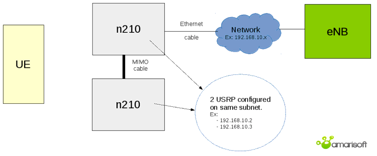
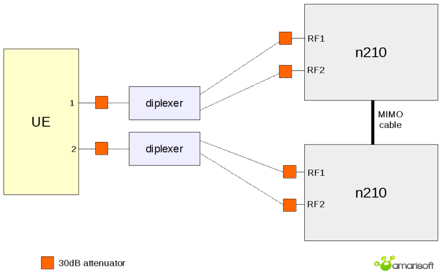
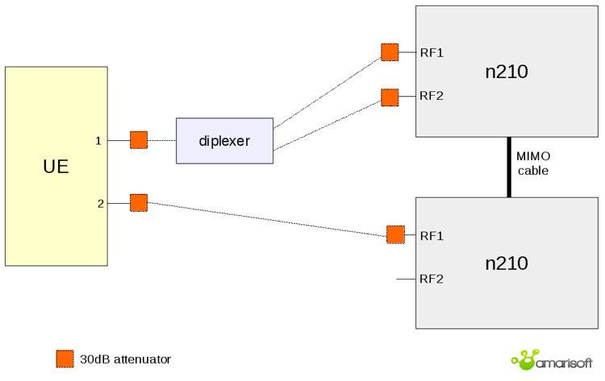
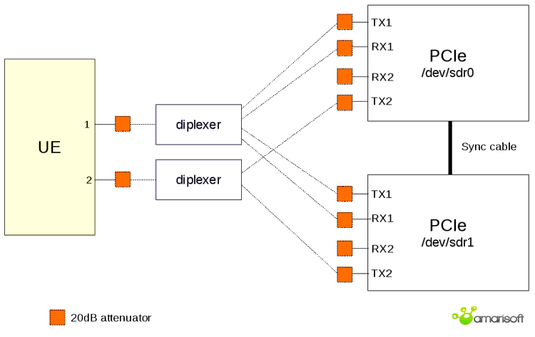

ping is not working.LTEENB is a LTE/NR base station (eNodeB/ng-eNodeB/gNodeB) implemented entirely in software and running on a PC. The PC generates a baseband signal which is sent to a radio front end doing the digital to analog conversion. The reverse is done for the reception.
LTEENB interfaces with a LTE Core Network thru the standard S1 interface and with a 5GS Core Network thru the standard NG interface. In particular the Amarisoft Core Network software (LTEMME) can easily be connected to it to build a highly configurable LTE and/or NR test network.
LTEENB also supports NB-IoT.
Your system requires at least GLIBC 2.17.
Other distributions can be used provided the radio frontend drivers are available for them.
If you ordered the OTS package, you don’t need installation so you can skip next chapter.
When booting, MME and eNB are automatically started within a screen.
If you are not familiar with screen here is what you must know:
screen -r
CTRL-A + 0
CTRL-A + 1
CTRL-A + d
The radio front end must be connected to one gigabit Ethernet port (don’t use a switch to connect them to avoid potential packet losses). The other Ethernet port can be connected to the local network if necessary.
It is not recommended to run LTEENB in a virtual machine because it has hard real time constraints.
We also assume that you have some Linux and LTE knownledge.
LTEENB uses the SCTP protocol for which the necessary packages are not usually installed. In order to install them, do as root user:
dnf install lksctp-tools kernel-modules-extra
sudo apt-get install lksctp-tools linux-image-extra-3.13.0-24-generic
Note that linux-image-extra package name may differ depending on your kernel version.
To verify that SCTP kernel module is running, do as root user:
checksctp
If it reports that the protocol is not supported,
Then reboot the PC in case the Linux kernel was upgraded too.
LTEENB has been compiled against openssl version 3.5.4.
If your system does not have compatible version installed you may have this error message at startup:
error while loading shared libraries: libssl.so.3: cannot open shared object file: No such file or directory
To overcome this problem, you may:
libs subdirectory of your release tarball.In case of persisting issue, raise a ticket from our support site at https://support.amarisoft.com/ with the information provided by below commands executed in LTEENB directory:
uname -a ls -l ldd ./lteenb openssl version
LTEENB requires a lot of CPU power and it has hard real time requirements (a maximum latency of 3 ms is required).
In order to get the lowest latency, it is recommended to set up the
performance frequency governor for each CPU core. An example is
included in the lte_init.sh script given with LTEENB.
Some buggy drivers are known to block the CPU during a few tens of
ms. When it happens, LTEENB displays UHD status: L=X U=Y
S=Z. One known problem is the DRM KMS cable polling. The script
lte_init.sh disables it automatically.
Other drivers such as Wifi controllers can give the same problem. In order to avoid such problems, remove all unnecessary peripherals from the PC.
Please refer to sub section of your radio frontend to set it up.
When configured, you will have to select it (See RRH selection).
Read the PCIe SDR documentation (trx_sdr.pdf).
Read the UHD Compatible RF frontends documentation (trx_uhd.pdf).
Use LimeSuiteNG software suite located at https://github.com/myriadrf/LimeSuiteNG, which contains Amarisoft plugin. During build it creates the needed trx_limesuite.so (build directory) file, which can be sim linked or copy pasted.
Insert the test USIM card in the device.
Enable data connection and roaming in the configuration of your device.
With LTE, no Access Point Name (APN) is necessary because a default one
is always provided by the network.
However, some UEs insists on having the same APN name as the MME to enable
IP connectivity.
As a result, start by removing any APN stored in the UE and manualy add APN (Only APN name is required) as defined in MME configuration file (Default is test123).
If possible, disable 2G (GSM) and 3G (WCDMA) access to have only LTE access system in order to speed up the network search.
If possible, limit the LTE frequency bands used by the device to the one you want to use in order to speed up the network search.
Decompress the LTEENB archive to a convenient place. The executable
lteenb can be launched from this directory.
The main configuration file is config/enb.cfg. It uses a superset of the JSON syntax.
The default setup is for a 10 MHz LTE eNodeB. The main parameter you need to change right now is the actual frequency you want to use. You need to be sure that no interference is present on the frequency you are using and that you have the legal right to use it (in most countries it is illegal to transmit on LTE frequency bands without an explicit authorization).
In order to reduce interferences, it is recommended to use a high frequency band such as the 2600 MHz band (band 7) in Europe.
The parameter dl_earfcn gives the EARFCN of the center
frequency for the downlink. The corresponding uplink frequency is
automatically choosen. The center frequency can be arbitrarily choosen
provided the transmitted spectrum fully lies inside the choosen
band. So if f is the center frequency, B the LTE
bandwidth, f_min and f_max the band limits, the
following relation must hold:
f_min + 0.5 * B <= f <= f_max - 0.5 * B
The EARFCN is the frequency expressed in 100 kHz units starting from an offset depending on the selected band. You can have the band parameters and do convertions between EARFCNs and frequencies at https://www.sqimway.com/lte_band.php or by looking at the section 5.7.3 of 3GPP TS 36.101.
To select appropriate RF frontend to use, please execute following command:
./config/rf_select.sh <type>
Where type is your frontend type:
NB: you can lanch following command to see available frontends:
./config/rf_select.sh
LTEENB needs a license key file to run. It is associated to your PC, so if you replace it or change its hardware configuration you must contact Amarisoft to get a new license key.
The following steps are needed to get this license file:
./lteenb config/enb.cfg
It says that the license key is not present and prints a 16 digit hexadecimal code.
delivery@amarisoft.com this hexadecimal code to your contact at Amarisoft.
You will get back the lteenb.key license key file.
${HOME} is the home directory of the root user). You can use the shell variable AMARISOFT_PATH to change this path.
Once the license key is installed, lteenb should start normally.
Customize and start the lte_init.sh script as root user to
configure the network and CPU governors.
Start the LTEMME software as root user. root priviledges
are needed to set up the virtual network interface.
./ltemme config/mme.cfg
In another terminal, start the LTEENB software as root user.
root priviledges are needed to use real time scheduling
priority.
./lteenb config/enb.cfg
The base station is now running. Type s1 in the command line
monitor of LTEENB to verify that it is connected to LTEMME. If it is
the case, type t to enable the MAC traces (the traces are
automatically disabled once you press return).
Turn on the UE and keep it at a few meters of the eNodeB antenna. It starts scanning the LTE bandwidth. After a few minutes, it should detect the eNodeB signal and transmit its first PRACH signal to the base station. You should get a trace like:
PRACH: cell=01 seq=X ta=Y snr=Z dB
Then the UE will attach to the simulated LTE core network and get its IP address. If it works, then the device will indicate it is connected.
The core network maintains a persistent database storing all the parameters of the configured UEs. It is by default in config/lte_ue.db. If the initial connection is OK, you can get the IP address of the UE from this file. You can then try to ping it from the PC.
Then if the local network is correctly configured on the PC, the UE can access to your local network (and internet if your local network allows it).
There are many parameters in an LTE setup, so there are many cause of problems. Here are a few ones we noticed during our tests:
LTEENB must be launched as root so that it can use real time scheduling.
If some librairies needed by LTEENB are not present, it means you need to use another Linux distribution or to upgrade it.
If you get this kind of message while starting lteenb:
'trx_uhd_3.4.0.so' does not exist
It means that current UHD version on your system is not supported.
Follow trx_uhd.pdf documentation to install proper version.
You need to contact Amarisoft to get a valid license key and/or a USB dongle.
These messages indicate that there are underflows or overflows errors when communicating with the RF card. The most likely explanation is that not enough CPU time is available. You can launch
top -H
To see which processes and threads use the CPU time. Normally only 2 LTEENB threads should use about 50% of one CPU core time each when the eNodeB is idle. The following can be done to help:
lteenb as root so that it can use real time scheduling.
debug log output (log_options option). It generates a lot of data and takes some CPU time.
For best performance, you can also remove unused daemons or cron jobs, in particular:
mlocate, tmpwatch, man-db, prelink.
If the PC is only used as server, it is better to boot the PC in text mode by default. If systemd is used by your Linux distribution (Fedora), it is done by changing the link /etc/systemd/system/default.target to /lib/systemd/system/runlevel3.target. If init is used, it is done by modifying /etc/inittab to use the run level 3 as the default run level:
id:3:initdefault:
This is the most critical step. If you don’t get the initial PRACH signal, it indicates that something is wrong in your configuration. Here are a few important points:
cell_id in enb.cfg. The UE memorizes the last parameters and won’t search another frequency if the Cell Identity is not modified.
If none of the previous point helps, consider trying another frequency
band (change the EARFCN and update cell_id in enb.cfg).
Look at the /tmp/enb0.log log file. There can be several problems. The normal steps are RRC connection, then NAS messages are exchanged to attach the UE and authenticate it.
The possible problems are:
PDN connectivity request. In this case, you see
PDN connectivity request and PDN connectivity reject in
the logs. Remove any explicit Access Point Name (APN) in the UE
configuration (the core network emulation only supports configuring a
default PDN in the initial attach).
ping is not working.If you get here, the device indicates that the LTE/4G connection is up but the ping to the UE from the PC does not work. You can also try a ping from the device to the PC (the PC can be pinged on 192.168.3.1).
Radio problems can still be the explication if the radio conditions are too bad. The symptom of this case is that you see many PRACH signals coming from the UE. Try to reduce the TX power with the tx_gain parameter.
Another explanation can be that the UE does not accept roaming. Try to enable it on the UE.
Another explanation can be bugs in the UE (or its PC driver if it is a
USB dongle) in case you changed the LTE configuration (we noticed it
in some cases). The symptom is that the IP packets are truncated when
doing tcpdump on the UE side. In case of doubt, just turn off
and on the UE (and the corresponding PC if it is a USB dongle) to
start from a clean state.
The most likely explanation is that the IP forwarding/masquerading is
not configured correctly on the PC. You need to look at the IP table
configuration (/sbin/iptables -n -v -L) and correct it if the
lte_init.sh configuration is not enough. Use of
tcpdump or wireshark on the different interfaces can
help to locate the problem.
Another possibility is that the DNS address given to the UE is not correct (try to ping using IP address instead of host names).
Verify that roaming is activated on the UE. The UE may not accept roaming and avoid IP access even if the ping is working.
The eNodeB and the Core Network can output the messages of
all the layers to log files. See the log_options option to
select the layer to output and the level of verbosity. The log
filenames are defined with the log_filename option.
You can also use Wireshark to monitor:
It is configured with the n_rb_dl parameter giving the number
of resource blocks.
To ease the bandwidth change, the enb.cfg configuration file has a define at the top named
N_RB_DL that can be set to 6, 15, 25, 50, 75, 100 for the bandwiths 1.4, 3, 5, 10, 15, 20 MHz.
Notes:
In order to avoid using too much CPU time, it is possible to limit the
uplink MCS (pusch_max_mcs for LTE cells, max_mcs in pusch object for NR cells)
and the number of iterations of the LTE turbo decoder (pusch_max_its) or NR LPDC decoder (ldpc_max_its).
Normally it is only critical for the larger LTE bandwidths (20 MHz). The symptom of too high CPU use
are many messages UHD status: L=X U=Y S=Z.
By default or when using the t monitor command, the eNodeB
displays the status of the connection with the UEs. It stops
displaying them when you press return.
----DL----------------------- ----UL----------------------------------------------------
UE_ID CL RNTI C cqi ri mcs retx txok brate C snr puc1 nl mcs retx rxok brate #its phr pl ta
1 001 003d 1 12 1 21.1 0 361 1.77M 1 9.1 8.5 1.0 14.7 3 779 2.06M 1/3.5/10 10 100 0.1
UE_IDS1 eNodeB or NG RAN UE identity, unique among all cells.
CLLower 7, 8 or 10 bits of the cell identity (hexadecimal).
RNTIC-RNTI of the UE (hexadecimal).
CNumber of aggregated DL cells.
cqiChannel Quality Indicator, between 0 (bad) and 15 (very good). If there are several aggregated DL cells, the minimum cqi is displayed.
riRank Indicator (number of layers for MIMO). If there are several aggregated DL cells, the minimum rank indicator is displayed.
mcsAverage Modulation and Coding Scheme.
retxNumber of transport block retransmissions.
txokNumber of successfully transmitted transport blocks.
brateAverage bitrate (at the MAC layer), in bits per second.
snrIs the measured Signal to Noise Ratio for the uplink from the PUSCH reference signals and the SRS.
puc1Is the measured Signal to Noise Ratio for the last PUCCH1.
nlAverage number of UL layers.
mcsAverage Modulation and Coding Scheme.
retxNumber of transport block retransmissions.
rxokNumber of received uplink transport blocks without CRC error.
#itsGives the minimum, average and maximum number of iterations of the turbo decoder or LDPC decoder.
phrIs the content of the last Power Headroom MAC control element sent by the UE. It is expressed in dB. Negative values indicate that the UE could not transmit with the required power.
plUplink Path Loss in dB. It is measured from the reported PHR and the measured uplink power level. It is meaningful only if the RF interface correctly reports the absolute received power level.
taAverage of the uplink timing advance measured for the UE in TA units.
The eNodeB does dynamic UE power control (see the dpc)
option. However, it is better to have a good initial UE power to avoid
retransmissions or interferences. So it is important to correctly set
the various power settings in the SIBs. In particular, to avoid
generating too much interference and to limit the battery drain, the
SIB1 p-Max parameter (maximum allowed power for the UE in dBm)
should be set to a low enough value (a few dBm).
It is also useful to tune the value of referenceSignalPower
(power per carrier of the reference signal in dBm) in SIB2 if the RF
interface does not provides its transmit power thru the TRX driver. It
is used by the UE to compute the path loss and to adjust its own
transmit power.
The eNodeB/ng-eNodeB can run several LTE or NB-IoT cells and the gNodeB can run several NR cells. The cells can be configured individually and share the same S1 or NG interfaces with the Core Network.
Constraints:
prach-ConfigIndex (SIB2), i.e. their PRACH must have the same duration and transmitted in the same subframes.
n_id_cell property) and PRACH rootSequenceIndex (root_sequence_index and br_root_sequence_index properties) are different to minimize the inter-cell interferences.
n_id_ncell property) are different and NPRACH nprach-StartTime-r13 and/or nprach-SubcarrierOffset-r13 (SIB2) do not overlap to minimize the inter-cell interferences.
n_id_cell property) and PRACH rootSequenceIndex (root_sequence_index property) are different to minimize the inter-cell interferences.
Let’s take the following example to configure 3 cells in band 7:
cell 1 DL frequency: 2627 MHz cell 2 DL frequency: 2642 MHz cell 3 DL frequency: 2657 MHz average_dl_freq = (2627+2642+2657)/3 = 2642 MHz cell1_freq_offset = 2627-2642 = -15 MHz cell2_freq_offset = 2642-2642 = 0 MHz cell3_freq_offset = 2657-2642 = 15 MHz cell 1 DL EARFCN: 2820 cell 2 DL EARFCN: 2970 cell 3 DL EARFCN: 3120 cell1_cell2_earfcn_offset = 2820-2970 = -150 cell1_cell3_earfcn_offset = 2820-3120 = -300 cell3_cell2_earfcn_offset = 3120-2970 = 150
We can observe that the difference between the center frequency of each cell and the average of center frequencies is indeed a multiple of 15 kHz and the difference between the DL EARFCNs are a multiple of 3.
A configuration example is given in config/enb-2cc.cfg for two SISO 5 MHz cells in bands 3 and 7. This configuration could be tested with:
This configuration also enables carrier aggregation for release 10 UEs.
Intra-eNodeB, Intra-gNodeB, S1, X2, NG, Xn, EPS to 5GS and 5GS to EPS handovers are supported.
The handover can be manually initiated with the handover monitor command, the
handover remote API, or automatically initiated based on UE measurement.
Test case for intra-eNodeB handover:
t command to active the MAC traces or use the monitor command ue to list the connected UEs).
cell_gain 1 -10
After some time the UE will make a handover to cell 2 (check it
with the t command by looking at the CL column).
cell_gain 1 0 ; cell_gain 2 -10
After some time the UE will make a handover to cell 1.
handover monitor command
by giving the UE ID and the Physical Cell Identity (and optionally the
DL EARFCN) of the target cell.
The behavior is similar with S1, X2, NG or Xn handovers, but at least two eNodeBs or gNodeBs (and two radio heads) are needed to use it.
In all the cases, it is important to have a valid neighbour cell
configuration for each cell (ncell_list property) so that the
source eNodeB can deduce target the Cell Identity from the target
Physical Cell Identity and DL EARFCN.
MIMO is currently supported with following radio frontends:
The configuration mimo-2x2-5mhz.cfg demonstrates a 5 MHz MIMO configuration using transmission mode 3 (large delay CDD).
The configuration mimo-2x2-20mhz.cfg demonstrates a 20 MHz MIMO configuration with transmission mode 3.
If you use N2x0 with this configuration, please note that there is only one N2x0 connected by ethernet (second is using MIMO cable).
Note: the current UHD driver uses a lot of CPU time when MIMO is enabled. If it is an issue in your tests, follow patched version installation inside your trx_uhd.pdf documentation.
The following diagram depicts how to set up your MIMO environment with antennas using one single PCIe SDR card in FDD. You can simplify the setup by removing the antenna connected to RX2 if there is no MIMO in UL.
For TDD mode, you only need to connect antennas on the TX1 and TX2 connectors.
To setup your MIMO environment with N2x0 device, here is a detailed diagram of how to proceed.
This configuration may have a bottle neck at ethernet side because USRP speed is limited to 1Gbps.
That’s why for 20Mhz MIMO configuration, downlink sampling rate is limited to 8 (dl_sample_bits parameter).
You can remove this constraint with the following diagram:
Note that the diagrams provided below are only examples.
You may adapt depending on the UE.
If you are using FDD mode, the general case will be as follows. Note that if there is no MIMO in UL, you can simplify by removing the RX2 connection, thus connecting the TX2 directly to antenna 2 at UE side.
For TDD mode, you only need to connect TX1 and TX2.
If you are using FDD mode, the general case will be:
On most UE, second antenna is only used for RX so you can simplify with:
If your are using TDD mode, only one antenna is necessary per USRP.
Thus, you only need following diagram:
CA is currently supported with PCIe SDR radio frontend. Intra-band CA could be handled with one single PCIe SDR card with the same constrains specified for intra-band multi-cell support, See Intra-band multi-cell. For inter-band CA, one PCIe SDR card is required per band. The following diagram depicts the environment setup for DL inter-band CA with 2 carriers and MIMO in DL.
The configuration enb-2cc.cfg is an example of DL CA with 2 carriers in band 3 and band 7 (5+5 MHz). To use it in 2x2 DL MIMO 20MHz configuration, edit the file and change N_RB_DL to 100 and N_ANTENNA_DL to 2.
If you would like to enable CA in UL as well, you should connect the RX2 connectors as below.
The configuration file enb.cfg with the TDD define set to 1 at the top of the file is an example of TDD configuration. The eNodeB supports all 7 UL/DL TDD configurations.
The eNodeB supports Category M1 UEs (Bandwidth Reduced UEs). They only receive or transmit on a 1.4 MHz bandwidth so they cannot use all the standard LTE signals. In particular, BR specific system information blocks are necessary. The configuration file enb-catm1.cfg is an example of Category M1 configuration. See Bandwidth Reduced parameters.
The eNodeB supports NB-IoT cells. They use a 200 kHz bandwidth which can be inside an existing LTE cell (in-band operation mode), at its edge (guard band mode) or completely independent (standalone mode). An example of standalone NB-IoT configuration is in file enb-nbiot.cfg. An example of in-band NB-IoT configuration is in file enb-nbiot-inband.cfg.
The eNodeB/gNodeB supports NR cells.
When the MME requests the establishment of an ERAB for a UE supporting EN-DC,
the eNB first checks if the corresponding QCI is declared in the NR cell definition.
If this is the case, and if the en_dc_setup parameter is not set, the ERAB is
established in the NR cell. Otherwise it is established in the LTE cell.
For EN-DC configuration, some exemples of eNodeB configuration are in files
gnb-nsa.cfg, gnb-2cc-nsa.cfg, gnb-pscell-change.cfg and
gnb-nsa-ho-lte.cfg.
When the AMF requests the establishment of a QoS flow for a UE supporting NR-DC,
the gNB first checks if the corresponding 5QI is declared in the FR2 cell definition.
If this is the case, and if the nr_dc_setup parameter is not set, the QoS flow
is established in the FR2 cell. Otherwise it is established in the FR1 cell.
For SA configuration, some examples of gNodeB configuration are in files
gnb-sa.cfg, gnb-sa-ho.cfg and gnb-sa-lte-ho.cfg.
For NR-DC configuration, an example of gNodeB configuration is in file
gnb-nr-dc.cfg.
The gNodeB supports RedCap and eRedCap UEs. See Reduced Capability parameters.
The main configuration file uses a syntax very similar to the Javascript Object Notation (JSON) with few extensions.
13.4
1.2+3*I
"string"
true or false.
{ field1: value1, field2: value2, .... }
[ value1, value2, .... ]
+, -, * and / are
supported with numbers and complex numbers. + also concatenates
strings. The operators !, ||, &&, ==,
!=, <, <=, >=, > are supported too.
0 and 1 are accepted as synonyms for the
boolean values false and true.
{
value: "foo",
value: "bar",
sub: {
value: "foo"
},
sub: {
value: "bar"
}
}
Will be equivalent to:
{
value: "bar",
sub: {
value: "bar"
}
}
value: "foo",
include "file2.cfg",
foo: "foo"
And file2.cfg is:
value: "bar",
foo: "bar"
Final config will be:
{
value: "bar",
foo: "foo"
}
#define var exprDefine a new variable with value expr. expr must be a valid JSON expression. Note that unlike the standard C preprocessor, expr is evaluated by the preprocessor.
#undef varUndefine the variable var.
#include exprInclude the file whose filename is the evaluation of the string expression expr.
#if exprConsider the following text if expr is true.
#elseAlternative of #if block.
#elifComposition of #else and #if.
#endifEnd of #if block.
#ifdef varShortcut for #if defined(var)
#ifndef varShortcut for #if !defined(var)
In the JSON source, every occurrence of a defined preprocessor variable is replaced by its value.
${expr} syntax. Example: `abc${1+2}d` is evaluated as the string "abc3d". Preprocessor variables can be used inside the expression. Backquote strings may span several lines.
Merge overriding direction depends on context, i.e source may override destination or the opposite.
JSON merge is recursive for Objects and Arrays.
Example, merging
{
foo: { value: "bar" },
same: "one",
one: 1
}
with
{
foo: { value: "none", second: true },
same: "two",
two: 1
}
Will become:
{
foo: { value: "bar", second: true },
same: "one",
one: 1
two: 1
}
assuming first object overrides second one.
In case of Array merging, the final array length will be the maximum length of all merged arrays.
For each element of the final array, merge will be done considering defined elements only.
Ex:
{
array: [0, 1, 2, { foo: "bar" } ],
array: [3, 4],
array: [5, 6, 7, { bar: "foo" }, 8 ]
}
Will be merged to:
{
array: [5, 6, 7, { foo: "bar", bar: "foo" }, 8 ],
}
Some parameters refer to a ASN.1 description. Such parameter can be
an object or a string.
In case of object, the following properties apply:
contentObject. ASN.1 definition in JSON format as defined in ITU X.697 (JER encoding).
If defined, filename must not be set.
filenameString. Reference to a file containing the ASN.1 definition.
If defined, content must not be set.
content_typeOptional string. In case filename is set, defines the encoding format of
the ASN.1 file. Can be:
application/jsonJER encoding
application/octet-streamBinary
plain/text or not setGSER encoding as defined in RFC 3641 (Generic String Encoding Rules for ASN.1 Types).
In case content_type is not defined, file extension will be used to guess type. In case no matching is found, GSER decoding will be used.
In case of string, the parameter is assumed to be a filename refering to a GSER encoded content.
To create your ASN.1 files, you can use our ASN.1 editor.
log_filenameString. Set the log filename. If no leading /, it is relative to the
configuration file path. See Log file format.
log_optionsString. Set the logging options as a comma separated list of assignments.
none, error, info or debug. In debug
level, the content of the transmitted data is logged.
n bytes are shown in hexa. For ASN.1, NAS or Diameter content, show the full content of the message if n > 0.
channel_sim_control is enabled.
file.path
and open a new log file (Headers are kept).
file.path,
and open a new log file (Headers are kept).file.path,
and open a new log file (Headers are kept).file.rotate set),
rename and move current log to this path instead of initial log path.
Available layers are: phy, mac, rlc, pdcp, rrc, nas, s1ap, ngap, x2ap, xnap, m2ap, lppa, nrppa, gtpu
log_syncOptional boolean (default = false). If true, logs will be synchronously dumped to file.
Warning, this may lead to performances decrease.
pcapOptional object. Gives the Wireshark capture options. The
mac-lte-framed protocol using link-layer type 147 is supported (http://wiki.wireshark.org/MAC-LTE).
In order to enable it in Wireshark, go to the menu Edit->Preferences->protocols->DLT_USER->Edit->New and add the DLT type 147 (User 0) with payload protocol mac-lte-framed.
It works only with LTE cells.
filenameString. Filename in which the capture is stored.
bcchOptional boolean (default = false). If true, the BCCH SI PDUs are logged. It is disabled by default because the capture size increases even when the eNodeB is idle.
max_data_lenOptional integer (default = 65536). Maximum captured MAC PDU length per packet.
use_pipeOptional boolean (default = false). Capture in a pipe instead of a regular pipe. This allow live capture with wireshark: wireshark -k -i <filename>.
Note that it can be used only once as wireshark requires initial header.
descriptionOptional string. Set informational description for config_get remote API.
enb_nameOptional string. Set eNB name used in S1 connection setup request.
gnb_nameOptional string. Set gNB name used in NG connection setup request.
gtp_addrString. Set the IP address (and optional port) on which the GTP-U packets are received. The default port is 2152. It is normally the IP address of the network interface connected to the core network.
gtp_payload_mtuOptional integer (range 68 to 16384, default = 1500). MTU in bytes for the GTP-U payload. Do not forget to update the network interface MTU accordingly for optimal performance. For example with a GTP MTU of 1500 bytes, interface should have a MTU of at least 1564 bytes.
gtp_use_packet_bundlingOptional boolean (default = false). Concatenate multiple GTP-U PDUs within a single UDP datagram. Be careful, this is a non-standard option that must not be activated if the peer is not an Amarisoft MME/AMF with this option activated.
mme_listOptional array of objects. It must be present when LTE or NB-IoT cells are declared. List of MME to which the eNodeB is connected. Each object contains the following properties:
mme_addrString. Set the IP address (and optional port) of S1AP SCTP connection to the MME. The default port is 36412.
Syntax:
gtp_ext_addrOptional string. Set the IP address on which the Core Network should transmit the GTP-U packets. It is the same as gtp_addr by default. It can be different if the eNodeB is behind a NAT.
s1ap_bind_addrOptional string. IP address and optional port on which the S1AP SCTP connection is bound.
qci_dscp_mappingOptional array of objects. Allows to define a specific IP differentiated services code point
for a given QCI. QCI not explicitly configured use the default DSCP value 0.
Each object must contain the following properties:
qciInteger (range 1 to 254). QCI value.
dscpInteger (range 0 to 63). DSCP value.
backup_mme_addrOptional string. Defines the IP address (and optional port) of the backup MME to be used if the S1 connection
is not established with the current MME. If the S1 connection is established, the backup MME will not be used.
There must be a corresponding object for the backup MME in the mme_list array.
priorityOptional integer (range 0 to 1, default 0). Defines the priority of a given MME. When performing MME selection, if no candidate is found with priority n, the candidates with priority n+1 are tested.
emergency_bearer_arp_priority_levelOptional integer (range 0 to 15, default 1). Defines the ARP priority level used by EPS for emergency bearers. Set to 0 to have no emergency bearer identification based on the ARP priority level.
For backward compatibility, if mme_list is omitted, then a
single MME is assumed and the properties mme_addr,
gtp_ext_addr and s1ap_bind_addr are expected at the top
level.
amf_listOptional array of objects. It must be present when NR SA cells or LTE/NB-IoT cells with 5GC connectivity are declared. List of AMF to which the gNodeB/ng-eNodeB is connected. Each object contains the following properties:
amf_addrString. Set the IP address (and optional port) of NGAP SCTP connection to the AMF. The default port is 38412.
gtp_ext_addrOptional string. Set the IP address on which the Core Network should transmit the GTP-U packets. It is the same as gtp_addr by default. It can be different if the gNodeB/ng-eNodeB is behind a NAT.
ngap_bind_addrOptional string. IP address and optional port on which the NGAP SCTP connection is bound.
5qi_dscp_mappingOptional array of objects. Allows to define a specific IP differentiated services code point
for a given 5QI. 5QI not explicitly configured use the default DSCP value 0.
Each object must contain the following properties:
5qiInteger (range 1 to 254). 5QI value.
dscpInteger (range 0 to 63). DSCP value.
backup_amf_addrOptional string. Defines the IP address (and optional port) of the backup AMF to be used if the NG connection
is not established with the current AMF. If the NG connection is established, the backup AMF will not be used.
There must be a corresponding object for the backup AMF in the amf_list array.
priorityOptional integer (range 0 to 1, default 0). Defines the priority of a given AMF. When performing AMF selection, if no candidate is found with priority n, the candidates with priority n+1 are tested.
emergency_bearer_arp_priority_levelOptional integer (range 0 to 15, default 1). Defines the ARP priority level used by 5GS for emergency bearers. Set to 0 to have no emergency bearer identification based on the ARP priority level.
x2ap_bind_addrOptional string. IP address and optional port on which the X2AP SCTP connection is bound.
x2_peersOptional array of strings. IP addresses and optional port of other eNodeBs to establish X2 connections. The default port is 36422.
xnap_bind_addrOptional string. IP address and optional port on which the XnAP SCTP connection is bound.
xn_peersOptional array of strings. IP addresses and optional port of other eNodeBs to establish Xn connections. The default port is 38422.
m2ap_bind_addrOptional string. IP address and optional port on which the M2AP SCTP connection is bound.
mbmsgw_addrOptional string. Set the IP address (and optional port) of the MBMS Gateway for the M2 connection. The default port is 36443.
mbms_gtp_u_portOptional integer. GTP-U local port number used to receive the MBMS packets. The default port is 2152.
mbs_gtp_u_portOptional integer. GTP-U local port number used to receive the MBS packets. The default port is 2152.
mccString. The MCC part of the PLMN (3 digits). This property is
obsolete. Use plmn_list instead.
mncString. The MNC part of the PLMN (2 or 3 digits). This property is
obsolete. Use plmn_list instead.
enb_typeOptional enumeration: macro, short_macro, long_macro or home (default = macro). Select between macro or home eNodeB.
enb_idOptional integer. The 18 bit (short macro), 20 bit (macro), 21 bits (long macro) or 28 bit (home) eNodeB global identifier. It must be present when LTE or NB-IoT cells are declared.
gnb_id_bitsOptional integer (range 22 to 32). Number of bits for the gNodeB global identifier. It must be present when NR SA cells are declared.
gnb_idOptional integer. The gNodeB global identifier. It must be present when NR SA cells are declared.
rf_driverObject. Parameters of the radio driver. See Radio driver configuration.
tx_gainFloat or array of floats. Transmit gain in dB. The range is device dependent. For the PCIe SDR board, the range is between 0 and 89.75 dB. For the USRP N2x0 device with the SBX daughterboard, the range is 0 to 31.5 dB. With an array of floats a different gain is specified for each channel.
rx_gainFloat or array of floats. Receive gain in dB. The range is device dependent. For the PCIe SDR board, the range is between -11 and 77 dB (the exact limits depend on the RX frequency). For the USRP N2x0 device with the SBX daughterboard, the range is 0 to 31.5 dB. With an array of floats a different gain is specified for each channel.
com_addrOptional string. Address of the WebSocket server remote API. See Remote API.
If set, the WebSocket server for remote API will be enabled and bound to this address.
Default port is 9001.
Setting IP address to [::] will make remote API reachable through all network interfaces.
com_nameOptional string. Sets server name. ENB by default
com_ssl_certificateOptional string. If set, forces SSL for WebSockets. Defines CA certificate filename.
com_ssl_keyOptional string. Mandatory if com_ssl_certificate is set. Defines CA private key filename.
com_ssl_peer_verifyOptional boolean (default is false). If true, server will check client certificate.
com_ssl_caOptional string. Set CA certificate. In case of peer verification with self signed certificate, you should use the client certificate.
com_log_lockOptional boolean (default is false). If true, logs configuration can’t be changed
via config_set remote API.
com_log_usOptional boolean (default is false). If true, logs sent by log_get remote API
response will have a timestamp_us parameters instead of timestamp
com_authOptional object. If set, remote API access will require authentication.
Authentication mechanism is describe in Remote API Startup section.
passfileOptional string. Defines filename where password is stored (plaintext).
If not set, password must be set
passwordOptional string. Defines password.
If not set, passfile must be set.
unsecureOptional boolean (default false). If set, allow password to be sent plaintext.
NB: you should set it to true if you access it from a Web Browser (Ex: Amarisoft GUI)
without SSL (https) as your Web Browser may prevent secure access to work.
com_log_countOptional number (Default = 8192). Defines number of logs to keep in memory before dropping them.
Must be between 4096 and 2097152).
sim_eventsArray of object. Each element defines a remote API request (Remote API)
except that message field is replaced by event.
sim_events_loop_countIf set, will define loop_count for each event of sim_events, See loop_count.
sim_events_loop_delayIf set, will define loop_delay for each event of sim_events, See loop_delay.
license_serverConfiguration of the Amarisoft license server to use.
Object with following properties:
server_addrString. IP address of the license server.
nameOptional string. Text to be displayed inside server monitor or remote API.
tagOptional string. If set, server will only allow license with same tag.
Example:
license_server: {
server_addr: "192.168.0.20",
name: "My license"
}
cell_listArray of object. Each element gives the configuration of a cell. The
property cell_default gives a default value for each
property. See Cell configuration.
cell_defaultOptional Object. Gives a default value for the LTE cell configuration.
This object will be merged with each element of cell_list according
to JSON merge rules rules (cell_list overrides cell_default).
nb_cell_listOptional array of object. Each element gives the configuration of a
NB-IoT cell. The property nb_cell_default gives a default value
for each property. See NB-IoT cell configuration.
nb_cell_defaultOptional Object. Gives a default value for the NB-IoT cell configuration.
This object will be merged with each element of nb_cell_list according
to JSON merge rules rules (nb_cell_list overrides nb_cell_default).
en_dc_supportOptional boolean (default = false). Set it to true to enable E-UTRA NR Dual Connectivity support.
nr_cell_listOptional array of object. Each element gives the configuration of a NR cell. See NR cell configuration.
nr_cell_defaultOptional Object. Gives a default value for the NR cell configuration.
This object will be merged with each element of nr_cell_list according
to JSON merge rules rules (nr_cell_list overrides nr_cell_default).
internal_time_refOptional enumeration: os_clock or rf_frontend (default = os_clock).
Selects the time source for the LTE SIB16 or NR SIB9.
rf_frontend selects the time from the RF frontend. It is the
normal choice when the RF frontend is time synchronized.
os_clock uses the OS clock and derives the number leap seconds
by using the right/UTC Unix time zone.
rf_frontend_time_offsetOptional integer (default = 0). Gives the difference in ms between the time given by the rf frontend and the International Atomic Time (TAI).
frame_epochOptional integer (default = 0). Gives the TAI time in ms at which the LTE frame 0 starts. Use 0 to have the frame 0 start at 1970-01-01 00:00:00 TAI. Use 315964819000 to have the frame 0 start at 1980-01-06 00:00:19 TAI (GPS time = 0).
rf_portsOptional array of objects. Each object contains the configuration of
the corresponding RF port. In order to support legacy configuration
files, if the rf_ports array is not present, the RF port
parameters come from the top level and are identical for all the RF
ports.
Each object contain the following properties:
dl_freqOptional float. Tuning frequency in MHz for the downlink. It is automatically set to the average of the DL center frequency of each cell.
In the multi-cell case, if the radio head has a degraded output near the center of the transmitted spectrum (which is the case for zero IF TX or RX architectures), it is interesting to move the center of the transmitted spectrum outside the spectrum of every cell or in the middle of the spectrum of a given cell.
In this case, the dl_freq property can be used. It must be
set so that for each cell dl_freq - dl_cell_freq is a
multiple of 15 kHz (dl_freq_cell is assumed to be the center
frequency of a cell).
Note: if you want to use non standard frequencies, use the
custom_freq_band option.
ul_freqOptional float. Tuning frequency in MHz for the uplink. It is automatically set to the average of the UL center frequency of each cell.
Same remark as dl_freq.
channel_dlOptional object. Set the RF port specific channel simulator configuration. See RF port specific channel simulator.
ul_freq_shiftOptional float. Add ul_freq_shift Hz to the nominal center
uplink frequency. This parameter may be used to compensate a large
simulated frequency offset when using the channel simulator.
n_antenna_dlOptional integer. Set the number of DL antennas. Only useful if the channel simulator is used to set a different number of physical DL antennas at the output of the channel simulator. See RF port specific channel simulator.
sample_rateOptional float. Sample rate in MHz. It is normally automatically set depending on the radio head capabilities and selected cell bandwidth.
sample_rate_numOptional integer. Main sample rate used for the LTE signal processing
in 1.92 MHz units (hence 3 means 5.76 MHz). It is normally
automatically set depending on the radio head capabilities and
selected cell bandwidth. If the resulting rate is different from
sample_rate, a fractional sample rate interpolator is used to
convert the sample rate (this is only possible with a 15kHz SCS without ORAN split 7.2).
tx_gain_offsetOptional float. Set the TX digital gain. The default value is -14
dB. It should be set so that the digital signal level is as high as
possible without saturation. The t spl monitor command
displays the maximum digital signal level and the number of
saturations.
When using the channel simulator with fading channels it is
necessary to lower tx_gain_offset to reduce the likelihood of
saturations.
tx_power_offsetOptional float. If set add an offset in dB to any TX signal power
information such as ’t spl’ monitor command or
referenceSignalPower/ss-PBCH-BlockPower (if manual_ref_signal_power
is false).
Useful when placing an attenuator (negative value) or a power amplifier
(positive value) after the radio frontend TX output.
rf_dl_freqOptional float. Override the tuning frequency in MHz for the downlink. This optional is only needed if there is a frequency translator after the SDR device.
rf_ul_freqOptional float. Override the tuning frequency in MHz for the uplink. This optional is only needed if there is a frequency translator after the SDR device.
dl_bandwidthOptional float. Force the DL RF bandwidth of the SDR device in MHz.
ul_bandwidthOptional float. Force the UL RF bandwidth of the SDR device in MHz.
rx_to_tx_latencyOptional integer (range 2 to 4, default = 4). Minimum allowed
latency in ms between RX and TX.
This parameter is deprecated. Please use cell rx_to_tx_latency
cell parameter instead (See Cell RX/TX latency).
If the latency is too high, the gNB scheduler may not be able to use all the PDSCH transmission occasions with subcarrier spacings larger or equal to 30 kHz. Increasing the value will improve performances, especially in case of radio frontend underflows. If LTE and NB-IoT cells are present on the RF port, only the value 4 is allowed.
papr_reductionOptional object. Define the parameters for Peak to Average Power Ratio (PAPR) reduction. It is only useful if you use a high power amplifier. In the current version it takes a significant amount of CPU time, so it is only usable for LTE bandwidth <= 10 MHz.
The following properties are available:
enabledBoolean. If true, PAPR reduction is enabled.
a_maxFloat. Set the cut-off level in dB relative to the Reference Signal power.
evm_maxFloat. Set the maximum Error Vector Magnitude (EVM) for 64QAM.
oob_pointsArray of floats. Each pair of number defines a point of the maximum allowed distorsion curve. The first number is the frequency offset in MHz from the edge of the LTE spectrum. The second number is the power level in dB. The actual curve is linearly interpolated between the points.
Typically, the PAPR CCDF at 10^-5 goes from 12.5 dB to 11.0 dB.
n_subbandOptional integer (default = 1). If larger than one, the RF port
bandwidth is split into n_subband frequency parts. For
example, it allows to reach a 100 MHz bandwidth with two 50 MHz SDR
boards. The number of channels of the RF port is
n_subband*n_ant where n_ant is the number of
selected antennas. The first n_ant channels correspond to the
lowest frequency part, the next n_ant channels to next part,
etc. It is only supported with NR cells. The PRACH and the SSB must
always be in the first frequency part.
s72Optional object. If set, this RF port will use ORAN split 7.2 TRX API to send data to the radio unit.
RF port must only have NR cells.
This section has the following properties:
rtc_idInteger. RTC id.
ud_comp_hdrOptional integer (default = 0). Set User Data compression header configuration.
Can be 0 for no compression, 0x81 for BF8, 0x91 for BF9, 0xc1 for BF12 or
0xe1 for BF14.
port_mappingOptional array of integers. If set, allows to map UE antenna to different RU port.
Each number represents the RU port ID used for the antenna in ORAN packets.
This array must have same number of elements as the maximum between DL antenna count and UL antenna count.
Each RU port must be set once in the array.
Ex:
port_mapping: [1, 2, 4, 0],
Means UE will use RU port 1 for the first antenna, RU port 2 for the second antenna...
By default, it is set to [0, 1, 2, ... ]
port_mapping_dlOptional array of integers. Same as port_mapping except that it applies only for
DL antenna and the array must have same number of elements as DL antenna count.
port_mapping_ulOptional array of integers. Same as port_mapping except that it applies only for
UL antenna and the array must have same number of elements as UL antenna count.
port_mapping_prachOptional array of integers. Same as port_mapping except that it applies only for
the PRACH ORAN packets.
gen_prb0Optional boolean (default = false). If true, numPrbc of U-Plane ORAN section will be set
to 0 when all ressources blocks are used and exceed 255.
If set to false and number of ressources blocks exceed 255, multiple ORAN sections
will be generated.
cp_dlOptional boolean (default = true). If false, LTEENB won’t generate any DL-Control packet.
cp_ulOptional boolean (default = true). If set to false, UL-C packet won’t be generated. May be use with test mode to qualify DL signal.
relative_symbolOptional boolean (default = false). In case of section type 3, start symbol of both control and data packet will start at 0, i.e relative to time_offset
debugOptional boolean (default = false). If true, mode information will be displayed in logs. May have an impact on performances.
ul_ctrl_latencyOptional integer (default = 1, between 1 and 2). Set how many slot in advance to send uplink control packets (Experimental).
Example:
rf_ports: [
{
s72: {
rtc_id: 0x1000,
gen_prb0: true,
}
}
],
udc_portOptional integer. Selects the UDC port used for the cell. Cells aggregated with the same UDC device, will use the same udc_port number.
cpu_core_listOptional Array. Defines the core affinity of the digital signal processing engine (Physical layer) for both UL and DL of the cells associated to this rf_port (See cpu_core_list).
cpu_core_list_ulOptional Array. Defines the core affinity of the digital signal processing
engine (Physical layer) for UL of the associated cell(s).
If set, overrides cpu_core_list.
cpu_core_list_dlOptional Array. Defines the core affinity of the digital signal processing
engine (Physical layer) for DL of the associated cell(s).
If set, overrides cpu_core_list.
nb_threadsOptional number. If set, forces the number of threads used by the digital processing engine for DL or UL of the associated cell(s).
nb_threads_ulOptional number. If set, forces the number of threads used by the digital
processing engine for UL of the associated cell(s).
If set, overrides nb_threads.
nb_threads_dlOptional number. If set, forces the number of threads used by the digital
processing engine for DL of the associated cell(s).
If set, overrides nb_threads.
cpu_numa_listOptional array of integers. Each integer represent a NUMA node index.
If set will, digital processing engine will use the list of defined NUMA nodes
for its memory usage.
If this field is not set but cpu_core_list is defined, LTEENB will select
the NUMA nodes associated to the affected cores. This means that most of the time this
parameter shouldn’t be set.
The only relevant case is when a NUMA node has no RAM bank connected,
you may use this parameter to select the closest NUMA node with memory.
udc_portsOptional array of objects. Each object contains the configuration of the corresponding UDC port.
Each object contains the following properties:
argsString. Set the UDC configuration parameters. Each parameter composing the string is separed by semicolon (See args configuration).
cmdString. Specifies the path to the script for the UDC configuration (See UDC configuration reference). The script is called once for each configured udc_port with the following command line arguments:
args: (See args)
lo_freq: (See lo_freq)
min_freq: automatically set by the software, spectrum minimum frequency for aggregated cells using the same udc_port
max_freq: automatically set by the software, spectrum maximum frequency for aggregated cells using the same udc_port
freq: automatically set by the software, FR2 cell central frequency, for each rf_port using the same udc_port
bandwidth: automatically set by the software, FR2 cell bandwidth, for each rf_port using the same udc_port
lo_freqOptional float. Specifies the UDC LO frequency in MHz to be configured. If not present, it will be automatically computed.
tx_power_offsetOptional float. Measured in dB, negative value. It corresponds to the amount of attenuation between the SDR and the UDC IF port.
The default value is 0, in case of aggregated cells with combiner the attenuation is computed as -10*log10(COMBINER_PORTS).
tx_pad_durationOptional integer (default = 23). Duration (in 1/1.92 us units) of the zero sample burst sent before the start of the downlink burst in TDD. It corresponds to the power amplifier ramp up duration. The appropriate value depends on the radio head.
tx_time_offsetOptional integer (default = 0). Time offset (in samples) for the downlink. It may be needed to compensate internal delays in the radio head. In a normal setup, this value should be set to zero.
rx_ta_offsetOptional float (default = 2.0). Time offset (in 1/1.92 us) for the uplink. With a well calibrated radio head (i.e. where the TRX timestamps take into account the internal radio head delays), it gives the PRACH timing advance of a UE close to the eNodeB. A small non zero value (such as 2) is recommended.
tdd_legacy_timingOptional boolean (default = false). If true, the LTE TDD downlink frame starts 39/1.92 us after the GPS origin. Otherwise, the LTE TDD downlink frame starts at the GPS origin (default). For interoperability purposes with other eNodeBs, it is better to keep it to false.
custom_freq_bandOptional object or array of objects. Define a non standard LTE or NR frequency band. Standard bands can also be overriden by this option. If the uplink information is not provided, it is assumed to be the same as the downlink (TDD band). Use an array of objects if you want to define more than one custom band.
For LTE bands, the following parameters are available:
bandRange: 1 to 256.
dl_earfcn_minRange: 0 to 262143.
dl_earfcn_maxRange: 0 to 262143.
dl_freq_minFloat. Low DL frequency in MHz.
ul_earfcn_minOptional integer. Range: 0 to 262143.
ul_earfcn_maxOptional integer. Range: 0 to 262143.
ul_freq_minOptional Float. Low UL frequency in MHz.
ntnOptional boolean. True if this is a NTN band.
For NR bands, the following parameters are available:
band_nrRange: 1 to 1024. NR band number.
dl_freq_minFloat. Range: 0 to 65535. Minimum DL frequency in MHz. Use 0 if no DL.
dl_freq_maxFloat. Range: 0 to 65535. Maximum DL frequency in MHz. Use 0 if no DL.
ul_freq_minFloat. Range: 0 to 65535. Minimum UL frequency in MHz. Use 0 if no UL. If not provided, use the same value as DL (TDD).
ul_freq_maxFloat. Range: 0 to 65535. Maximum UL frequency in MHz. Use 0 if no UL.
ssb_scsArray of integers. List of allowed SSB subcarrier spacing for this band. Allowed values: 15, 30, 120 or 240.
f_rasterEnumeration: 100, 15, 15_30, 15_30_100, 60_120, 100_enhanced. Frequency raster in kHz.
ssb_case_cBoolean. True if SSB case C is enabled on this band.
min_40mhz_bwBoolean. True if the minimum allowed bandwidth on this band is at least 40 MHz. This information is used to select the CoReSet #0 table in standalone mode.
delta_gscnOptional enumeration: 1, 3, 7, 16 (default = 1). GSCN step size.
ntnOptional boolean. True if this is a NTN band.
rate_bucket_durationOptional. Range 50 to 1000 (default = 100). Duration in ms for the average bit rate estimation. It is used to enforce the UE Aggregate Maximum Bit Rate and GBR ERAB Maximum Bit Rate.
sched_rate_durationOptional. Range 5 to 1000 (default = 50). Period in ms for the average bit rate estimation for the MAC scheduler.
sched_metricOptional enumeration: pf, rr, mt (default = pf). Set the MAC scheduler metric. Available possibilities:
| Type | Description |
|---|---|
| pf | Proportionally fair |
| rr | Round-robin |
| mt | Maximum throughput |
sched_latency_for_prb_maxOptional. Range: 5 to 1000 (default = 50). Approximate maximum latency in ms. It is used to limit the maximum number of UEs per TTI.
automatic_ue_info_requestOptional boolean (default = false). If set, the eNB will send a UE Information message if the UE indicates the availability of information in RRC signalling.
skip_smc_procOptional boolean (default = false). If set to true, the eNB will not perform a RRC security mode control procedure. This needs to be supported on UE side also.
fifteen_bearersOptional boolean (default = true). If true, enable the use of 15 EUTRA data radio bearers (if supported by the UE).
automatic_eutra_cap_enquiry_paramsOptional boolean (default = true). If set to true, the eNB automatically sends the
requestedFrequencyBands-r11, requestReducedFormat-r13, requestReducedIntNonContComb-r13
and requestedMaxCCsDL-r13 fields in the LTE RRC UE capability enquiry message for EUTRA RAT
based on the LTE bands, neighbor cells and CA combinations defined in the configuration file.
The cell specific requested_eutra_freq_bands, requested_eutra_max_ccs_dl,
request_reduced_format or request_eutra_reduced_int_non_cont_comb parameters
have precedence over this one.
cpu_core_listOptional array. Defines the list of CPU cores indexes on which LTEENB will run.
If not set, LTEENB may use all cores, refer to cpu_core_list for syntax.
Note that the number of cores depends on Linux scheduler and LTEENB configuration.
icicOptional object. If present, Inter Cell Interference Coordination (ICIC) is activated for
all the LTE cells in the eNodeB. ICIC is used to mitigate interference between neighbor
cells within a reuse 1 network. It is used to improve the coverage quality in DL and UL.
It is currently only supported in LTE. Two ICIC methods can be used: Hard Frequency Reuse (HFR)
and Fractionnal Frequency Reuse (FFR). In HFR, the band is split in a given number of portions
(called reuse factor) and each cell uses one portion. FFR is an alternative where a portion of
the band is shared between cells and used by UEs located in the cells’ center. The rest of the band
is used like in HFR. The method can be different in UL and DL. The different ICIC methods are only
applied for data channels. PDCCH, PUCCH and PRACH are not impacted.
This object contains the following fields (all the DL fields dl_xxx have their symmetrical UL
field noted ul_xxx):
reuse_factorOptional integer (default = 3). Factor by which the total bandwidth is split between cells. Same for DL and UL.
dl_icicOptional boolean (default = false). Activate ICIC in DL. This field activates HFR by default.
dl_cell_center_portionsOptional integer (default = 0). Number of band portions used for cell center UEs. It activates FFR.
For example, if reuse_factor is 3 and dl_cell_center_portions is 1, then cell center
UEs have 1/(3 + 1) = 1/4 of the band and cell edge UEs also have 1/4 of the band. If reuse_factor
is 3 and dl_cell_center_portions is 3, then cell center UEs have 3/(3 + 3) = 1/2 of the band
and cell edge UEs have 1/6 of the band. If FFR is activated, a measurement report must be configured
to let the eNodeB know where the UE is located (cell edge or cell center). The object
eutra_interference_intra must be configured within the object meas_config_desc.
dl_schedule_cc_on_ce_bandOptional boolean (default = true). Allow the scheduling of cell center UEs on cell edge band in FFR. Setting it to false increases cell edge UEs throughput but decreases bandwidth usage.
icic_bitmap_dynamic_updateOptional boolean (default = false). Add the ability to dynamically reallocate the band reserved for cell egde UEs of a cell to another cell when there is no active UEs in the cell. Cells are allowed to use the band reserved for a neighbor cell when this neighbor cell has no active UEs (in cell edge or cell center). Can be used with both HFR and FFR. When two cells belong to two different eNodeBs, the X2 interface is leveraged to share occupancy information between cells. We strongly advise to activate this parameter for bandwidth usage optimization.
inter_enb_synchroOptional boolean (default = false). Specify whether or not eNodeBs are synchronized in time (start of frame, frame and subframe number are the same accross all the eNodeBs). Enables better bandwidth usage for inter-eNodeB ICIC.
vrb_lib_pathOptional string. Path to the vrb_dpdk.so dynamic library file located in the delivered tarball.
If present, the gNodeB uses Intel vRANBoost device for LDPC decoding.
The CPU must support vRANBoost, DPDK must be installed on the machine and the vRANBoost device must be configured properly before use.
This mode enables faster LDPC decoding. It can be used to lower the CPU usage of the stack or to increase
the number of LDPC decoding iterations in order to improve decoding sensitivity.
nameDriver name. The corresponding DLL file name is trx_name.so.
It is searched in the lteenb executable directory, in the path configured
in the path property.
The following drivers are currently available:
| dummy | Dummy driver. Can be used to measure the RX to TX latency. |
| sdr | Amarisoft PCIe SDR driver. Parameters are defined here: SDR50 SDR100 CPRI |
| uhd | Ettus Research UHD driver for USRP N2x0, B2x0 and X3x0 series. Please check Amarisoft UHD documentation delivered within package. |
| lms7002m | Lime MicroSystem LimeSDR platform driver. Please check Amarisoft SDR documentation delivered within package. |
If you don’t have and need one of these drivers, please contact customer@amarisoft.com and ask for it.
These parameters are the most important ones and must usually be modified when a new cell is added.
plmn_listArray of objects or strings. List of PLMNs broadcasted by the eNodeB. At most 6 PLMNs are supported. Each element of the array is either a PLMN (5 or 6 digit string) or an object containing the following properties:
plmnString. PLMN (5 or 6 digits).
reservedBoolean. True if the cell is reserved for operator use.
cp_ciot_optOptional boolean (default = false). Indicates if PLMN supports CP-CIoT EPS optimisation.
attach_without_pdnOptional boolean (default = false). Indicates if PLMN supports attach without PDN connectivity.
allow_upper_layer_indOptional boolean (default = true). Indicates if upperLayerIndication-r15 is allowed for this PLMN or not.
If set to true and if NR cells are defined in en_dc_scg_cell_list, upperLayerIndication-r15 is set to true.
When reserved is not provided, its default value is false.
plmn_list_5gcOptional list of objects. List of PLMNs broadcasted by the ng-eNodeB. At most 6 PLMNs are supported. Each object contains the following properties:
plmn_idsArray of objects. The array can contain up to 6 PLMNs. Each object contains the following properties:
plmnString. PLMN (5 or 6 digits).
reservedBoolean. True if the cell is reserved for operator use.
cp_ciot_optOptional boolean (default = false). Indicates if PLMN supports CP-CIoT 5GS optimisation.
tacInteger (range 1 to 0xFFFFFF, except 0xFFFFFE). Tracking Area Code of the cell.
ranacOptional integer (range 0 to 255). If present, sets the RAN Area Code.
nssaiOptional array of objects. List of supported S-NSSAIs.
Default content is sst: 1 (eMBB).
Each object will set a S-NSSAI value as defined below:
sstInteger (range 0 to 255). Slice Service Type.
sdOptional integer (range 0 to 0xFFFFFE). Slice Differentiator.
eutra_5gc_onlyOptional boolean (default = false). It plmn_list_5gc is present and if this parameter is set to true,
EUTRA/EPC access is barred and only EUTRA/5GC access is allowed.
dl_earfcnRange: 0 to 262143. Set the DL EARFCN. See https://www.sqimway.com/lte_band.php to convert between the center frequency and EARFCN. When several cells share the same radio front end, the difference of their center DL frequency should be a mutiple of 300 kHz to minimize the interferences and the CPU usage (i.e. the difference of their DL EARFCN must be a multiple of 3). Also, the difference between the DL center frequency of each cell and the average of DL center frequencies must be a multiple of 15 kHz.
ul_earfcnOptional. Range: -1 to 262143. Set the UL EARFCN. -1 means that the cell
is configured as DL only. If not provided, the default DL/UL gap is used.
ul-CarrierFreq in SIB2 is automatically set to the corresponding value.
When several cells share the same radio front end, the difference of
their center UL frequency should be a mutiple of 300 kHz to minimize the
interferences and the CPU usage (i.e. the difference of their UL
EARFCN must be a multiple of 3). Also, the difference between the UL
center frequency of each cell and the average of UL center frequencies
must be a multiple of 15 kHz.
n_antenna_dlEnumeration: 1, 2, 4 or 8. Number of DL antennas. It must be the same for all NB-IoT and LTE cells sharing the same RF port. Currently 1 (SISO) 2 (MIMO 2x2) or 4 (MIMO 4x4) are supported.
n_antenna_ulEnumeration: 1, 2, 4 or 8. Number of UL antennas. It must be the same for all NB-IoT and LTE cells sharing the same RF port.
n_antenna_pbchOptional enumeration: 1, 2 or 4 (default = n_antenna_dl). Number of PBCH antennas. Must be <= n_antenna_dl.
rf_portOptional integer (default = 0). This parameter selects the RF port when several cells on different RF interfaces or RF bands are handled by the eNodeB. The number of supported RF ports depends on the radio head. For example, each PCIe card or N210 counts as one RF port.
multi_band_listOptional array of integers. List the additional bands supported by the cell, in decreasing priority order (MFBI feature). The downlink and uplink frequency of the cell must exist in all these bands.
freq_band_indicator_priorityOptional boolean (default = false). Indicates the prioritization of the
frequency bands in multiBandInfoList over the band in freqBandIndicator
in SIB1. Only used when multi_band_list is set.
cell_idRange: 0 to 1023. 7 bit (long macro eNB), 8 bit (macro eNB)
or 10 bit (short macro eNB) cell identifier. The 28 bit E-UTRAN
cell identity is the concatenation of enb_id and cell_id.
tacRange: range 1 to 0xFFFF, except 0xFFFE. Tracking Area Code of the cell.
csg_indicationOptional boolean (default = false). SIB1 csg-Indication parameter.
csg_idOptional integer in range 0 to 0x7FFFFFF.
Identity of the Closed Subscriber Group the cell belongs to.
Must be present if csg_indication is set to true.
n_id_cellRange: 0 to 503. Physical cell identifier. Each neighbour cell operating on the same frequency must have a different physical cell identifier modulo 3.
root_sequence_indexRange: 0 to 837. Set the PRACH root sequence index (SIB2.rootSequenceIndex field). It must be different for each neighbour cell operating on the same frequency and sharing the same PRACH configuration.
prach_config_indexOptional integer: Range: -1 to 63 (default = -1). Set the PRACH configuration index. The special value -1 indicates to take the value from the SIB2 (legacy case).
prach_freq_offsetOptional integer. Range: -2 to n_rb_ul - 6 (default = -2). Set the PRACH frequency offset. The special value -2 indicates to take the value from the SIB2 (legacy case). The special value -1 indicates to automatically set it.
ncell_listOptional array of objects. List of neighbour EUTRA or NR cells. Used to convert the physical cell identity and EARFCN or NR SSB ARFCN to a cell identity in case of handover or cell redirection. Each neighbour cell is defined by the following properties:
ratOptional enumeration (eutra or nr, default = eutra). Radio access technology for this neighbor cell.
If set to nr the other properties must match a NR cell description. See NR ncell_list.
n_id_cellInteger. Range: 0 to 503. Physical cell identity.
dl_earfcnOptional integer. Range 0 to 262143. DL EARFCN. If not present, it is assumed to be the same as the current cell.
plmnOptional string. PLMN of the Global eNodeB-ID and E-UTRAN Cell Global Identifier (5 or 6 digits). The default is the same PLMN as the eNB.
cell_idInteger. 28 bit E-UTRAN cell identity. Concatenation of enb_id and cell_id.
tacOptional integer (range 1 to 0xFFFF, except 0xFFFE). Tracking Area Code. Must be present if the
neighbor cell belongs to an eNB. Can be absent if tac_5gc is present.
tac_plmnOptional string. PLMN of the target cell TAI. If not present, the current UE PLMN is used.
csg_idOptional integer in range 0 to 0x7FFFFFF. Identity of the Closed Subscriber Group the cell belongs to.
csg_hybridOptional boolean (default = false). Indicates if the cell is a CSG hybrid cell.
tac_5gcOptional integer (range 1 to 0xFFFFFF, except 0xFFFFFE). Must be present if the neighbor cell belongs to a ng-eNB.
tac_5gc_plmnOptional string. PLMN of the target cell TAI if it belongs to a ng-eNB. If not present, the current UE PLMN is used.
typeOptional string. Can be "macro" (default) for macro eNB, "short_macro" for short macro eNB, "long_macro" for long macro eNB or "home" for home eNB. Only used for S1 handover.
allowed_meas_bandwidthOptional integer 6, 15, 25, 50, 75 or 100. Defines the allowed measurement bandwidth to be used for this cell. If the field is not present, it uses the serving cell downlink bandwidth.
antenna_port_1Optional boolean. Indicates if antenna port 1 is used by the cell. If the field is not present, it uses the serving cell configuration.
neigh_cell_configOptional integer, range 0 to 3, default to 1 (means ’no MBSFN subframes are present in all neighbour cells’). Sets the neighbour cell information as specified in 3GPP TS 36.331. It must be the same for all cells belonging to the same frequency. The allowed values are:
| Index | Description |
|---|---|
| 0 | Not all neighbour cells have the same MBSFN subframe allocation as the serving cell on this frequency, if configured, and as the PCell otherwise |
| 1 | No MBSFN subframes are present in all neighbour cells |
| 2 | The MBSFN subframe allocations of all neighbour cells are identical to or subsets of that in the serving cell on this frequency, if configured, and of that in the PCell otherwise |
| 3 | Different UL/DL allocation in neighbouring cells for TDD compared to the serving cell on this frequency, if configured, and compared to the PCell otherwise |
individual_offsetOptional enumeration: -24, -22, -20, -18, -16, -14, -12, -10, -8, -6, -5, -4, -3, -2, -1, 0, 1, 2, 3, 4, 5, 6, 8, 10, 12, 14, 16, 18, 20, 22 or 24. Individual offset in dB given to the UE in the Measurement Object for the corresponding cell.
multi_band_listOptional array of integers. List the additional bands supported by the
cell, in decreasing priority order (MFBI feature). The downlink and
uplink frequency of the cell must exist in all these bands. If not present,
it will take the multi_band_list configuration from the LTE serving cell
if both cells are in the same band.
eps_fallback_targetOptional boolean (default = false). If set to true, this cell is considered as the EUTRA target for NR EPS fallback procedure (handover or redirection). Only one cell should be configured with true.
emergency_fallback_targetOptional boolean (default = false). If set to true, this cell is considered as the EUTRA target for NR emergency fallback procedure (handover or redirection). Only one cell should be configured with true.
handover_targetOptional boolean (default = true). If set to true, this cell is considered for handover purpose. If set to false, no handover is triggered towards this cell.
cell_redirect_targetOptional boolean (default = true). If set to true, this cell is considered for redirection purpose. If set to false, no redirection is triggered towards this cell.
direct_forwarding_availableOptional boolean (default = true). Defines if a direct path is available between eNBs for user data forwarding during a S1AP handover
n_rb_dlInteger. Range: 6 to 100. Set the number of DL resource blocks. The corresponding LTE bandwidth can be deduced from the following table:
| # | Bandwidth |
|---|---|
| 6 | 1.4 MHz |
| 15 | 3 MHz |
| 25 | 5 MHz |
| 50 | 10 MHz |
| 75 | 15 MHz |
| 100 | 20 MHz |
Note: It is always necessary to modify the SIB2 when changing the LTE bandwidth.
n_rb_ulOptional integer. Range: 6 to 100. Set the number of UL resource blocks.
If not present, the value is retrieved from the SIB2 freqInfo/ul-Bandwidth
field if present, and is set to n_rb_dl otherwise.
cell_gainOptional float (default = 0). Downlink cell gain in dB. Must be
between -200 and 0 (included). Note: it is not taken into account to
set SIB2.referenceSignalPower.
rx_epre_in_dbfsOptional boolean (default = false). In the logs, the EPRE (Energy Per Resource Element) is displayed in dBm if the RF interface provides its reference receive power and if rx_epre_in_dbfs = false. Otherwise it is displayed in dBFS (Decibels relative to Full Scale).
rx_epre_offsetOptional float (default = 0). Offset in dB applied to all the receive EPRE measurements.
manual_ref_signal_powerOptional boolean (default = false). If the RF interface provides its
transmit power, then SIB2.referenceSignalPower is automatically
set. If manual_ref_signal_power is true, then
SIB2.referenceSignalPower is never automatically set by the eNodeB.
cyclic_prefixEnumeration: normal or extended. Set the DL cyclic prefix.
uldl_config(TDD only) Range: 0 to 6. TDD frame configuration.
sp_config(TDD only) Range: 0 to 9. TDD special subframe configuration. The special subframe 7 (with extended cyclic prefix) and 9 (with normal cyclic prefix) from the release 11 are supported.
long_rangeOptional boolean (default = false). If true, enable a proprietary Amarisoft extension to extend the cell range (modified UEs are necessary). Only FDD mode is supported. PRACH format 1 or 3 must be used and SIB2.zeroCorrelationZoneConfig must be set to zero. The HARQ round-trip time is increased from 8 to 10 ms.
subframe_offsetOptional integer (default = 0). Normally all cells have their subframe number temporally aligned. This parameters adds a cell specific subframe offset.
power_p_syncOptional float (default = p-a). Set the relative power in dB of the Primary
Synchronization Signal.
power_s_syncOptional float (default = p-a). Set the relative power in dB of Secondary
Synchronization Signal.
power_pcfichOptional float (default = p-a). Set the relative power in dB of PCFICH.
power_pbchOptional float (default = p-a). Set the relative power in dB of PBCH.
power_phichOptional float (default = p-a). Set the relative power in dB of PHICH.
power_pdcchOptional float (default = p-a). Set the relative power in dB of PDCCH.
power_pdsch_siOptional float (default = p-a). Set the relative power in dB of PDSCH
when transmitting SI/RA/P-RNTI information.
power_pmchOptional float (default = p-a). Set the relative power in dB of PMCH (MBMS).
phich_durationEnumeration: normal or extended. Set the PHICH duration.
phich_resourceEnumeration: 1/6, 1/2, 1 or 2. Set the PHICH resource.
sib1Optional ASN.1 property. SIB1 content. The fields plmn-Identity,
trackingAreaCode, cellIdentity and
freqBandIndicator are automatically modified by the eNodeB.
If the sib1 property is not present, the SIB1 is built from the
JSON configuration.
cell_barredBoolean or string (true, false or "auto"). Value of SIB1.cellBarred. If set to "auto", the cell
is barred when there is no connection with a core network for any of the PLMNs broadcast.
Ignored if sib1 is present.
intra_freq_reselectionBoolean. Value of SIB1.intraFreqReselection. Ignored if sib1 is present.
q_rx_lev_minInteger. Value of SIB1.q-RxLevMin. Ignored if sib1 is present.
q_rx_lev_min_offsetOptional integer (default = 0). Value of SIB1.q-RxLevMinOffset. The
value 0 disables the field. Ignored if sib1 is present.
q_qual_minOptional integer. Value of SIB1.cellSelectionInfo-v920.q-QualMin-r9.
Ignored if sib1 is present.
q_qual_min_offsetOptional integer (default = 0). Value of SIB1.cellSelectionInfo-v920.q-QualMinOffset-r9.
Only applicable when q_qual_min is present. The value 0 disables the field.
Ignored if sib1 is present.
p_maxOptional integer. Value of SIB1.p-Max. Ignored if sib1 is present.
si_value_tagRange: 0 to 31. Increment modulo 32 if SI is modified. Ignored if sib1 is present.
si_window_lengthInteger. SI window length in ms. Ignored if sib1 is present.
sib25Optional object used to configure the SIB 25. It contains the following fields:
si_periodicityOptional enumeration: 8, 16, 32, 64, 128, 256, 512 (default = 32). Sets the periodicity (in frames) of the transmission of SIB 25.
uac_barring_infoOptional object containing the configuration of SIB25.
See uac_barring_info.
sib_sched_listArray of ASN.1 properties. Each entry contains the content of one SI scheduling slot. The first entry must contain the SIB2. Each object contains the following properties:
filename, content, content_typeSee ASN.1 property, BCCH-DL-SCH-Message RRC message type.
si_periodicityEnumeration: 8, 16, 32, 64, 128, 256, 512. SI periodicity in Radio
Frames. This field should not be not present if the sib1 property is present because the corresponding value comes from the SIB1 content.
si_coderateFloat. Maximum code rate for System Information Blocks (SIBs).
rar_coderateOptional float. Maximum code rate for Random Access Response (RAR) (default = same as si_coderate).
paging_coderateOptional float. Maximum code rate for paging messages (default = same as si_coderate).
paging_cat0_coderateOptional float. Maximum code rate for paging messages for category 0 UEs (default = same as paging_coderate).
si_pdcch_formatRange: 2 to 3. Log2 of the number of CCEs for PDCCH for SIBs.
rar_pdcch_formatOptional. Range: 2 to 3. Log2 of the number of CCEs for PDCCH for RAR (default = same as si_pdcch_format).
paging_pdcch_formatOptional. Range: 2 to 3. Log2 of the number of CCEs for PDCCH for paging (default = same as si_pdcch_format).
paging_cat0_pdcch_formatOptional. Range: 2 to 3. Log2 of the number of CCEs for PDCCH for paging for category 0 UEs (default = same as paging_pdcch_format).
rar_backoff_indexOptional. Range: -1 to 15. If set to -1, no Backoff Indicator is sent in the Random Access Response message. Values 0 to 15 refer to the index of table 7.2-1 found in 3GPP TS 36.321.
sib_sfn_offsetOptional array of integer. If present, set the offsets of the SIBs in the SI window. At most 4 offsets are allowed. If it not present, the eNodeB uses default values.
n_symb_cchRange: 0 to 4. Number of OFDM symbols for PDCCH. 0 means to automatically adjust the number of OFDM symbols. 0 should not be used in a cell where cross carrier PDCCH signalling is enabled.
half_duplex_ueOptional boolean (default = false). If true, the support of HD-FDD UEs is enabled. Because it introduces some restrictions in the choice of scheduling parameters and because HD-FDD UEs are not commercially deployed, the feature is disabled by default.
allow_cat0_ueOptional boolean (default = false). If true, category 0 UEs (release 12) can connect to the eNodeB. The corresponding SIB1 field is set and the scheduler takes the category 0 UE scheduling restrictions into account.
edrxOptional boolean (default = false). If true, extended idle mode DRX support is activated in the cell, and Hyper System Frame Number value is scheduled in SIB1.
pdcch_order_prachOptional enumeration (none, cb_random, cf_given, default = none).
Defines possibility to trigger a PDCCH order PRACH either with random preamble (ra-PreambleIndex = 0), or dedicated contention-free preamble.
PDDCH order PRACH is currently not supported for BR UEs.
PDCCH order PRACH is triggered when a UE reaches ul_max_consecutive_retx or dl_max_consecutive_retx, or via a call the pdcch_order_prach API or monitor command.
distributed_vrbOptional boolean (default = false). If true, enable distributed VRB allocation for PDSCH. It is supported only with transmission modes 1, 2, 5 or 6. It cannot be used with BR UEs nor with in-band NB-IoT cells.
use_n_gap_2Optional boolean (default = false). Force n_gap_2 usage with
distributed VRB allocation. It is meaningful only if
distributed_vrb is true and if n_rb_dl >= 50.
use_dci_1cOptional boolean (default = false). Force the use of DCI 1C for SI
information, RAR and paging. It is allowed only if
distributed_vrb is true.
pdsch_dedicatedObject. PDSCH dedicated configuration. Currently shared by all UEs. The following properties are defined:
p_aOptional enumeration: -6, -4.77, -3, -1.77, 0, 1, 2, 3. Set the
p_a parameter which sets the PDSCH average power. The default
value is set to 0 (resp. -3, -6) dB when n_antenna_pbch = 1
(resp. 2, 4).
p_bOptional integer. Range: -2 to 3 (default = -2). The special value -2 indicates to take the value from the SIB2 (legacy case). The special value -1 indicates to automatically set it depending on the number of contigured PBCH antennas.
dmrsOptional array of 2 integers. Range: 0 to 503. Specifies the DMRS scrambling identity when transmission mode 10 is used (release 11).
qcl_operationOptional enumeration: typeA or typeB (default =
typeB). Select the PDSCH Quasi Co-Location parameter when
transmission mode 10 is used (release 11). Note that this parameter
does not modify the eNodeB behavior, it just changes the value of
the corresponding RRC field.
tbs_index_altOptional boolean (default = false). Enable TBS index 26A (64QAM) or 33A (256QAM/1024QAM) for DCI 2C/2D (TM9/10).
tbs_index_alt2Optional boolean (default = false). Enable TBS index 33B (256QAM/1024QAM) for DCI 1/1B/2/2A (TM0/1/2/3/4/6).
tbs_index_alt3Optional boolean (default = false). Enable TBS index 37A (1024QAM) for DCI 2C/2D (TM9/10).
pdcch_formatOptional. Range: 0 to 3. If defined, force for number of CCEs for UE
specific PDCCH to 2^pdcch_format. Otherwise it is computed from
the reported CQI.
initial_cqiRange: 1 to 15. This CQI value is assumed when none is received from the UE.
pucch_dedicatedOptional object. PUCCH configuration.
cqi_pucch_n_rbOptional integer (default = -1). Number of resource blocks reserved
for PUCCH 2 (periodic CQI). SIB2.nRB-CQI is automatically set from
it. The special value -1 indicates to deduce cqi_pucch_n_rb from SIB2.nRB-CQI
(legacy case).
n1_pucch_sr_countOptional integer (default = -1). Number of PUCCH 1 resources
reserved for Scheduling Requests. They are mapped before the PUCCH 1
ack/nack resources. SIB2.n1PUCCH-AN is automatically computed from
it. The special value -1 indicates to deduce n1_pucch_sr_count from
SIB2.n1PUCCH-AN (legacy case).
tdd_ack_nack_feedback_mode(TDD only) Enumeration: bundling or
multiplexing. Define the ACK/NACK feedback mode for TDD.
tdd_ack_nack_feedback_mode_r10(TDD only) Optional enumeration: bundling,
multiplexing, cs, pucch3. Select the ACK/NACK
feedback mode for release 10 TDD UE. cs means channel
selection. By default it is set to cs if
tdd_ack_nack_feedback_mode is set to multiplexing
otherwise to bundling.
ack_nack_feedback_mode_caOptional enumeration: cs, pucch3. Select the ACK/NACK
feedback mode when two serving cells are enabled (carrier
aggregation). When more than two serving cells are enabled,
pucch3 is always used.
ack_nack_r13Optional object to configure release 13 ACK NACK modes for CA, with the RRC IE PUCCH-ConfigDedicated-r13. If omitted, all the parameters are set to default, so release 13 configuration will be used when a UE has more than 5 serving cells. It contains the following parameters:
n_scells_thresholdOptional integer (range: 2 to 6, default = 6). Number of serving cells at which release 13 ACK/NACK configuration is used.
cbs_determinationOptional enumeration: cc or dai (default = cc).
Sets the codebooksizeDetermination-r13 parameter.
pucch_spatial_bundlingOptional boolean (default = true). Sets the spatialBundlingPUCCH-r13 parameter.
pusch_spatial_bundlingOptional boolean (default = true). Sets the spatialBundlingPUSCH-r13 parameter.
n1_pucch_an_cs_countOptional integer (default = 0). Select the number of PUCCH 1
resources used for PUCCH 1B channel selection. It is only useful
when ack_nack_feedback_mode_ca is set to cs. This
value limits the number of UEs which can be scheduled in the same
TTI while doing carrier aggregation.
n3_pucch_an_n_rbOptional integer (default = 0). Select the number of UL resources blocks reserved for PUCCH 3 signalling. It is only necessary if PUCCH 3 ACK/NACK feedback is selected for carrier aggregation or TDD.
n1_pucch_an_rep_countOptional integer (default = 0). Number of PUCCH 1 resources reserved for
PUCCH ACK/NACK repetitions. If set to a non-zro value, an_rep_ul_snr_threshold and
an_rep_factor are expected to configure the ACK/NACK repetition feature.
an_rep_ul_snr_thresholdOptional float (range -6.0 to 40.0).
Mandatory if n1_pucch_an_rep_count is set, ignored otherwise.
UL SNR threshold below which an UE will be configured with PUCCH ACK/NACK repetition.
The UL SNR is monitored only during the first instant of the RRC connection.
an_rep_factorOptional enumeration (2, 4 or 6).
Mandatory if n1_pucch_an_rep_count is set, ignored otherwise.
Repetition factor for ACK/NACK when ACK/NACK repetition is configured.
prach_detect_thresholdOptional float. Set the PRACH SNR detection threshold in dB.
pucch1_sr_detect_thresholdOptional float. SNR threshold in dB to filter Scheduling Request detection in PUCCH format 1/1A/1B.
pucch1_an_detect_thresholdOptional float. SNR threshold in dB to filter HARQ ACK/NACK detection in PUCCH format 1/1A/1B.
pucch2_detect_thresholdOptional float. SNR threshold in dB to filter PUCCH format 2/2A/2B.
pucch3_detect_thresholdOptional float. SNR threshold in dB to filter PUCCH format 3.
pusch_dedicatedObject. PUSCH dedicated configuration. Currently shared by all UEs. The following properties are defined:
beta_offset_ack_indexRange: 0 to 15.
beta_offset_ri_indexRange: 0 to 12.
beta_offset_cqi_indexRange: 2 to 15.
pusch_msg3_delta_powerOptional. Range: -6 to 8 (default = 0). Relative power for Msg3 (=CCCH RRC Connection Request) in dB. It is internally rounded to an even value.
pusch_hopping_offsetOptional integer (default = -2). Set the value of SIB2.pusch-HoppingOffset. The special value -2 indicates to keep the value from the SIB2 (legacy case). The special value -1 indicates to compute it from the reserved PUCCH resources.
pusch_hopping_typeOptional integer (default = 0). Range: 0 to 2. Use 0 for no PUSCH frequency hopping. 1 for hopping type 1, 2 for hopping type 2.
pusch_hopping_indexOptional integer (default = 0). Select the hopping index transmitted in DCI 0. This parameter only matters for hopping type 1 with n_rb_ul >= 50.
pusch_msg3_mcsRange: 0 to 15. MCS for Msg3 (=CCCH RRC Connection Request).
pusch_mcsInteger or array of integers (range: -1 to 28). The length of the array must divide 10. Force the PUSCH MCS (test feature). If an array is provided, it provides the PUSCH MCS for each subframe. Use -1 not to force the MCS in a given subframe.
pusch_fixed_rb_allocOptional boolean or array of booleans. The length of the array must divide 10. Force fixed PUSCH RB allocation in all or a selected set of subframes. If an array is provided, a value true at the index value i of the array indicates that a fixed PUSCH RB allocation is used in subframe number i.
The parameters pusch_fixed_rb_start and
pusch_fixed_l_crb are used for the fixed allocation.
pusch_fixed_l_crb must be of the form 2^n1*3^n2*5^n3.
PUSCH are allocated only if they don’t overlap with PUCCH or PRACH, so
care must be taken when defining the range. In some cases, PUSCH
retranmissions may use other RBs.
pusch_fixed_rb_startOptional integer or array of integers. The length of the array must
divide 10.
First RB for fixed PUSCH allocation. If an array is
provided, it gives the first RB for each subframe (see
pusch_fixed_rb_alloc).
For a cell configured for category M1 UEs, pusch_fixed_rb_start
and pusch_fixed_l_crb give the allocation inside a narrow band
(hence pusch_fixed_rb_start + pusch_fixed_l_crb <= 6).
pusch_fixed_l_crbOptional integer or array of integers. The length of the array must
divide 10.
Number of consecutive RBs for fixed PUSCH allocation. If an
array is provided, it gives the number of consecutive RBs for each
subframe (see pusch_fixed_rb_alloc).
pusch_fixed_rb_forcedOptional boolean (default = false). If true, the eNodeB schedules the PUSCH with fixed RB allocation even if it collides with PUCCH/PRACH or another PUSCH.
pusch_multi_clusterOptional boolean (default = false). If true, enable multi-cluster PUSCH resource allocation for the UEs supporting it (release 10). Note: this is a UE test feature, so the multi cluster allocation is not optimized by the scheduler.
pusch_max_mcsOptional integer. Range: 0 to 28 (default = 28). CPU load limitation: maximum MCS allocated by the eNodeB for PUSCH. Smaller MCS give a smaller bitrate and a smaller CPU load. For LTE cells only.
pusch_max_itsOptional integer. Range 1 to 20 (default = 6). CPU load limitation: set the maximum number of iterations of the turbo decoder. A higher value gives a lower frame error rate but a higher CPU load. For LTE cells only.
force_adaptive_retransmissionOptional boolean (default = false). If set to true, the eNB will request a PUSCH retransmission using a DCI instead of PHICH.
force_full_bsrOptional boolean (default = false). If true, the eNodeB considers the UE always indicates a full buffer size. Hence the UE is scheduled as often as possible for PUSCH transmission.
force_dl_scheduleOptional boolean (default = false). If true, the eNodeB considers there is always DL data waiting for transmission. Hence the UE is scheduled as often as possible for PDSCH transmission.
pdsch_mcsInteger or array of integers (range: -1 to 28). The length of the array must divide 20. Force the PDSCH MCS (test feature). If an array is set, it provides the PDSCH MCS for each subframe. Use -1 not to force the MCS in a given subframe.
pdsch_mcs_from_cqiInteger or array of 16 integers (range: -1 to 28). Force the PDSCH
MCS (test feature).
If an array is set, it provides the PDSCH MCS according to the CQI
reported by UE. Use -1 not to force the MCS for a given CQI.
pdsch_fixed_rb_allocOptional boolean or array of booleans. The length of the array must
divide 20.
Force fixed PDSCH RB allocation using the parameters pdsch_fixed_rb_start
and pdsch_fixed_l_crb. If an array is provided, it selects the fixed
PDSCH allocation for each subframe.
For a cell configured for category M1 UEs, fixed PDSCH RB allocation
is only possible in subframes where the PDSCH MCS is fixed (see
pdsch_mcs).
pdsch_fixed_rb_startOptional integer or array of integers. The length of the array must
divide 20.
First RB for fixed PDSCH allocation (see pdsch_fixed_rb_alloc).
If an array is provided, it provides the first RB for each subframe.
For a cell configured for category M1 UEs, pdsch_fixed_rb_start
and pdsch_fixed_l_crb give the allocation inside a narrow band
(hence pdsch_fixed_rb_start + pdsch_fixed_l_crb <= 6).
pdsch_fixed_l_crbOptional integer or array of integers. The length of the array must
divide 20.
Number of consecutive RBs for fixed PDSCH allocation (see
pdsch_fixed_rb_alloc). If an array is provided, it provides
the consecutive RBs for each subframe.
sr_ignore_countOptional integer. Indicates how many consecutive Scheduling Request are ignored by the eNB or gNB.
rach_ignore_countOptional integer. Indicates how many consecutive RACH attempts are ignored by the eNB or gNB.
mac_crnti_ce_ignore_countOptional integer. Indicates how many consecutive MAC C-RNTI control elements are ignored by the eNB or gNB.
dummy_ue_contention_resolution_idOptional boolean. If set to true, a wrong MAC UE Contention Resolution Identity control element will be sent in the Msg4, rather than the one matching the UE Msg3 content.
rrc_procedure_filterOptional object. Allows to define the eNB behavior for a list of RRC procedures.
Each property name represents a RRC procedure. The ones currently supported are
rrc_connection_request, rrc_connection_reestablishment_request and
scg_failure_information_nr.
Each property value is an object containing the following fields:
actionEnumeration (treat (UE message is processed),
ignore (UE message is ignored) or reject (UE message is rejected))
ttlOptional integer. If set, the reject of ignore filter is applied ttl times.
If not set, the filter is applied until it is modified.
By default all procedures are treated.
Example:
rrc_procedure_filter: {
rrc_connection_request: {
action: "treat"
},
rrc_connection_reestablishment_request: {
action: "reject",
ttl: 1
}
}
transmission_modeOptional. Range: 1 to 6 (default = 1). Set the DL transmission mode (same for all UEs). The values of 1 and 2 are equivalent and automatically adjusted to 1 or 2 depending on the number of DL antennas. The corresponding transmission modes are:
| Value | Description |
|---|---|
| 1 | Single antenna port. |
| 2 | Transmit diversity. |
| 3 | Large delay CDD. |
| 4 | Closed-loop spatial multiplexing. |
| 5 | Multi-user MIMO. |
| 6 | Closed-loop spatial multiplexing using single transmission layer. |
Notes:
n_antenna_pbch >=
2 (more than one DL antenna).
m_ri parameter).
codebook_subset_restrictionOptional string. Bit string giving the allowed code book indexes for transmission modes 3, 4, 5, 6. The number of bits is given by TS.36 213 table 7.2-1b. The default value is all ones (i.e. all code book indexes are allowed).
transmission_mode_optOptional integer (default = 0). Range: 0 or 7 to 10. If the UE
supports the indicated transmission mode, it is enabled with the
first RRC connection reconfiguration. The value 0 is used to keep the
initial transmission mode selected by transmission_mode. The
available optional transmission modes are:
| Value | Description |
|---|---|
| 7 | Antenna port 5 (UE specific, release 8). |
| 8 | Dual layers, antenna ports 7 and 8 (UE specific, release 9). |
| 9 | Up to 8 layers, antenna ports 7 to 14 (UE specific, release 10). |
| 10 | Up to 8 layers, antenna ports 7 to 14 (UE specific, CoMP, release 11). |
The transmission modes 8, 9 and 10 require at least two DL antennas and
need rank indicator reporting for proper operation (see the m_ri
parameter). Moreover transmission modes 9 and 10 need a proper CSI-RS
configuration.
codebook_subset_restriction_optOptional string. Bit string giving the allowed code book indexes for transmission modes 8, 9 or 10. The number of bits depends on the selected transmission mode and number of DL antennas:
| Mode | Number of digits |
|---|---|
| tm8, 2 antennas: | 6 bits |
| tm8, 4 antennas: | 32 bits |
| tm9 or tm10, 2 antennas: | 6 bits |
| tm9 or tm10, 4 antennas: | 64 bits |
| tm9 or tm10, 8 antennas: | 109 bits |
n_scidOptional integer (default = 0). Range 0 to 1. Force the scrambling identifier when antenna ports 7 or 8 are used.
ue_specific_portOptional integer (default = 7). Range 7 to 8. When single layer transmission is used with transmission mode 8, force the corresponding antenna port.
csi_rs_nzpOptional object or array of objects. Specifies the Non-Zero Power Channel-State Information Reference Signals (CSI-RS) sent by the eNodeB for release 10 UEs. The following fields are defined:
periodEnumeration: 5, 10, 20, 40, 80. Period (in ms) of the CSI-RS.
offsetRange: 0 to period - 1. Offset (in ms) of the CSI-RS.
n_antennaInteger: 1, 2, 4 or 8. Must be less than the number of DL antennas.
resource_configInteger. Selected CSI-RS resource configuration. The exact range depends on the selected cyclic prefix and frame structure. See tables 6.10.5.2-1 and 6.10.5.2-2 from 3GPP TS 36.211.
scrambling_idOptional integer (range: -1 to 503, default = -1). For release 11 UEs, specify the scrambling identity. -1 indicates to use n_id_cell.
p_cRange: -8 to 15. Relative power in dB compared to the cell specific reference signal.
When configuring transmission mode 10, a single CSI process is configured using the first NZP CSI-RS and the first CSI-IM. A single re-MappingQCLConfig is configured using the first ZP CSI-RS.
csi_rs_zpOptional object or array of objects. Specifies the Zero Power Channel-State Information Reference Signals reserved by the eNodeB for release 10 UEs. The following fields are defined:
periodEnumeration: 5, 10, 20, 40, 80. Period (in ms) of the CSI-RS ZP.
offsetRange: 0 to period - 1. Offset (in ms) of the CSI-RS ZP.
resource_config_listRange: 0 to 65535. Bit mask of the selected zero CSI-RS ZP configurations. The first configuration is in bit 15. The corresponding configurations are given in tables 6.10.5.2-1 and 6.10.5.2-2 from 3GPP TS 36.211 (column with 4 antennas).
csi_rs_imOptional object or array of objects. Specifies the Channel-State Information Reference Signals reserved by the eNodeB for Interference Measurement for release 11 UEs (CSI-RS IM). The following fields are defined:
periodEnumeration: 5, 10, 20, 40, 80. Period (in ms) of the CSI-RS IM.
offsetRange: 0 to period - 1. Offset (in ms) of the CSI-RS IM.
resource_configInteger. Selected CSI-RS IM resource configuration. The exact range depends on the selected cyclic prefix and frame structure. See tables 6.10.5.2-1 and 6.10.5.2-2 from 3GPP TS 36.211.
The first CSI-RS IM must completely overlap with the first configured CSI-RS ZP.
dl_256qamOptional boolean (default = false). If true, allow 256QAM DL support for the UE supporting it (release 12).
ul_64qamOptional boolean. If true, allow 64QAM UL support for the UE supporting it (release 12). The SIB2 is modified accordingly. If this property is not present, the values SIB2.enable64QAM and SIB2.enable64QAM-v1270 are used instead.
dl_1024qamOptional boolean (default = false). If true, allow 1024QAM DL support
for the UE supporting it (release 15, UE DL category >= 20).
If true, it also implicitely sets dl_256qam to true.
ul_256qamOptional boolean (default = false). If true, allow 256QAM UL support for the UE supporting it (release 14, UL category >= 16).
sr_periodEnumeration: 5, 10, 20, 40, 80, 2, 1, 0. Scheduling Request period in
ms.
When allowing TypeA half-duplex UEs (i.e when half_duplex_ue is true
and br_only is false), the value must be >= 40.
For TypeB or Cat-M half-duplex UEs constraints, please refer to the parameter br_sr_period (See Bandwidth Reduced parameters).
The special value 0 means that no Scheduling Request resource is
allocated hence the UE uses a PRACH instead.
forced_sr_offsetOptional integer: range -1 to sr_period-1 (default = -1). Forces the scheduling request subframe offset sent to the UE.
-1 means that the eNB allocates the value automatically.
dsr_trans_maxOptional enumeration: 4, 8, 16, 32, 64 (default = 64). Set the dsr-TransMax parameter (maximum number of scheduling request transmissions).
cqi_periodOptional enumeration: 2, 5, 10, 20, 40, 80, 160, 1, 32, 64, 128, 0 (default = 0).
When allowing TypeA half-duplex UEs (i.e when half_duplex_ue is true
and br_only is false), the value must be >= 32.
For TypeB or Cat-M half-duplex UEs constraints, please refer to the parameter br_cqi_period (See Bandwidth Reduced parameters).
Value 0 indicates that periodic CQI reporting is disabled.
Disabling both periodic and aperiodic CQI is not recommended unless radio conditions are known
and forced_cqi/ri are set to suitable values.
m_riOptional enumeration: 0, 1, 2, 4, 8, 16, 32 (default = 0). If
different from zero, Rank Indicator (RI) reporting is done every
m_ri CQI/PMI reports. RI should only be used with transmission
modes 3, 4, 8, 9 and 10.
subband_cqi_kOptional integer: 0, 1, 2, 3, 4 (default = 0). If different from zero, enables UE-selected subband CQI reporting and sets the value K for the number of cycles of subband reports between two wideband reports.
cqi_on_sf3_8Optional boolean (default = false).
This parameter is used only for TDD cell with uldl_config: 0, and ignored otherwise.
Allows to configure periodic CQI reporting on subframe 3 and subframe 8.
ap_cqi_periodOptional integer (default = 0). Approximate period (in ms) for the
aperiodic CQI reporting. 0 indicates that aperiodic CQI reporting is
disabled. Disabling both periodic and aperiodic CQI is not recommended unless radio conditions
are known and forced_cqi/ri are set to suitable values.
ap_cqi_rmOptional enumeration: rm12, rm20, rm22, rm30, rm31. Aperiodic CQI
reporting mode when the transmission mode is less or equal to 6.
Note: For BR UEs, the aperiodic CQI reporting mode will be forced to
’rm20’ if aperiodic CQI reporting is enabled (ap_cqi_period
\neq 0).
ap_cqi_rm_optOptional enumeration: rm12, rm20, rm22, rm30, rm31. Aperiodic CQI
reporting mode when the transmission mode is greater or equal to 7.
Note: For BR UEs, the aperiodic CQI reporting mode will be forced to
’rm20’ if aperiodic CQI reporting is enabled (ap_cqi_period
\neq 0).
ap_cqi_trigger_listOptional array of array of integers. Allows to define up to 6 custom aperiodic CQI trigger. Each element is an array of serving cell indices. If absent, the eNB will group up to 4 serving cells per trigger.
simultaneousAckNackAndCQIOptional boolean (default = true). If true, enable simultaneous ACK/NACK and CQI reporting. With normal cyclic prefix, PUCCH format 2A/2B are used.
simultaneousAckNackAndCQI_format3Optional boolean (default = true). If true, enable simultaneous ACK/NACK and CQI reporting with PUCCH format 3 (release 11).
srs_dedicatedObject. SRS configuration. Currently the same for all UEs except for
srs-ConfigIndex and freqDomainPosition which are
dynamically allocated for each UE. The following properties are
defined:
srs_bandwidth_configOptional integer. Range: -1 to 7. Set the value of SIB2.srs-BandwidthConfig. The special value -1 indicates to keep the value from the SIB2 (legacy case).
srs_subframe_configOptional integer. Range: -1 to 15. Set the value of SIB2.srs-SubframeConfig. The special value -1 indicates to keep the value from the SIB2 (legacy case).
srs_periodEnumeration: 2, 5, 10, 20, 40, 80, 160, 320. SRS period in ms. Currently when half_duplex_ue is true it must be >= 40.
There is an additional constraint for TypeB or Cat-M half-duplex UEs, when SRS is enabled (br_srs_enabled set to true), similar to CQI or SR. Refer to br_cqi_period (See Bandwidth Reduced parameters).
srs_bandwidthRange: 0 to 3. SRS bandwidth.
srs_hopping_bandwidthRange: 0 to 3. SRS hopping bandwidth.
srs_cyclic_shiftOptional integer. Range: -1 to 7, default = -1. -1 indicates to choose a random per UE cyclic shift.
mac_configObject. MAC configuration. Currently the same for all UEs. The following properties are defined:
ul_max_harq_txMaximum number of HARQ transmissions for uplink.
dl_max_harq_txMaximum number of HARQ transmissions for downlink.
ul_max_consecutive_retxOptional Integer (default = 30). Maximum number of UL retransmissions after which the UE is disconnected.
dl_max_consecutive_retxOptional Integer (default = 30). Maximum number of DL retransmissions after which the UE is disconnected.
time_alignment_tx_timerOptional integer from 0 to 10240 (default = 500). Transmit the UL time
alignment information every time_alignment_tx_timer ms. The
value 0 means infinity.
time_alignment_timer_dedicatedOptional integer (default = 0). Time alignment timer dedicated. 0
means infinity. Note: time_alignment_tx_timer must be used to
set the UL time alignment transmission period.
periodic_bsr_timerOptional integer (default = 20). Periodic BSR timer value.
retx_bsr_timerOptional integer (default = 320). Retransmission BSR timer value.
periodic_phr_timerOptional integer (default = 500). Periodic PHR timer value.
prohibit_phr_timerOptional integer (default = 200). Prohibit PHR timer value.
dl_path_loss_changeOptional enumeration: dB1, dB3, dB6, infinity (default = dB3). DL path loss change value.
drx_configOptional object. If present, configure the DRX parameters. The following properties are defined:
on_duration_timerRange: 1 to 1600. DRX on duration timer (in PDCCH subframes). If
the value is small, it may be necessary to disallow half duplex UE
from connecting to the eNodeB (set half_duplex_ue to
false) in order to relax the constraints on the allocation
of SRS/CQI/SR.
drx_inactivity_timerRange: 1 to 2560. DRX inactivity timer (in PDCCH subframes).
drx_retransmission_timerRange: 1 to 320. DRX retransmission timer (in PDCCH subframes).
drx_ul_retransmission_timerOptional. Range: 0 to 320. DRX UL retransmission timer (in PDCCH subframes) for BL/CE UEs.
long_drx_cycleRange: 10 to 10240. Duration of the long DRX cycle (in subframes). Must be a
multiple of meas_gap_period. Values 5120 and 10240 can only be used with UEs
declaring the support of extended long DRX cycles. For UEs not declaring the support,
value 2560 will be used instead.
short_drx_cycleOptional. Range: 2 to 640. If present, configuration the duration
of the short DRX cycle (in subframes). long_drx_cycle must
be a multiple of short_drx_cycle.
drx_short_cycle_timerOptional. Range: 1 to 16. If the short DRX cycle is configured, set the short DRX cycle timer.
forced_drx_start_offsetOptional integer (range -1 to long_drx_cycle, default = -1). If set to a positive value, it will force the DRX start offset of all the UEs. Beware that forcing the setting may no longer be compliant with other contraints like gap offset.
data_inactivity_timerOptional integer (default = 0). Value in seconds of the data inactivity monitoring timer. 0 means that the timer is deactivated.
sr_prohibit_timerOptional integer. Timer in number of SR periods used to delay the transmission of a Scheduling Request.
logical_channel_sr_prohibit_timerOptional integer (default = 0). Timer in number of subframes used to delay the
transmission of a Scheduling Request for logical channels enabled
by the logicalChannelSR_Prohibit parameter in drb_config object.
0 means that the timer is deactivated.
rai_supportOptional boolean (default = false). Activates MAC release assistance indication
feature in the eNB. It will not be used if rai_enh_support is set and the UE
supports R16 MAC rai-ActivationEnh feature.
rai_enh_supportOptional boolean (default = false). Activates R16 MAC rai-ActivationEnh feature in the eNB.
tti_bundlingOptional object. If present, configure the TTI bundling parameters.
Since TTI bundling is a deep change in the MAC layer, the configuration/deconfiguration
of TTI bundling is performed via an intra-cell handover.
The following properties are defined:
snr_thresholdFloat. Range: -6 to 40 dB. UL SNR value in dB (measured on PUSCH and SRS) below which TTI bundling will be configured.
phr_thresholdOptional float. Range: 0 to 40 dB (default 0 dB). UL PHR value (in dB for 1 RB allocation) below which TTI bundling will be configured.
This condition is OR’ed with the snr_threshold trigger.
hysteresisOptional float. Range 1 to 20 dB (default 6 dB). Hysteresis value to add to snr_threshold and phr_threshold
when checking conditions to deconfigure TTI bundling.
TTI bundling is deconfigured when SNR is above snr_threshold + hysteresis AND PHR is above phr_threshold + hysteresis.
mcs_maxOptional integer. Range 0 to 10 (default 10). Maximum MCS of PUSCH allocation with TTI bundling.
l_crb_maxOptional integer. Range 1 to UL BW (default 6). Maximum number of RBs of PUSCH allocation with TTI bundling.
If the UE does not support
noResourceRestrictionForTTIBundling-r12, PUSCH allocation is limited to 3 RBs anyway.
e_harq_patternOptional boolean (default = false). FDD only. If set and if the UE supports e-HARQ-Pattern-FDD-r12, eNB configures the e-HARQ-Pattern-r12 parameter along with TTI bundling.
skip_uplink_tx_dynamic_supportOptional boolean (default = false). Activates R14 MAC skipUplinkTxDynamic feature in the eNB.
skip_uplink_tx_sps_supportOptional boolean (default = false). Activates R14 MAC skipUplinkTxSPS feature in the eNB.
spsOptional object. Contains the SPS configuration of the cell, currently the same for all UEs. SPS will be configured on the UE depending on the established radio bearers, see DRB configuration. It contains the following properties:
dlOptional object. Defines the SPS DL configuration. It contains the following fields:
rb_startInteger. PDSCH allocation starting position in number RBs.
l_crbInteger (range 1 to 6). PDSCH allocation length in number of RBs, limited to 6 RBs. SPS DL allocation uses a localized type2 PDSCH allocation. If the cell has a BR configuration, the SPS allocation shall be contained in one of the BR narrowband.
mcsInteger (range 0 to 15). MCS of the PDSCH allocation.
sched_intervalEnumeration (10, 20, 32, 40, 64, 80, 128, 160, 320, 640). SPS scheduling interval semiPersistSchedIntervalDL in subframes. In TDD, the value should be a multiple of 10 ms.
ulOptional object. Defines the SPS UL configuration. It contains the following fields:
rb_startInteger. PUSCH grant starting position in number RBs.
l_crbInteger (range 1 to 6). PUSCH grant length in number of RBs, limited to 6 RBs. SPS UL allocation uses a type0 PUSCH allocation without hopping.
mcsInteger (range 0 to 15). MCS of the PUSCH grant.
sched_intervalEnumeration (10, 20, 32, 40, 64, 80, 128, 160, 320, 640, 1, 2, 3, 4, 5). SPS scheduling interval semiPersistSchedIntervalUL in subframes. In TDD, values 32, 64 and 128 are not supported.
implicit_release_afterEnumeration (2, 3, 4, 8). Number of empty SPS UL transmission before implicit release of the SPS UL grant, see implicitReleaseAfter in 3GPP TS 36.331.
skip_uplink_tx_snr_thresholdOptional float (default = -8.0). SNR threshold on the PUSCH for skip uplink detection on a SPS grant
when skip_uplink_tx_sps_support is set to true. If the received signal is below the threshold,
the grant is considered skipped by the UE and will not be requested for retransmission.
cyclic_shift_dciOptional. Range: 0 to 7 (default = 0). Set the DCI 0 cyclic_shift_dci parameter.
dpcOptional boolean (default = false). Enable dynamic UE power control.
dpc_pusch_snr_targetOptional float. Must be present if dpc is true. Set the PUSCH
SNR target for the dynamic UE power control.
dpc_pusch_p_maxOptional float (default = -15). Set the PUSCH maximum power in dBFS for the dynamic power control. The corresponding maximum EPRE is computed by dividing it by the number of subcarriers.
dpc_pusch_epre_maxOptional float. Set the PUSCH maximum EPRE in dBFS for the dynamic
power control. If not present, dpc_pusch_p_max is used
instead. See rx_epre_in_dbfs if you want to display the EPRE in
dBFS instead of dBm in the logs.
dpc_pucch_snr_targetOptional float. Must be present if dpc is true. Set the PUCCH
SNR target for the dynamic UE power control.
dpc_pucch_p_maxOptional float (default = -15). Set the PUCCH maximum power in dBFS for the dynamic power control. The corresponding maximum EPRE is computed by dividing it by the number of subcarriers.
dpc_pucch_epre_maxOptional float. Set the PUCCH maximum EPRE in dBFS for the dynamic
power control. If not present, dpc_pucch_p_max is used
instead. See rx_epre_in_dbfs if you want to display the EPRE in
dBFS instead of dBm in the logs.
p_srs_offsetOptional. Range 0 to 15 (default = 3). SRS power offset. The configured value is
-10.5 + 1.5 * p_srs_offset dB.
pusch_dtx_snr_thresholdOptional float (default = -8.0). SNR threshold on the PUSCH for DTX detection on a dynamic grant.
When skip_uplink_tx_dynamic_support is set to true, if the received signal is below the threshold
the grant is considered skipped by the UE and will not be requested for retransmission.
Otherwise if the received signal is below the threshold, the eNB will request an adaptive retransmission
using redundancy version 0.
snr_to_mcs_offsetOptional float. This offset is added to the estimated uplink SNR to compute the PUSCH MCS. The default value depends on the eNodeB configuration.
ul_snr_adapt_ferOptional float (default = 0.1). This value defines the UL PER targeted by the eNB link adaptation algorithm. By default it applies an error rate of 10% for the initial HARQ transmission.
ul_snr_adapt_ampOptional float (default = 10). This values defines the maximum amplitude (in dB units) of the correction applied on top of the MCS selected from the UL SNR.
ul_snr_adapt_retxOptional float (default = 0.3). This value defines the correction step applied by the
HARQ initial transmission decoding result within the ul_snr_adapt_amp range.
phr_link_adaptationOptional boolean (default = true). If set to true, the eNB will lower the UL MCS and/or resource blocks allocation if the UE sends negative MAC power headroom reports indicating it is power limited. If set to false, the power headroom value is not taken into account for the UL link adaptation mecanism.
cqi_adapt_ferOptional float (default = 0.1). This value defines the DL PER targeted by the eNB link adaptation algorithm. By default it applies an error rate of 10% for the initial HARQ transmission.
cqi_adapt_ampOptional float (default = 2). This values defines the maximum amplitude (in CQI units) of the correction applied on top of the MCS selected from the CQI report.
cqi_adapt_retxOptional float (default = 0.3). This value defines the correction step applied by the
HARQ initial transmission decoding result within the cqi_adapt_amp range.
ri_adaptOptional boolean (default = false). Allows the link adaption algorithm to also apply a correction
on the reported rank (RI) to schedule more or less layers than the UE reports.
When enabled, the cqi_adapt_amp parameter has additional constraint and must be withing the [4, 8] range.
cipher_algo_prefArray of integers. Set the preferred algorithms for RRC and User Plane encryption in decreasing order of preference. If none match the UE capabilities, then EEA0 (no encryption) is selected.
List of supported algorithms:
| Value | Algorithm |
|---|---|
| 1 | EEA1 (Snow 3G) |
| 2 | EEA2 (128 bit AES) |
| 3 | EEA3 (ZUC) |
If encryption is necessary, for best performance use AES (EEA2) as
first choice if your CPU supports the AES NI Intel instruction set
(use the hwcaps monitor command and see if AES is displayed). Otherwise
use Snow3G (EEA1) or ZUC (EEA3).
cipher_algo_null_allowedOptional boolean (default = true). If set to false, the use of NULL ciphering algorithm (EEA0) is forbidden unless the UE performs an emergency registration.
integ_algo_prefArray of integers. Set the preferred algorithms for RRC integrity check in decreasing order of preference. If none match the UE capabilities, then EIA0 (no integrity check) is selected.
List of supported algorithms:
| Value | Algorithm |
|---|---|
| 1 | EIA1 (Snow 3G) |
| 2 | EIA2 (128 bit AES) |
| 3 | EIA3 (ZUC) |
For best performance, use AES (EIA2) as first choice if your CPU
supports the AES NI Intel instruction set (use the hwcaps
monitor command and see if AES is displayed). Otherwise use Snow3G (EIA1) or ZUC (EIA3).
integ_algo_null_allowedOptional boolean (default = true). If set to false, the use of NULL integrity algorithm (EIA0) is forbidden unless the UE performs an emergency registration.
inactivity_timerInteger. Send RRC connection release after this time (in ms) of network inactivity. Note that it is only used for the UE PCell.
srb_configOptional array of objects. Allows to override some parameters of the default configuration
specified in 3GPP TS 36.331 chapter 9.2.1. If unset, the eNB will already change maxRetxThreshold
value to 32, t-Reordering value to 45 ms and t-PollRetransmit to 60 ms.
Each object contains the following fields:
idInteger: 1 or 2. Contains the SRB identity.
t_PollRetransmitOptional enumeration: 5, 10, 15, 20, 25, 30, 35, 40, 45, 50, 55, 60, 65, 70, 75, 80, 85, 90, 95, 100, 105, 110, 115, 120, 125, 130, 135, 140, 145, 150, 155, 160, 165, 170, 175, 180, 185, 190, 195, 200, 205, 210, 215, 220, 225, 230, 235, 240, 245, 250, 300, 350, 400, 450, 500, 800, 1000, 2000, 4000 (default 60). t-PollRetransmit timer value in ms.
pollPDUEnumeration: 4, 8, 16, 32, 64, 128, 256, 0 (default 0). pollPDU value. 0 means infinity.
pollByteEnumeration: 25, 50, 75, 100, 125, 250, 375, 500, 750, 1000, 1250, 1500, 2000, 3000, 0 (default 0). pollByte value in kBytes. 0 means infinity.
maxRetxThresholdOptional enumeration: 1, 2, 3, 4, 6, 8, 16, 32 (default 32). maxRetxThreshold value.
t_ReorderingOptional enumeration: 0, 5, 10, 15, 20, 25, 30, 35, 40, 45, 50, 55, 60, 65, 70, 75, 80, 85, 90, 95, 100, 110, 120, 130, 140, 150, 160, 170, 180, 190, 200, 1600 (default 45). t-Reordering timer value in ms.
t_StatusProhibitEnumeration: 0, 5, 10, 15, 20, 25, 30, 35, 40, 45, 50, 55, 60, 65, 70, 75, 80, 85, 90, 95, 100, 105, 110, 115, 120, 125, 130, 135, 140, 145, 150, 155, 160, 165, 170, 175, 180, 185, 190, 195, 200, 205, 210, 215, 220, 225, 230, 235, 240, 245, 250, 300, 350, 400, 450, 500, 800, 1000, 1200, 1600, 2000, 2400 (default 0). t_StatusProhibit timer value in ms.
drb_configString or Array. Array of objects containing the DRB configuration for each QCI value. If a string is given, the array is read from the corresponding filename. See DRB configuration.
unsupported_qci_fallbackOptional boolean (default = true). If set to true and if the core network requests the establishment of an unsupported QCI value, the parameters from QCI 9 are used instead. Otherwise the establishment is rejected.
meas_configOptional ASN.1 property. ASN.1 content of the measConfig field of the
RRCConnectionReconfiguration message (see 3GPP TS 36.331). It is
used to set the parameters of the RRC measurements (not including the measGapConfig IE
that must be configured using the meas_gap_config object). If it is absent and
if meas_config_desc optional object is absent, no measConfig field is
transmitted to the UEs.
The object can optionally contain a meas_report_action array to define an action when receiving
a measurement report for an event trigger. An empty array is allowed to ensure no action is performed.
If the array is not defined, a handover action is automatically defined for A3 and A5 events,
and an en_dc_setup action is automatically defined for B1-NR events.
meas_report_actionOptional array. Each object has the following fields:
report_config_idOptional integer (range 1 to 32). Defines the reportConfigId associated with the action.
Must be present if meas_id is absent.
meas_idOptional integer (range 1 to 64). Defines the measId associated with the action.
Must be present if report_config_id is absent.
actionOptional enumeration (handover, cell_redirect, en_dc_setup). Defines the action triggered when receiving the measurement report.
meas_config_descOptional object. If present, and if meas_config object is not
present, the eNB will dynamically build the measurement configuration sent
to the UE based on the content of this object and the list of neighbour
cells defined in ncell_list object. It will create A1 and A2 events
for the serving cell (if inter frequencies neighbour cells exist, or if intra
frequency neighbour cells exist for a BR UE), and optionally an A3 or A4 or A5 event
for each neighbour frequencies. At the beginning, gaps are not activated.
When A2 event report is received and if meas_gap_config is set to gp0 or gp1,
gaps are activated. When A1 event report is received, gaps are released.
If eutra_interference_intra is present, an A3 event is defined for
interference management pupose.
If eutra_handover, eutra_handover_intra or eutra_handover_inter are present,
an A3 or A4 or A5 event is defined for handover purpose.
If eutra_cell_redirect, eutra_cell_redirect_intra or eutra_cell_redirect_inter are present,
an A3 or A4 or A5 event is defined for cell redirection purpose.
If scell_config is present with A2/A4 events and if some cells are defined
in scell_list with rrc_configuration=measurement (see scell_list),
the eNB will also define A2 and A4 events respectively for SCell release and addition and gaps will always be activated.
If scell_config is present with an A6 event and if some cells are defined
in scell_list with a6_candidates (see scell_list),
the eNB will also define an A6 event for SCell handover.
If eutra_periodical is present, a periodical measurement report is defined for the EUTRA
primary cell, and optionally inter frequency neighbor cells.
If NR cells are defined in the ncell_list array, inter RAT B1 and B2
events can be defined to trigger a cell redirection during the RRC connection
release procedure when nr_cell_redirect is set, or a handover when
nr_handover is set.
If nr_periodical is present, a periodical measurement report is defined for each NR cell
defined in ncell_list or en_dc_scg_cell_list objects.
This object contains the following fields:
a1_report_typeEnumeration, rsrp or rsrq. Defines the measurement type requested for the A1 report.
a1_rsrpInteger, range from -140 to -43. RSRP threshold value in dBm. Used if
a1_report_type is set to rsrp.
a1_rsrqInteger, range from -40 to -6. RSRQ threshold value in 0.5dB steps.
Used if a1_report_type is set to rsrq.
a1_hysteresisInteger, range from 0 to 30. A1 hysteresis in 0.5dB steps used for the measurement report triggering condition.
a1_time_to_triggerEnumeration: 0, 40, 64, 80, 100, 128, 160, 256, 320, 480, 512, 640, 1024, 1280, 2560 or 5120. Time in ms during which the A1 event condition must be met before triggering the measurement report.
a2_report_typeEnumeration, rsrp or rsrq. Defines the measurement type requested for the A2 report.
a2_rsrpInteger, range from -140 to -43. RSRP threshold value in dBm. Used if
a2_report_type is set to rsrp.
a2_rsrqInteger, range from -40 to -6. RSRQ threshold value in 0.5dB steps.
Used if a2_report_type is set to rsrq.
a2_hysteresisInteger, range from 0 to 30. A2 hysteresis in 0.5dB steps used for the measurement report triggering condition.
a2_time_to_triggerEnumeration: 0, 40, 64, 80, 100, 128, 160, 256, 320, 480, 512, 640, 1024, 1280, 2560 or 5120. Time in ms during which the A2 event condition must be met before triggering the measurement report.
eutra_interference_intraOptional object used to describe the A3 event reporting criteria for ICIC. It is only used when FFR is activated in DL or UL. For further information about ICIC, please refer to icic. It contains the following fields:
a3_offsetInteger, range from -30 to 30. A3 offset in 0.5dB steps used for the measurement report triggering condition.
hysteresisInteger, range from 0 to 30. A3 hysteresis in 0.5dB steps used for the measurement report triggering condition.
time_to_triggerEnumeration: 0, 40, 64, 80, 100, 128, 160, 256, 320, 480, 512, 640, 1024, 1280, 2560 or 5120. Time in ms during which the A3 event condition must be met before triggering the measurement report.
eutra_handoverOptional object used to describe the A3, A4 or A5 reporting criteria for
intra and inter frequency handover.
If eutra_handover_intra or eutra_handover_inter objects are
present, it is ignored.
It contains the following fields:
a3_report_typeOptional enumeration, rsrp or rsrq. Defines the measurement type requested for
the A3 report. If set, a4_threshold_rsrp, a4_threshold_rsrq,
a5_threshold1_rsrp, a5_threshold1_rsrq, a5_threshold2_rsrp
and a5_threshold2_rsrq are ignored.
a3_offsetOptional integer, range from -30 to 30. A3 offset in 0.5dB steps used for the
measurement report triggering condition. Must be present if a3_report_type
is set.
a4_threshold_rsrpOptional integer, range from -140 to -43. RSRP threshold value in dBm.
If set, a3_report_type, a3_offset, a4_threshold_rsrq,
a5_threshold1_rsrp, a5_threshold1_rsrq, a5_threshold2_rsrp
and a5_threshold2_rsrq are ignored.
a4_threshold_rsrqOptional integer, from -40 to -6. RSRQ threshold value in 0.5dB steps.
If set, a3_report_type, a3_offset, a4_threshold_rsrp,
a5_threshold1_rsrp, a5_threshold1_rsrq, a5_threshold2_rsrp
and a5_threshold2_rsrq are ignored.
a5_threshold1_rsrpOptional integer, range from -140 to -43. RSRP threshold value in dBm.
If set, a3_report_type, a3_offset, a4_threshold_rsrp,
a4_threshold_rsrq and a5_threshold1_rsrq are ignored.
a5_threshold1_rsrqOptional integer, from -40 to -6. RSRQ threshold value in 0.5dB steps.
If set, a3_report_type, a3_offset, a4_threshold_rsrp,
a4_threshold_rsrq and a5_threshold1_rsrp are ignored.
a5_threshold2_rsrpOptional integer, range from -140 to -43. RSRP threshold value in dBm.
If set, a3_report_type, a3_offset, a4_threshold_rsrp,
a4_threshold_rsrq and a5_threshold2_rsrq are ignored.
a5_threshold2_rsrqOptional integer, from -40 to -6. RSRQ threshold value in 0.5dB steps.
If set, a3_report_type, a3_offset, a4_threshold_rsrp,
a4_threshold_rsrq and a5_threshold2_rsrp are ignored.
hysteresisInteger, range from 0 to 30. A3/A4/A5 hysteresis in 0.5dB steps used for the measurement report triggering condition.
time_to_triggerEnumeration: 0, 40, 64, 80, 100, 128, 160, 256, 320, 480, 512, 640, 1024, 1280, 2560 or 5120. Time in ms during which the A3/A4/A5 event condition must be met before triggering the measurement report.
force_meas_id_on_pcell_earfcnOptional boolean (default = false). Forces an A3 measurement identity for
the primary cell even if no neighbour intra frequency cells are declared in
ncell_list object.
eutra_handover_intraOptional object used to describe the A3, A4 or A5 reporting criteria for
intra frequency handover. It contains the same fields as eutra_handover object.
See eutra_handover
eutra_handover_interOptional object used to describe the A3, A4 or A5 reporting criteria for
inter frequency handover. It contains the same fields as eutra_handover object.
See eutra_handover
eutra_cell_redirectOptional object used to describe the A3, A4 or A5 reporting criteria for
intra and inter frequency cell redirection.
If eutra_cell_redirect_intra or eutra_cell_redirect_inter objects are
present, it is ignored.
It contains the following fields:
a3_report_typeOptional enumeration, rsrp or rsrq. Defines the measurement type requested for
the A3 report. If set, a4_threshold_rsrp, a4_threshold_rsrq,
a5_threshold1_rsrp, a5_threshold1_rsrq, a5_threshold2_rsrp
and a5_threshold2_rsrq are ignored.
a3_offsetOptional integer, range from -30 to 30. A3 offset in 0.5dB steps used for the
measurement report triggering condition. Must be present if a3_report_type
is set.
a4_threshold_rsrpOptional integer, range from -140 to -43. RSRP threshold value in dBm.
If set, a3_report_type, a3_offset, a4_threshold_rsrq,
a5_threshold1_rsrp, a5_threshold1_rsrq, a5_threshold2_rsrp
and a5_threshold2_rsrq are ignored.
a4_threshold_rsrqOptional integer, from -40 to -6. RSRQ threshold value in 0.5dB steps.
If set, a3_report_type, a3_offset, a4_threshold_rsrp,
a5_threshold1_rsrp, a5_threshold1_rsrq, a5_threshold2_rsrp
and a5_threshold2_rsrq are ignored.
a5_threshold1_rsrpOptional integer, range from -140 to -43. RSRP threshold value in dBm.
If set, a3_report_type, a3_offset, a4_threshold_rsrp,
a4_threshold_rsrq and a5_threshold1_rsrq are ignored.
a5_threshold1_rsrqOptional integer, from -40 to -6. RSRQ threshold value in 0.5dB steps.
If set, a3_report_type, a3_offset, a4_threshold_rsrp,
a4_threshold_rsrq and a5_threshold1_rsrp are ignored.
a5_threshold2_rsrpOptional integer, range from -140 to -43. RSRP threshold value in dBm.
If set, a3_report_type, a3_offset, a4_threshold_rsrp,
a4_threshold_rsrq and a5_threshold2_rsrq are ignored.
a5_threshold2_rsrqOptional integer, from -40 to -6. RSRQ threshold value in 0.5dB steps.
If set, a3_report_type, a3_offset, a4_threshold_rsrp,
a4_threshold_rsrq and a5_threshold2_rsrp are ignored.
hysteresisInteger, range from 0 to 30. A3/A4/A5 hysteresis in 0.5dB steps used for the measurement report triggering condition. is set.
time_to_triggerEnumeration: 0, 40, 64, 80, 100, 128, 160, 256, 320, 480, 512, 640, 1024, 1280, 2560 or 5120. Time in ms during which the A3/A4/A5 event condition must be met before triggering the measurement report.
eutra_cell_redirect_intraOptional object used to describe the A3, A4 or A5 reporting criteria for
intra frequency cell redirection. It contains the same fields as eutra_cell_redirect
object. See eutra_cell_redirect
eutra_cell_redirect_interOptional object used to describe the A3, A4 or A5 reporting criteria for
inter frequency cell redirection. It contains the same fields as eutra_cell_redirect
object. See eutra_cell_redirect
scell_configOptional object used to describe the A2, A4 and A6 reporting criteria for SCell release/addition and handover. It contains the following fields:
a2_report_typeOptional enumeration, rsrp or rsrq. Defines the measurement type requested for
the A2 report. Must be present if a4_report_type is set.
a2_rsrpOptional integer, range from -140 to -43. RSRP threshold value in dBm. Used if
a2_report_type is set to rsrp.
a2_rsrqOptional integer, range from -40 to -6. RSRQ threshold value in 0.5dB steps.
Used if a2_report_type is set to rsrq.
a2_hysteresisOptional integer, range from 0 to 30. A2 hysteresis in 0.5dB steps used for the
measurement report triggering condition.
Must be present if a2_report_type is set.
a2_time_to_triggerOptional enumeration: 0, 40, 64, 80, 100, 128, 160, 256, 320, 480, 512, 640, 1024,
1280, 2560 or 5120. Time in ms during which the A2 event condition must
be met before triggering the measurement report.
Must be present if a2_report_type is set.
a4_report_typeOptional enumeration, rsrp or rsrq. Defines the measurement type requested for the A4 report.
a4_rsrpOptional integer, range from -140 to -43. RSRP threshold value in dBm. Used if
a4_report_type is set to rsrp.
a4_rsrqOptional integer, range from -40 to -6. RSRQ threshold value in 0.5dB steps.
Used if a4_report_type is set to rsrq.
a4_hysteresisOptional integer, range from 0 to 30. A4 hysteresis in 0.5dB steps used for the
measurement report triggering condition.
Must be present if a4_report_type is set.
a4_time_to_triggerOptional enumeration: 0, 40, 64, 80, 100, 128, 160, 256, 320, 480, 512, 640, 1024,
1280, 2560 or 5120. Time in ms during which the A4 event condition must
be met before triggering the measurement report.
Must be present if a4_report_type is set.
gaps_requiredOptional boolean (default = true). If set to true, the eNB will activate measurement
gaps if there is at least one cell with measurement-based scell addition in scell_list.
a6_report_typeOptional enumeration, rsrp or rsrq. Defines the measurement type requested for the A6 report.
a6_offsetOptional integer, range from -30 to 30. A6 offset in 0.5dB steps used for the
measurement report triggering condition. Must be present if a6_report_type
is set.
a6_hysteresisOptional integer, range from 0 to 30. A6 hysteresis in 0.5dB steps used for the
measurement report triggering condition. Must be present if a6_report_type
is set.
a6_time_to_triggerOptional enumeration: 0, 40, 64, 80, 100, 128, 160, 256, 320, 480, 512, 640,
1024, 1280, 2560 or 5120. Time in ms during which the A6 event condition must
be met before triggering the measurement report. Must be present if
a6_report_type is set.
eutra_periodicalOptional object used to describe an EUTRA periodical measurement report. It contains the following fields:
trigger_quantityEnumeration: rsrp, rsrq. Quantity triggering the report.
report_quantityEnumeration: same, both. Reporting quantity.
max_report_cellsInteger (range 1 to 8). Maximum number of cells reported.
report_intervalEnumeration: ms120, ms240, ms480, ms640, ms1024, ms2048, ms5120, ms10240, min1, min6, min12, min30, min60. Interval between each measurement report.
report_amountEnumeration: 1, 2, 4, 8, 16, 32, 64, infinity. Number of measurement reports.
measure_neighbor_cellsBoolean. Defines if a measurement report must be configured for inter frequency neighbor cells on top of the primary cell.
rsrp_filter_coeffOptional enumeration: 0, 1, 2, 3, 4, 5, 6, 7, 8, 9, 11, 13, 15, 17 or 19 (default = 4). Coefficient used for the RSRP layer 3 filtering done in RRC (see 3GPP TS 36.331 chapter 5.5.3.2 for details).
rsrq_filter_coeffOptional enumeration: 0, 1, 2, 3, 4, 5, 6, 7, 8, 9, 11, 13, 15, 17 or 19 (default = 4). Coefficient used for the RSRQ layer 3 filtering done in RRC (see 3GPP TS 36.331 chapter 5.5.3.2 for details).
s_measureOptional integer (range -140 to -43). Defines the s-Measure threshold in dBm.
en_dc_setupOptional object. If set, it defines a B1 event to trigger EN-DC activation. It contains the following fields:
b1_report_typeOptional enumeration: rsrp, rsrq, sinr. Defines the measurement type requested for the NR B1 report used to activate EN-DC.
b1_rsrpOptional integer, range from -156 to -30. RSRP threshold value in dBm. Used if
b1_report_type is set to rsrp.
b1_rsrqOptional integer, range from -87 to 40. RSRQ threshold value in 0.5dB steps.
Used if b1_report_type is set to rsrq.
b1_sinrOptional integer, range from -46 to 81. SINR threshold value in 0.5dB steps.
Used if b1_report_type is set to sinr.
b1_hysteresisOptional integer, range from 0 to 30. NR B1 hysteresis in 0.5dB steps
used for the measurement report triggering condition. Must be present if
b1_report_type is present.
b1_time_to_triggerOptional enumeration: 0, 40, 64, 80, 100, 128, 160, 256, 320, 480, 512, 640, 1024,
1280, 2560 or 5120. Time in ms during which the NR B1 event condition must
be met before triggering the measurement report. Must be present if
b1_report_type is present.
nr_cell_redirectOptional object. If set, it defines a B1 or B2 event for NR cell redirection procedure. It contains the following fields:
b1_threshold_rsrpOptional integer, range from -156 to -30. RSRP threshold value in dBm.
If set, b1_threshold_rsrq, b1_threshold_sinr, b2_threshold1_rsrp
and b2_threshold1_rsrq are ignored.
b1_threshold_rsrqOptional integer, range from -87 to 40. RSRQ threshold value in 0.5dB steps.
If set, b1_threshold_sinr, b2_threshold1_rsrp
and b2_threshold1_rsrq are ignored.
b1_threshold_sinrOptional integer, range from -46 to 81. SINR threshold value in 0.5dB steps.
If set, b2_threshold1_rsrp and b2_threshold1_rsrq are ignored.
b2_threshold1_rsrpOptional integer, range from -140 to -43. RSRP threshold value in dBm.
If set, b2_threshold1_rsrq is ignored.
b2_threshold1_rsrqOptional integer, range from -40 to -6. RSRQ threshold value in 0.5dB steps.
b2_threshold2_rsrpOptional integer, range from -156 to -30. RSRP threshold value in dBm.
If set, b2_threshold2_rsrq and b2_threshold2_sinr are ignored.
b2_threshold2_rsrqOptional integer, range from -87 to 40. RSRQ threshold value in 0.5dB steps.
If set, b2_threshold2_sinr is ignored.
b2_threshold2_sinrOptional integer, range from -46 to 81. SINR threshold value in 0.5dB steps.
hysteresisInteger, range from 0 to 30. NR B1 or B2 hysteresis in 0.5dB steps.
time_to_triggerOptional enumeration: 0, 40, 64, 80, 100, 128, 160, 256, 320, 480, 512, 640, 1024, 1280, 2560 or 5120. Time in ms during which the NR B1 or B2 event condition must be met before triggering the measurement report.
allowed_with_ims_dedicated_bearerOptional enum (auto, yes, no, default = auto). If set to no, the RRC measurement report
is ignored and no NR cell redirection is triggered if a VoLTE call is ongoing
(at least one DRB is established with a CQI having ims_dedicated_bearer
set to true). If set to auto, the behavior depends on whether the UE declares
ims-VoiceOverNR-FR1-r15 or ims-VoiceOverNR-FR2-r15 support in its EUTRA inter RAT capabilities.
nr_handoverOptional object. If set, it defines a B1 or B2 event for NR handover procedure. It contains the following fields:
b1_threshold_rsrpOptional integer, range from -156 to -30. RSRP threshold value in dBm.
If set, b1_threshold_rsrq, b1_threshold_sinr, b2_threshold1_rsrp
and b2_threshold1_rsrq are ignored.
b1_threshold_rsrqOptional integer, range from -87 to 40. RSRQ threshold value in 0.5dB steps.
If set, b1_threshold_sinr, b2_threshold1_rsrp
and b2_threshold1_rsrq are ignored.
b1_threshold_sinrOptional integer, range from -46 to 81. SINR threshold value in 0.5dB steps.
If set, b2_threshold1_rsrp and b2_threshold1_rsrq are ignored.
b2_threshold1_rsrpOptional integer, range from -140 to -43. RSRP threshold value in dBm.
If set, b2_threshold1_rsrq is ignored.
b2_threshold1_rsrqOptional integer, range from -40 to -6. RSRQ threshold value in 0.5dB steps.
b2_threshold2_rsrpOptional integer, range from -156 to -30. RSRP threshold value in dBm.
If set, b2_threshold2_rsrq and b2_threshold2_sinr are ignored.
b2_threshold2_rsrqOptional integer, range from -87 to 40. RSRQ threshold value in 0.5dB steps.
If set, b2_threshold2_sinr is ignored.
b2_threshold2_sinrOptional integer, range from -46 to 81. SINR threshold value in 0.5dB steps.
hysteresisInteger, range from 0 to 30. NR B1 or B2 hysteresis in 0.5dB steps.
time_to_triggerOptional enumeration: 0, 40, 64, 80, 100, 128, 160, 256, 320, 480, 512, 640, 1024, 1280, 2560 or 5120. Time in ms during which the NR B1 or B2 event condition must be met before triggering the measurement report.
allowed_with_ims_dedicated_bearerOptional enum (auto, yes, no, default = auto). If set to no, the RRC measurement report
is ignored and no NR handover is triggered if a VoLTE call is ongoing
(at least one DRB is established with a CQI having ims_dedicated_bearer
set to true). If set to auto, the behavior depends on whether the UE declares
ims-VoiceOverNR-FR1-r15 or ims-VoiceOverNR-FR2-r15 support in its EUTRA inter RAT capabilities.
nr_periodicalOptional object used to describe a NR periodical measurement report. It contains the following fields:
report_quantity_ss_rsrpBoolean. Report SS-RSRP quantity.
report_quantity_ss_rsrqBoolean. Report SS-RSRQ quantity.
report_quantity_ss_sinrBoolean. Report SS-SINR quantity.
max_report_cellsInteger (range 1 to 8). Maximum number of cells reported.
report_intervalEnumeration: ms120, ms240, ms480, ms640, ms1024, ms2048, ms5120, ms10240, min1, min6, min12, min30, min60. Interval between each measurement report.
report_amountEnumeration: 1, 2, 4, 8, 16, 32, 64, infinity. Number of measurement reports.
nr_rsrp_filter_coeffOptional enumeration: 0, 1, 2, 3, 4, 5, 6, 7, 8, 9, 11, 13,15, 17 or 19 (default = 4). Coefficient used for the RSRP layer 3 filtering done in RRC for NR cells (see 3GPP TS 36.331 chapter 5.5.3.2 for details).
nr_rsrq_filter_coeffOptional enumeration: 0, 1, 2, 3, 4, 5, 6, 7, 8, 9, 11, 13,15, 17 or 19 (default = 4). Coefficient used for the RSRQ layer 3 filtering done in RRC for NR cells (see 3GPP TS 36.331 chapter 5.5.3.2 for details).
nr_sinr_filter_coeffOptional enumeration: 0, 1, 2, 3, 4, 5, 6, 7, 8, 9, 11, 13,15, 17 or 19 (default = 4). Coefficient used for the SINR layer 3 filtering done in RRC for NR cells (see 3GPP TS 36.331 chapter 5.5.3.2 for details).
nr_need_for_gapsOptional enumeration: auto, yes, no (default = auto). If set to auto, gaps are required depending on the EUTRA bandInfoNR-v1610 RRC capability. If set to yes, gaps are always required for NR mobility and EN-DC activation. If set to false, gaps are never required for NR mobility and EN-DC activation.
meas_gap_configOptional enumeration: none, gp0, gp1 (default = none).
Configuration of the measurement gap.
For Cat-M UEs in HD-FDD, it is recommended to use a period bigger
than (2*br_mpdcch_n_rep + br_pdsch_n_rep + 3).
See also the limitations on parameters br_cqi_period and br_sr_period (See Bandwidth Reduced parameters).
forced_meas_gap_offsetOptional integer. Forces the gap offset sent to the UE in the MeasGapConfig ASN.1 object. -1 means that the eNB allocates the value automatically.
br_meas_gap_sharing_configOptional integer (range: -1 to 3, default = -1). Sets the measurement gap sharing scheme sent to a BR UE in the measurement configuration when gaps are configured. -1 means that the measGapSharingConfig parameter is not present in the MeasConfig object.
ho_from_measOptional boolean (default = true). If true, when meas_config is used
the eNodeB triggers a handover when a measurement event with action set to "handover" is received from the UE;
when meas_config_desc is used the eNodeB triggers a handover when the event defined in eutra_handover,
eutra_handover_intra, eutra_handover_inter or nr_handover is reported.
ho_cfraOptional boolean (default = false). If true, any handover towards this cell will use contention-free random access if there is a contention-free preamble still available. It is not used for Cat-M UEs.
ho_force_full_configOptional boolean (default = false). If true, any handover towards this cell will use full configuration.
ho_continue_rohc_contextOptional boolean (default = false). If true, and if the UE supports the feature, the RoHC contexts are not reset during an intra eNB or ng-eNB handover towards this cell.
t304Enumeration: 50, 100, 150, 200, 500, 1000, 2000 (default = 1000). T304 timer for handover.
sib1_delivery_during_hoOptional boolean (default = false). If set to true, the target cell SIB1 is sent in the RRC connection reconfiguration with mobilityControlInfo message. Note that it is always sent for Cat-M UEs.
pws_max_segment_lenOptional integer (default = 32). Set the maximum CMAS/ETWS message segment length in bytes, including the WarningAreaCoordinate segment if any. It is needed in order to limit the size of the corresponding SIB messages.
pws_si_periodicityEnumeration: 8, 16, 32, 64, 128, 256, 512 (default = 16). Set the periodicity (in frames) of the transmission of the CMAS/ETWS SIB messages.
pws_emergency_area_idOptional integer (range 0 to 16777215). If set, defines the emergency area identity of the cell for CMAS/ETWS.
prsOptional object. Contains the optional Positioning Reference Signals (PRS) configuration. If not present, no PRS are generated. PRS parameters are defined in 3GPP TS 36.211 and 3GPP TS 36.355.
prs_bandwidthInteger. Bandwidth (in Resource Blocks) of the PRS. From 6 to n_rb_dl.
prs_periodEnumeration: 160, 320, 640, 1280. Give the periodicity (in subframes) of the PRS.
prs_offsetInteger (0 to prs_period - 1). Give the time offset of the PRS.
numdl_framesInteger: 1, 2, 4 or 6. Number of consecutive subframes in which the PRS are sent.
prs_muting_infoOptional string. Bit string containing the PRS muting pattern. Its length must be 2, 4, 8 or 16.
power_prsOptional float (default = 0). Relative power in dB of the PRS.
precoding_matrixOptional complex matrix. Precoding matrix of n_antenna_dl
rows and 1 column.
access_point_positionOptional object. Contains the geographical position of the access point (i.e. the cell antennas). If not present, the latitude is set to 48.8534, the longitude is set to 2.3488 and the altitude is set to 0.
latitudeFloat. Range -90 to 90. Degrees of latitude. Positive value = North, negative value = South.
longitudeFloat. Range -180 to 180. Degrees of longitude.
altitudeOptional float (default = 0). Range -1000m to 20km. Altitude in meters.
antenna_azimuthOptional float in range 0 to 360. Angle of arrival in degrees.
carrier_senseOptional object. Allow to perform regular carrier sensing and
cutoff eNB transmission if carrier is occupied.
Activating this feature will bring contraints on prach_config_index,
sr_period, cqi_period and srs_period.
The feature is available only in TDD for now.
The object contains the following parameters :
periodInteger: 32, 64, 128, 256, 512 or 1024. Period for carrier sensing measurement, in frames. The measurement lasts one single frame during which eNB stops transmitting any signal. The eNB also takes care that no UE transmission can occur during the measurement. The maximum EPRE value across the ten subframes is retained as the measurement.
thresholdFloat. Range -140 to -30, in dBm. When the carrier sensing measurement is above the threshold,
the cell will be cutoff at least until the next measurement period.
When the cell is cutoff, the eNB stops transmitting any signal, the UEs are not longer scheduled
and all the received PRACH are ignored.
The cell is brought back on if the carrier sensing measurement gives an EPRE below (threshold - 3dB).
mbmsOptional object. MBMS configuration. See MBMS configuration.
reserved_mbms_subframesOptional object. Mark subframes as MBMS and transmit no data in them. The following properties are available:
sf_allocArray of objects. Each object has the following fields:
radio_frame_allocation_periodRange: 1 to 32, power of two. Allocation period (in 10 ms frames).
radio_frame_allocation_offsetRange: 0 to 7. offset in the allocation period (in 10 ms frames).
subframe_allocationBit string. Length = 6 (1 frame) or 24 (4 frames). In FDD, the bits correspond to subframes 1, 2, 3, 6, 7, 8. In TDD, the bits correspond to subframes 3, 4, 7, 8, 9.
n_symb_cchInteger. Range 1 to 2. Number of CCH symbols in the reserved MBMS subframes.
sib16_enableOptional boolean (default = false). If true, enables SIB16 (time
information broadcast). Note: the broadcasted UTC is currently taken
from the eNB internal time (see internal_time_ref parameter),
so it might not be GPS accurate. The time zone and daylight saving
time are taken from the system time.
sib16_time_reference_infoOptional boolean (default = false). If true, adds the timeReferenceInfo-r15 IE to SIB16.
sib16_si_periodicityEnumeration: 8, 16, 32, 64, 128, 256, 512 (default = 32). Sets the periodicity (in frames) of the transmission of the SIB16 messages.
ueinfo_extensionOptional boolean (default = false). If set, eNB will send UE information within S1AP initial UE message.
The informations are presented as a S1AP-PROTOCOL-IES item in InitialUEMessage with an ID = 1000.
Its ASN.1 definition is:
UEInformationExtension ::= SEQUENCE {
timing-advance INTEGER,
snr INTEGER (0..255)
}
Where:
timing-advanceUE timing advance expressed in unit of TA
snr8 bit value representing SNR in range of -63.5 to +64 dB by step of 0.5 dB (i.e 0 is -63.5 dB and 255 is 64 dB).
Example of initial UE message:
initiatingMessage: {
procedureCode id-initialUEMessage,
criticality ignore,
value {
protocolIEs {
{
id id-eNB-UE-S1AP-ID,
criticality reject,
value 1
},
...
{
id 1000,
criticality ignore,
value {
timing-advance 1,
snr 169
}
}
}
}
}
rrc_redirectArray of ASN.1 properties. Each entry is the ASN.1 content of a
RedirectedCarrierInfo or RedirectedCarrierInfo-v9e0 redirection information.
These will define the redirection parameter within RRC Connection Release sent by eNB to the UE (cf 3GPP TS 36.331)
To send this redirection, you need to send to eNB a S1AP DownlinkNASTransport message and add a S1AP-PROTOCOL-IE item with an ID of 1001 (Please refer to MME documentation and attach_reject_filter parameter to use it).
Its ASN.1 definition is:
UERedirectExtension ::= SEQUENCE {
type INTEGER (0..255)
}
Where:
typeIndex of the redirection configuration in the rrc_redirect array.
Here is an example of the incoming downlink NAS transport message (GSER encoding):
initiatingMessage: {
procedureCode id-downlinkNASTransport,
criticality ignore,
value {
protocolIEs {
...
{
id 1001,
criticality ignore,
value {
type 0
}
}
}
}
}
If rrc_redirect is the following: ["redirect.asn"].
And redirect.asn is:
geran: {
startingARFCN 10,
bandIndicator dcs1800,
followingARFCNs explicitListOfARFCNs: {12, 42}
}
The UE will be sent the following RRC connection release message:
{
message c1: rrcConnectionRelease: {
rrc-TransactionIdentifier 0,
criticalExtensions c1: rrcConnectionRelease-r8: {
releaseCause other,
redirectedCarrierInfo geran: {
startingARFCN 10,
bandIndicator dcs1800,
followingARFCNs explicitListOfARFCNs: {
12,
42
}
}
}
}
}
Alternatively, rrc_redirect can be an array of objects. Each object contains the following fields:
plmnString. PLMN of the location area.
lacRange 0 to 0xffff. LAC of the location area.
filename, content, content_typeString. ASN.1 property
The redirection is initiated with a CS fallback indication in the UE context modification request S1 message. The Location Area Information (PLMN and LAC) is used to select the redirection information sent in the RRC connection release. If the Location Area Information is not present, the first redirection is used.
rrc_redirect_after_eps_fallbackOptional integer. If set, defines RRC redirection index (See rrc_redirect) for the RRC connection release message after an EPS fallback handover.
idle_mode_mobility_controlOptional object. If present, the RRC Connection Release message will contain the IdleModeMobilityControlInfo and optionally IdleModeMobilityControlInfo-v9e0 information. The object contains the following fields:
infoASN.1 property. IdleModeMobilityControlInfo ASN.1 content.
info_v9e0Optional ASN.1 property. IdleModeMobilityControlInfo-v9e0 ASN.1 content.
Example of info file content (GSER):
{
freqPriorityListEUTRA {
{
carrierFreq 2850,
cellReselectionPriority 4
},
{
carrierFreq 65535,
cellReselectionPriority 3
}
}
}
Example of info_v9e0 file content:
{
freqPriorityListEUTRA-v9e0 {
{
},
{
carrierFreq-v9e0 260000
}
}
}
scell_listOptional array of objects. List the cells of the same eNodeB which can be used for carrier aggregation. Each object contains the following fields:
cell_idRange: 0 to 1023. Low 7 bit (long macro eNB), 8 bit (macro eNB) or 10 bit (short macro eNB) of the cell identifier.
cross_carrier_schedulingBoolean. True if cross carrier scheduling is enabled for this cell.
scheduling_cell_idRange: 0 to 1023. If cross carrier scheduling is enabled, gives the cell id in which the corresponding PDCCH is sent.
ul_allowedOptional boolean (default = false). If true, enable uplink for this serving cell.
rrc_configurationOptional enumeration: initial, measurement or api_only (default = initial).
Desscribes the conditions under which the SCell is configured.
If set to initial, the SCell is added right away after the RRC connection establishment.
If set to measurement, the SCell can be dynamically added and released
based on measurement reports configured in the scell_config element of the meas_config_desc object, see meas_config_desc.
If set to api_only, the SCell can only be added through the rrc_cnx_reconf API, see rrc_cnx_reconf.
Note that the rrc_cnx_reconf API can still add or release any SCell irrespective of its rrc_configuration value.
individual_offsetOptional integer, in dB. Relevant only when rrc_configuration is set to measurement. Individual offset used in A4 criteria evaluation for SCell addition.
a6_candidatesOptional array of integers. Defines the list of intra frequency cells candidates for SCell handover. Each entry of the array
contains the cell_id value of the target cell that must also be defined in scell_list array.
scells_activationOptional enumeration: mac_ce, direct or off (default = mac_ce).
Selects how the eNB activates the secondary cells once they are configured.
When off is selected, cells won’t be activated unless an API call to scells_act_deact is performed.
When mac_ce is selected, all the SCells are activated right after their configuration using the MAC control element.
When direct is selected, all the SCells are activated during their configuration using RRC signalling
if the feature is supported by the UE. Otherwise it uses the MAC control element.
ue_cap_rat_typeOptional array of strings. List the RAT types (eutra,
utra, geran-cs, geran-ps, cdma2000-1XRTT,
nr, eutra-nr) for the RRC UE capability enquiry
message. In the first UE capability enquiry message, eutra is
always included whatever the array content.
requested_eutra_freq_bandsOptional array of 1 to 16 integers. Defines the list of EUTRA bands the eNB will request in the UE Capability Enquiry message (via the requestedFrequencyBands-r11 information element).
requested_eutra_max_ccs_dlOptional integer (range = 2 to 32). Sets the maximum number of EUTRA DL CCs the eNB will request in the UE Capability Enquiry message (via the requestedMaxCCsDL-r13 information element).
requested_eutra_max_ccs_ulOptional integer (range = 2 to 32). Sets the maximum number of EUTRA UL CCs the eNB will request in the UE Capability Enquiry message (via the requestedMaxCCsUL-r13 information element).
request_reduced_formatOptional boolean. If set, the eNB will request the UE to provide EUTRA CA Combinations using supportedBandCombinationReduced-r13 instead of supportedBandCombination-r10 in the UE Capability Enquiry message (via the requestReducedFormat-r13 information element).
request_eutra_reduced_int_non_cont_combOptional boolean. If set, the eNB will request an EUTRA reduced intra-band non-contiguous CA band combination in the UE Capability Enquiry message (via the requestReducedIntNonContComb-r13 information element).
requested_freq_bands_nr_mrdcOptional array of objects of 0 to 1280 objects. If the array is present with at least one element,
the requestedFreqBandsNR-MRDC-r15 IE content will be based on the content provided. Otherwise, the eNB
will build the requestedFreqBandsNR-MRDC-r15 IE content based on the LTE and NR cells configured and
their neighbor cells.
Each object contains the following parameters:
ratEnumeration (eutra or nr). RAT type for this FreqBandInformation item.
band_eutraOptional integer (range 1 to 256). E-UTRA frequency band indicator. Must be present if rat is set to "eutra".
ca_bandwidth_class_dlOptional enumeration (a, b, c, d, e, f). E-UTRA DL CA bandwidth class. Only used if rat is set to "eutra".
ca_bandwidth_class_ulOptional enumeration (a, b, c, d, e, f). E-UTRA UL CA bandwidth class. Only used if rat is set to "eutra".
band_nrOptional integer (range 1 to 1024). NR frequency band indicator. Must be present if rat is set to "nr".
max_bandwidth_requested_dlOptional enumeration (50, 100, 150, 200, 250, 300, 350, 400, 450, 500, 550, 600, 650, 700, 750, 800). Maximum aggregated DL bandwidth. Only used if rat is set to "nr".
max_bandwidth_requested_ulOptional enumeration (50, 100, 150, 200, 250, 300, 350, 400, 450, 500, 550, 600, 650, 700, 750, 800). Maximum aggregated UL bandwidth. Only used if rat is set to "nr".
max_carriers_requested_dlOptional integer (range 1 to 32). Maximum number of DL carriers. Only used if rat is set to "nr".
max_carriers_requested_ulOptional integer (range 1 to 32). Maximum number of UL carriers. Only used if rat is set to "nr".
mr_dc_request_nr_dcOptional boolean (default = false). If true, the includeNR-DC bit is set to true in the UE capability enquiry message so as to retrieve NR-DC band combinations. Note that it is automatically set if there is at least once cell configured for NR-DC.
rrc_ul_segmentation_supportOptional boolean (default = true). If set to true, the eNB indicates that RRC UL segmentation is allowed in the RRC UE capability enquiry message.
single_ue_cap_enquiryOptional boolean (default = false). If set to true, and if the UE and eNB supports R16 uplink RRC segmentation feature, EUTRA, NR and MRDC capabilities are requested in a single message.
srs_switching_time_requestOptional boolean (default = false). If set to true, the eNB sets the srs-SwitchingTimeRequest flag when requesting NR or EUTRA-NR UE capabilities.
uplink_tx_switch_requestOptional boolean (default = true if a uplink_tx_switch configuration is present, false otherwise).
If set to true, the eNB sets the uplinkTxSwitchRequest flag when requesting NR or EUTRA-NR UE capabilities.
gbr_ul_ratioOptional float (default = 0.8). Maximum ratio of the uplink resources that can be reserved for GBR ERABs.
gbr_dl_ratioOptional float (default = 0.8). Maximum ratio of the downlink resources that can be reserved for GBR ERABs.
gbr_init_ul_bits_per_reOptional float (default = 2.0). The GBR ERAB resources are measured in terms of resource elements (RE) per second. Each RE can be assigned a given number of bits depending on the exact radio conditions. This parameter gives the initial number of bits per uplink RE when the UE is connecting (in this case no reliable radio quality measurement is available).
gbr_init_dl_bits_per_reOptional float (default = 2.0). Same as gbr_init_ul_bits_per_re
for downlink.
gbr_congestedOptional boolean (default = false). Option that simulates a congestion once at least one GBR bearer is active in the cell. Any new GBR request will be rejected or will trigger a preemption depending on the ERAB ARP parameters.
ignore_gbr_congestionOptional boolean (default = false). If set to true, no GBR congestion check is performed.
ue_count_maxOptional integer (default = 500). Maximum number of UEs (for this cell).
erab_count_maxOptional integer (default = 1500). Maximum number of ERABs (for this cell).
rrc_cnx_reject_waitTimeOptional integer (default = 10). RRC connection reject wait time in seconds.
rrc_cnx_reject_extWaitTimeOptional integer (default = 0). RRC connection reject extended wait time in seconds.
rrc_cnx_reject_deprioritisationOptional object. If present, the deprioritisationReq-r11 field is added to the
RRC Connection Reject message.
The object must contain the following fields:
typeEnumeration ("none", "frequency" or "e-utra").
timerOptional enumeration (5, 10, 15 or 30). Timer in minutes. Required if type is not none.
rrc_cnx_release_extWaitTimeOptional integer (default = 0). RRC connection release extended wait time in seconds.
rrc_cnx_release_waitTime_5gcOptional integer (default = 0). RRC connection release wait time in seconds when connected to 5GC.
ims_emergency_supportOptional boolean (default = false). If true, IMS emergency support is advertised in SIB1.
ecall_over_ims_supportOptional boolean (default = false). If true, eCall over IMS support is advertised in SIB1.
labelOptional string. Helper available in monitor (cell),
remote API (config_get) and logs.
channel_dlOptional object. Set the cell specific channel simulator configuration. See Cell specific channel simulator.
eps_fallback_fast_return_preferred_methodOptional enumeration: none, handover, redirection (default = none). Set the preferred method
for the EPS fallback fast return procedure. If the handover procedure fails a redirection is performed.
Note that the fast return can only be performed if the EPS fallback procedure was performed with a handover
and if the NR SA source cell is in the LTE neighbor cell list.
ue_assistance_informationOptional object containing the UE assistance information procedure configuration. It can contain the following properties:
power_preferenceOptional object for the powerPrefIndicationConfig-r11 ASN.1 parameters.
Note that no action will be taken by the eNB when receiving the powerPrefIndication-r11 information.
Its purpose is only to test the UE message sending.
It contains the following properties:
prohibit_timerEnumeration (0, 0.5, 1, 2, 5, 10, 20, 30, 60, 90, 120, 300, 600, -1). Sets the powerPrefIndicationConfig-r11 value. -1 means no powerPrefIndicationConfig-r11 is configured.
overheating_assistanceOptional object for the overheatingAssistanceConfig-r14 ASN.1 parameters.
Note that no action will be taken by the eNB when receiving the overheatingAssistance-r14 information.
Its purpose is only to test the UE message sending.
It contains the following properties:
prohibit_timerEnumeration (0, 0.5, 1, 2, 5, 10, 20, 30, 60, 90, 120, 300, 600, -1). Sets the overheatingAssistanceConfig-r14 value. -1 means no overheatingAssistanceConfig-r14 is configured.
empty_bsr_grantOptional object containing the empty BSR grant feature configuration.
When a UE reports an empty BSR (Buffer Status Report) MAC control element, the eNB stops scheduling it
in UL and the UE needs to transmit a scheduling request to resume the UL transmission, which adds delay.
With this feature, the UE will still be scheduled in UL after the empty BSR report for the configured
duration with tb_len UL grants if it has a bearer active using a QCI/5QI with the
use_empty_bsr_grant parameter set to true.
This feature is useful in case of an application being time sensitive but generating bursty UL traffic
like a video live stream for example.
It contains the following properties:
durationInteger. Duration in milliseconds.
tb_lenInteger. Length in bytes.
ran_slicingOptional array of objects. Defines the the maximum number of resources blocks that can be allocated for a slice by the ng-eNodeB, sorted by decreasing order of priority (if a UE has PDU sessions established in different S-NSSAIs, the scheduling constraints applied are the one of the S-NSSAI with the smallest index in the array). If a S-NSSAI defined in the cell is not defined in this array, it can use all the cell resource blocks. Each object contains the following properties:
sstInteger (range 0 to 255). S-NSSAI Slice Service Type.
sdOptional integer (range 0 to 0xFFFFFE). S-NSSAI Slice Differentiator.
dl_max_l_crbOptional integer (range 1 to n_rb_dl, default = n_rb_dl). Maximum number of DL resource blocks that can
be used by the S-NSSAI.
ul_max_l_crbOptional integer (range 1 to n_rb_ul, default = n_rb_ul). Maximum number of UL resource blocks that can
be used by the S-NSSAI.
The following cell parameters are only useful when the eNodeB is connected to a specific measurement equipment. They cannot normally be used with normal UEs.
sib_enableOptional boolean (default = true). If false, disable the transmission of the SIBs.
pdcch_fillOptional boolean (default = false). If true, add dummy PDCCHs filling the available PDCCH resources. For 1.4 and 3 bandwidths, PDCCHs of 1 CCE are added. For the other bandwidths, PDCCHs of 2 CCEs are added.
phich_fillOptional boolean (default = false). If true, add dummy PHICH filling the available PHICH resources. 2 PHICH are added per group with HI=0 with sequence numbers 0 and 4 for normal cyclic and sequence numbers 0 and 2 for extended cyclic prefix.
boosted_prbsOptional string or array of array of integers. If present, specifies
the list of boosted PRBs for each subframe. If a string is provided,
it is E-TM1.2, E-TM3.2 or E-TM3.3 and the corresponding
list of boosted PRBs is set as specified in 3GPP TS 36.141 section 6.1.1.
Otherwise, an array of PRBs is given for each subframe. The number of subframes must divide 20.
boosted_powerOptional float. If boosted_prbs is present, specifies the power
in dB relative to the CRS of the resource elements in the boosted
PRBs. In the subframes with boosted PRBs, the PRBs which are not
boosted have a power so that the average relative power to the CRS is
0 dB.
deboosted_constellationOptional enumeration (qpsk, 16qam, 64qam, 256qam). If
boosted_prbs is present, specify the constellation for the PRBs
which are not boosted in the subframes where boosted PRBs are present.
forced_riOptional integer. Range 0 to 8 (default = 0). If >= 1, use it as Rank Indicator (RI) returned by the UE.
forced_cqiOptional integer. Range -1 to 15. (default = -1). If >= 0, use it as Channel Quality Indicator (CQI) returned by the UE.
forced_pmiOptional integer. Range -1 to 15. (default = -1). If >= 0, use it as Precoding Matrix Indicator (PMI) returned by the UE.
pusch_ferOptional float. Range 0 to 1. Set the simulated PUSCH Frame Error Rate.
pdsch_ferOptional float. Range 0 to 1. Set the simulated PDSCH Frame Error Rate.
test_modeOptional object. Enable specific test modes where UE contexts are
automatically created when starting the eNodeB. They are only useful
when the eNodeB is connected to a specific measurement equipment.
The type property selects the test mode:
puschEnables continuous reception of PUSCH by the eNodeB. DCI 0 and PHICH are transmitted. The following additional properties are available:
rntiInteger. Range 0 to 65535. Select the PUSCH RNTI.
pusch_retxBoolean. If false, don’t force the UE to retransmit in case of error.
pusch_external_harq_ackOptional boolean (default = false). If true, transmit the PUSCH
HARQ ACK/NACK and timing advance information to the TRX driver so
that it can be transmitted to an external signal generator. The
HARQ ACK/NACK signal is transmitted at the same time as PHICH
(hence at PUSCH TTI + 4 in FDD mode). The timing advance
information is transmitted at the same time as the corresponding
PDSCH. The timing advance transmission period is set with the
time_alignment_tx_timer parameter.
The cell properties pdcch_format,
pusch_fixed_rb_alloc, pusch_mcs can be used to force
specific PUSCH parameters.
pdschEnables continuous transmission of PDSCH. The PDSCH payload contains valid data with PDCP packets of constant length. DCI are transmitted according to the selected transmission mode. PUCCH are received. The following additional properties are available:
rntiInteger. Range 0 to 65535. Select the PDSCH RNTI.
pdsch_retxBoolean. If false, don’t retransmit the unacknowledged PDSCH (hence PUCCH ACK/NACK are ignored).
random_dataOptional boolean (default = false). If true, send random data instead of zeros in the PDCP payload.
The cell properties pdcch_format, pdsch_mcs,
forced_ri, forced_cqi, forced_pmi, transmission_mode,
dl_256qam, pdsch_fer can be used to force specific PDSCH parameters.
loadCPU load test. Several UEs are instanciated and all are transmitting and receiving at the same time. The following additional properties are available:
ue_countInteger. Set the number of UE contexts. The upper bound is set to ue_count_max value.
The cell properties pusch_mcs, forced_ri, forced_cqi,
forced_pmi, pusch_fer can be used to set the simulated radio conditions.
For all test modes, the category of the fake UE created can be set with the following parameter:
ue_categoryOptional integer (-1 to 26, default = 4). Category of the fake UE created for the test mode. -1 corresponds to a category M1 UE.
The following parameters configure the cell to allow the connection of
Bandwidth-Reduced UEs (category M1). All the parameters are in the
br_ue object. Bandwidth-reduced specific SIB configuration
files must be used except for SIB1.
br_onlyOptional boolean (default = false). If true, only category M1 UEs are
allowed in this cell. The legacy LTE SIBs are disabled and no legacy
LTE resources are allocated. 1.4 and 3 MHz category M1 cells must use
br_only=true.
br_root_sequence_indexRange: 0 to 837. Set the BR PRACH root sequence index. It must be different for each neighbour cell operating on the same frequency and sharing the same PRACH configuration.
br_prach_freq_offsetOptional integer. Range: -2 to n_rb_ul - 6 (default = -2). Set the PRACH frequency offset. The special value -2 indicates to take the value from the SIB2 (legacy case). The special value -1 indicates to automatically set it.
br_r_sib1Enumeration: 1, 2 or 4. Number of SIB1 BR repetitions per 20 ms (1, 2 or 4).
br_tbs_sib1Optional enumeration: 26, 32, 41, 63, 89, 117. SIB1 BR size in bytes. If not set, the size is automatically computed by the eNB based on the SIBs defined in the configuration file. It can be useful to set it manually in case new SIBs are scheduled during runtime (like SIB10, 11, 12 or 14).
br_si_window_lengthEnumeration: 20, 40, 60, 80, 120, 160, 200. BR SI window length in ms.
br_si_repetition_patternEnumeration: 1, 2, 4, 8. SI repetition pattern (one every n Radio Frames)
br_sib_sched_listArray of ASN.1 properties. Each entry contains the content of one SI scheduling slot (the first slot must contain the SIB2):
si_periodicityEnumeration: 8, 16, 32, 64, 128, 256, 512. SI periodicity in Radio Frames.
filename, content, content_typeSee ASN.1 property
br_si_nb_idxOptional integer (default = -1). Forces the narrow band index used for BR SIB scheduling. The value -1 means that the eNB selects the narrow band automatically.
q_rx_lev_min_ceOptional integer (default = -71). Range: -71 to -22. SIB1 Cell selection information. The special value -71 indicates that the parameter is not transmitted.
q_qual_min_ceOptional integer (default = -35). Range: -35 to -3. SIB1 Cell selection information. The special value -35 indicates that the parameter is not transmitted.
q_rx_lev_min_ce1Optional integer (default = -71). Range: -71 to -22. SIB1 Cell selection information. The special value -71 indicates that the parameter is not transmitted.
q_qual_min_ce1Optional integer (default = -35). Range: -35 to -3. SIB1 Cell selection information. The special value -35 indicates that the parameter is not transmitted.
delta_rx_lev_min_ce1Optional integer (default = 0). Range: -8 to 0. SIB1 Cell selection information. The special value 0 indicates that the parameter is not transmitted.
power_class_14dbm_offsetOptional enumeration (0, -6, -3, 3, 6, 9, 12). SIB1 powerClass14dBm-Offset-r15 parameter. The special value 0 indicates that the parameter is not transmitted.
Only used if q_rx_lev_min_ce if not set to -71.
br_distributed_mpdcch_precoding_matrixOptional complex matrix. Set the distributed MPDCCH precoding matrix. It has n_antenna_dl rows and 2 columns.
br_coverage_levelsArray of objects. Configuration of each coverage level. There must be the same number of coverage levels as PRACH configurations in the SIB2. Since only CE mode A is currently supported, at most 2 coverage levels can be specified. For each coverage level, the following parameters are available:
br_rar_coderateFloat. Maximum code rate for the Random Access Response (RAR).
br_mpdcch_css_ra_alEnumeration: 8, 16, 24. MPDCCH aggregation level for the Common Search Space for the RAR message.
br_mpdcch_css_n_repInteger. Range: 1 to 255. Number of repetitions for the Common Search Space MPDCCH.
br_pusch_msg3_mcsRange: 0 to 7. MCS for Msg3 (=CCCH RRC Connection Request).
br_mpdcch_n_rbEnumeration: 2, 4, 6. Number of PRBs for the UE specific MPDCCH.
br_mpdcch_tm_typeEnumeration: distributed or localized. Set the UE specific MPDCCH transmission mode. The localized transmission mode relies on the PMI reports from the UE, so it is normally used only with transmission modes 6 or 9.
br_mpdcch_alEnumeration: 2, 4, 8, 16, 24. Aggregation level for the UE specific MPDCCH (it is currently statically configured).
br_mpdcch_n_rep_maxInteger. Range: 1 to 256. Maximum number of repetitions for the UE specific MPDCCH.
br_mpdcch_n_repInteger. Range: 1 to br_mpdcch_n_rep_max. Number of repetitions for the UE specific MPDCCH.
br_mpdcch_start_sfFloat. Range: 1 to 10. Starting subframe value for the UE specific MPDCCH.
br_initial_cqiRange: 4 to 10. Initial CQI for BR UEs (used until the first CQI is received). It cannot currently be lower than 4 because no repetition is possible for CCCH.
br_pdsch_n_repInteger. Range: 1 to 32. Number of repetitions for PDSCH (for normal UE data and RAR).
br_pusch_n_repInteger. Range: 1 to 32. Number of repetitions for PUSCH (for normal UE data).
br_msg3_pusch_n_repInteger. Range: 1 to 32. Number of repetitions for PUSCH (for MSG3).
br_pucch_fmt1_n_repEnumeration: 1, 2, 4, 8. Number of repetitions for PUCCH format 1 or 1A (FDD and CE mode A only).
br_pucch_fmt2_n_repEnumeration: 1, 2, 4, 8. Number of repetitions for PUCCH format 2 (FDD and CE mode A only).
inactivity_timerOptional integer. Send RRC connection release after this time (in ms) of network inactivity. Allows to override the value defined in the cell object for this coverage level. Note that it is only used for the UE PCell.
br_sr_periodOptional enumeration of type sr_period. Overrides the scheduling request period
set in the cell object by sr_period for this coverage level. For HD-FDD UEs,
it is recommended to use a period bigger than (2*br_mpdcch_n_rep + br_pdsch_n_rep + br_pucch_fmt1_n_rep + 3).
Note that the use of measurement gap (see parameter meas_gap_config) of same period may
divide the effective period by two.
br_forced_sr_offsetOptional integer: range -1 to br_sr_period-1 (default = -1). Forces the scheduling request subframe offset sent to the UE.
-1 means that the eNB allocates the value automatically.
br_cqi_periodOptional enumeration of type cqi_period. Overrides the period of periodic CQI reporting
set in the cell object by cqi_period for this coverage level. The largest br_cqi_period defined
among the coverage levels should also be the least common multiple.
(i.e a mix of periods 32, 64 or 128 with periods of 10, 20, 40, 80 or 160 is not supported).
For HD-FDD UEs, it is recommended to use a period bigger
than (2*br_mpdcch_n_rep + br_pdsch_n_rep + br_pucch_fmt2_n_rep + 3).
Note that the use of measurement gap (see parameter meas_gap_config) of same period may
divide the effective period by two.
br_pusch_n_rep_enhOptional enumeration: 1, 2, 4, 8, 12, 16, 24, 32. Defaults to br_pusch_n_rep if absent.
This field is used when br_pdsch_pusch_enhancement is set to true to set the number of
PUSCH repetitions for UEs supporting the rel14 ce-pdsch-pusch-Enhancement feature.
br_pusch_force_qpskOptional boolean (default = false). Control the ’mod_override’ bit in DCI 6-0A when br_pdsch_pusch_enhancement
is set to true, for UEs supporting the rel14 ce-pdsch-pusch-Enhancement feature.
br_paging_mcsInteger. Range: 0 to 7. Maximum MCS used for paging messages. The eNB will select a MCS lower or equal to this value depending on the number of UEs present in the paging record list.
br_mpdcch_paging_n_repInteger. Range: 1 to 256. Number of repetition for the paging MPDCCH.
br_paging_n_repInteger. Range: 1 to 32. Number of repetitions for the paging message (PDSCH).
br_paging_direct_indicationOptional boolean (default = false). When true, the eNB will send Direct Indication Information in DCI 6-2 instead of a full paging message, when applicable.
br_n1_pucch_sr_countRange: 1 to 1000. Number of Scheduling Request PUCCH resources reserved for BR UE.
br_cqi_pucch_n_rbRange: 0 to n_rb_ul. Number of resources blocks reserved for CQI reporting thru PUCCH for BR UE. Must be even.
Value 0 is only supported if all the coverage levels have a CQI period of 0.
br_mpdcch_ue_countInteger >= 1. Maximum number of UEs assigned to a single MPDCCH resource.
br_t304Optional enumeration: 50, 100, 150, 200, 500, 1000, 2000, 10000 (default = t304 value).
T304 timer for handover.
br_srs_enabledOptional boolean (default = false). Enable SRS for the BR UEs.
br_forced_mpdcch_nb_idxOptional integer (default = -1). Forces the narrow band index used for MPDCCH. The value -1 means that the eNB selects the narrow band automatically.
br_forced_pdsch_nb_idxOptional integer (default = -1). Forces the narrow band index used for PDSCH. The value -1 means that the eNB selects the narrow band automatically.
br_forced_pusch_nb_idxOptional integer (default = -1). Forces the narrow band index used for PUSCH. The value -1 means that the eNB selects the narrow band automatically.
br_dl_sf_bitmapOptional bit string to specify the BL/CE DL subframes in the cell. Parameter is a string of ’0’ and ’1’ of length 10 or 40. When present, it will set the SIB1 parameter fdd-DownlinkOrTddSubframeBitmapBR-r13.
br_pusch_nb_max_tbsOptional boolean (default = false). Add support for the rel14 ce-PUSCH-NB-MaxTBS-r14 feature.
br_pdsch_pusch_enhancementOptional boolean (default = false). Add support for the rel14 ce-pdsch-pusch-EnhancementConfig-r14 feature.
See the coverage level parameters br_pusch_n_rep_enh and br_pusch_force_qpsk for further control
enabled by this feature.
br_scheduling_enhancementOptional integer, range 0-2 (default = 0). Add support for the rel14 ce-SchedulingEnhancement-r14 feature.
Value 1 corresponds to range1, 2 to range2 and 0 means the feature is disabled.
Scheduling enhancement will be effectively used only when
br_mpdcch_n_rep, br_pdsch_n_rep and br_pucch_fmt1_n_rep are all set to 1.
br_harq_ack_bundlingOptional boolean (default false). Add support for the rel14 ce-HARQ-AckBundling-r14 feature.
HARQ ACK bundling will be effectively used only when
br_mpdcch_n_rep, br_pdsch_n_rep and br_pucch_fmt1_n_rep are all set to 1.
br_pdsch_ten_processesOptional boolean (default = false). Add support for the rel14 ce-PDSCH-TenProcesses-r14 feature.
Note that 10 HARQ processes can only be used when at least one of br_scheduling_enhancement or br_harq_ack_bundling is set.
br_pdsch_flexible_start_prbOptional boolean (default = false). Add support for the rel15 ce-PDSCH-FlexibleStartPRB-AllocConfig feature.
br_guess_guard_timeOptional boolean (default = false). Guess the presence of retuning PUSCH guard times. May improve the receive robustness in case the UE needs retuning guard times.
wus_configOptional object containing the wake up signal configuration.
time_offsetOptional enumeration: 0, 40, 80, 160, 240 (default = 0). Time offset (in ms) between the end of WUS transmission and beginning of paging occasion. If set to 0, WUS is not activated on the cell.
freq_locationOptional enumeration: 0, 2, 4 (default = 0). First RB used for first WUS resource within a narrow band.
max_num_repOptional enumeration: 1, 2, 4, 8, 16, 32, 64 (default = 2).
Maximum number of WUS repetitions (in subframes). Must be less than 0.5 x mpdcch-NumRepetition-Paging-r13 defined in SIB23.
num_poOptional enumeration: 1, 2, 4 (default = 1). Number of consecutive paging occasions mapped to one WUS.
groupsOptional array of objects containing group WUS config (two groups currently supported). If absent, group WUS is not enabled. The length of this array must be equal to 1.
prob_thresholdEnumeration: 20, 30, 40, 50, 60, 70, 80, 90. Paging probability threshold (in percent), between the two WUS groups.
resourcesOptional enumeration: 1, 2 (default = 1). Number of WUS resources for group WUS.
The following parameters configure some EN-DC parameters controlled by the LTE cell, and the relationship between LTE and NR cells.
en_dc_scg_cell_listOptional array of objects. Defines the list of NR cells that can be used by
the LTE cell for EN-DC (similar to the scell_list array).
Each objet must contain the following parameters:
cell_idInteger. cell_id as configured in the nr_cell_list object entry of the eNB configuration object.
nr_p_max_eutraOptional integer (range = -30 to 33). Value of p-MaxEUTRA-r15 in RRCConnectionReconfiguration-v1510-IEs/nr-Config-r15/setup IE.
Array of objects giving the Data Radio Bearer configuration for each QCI (QoS Class Identifier). There must be at least one definition for QCI = 9 which is the default QCI.
Each object contains the following properties:
qciRange: 1 to 255. The following parameters apply to DRBs of this QCI.
ims_dedicated_bearerOptional boolean (default = false). If set to true, it indicates that this QCI is used for IMS dedicated bearers (VoLTE, ...)
rlc_configObject. Gives the RLC configuration. If UM (Unacknowledged Mode)
is used, the ul_um and dl_um objects must be present. If
AM (Acknowledged Mode) is used, the ul_am and dl_am
objects must be present.
ul_umObject. Uplink RLC UM configuration.
sn_FieldLengthEnumeration: 5, 10. Sequence number field length in bits.
dl_umObject. Downlink RLC UM configuration.
sn_FieldLengthEnumeration: 5, 10. Sequence number field length in bits.
t_ReorderingEnumeration: 0, 5, 10, 15, 20, 25, 30, 35, 40, 45, 50, 55, 60, 65, 70, 75, 80, 85, 90, 95, 100, 110, 120, 130, 140, 150, 160, 170, 180, 190, 200, 1600. t_Reordering timer value in ms.
ul_amObject. Uplink RLC AM configuration.
t_PollRetransmitEnumeration: 5, 10, 15, 20, 25, 30, 35, 40, 45, 50, 55, 60, 65, 70, 75, 80, 85, 90, 95, 100, 105, 110, 115, 120, 125, 130, 135, 140, 145, 150, 155, 160, 165, 170, 175, 180, 185, 190, 195, 200, 205, 210, 215, 220, 225, 230, 235, 240, 245, 250, 300, 350, 400, 450, 500, 800, 1000, 2000, 4000. t_PollRetransmit timer value in ms.
pollPDUEnumeration: 4, 8, 16, 32, 64, 128, 256, 0. pollPDU value. 0 means infinity.
pollByteEnumeration: 25, 50, 75, 100, 125, 250, 375, 500, 750, 1000, 1250, 1500, 2000, 3000, 0. pollByte value in kBytes. 0 means infinity.
maxRetxThresholdEnumeration: 1, 2, 3, 4, 6, 8, 16, 32. maxRetxThreshold value.
ul_extended_RLC_LI_Field_r12Optional boolean. If set to true and supported by the UE, a 15 bits LI will be used.
ul_extended_RLC_AM_SN_r13Optional boolean. If set to true and supported by the UE, a 16 bits SN and SO will be used.
pollPDU_v1310Optional enumeration: 512, 1024, 2048, 4096, 6144, 8192, 12288, 16384. pollPDU-v1310 value.
pollByte_r14Optional enumeration: 1, 2, 5, 8, 10, 15, 3500, 4000, 4500, 5000, 5500, 6000, 6500, 7000, 7500, 8000, 9000, 10000, 11000, 12000, 13000, 14000, 15000, 16000, 17000, 18000, 19000, 20000, 25000, 30000, 35000, 40000. pollByte-r14 value in kBytes. Sent if supported by the UE.
dl_amObject. Downlink RLC AM configuration.
t_ReorderingEnumeration: 0, 5, 10, 15, 20, 25, 30, 35, 40, 45, 50, 55, 60, 65, 70, 75, 80, 85, 90, 95, 100, 110, 120, 130, 140, 150, 160, 170, 180, 190, 200, 1600. t_Reordering timer value in ms.
t_StatusProhibitEnumeration: 0, 5, 10, 15, 20, 25, 30, 35, 40, 45, 50, 55, 60, 65, 70, 75, 80, 85, 90, 95, 100, 105, 110, 115, 120, 125, 130, 135, 140, 145, 150, 155, 160, 165, 170, 175, 180, 185, 190, 195, 200, 205, 210, 215, 220, 225, 230, 235, 240, 245, 250, 300, 350, 400, 450, 500, 800, 1000, 1200, 1600, 2000, 2400. t_StatusProhibit timer value in ms.
dl_extended_RLC_LI_Field_r12Optional boolean. If set to true and supported by the UE, a 15 bits LI will be used.
dl_extended_RLC_AM_SN_r13Optional boolean. If set to true and supported by the UE, a 16 bits SN and SO will be used.
pdcp_configObject. Gives the PDCP configuration.
discardTimerInteger. PDCP discardTimer variable (in ms). 0 means infinity.
pdcp_SN_Size(UM only) Enumeration: 7, 12. pdcp sequence number size in bits.
pdcp_SN_Size_v1130(AM only) Optional boolean. If set to true and supported by the UE, a 15 bits SN will be used.
pdcp_SN_Size_v1310(AM only) Optional boolean. If set to true and supported by the UE, a 18 bits SN will be used.
statusReportRequired(AM only) Boolean. PDCP statusReportRequired variable.
headerCompressionOptional object. If not present or null, header
compression is disabled.
maxCIDRange: 1 to 16383.
profile0x0001Boolean. If true, enable RTP v1 ROHC profile.
profile0x0002Boolean. If true, enable UDP v1 ROHC profile.
profile0x0004Boolean. If true, enable IP v1 ROHC profile.
nr_pdcp_configOptional object. Gives the NR PDCP configuration. If set, and if the UE supports NR PDCP for EUTRA ERABs, the ERAB will be established with a NR PDCP entity instead of an EUTRA PDCP entity. Its presence is mandatory for a ng-eNB cell.
discardTimerEnumeration: 10, 20, 30, 40, 50, 60, 75, 100, 150, 200, 250, 300, 500, 750, 1500, 2000 or 0. Duration of the discard timer in ms. 0 means infinity.
pdcp_SN_SizeULEnumeration: 12 or 18. Uplink SN size in bits.
pdcp_SN_SizeDLEnumeration: 12 or 18. Downlink SN size in bits.
headerCompressionOptional object. If not present or null, header compression is disabled.
maxCIDRange: 1 to 16383.
profile0x0001Boolean. If true, enable RTP v1 ROHC profile.
profile0x0002Boolean. If true, enable UDP v1 ROHC profile.
profile0x0004Boolean. If true, enable IP v1 ROHC profile.
statusReportRequired(AM only) Boolean. Indicates if status reports must be generated or not.
outOfOrderDeliveryBoolean. Indicates if out of order delivery must be activated or not.
t_ReorderingOptional enumeration: 0, 1, 2, 4, 5, 8, 10, 15, 20, 30, 40, 50, 60, 80, 100, 120, 140, 160, 180, 200, 220, 240, 260, 280, 300, 500, 750, 1000, 1250, 1500, 1750, 2000, 2250, 2500, 2750, 3000. Duration of the t-Reordering timer in ms.
restrict_to_ng_enbOptional boolean (default = false). If set to true, the nr_pdcp_config settings are only used for UEs connected to the ng-eNB.
en_dc_splitOptional object. It defines if the current QCI can be used for EN-DC split bearers or not.
It contains the following items:
typeEnumeration: mcg, scg. Defines which cell group is the primary path. If set
to mcg, nr_pdcp_config object must be defined also.
The value mcg corresponds to option 3.
The value scg corresponds to option 3x.
The absence of the en_dc_split configuration object and the same QCI
being defined in the NR cell DRB configuration object corresponds to option 3a.
ul_data_thresholdOptional enumeration: 0, 100, 200, 400, 800, 1600, 3200, 6400, 12800, 25600, 51200, 102400, 204800, 409600, 819200, 1228800, 1638400, 2457600, 3276800, 4096000, 4915200, 5734400, 6553600, -1 (default = -1). Defines the PDCP ul-DataSplitThreshold parameter in bytes. -1 means infinity.
secondary_path_dl_ratioOptional number between 0 and 1 (default = -1). Experimental feature trying to force data ratio between both bearers,
-1 disables it. Note that the ratio cannot be sustained if the force_dl_schedule option
is activated in one of the cells used for the traffic, or if multiple bearers with different priorities are used, or
if the traffic pushed is higher than the maximum physical bitrate.
Example: if 10Mbps is sent and ratio is set to 0.75, primary path will schedule 2.5Mbps
and secondary 7.5Mbps.
logical_channel_configObject. MAC Logical channel configuration. The downlink values are assumed to be the same as the uplink values.
priorityRange: 1 to 16. logical channel priority. Lower value has more priority.
prioritisedBitRateEnumeration: 0, 8, 16, 32, 64, 128, 256, -1, 512, 1024, 2048. Prioritised bit rate. -1 means infinity.
bucketSizeDurationEnumeration: 50, 100, 150, 300, 500, 1000. Bucket size duration in ms.
logicalChannelGroupRange: 0 to 3. Logical channel group to which this logical channel belongs.
logicalChannelSR_MaskOptional boolean. Indicates whether this DRB should use SR masking or not.
logicalChannelSR_ProhibitOptional boolean. Indicates whether this DRB will use the R12 logical channel SR prohibit timer or not.
Note that it requires setting logical_channel_sr_prohibit_timer parameter in mac_config object.
need_spsOptional enumeration: dl, ul, both or none (default = none).
If present, defines whether the radio bearer needs an SPS configuration for DL, UL or both directions.
If a corresponding configuration exists in the eNB (See SPS configuration) and if the UE supports SPS, SPS will be configured when the bearer is established.
Further Activation/Release of the SPS allocations will be performed depending on the trafic on the radio bearer.
5qi_qosOptional object. Default 5QI QoS characteristics to be used for this 5QI by the ng-eNB. If not present, the ng-eNB tries to retrieve a default value based on 3GPP TS 23.501 table 5.7.4-1 and errors if the 5QI value is unknown.
priority_levelInteger (range 1 to 127).
averaging_windowOptional integer (range 1 to 4095). Averaging window for GBR bearers.
use_empty_bsr_grantOptional boolean (default = false). Indicates if empty BSR grant feature must be used for this QCI. See empty_bsr_grant LTE cell parameter.
tx_fifo_sizeOptional integer (default = 10485760). Defines the maximum number of bytes that can be queued in the DL PDCP entity before dropping incoming DL packets.
The object mbms gives the eNB MBMS configuration. Other parameters
previously present in this object are now configured in MBMS Gateway.
Here are the properties of the object:
sib13_periodicityInteger. Range: 8 to 512, power of two. Periodicity (in 10 ms frames) of the SIB13 retransmission. The SIB13 contain the parameters to find the MCCH for each MBSFN area.
synchronization_area_idInteger. Range: 0 to 65535. MBSFN synchronization area identifier sent in the M2 Setup Request message.
use_precise_timestampOptional boolean (default = false). If set to true, eNB and MBMSGW internal
time (as seen by the time monitor command) are assumed to be synchronized.
SYNC packets will be dropped in their time stamp is not ahead of
1 to msp_fifo_size number of times the MCH Scheduling Period compared
to the current eNB internal time. If set to false, the eNB will not consider the
SYNC packet timestamp.
mbms_time_offsetOptional integer. Offset in ms applied to the eNB internal time (as
retrieved by the time monitor command) so as to synchronize the
eNB with the MBMSGW and ensure that they have a common time base for SYNC
protocol. It is ignored if use_precise_timestamp option is set to
false.
msp_fifo_sizeOptional integer. Range: 2 to 512, default set to 8. Size of the FIFO used by eNB to store SYNC packets based on their timestamp, ahead of the current MCH Scheduling Period (one entry per MCH Scheduling Period). Should be set to a relevant value according to the time_offset parameter set in MBMS Gateway.
service_area_id_listArray of integers. Range: 0 to 65535 per item. List of MBMS service areas for which the cell is subscribed. This list is sent in the M2 Setup Request message.
notification_configObject. Definition of the MCCH change notification parameters. Note: the MCCH parameters are currently static so that eNodeB never signals MCCH change.
notification_repetition_coeffEnumeration: 2, 4.
notification_offsetRange: 0 to 10.
notification_sf_indexRange: 1 to 6.
NB-IoT carrier frequency position is not straightforward, especially for in-band and guard-band operation. The eNB provides two mutually exclusive ways to specify a NB-IoT carrier frequency:
This is done with the parameters detailed below:
dl_prbOptional integer, available only for in-band or guard-band operation.
If the parameter is present, dl_earfcn and dl_carrier_freq_offset
shall not be present.
Range: -6 to n_rb_dl+5. If provided, it defines the DL PRB
of the base LTE cell in which the NB-IoT carrier is deployed.
n_rb_dl-1. For
anchor carriers, not all PRB are suitable because the frequency needs to be in the 7.5kHz range
around an NB EARFCN. Authorized PRB are given in 3GPP TS 36.213 chapter 16.8.
n_rb_dl..n_rb_dl+5].
The PRB is virtual and is not mapped by the base LTE cell.dl_earfcnOptional integer, range: 0 to 262143. Set the NB DL EARFCN.
This parameter is mandatory for standalone operation.
For in-band and guard-band operation, dl_prb can be used instead.
For in-band operation and anchor carriers, the NB DL EARFCN must be
in a range of 7.5 kHz around the center of a PRB of the base LTE cell.
Such NB DL EARFCN are spaced by 900 kHz (5 resource blocks).
For in-band operation and non-anchor carriers, the NB DL EARFCN must be
in a range of 50 kHz around the center of a PRB of the base LTE cell.
For in-band and guard-band operation, eNB will automatically compute a
valid value for dl_carrier_freq_offset to fully specify the NB carrier position.
For guard-band operation, the NB carrier shall fit inside the guardband interval.
Note that this constraint make it impossible to have an anchor carrier
in the guard-band of a 1.4 or 3 MHz LTE cell.
dl_carrier_freq_offsetOptional integer, range: -10 to 9. Set the offset (also called raster offset in 3GPP TS 36.331 or
M_{DL} in 3GPP TS 36.101) between the actual NB DL carrier position and the NB DL EARFCN.
This parameter can only be used with a dl_earfcn setting and for
in-band or guard-band operation.
For anchor carriers, it must be in the range -2 to 1.
Value in kHz is 5*dl_carrier_freq_offset + 2.5.
Note that this parameter is truly necessary only for non-anchor carriers in
guard-operation when several NB carriers can correspond to the same NB DL EARFCN.
This parameter shall not be present for stand-alone operation.
ul_prbOptional integer, available only for in-band or guard-band operation.
If the parameter is present, ul_earfcn and ul_carrier_freq_offset
shall not be present.
Range: -6 to n_rb_ul+5. If provided, it defines the UL PRB
of the base LTE cell in which the NB-IoT carrier is deployed.
n_rb_dl-1.
The PRB shall not be used by PRACH or PUCCH on the base LTE cell.
It is more efficient to set it at the edge of the
PUSCH spectrum to have larger contiguous PUSCH allocations.
n_rb_dl..n_rb_dl+5].
The PRB is virtual and is not mapped by the base LTE cell. Not all PRB are suitable because
the carrier shall fit in the guardband interval, depending on the base LTE cell bandwidth.
ul_earfcnOptional integer, range: 0 to 262143. Set the NB UL EARFCN.
If neither ul_earfcn nor ul_prb are provided, the default DL/UL separation is used.
For in-band and guard-band operation, ul_prb can be used instead.
For in-band operation, the NB UL EARFCN must be in a range of 50 kHz
around the center of a UL PRB of the base LTE cell and this PRB must follow
the restriction specified above for ul_prb.
For in-band and guard-band operation, eNB will automatically compute a
valid value for ul_carrier_freq_offset to fully specify the NB carrier position.
ul_carrier_freq_offsetOptional integer, range: -10 to 9. Set the offset (also called raster offset or
M_{UL} in 3GPP TS 36.101) between the actual NB UL carrier position and the NB UL EARFCN.
This parameter can only be used with a ul_earfcn setting and for
in-band or guard-band operation.
Value in kHz is 5*ul_carrier_freq_offset.
It is only really mandatory to specify this value for guard-operation when several NB carriers
can correspond to the same NB UL EARFCN.
This parameter shall not be present for stand-alone operation.
plmn_listArray of objects or strings. List of PLMNs broadcasted by the eNodeB. At most 6 PLMNs are supported. Each element of the array is either a PLMN (5 or 6 digit string) or an object containing the following properties:
plmnString. PLMN (5 or 6 digits).
reservedBoolean. True if the cell is reserved for operator use.
attach_without_pdnOptional boolean (default = false). Indicates if PLMN supports attach without PDN connectivity.
When reserved is not provided, its default value is false.
plmn_list_5gcOptional list of objects. List of PLMNs broadcasted by the ng-eNodeB. At most 6 PLMNs are supported, only 1 object is supported. Each object contains the following properties:
plmn_idsArray of objects. The array can contain up to 6 PLMNs. Each object contains the following properties:
plmnString. PLMN (5 or 6 digits).
reservedBoolean. True if the cell is reserved for operator use.
ng_u_data_transferOptional boolean (default = true). ng-U-DataTransfer-r16 parameter.
truncated_5g_s_tmsiOptional object. Defines the parameters to rebuild the UE 5G-S-TMSI from the truncated 5G-S-TMSI. The object contains the following properties:
amf_set_id_upper_bits_lenInteger (range 0 to 9). Number of upper bits to rebuild the AMF Set ID.
amf_set_id_upper_bitsInteger. Upper bits AMF Set ID value.
amf_pointer_upper_bits_lenInteger (range 0 to 5). Number of upper bits to rebuild the AMF Pointer.
amf_pointer_upper_bitsInteger. Upper bits AMF Pointer value.
fiveg_tmsi_upper_bitsInteger. Upper bits 5G-TMSI value.
tacInteger (range 1 to 0xFFFFFF, except 0xFFFFFE). Tracking Area Code of the cell.
reservedBoolean. True if the cell is reserved for operator use.
nssaiOptional array of objects. List of supported S-NSSAIs.
Default content is sst: 1 (eMBB).
Each object will set a S-NSSAI value as defined below:
sstInteger (range 0 to 255). Slice Service Type.
sdOptional integer (range 0 to 0xFFFFFE). Slice Differentiator.
eutra_5gc_onlyOptional boolean (default = false). It plmn_list_5gc is present and if this parameter is set to true,
EUTRA/EPC access is barred and only EUTRA/5GC access is allowed.
operation_modeEnumeration: same_pci, diff_pci, guardband, standalone. Set the cell
operation mode. same_pci and diff_pci are for in-band
operation. diff_pci must be used in case of a LTE base cell
with 4 PBCH antenna ports.
For in-band operation, the eNodeB checks that the specified DL and UL EARFCN are consistent.
dl_prbul_prbdl_earfcndl_carrier_freq_offsetul_earfcnul_carrier_freq_offsetn_antenna_dlEnumeration: 1, 2, 4 or 8. Number of DL antennas. It must be the same for all NB-IoT and LTE cells sharing the same RF port.
n_antenna_ulEnumeration: 1, 2, 4 or 8. Number of UL antennas. It must be the same for all NB-IoT and LTE cells sharing the same RF port.
n_antenna_pbchOptional enumeration: 1, 2. Number of NPBCH antenna ports. It is
automatically set to min(2, number of PBCH antenna ports of the
base cell) for in-band operation. Otherwise its default value is
min(2, n_antenna_dl).
rf_portOptional integer (default = 0). This parameter selects the RF port when several cells on different RF interfaces or RF bands are handled by the eNodeB. The number of supported RF ports depends on the radio head. For example, each PCIe card or N210 counts as one RF port.
multi_band_listOptional array of integers. List the additional bands supported by the cell, in decreasing priority order (MFBI feature). The downlink and uplink frequency of the cell must exist in all these bands.
cell_idRange: 0 to 1023. 7 bit (long macro eNB), 8 bit (macro eNB)
or 10 bit (short macro eNB) cell identifier. The 28 bit E-UTRAN
cell identity is the concatenation of enb_id and cell_id.
tacRange 1 to 0xFFFF, except 0xFFFE. Tracking Area Code of the cell. Note: the NB-IoT and LTE tracking areas must be different.
base_cell_idInteger. Only needed for in-band / guard band operation. 7, 8 or 10 bit cell identifier of the base cell in which the NB-IoT cell is mapped.
cell_gainOptional float (default = 0). Downlink cell gain in dB. Must be
between -200 and 0 (included). Note: it is not taken into account to
set SIB2.nrs-Power-r13.
nrs_crs_power_offsetOptional float. Range: -6 to 9 (default = 0). Power offset in dB of the Narrow band Reference
Signal with respect to the LTE Cell Reference Signal. This field is
unused when the operation mode is standalone.
n_id_ncellRange: 0 to 503. Physical cell identifier. It is not necessary if the
operation mode is same_pci.
cipher_algo_prefArray of integers. Set the preferred algorithms for RRC and User Plane encryption in decreasing order of preference (see corresponding LTE cell parameter).
cipher_algo_null_allowedOptional boolean (default = true). If set to false, the use of NULL ciphering algorithm (EEA0) is forbidden unless the UE performs an emergency registration.
integ_algo_prefArray of integers. Set the preferred algorithms for RRC integrity check in decreasing order of preference (see corresponding LTE cell parameter).
integ_algo_null_allowedOptional boolean (default = true). If set to false, the use of NULL integrity algorithm (EIA0) is forbidden unless the UE performs an emergency registration.
inactivity_timerInteger. Send RRC connection release after this time (in ms) of network inactivity.
rel13_5Optional boolean (default = true). If true, enable incompatible physical layer changes for NPBCH/BCCH introduced in release 13.5.
si_value_tagRange: 0 to 31. Increment modulo 32 if SI is modified.
r_sib1Enumeration: 4, 8, 16. Number of SIB1 repetitions for 256 radio frames.
tbs_sib1Optional enumeration: 26, 41, 55, 85. SIB1 size in bytes. If not set, the size is automatically computed by the eNB based on the SIBs defined in the configuration file. It can be useful to set it manually in case new SIBs are scheduled during runtime (like SIB14).
cell_barredBoolean or string (true, false or "auto"). Value of SIB1.cellBarred-r13. If set to "auto", the cell is barred when there is no connection with a core network for any of the PLMNs broadcast.
intra_freq_reselectionBoolean. Value of SIB1.intraFreqReselection-r13
q_rx_lev_minInteger. Value of SIB1.q-RxLevMin.
delta_rx_lev_minOptional integer (-8 to 0). Value of SIB1.nonCriticalExtension.cellSelectionInfo-v1350.delta-RxLevMin-v1350. If set to 0, the field is not transmitted.
q_qual_minInteger. Value of SIB1.q-QualMin
power_class_14dbm_offsetOptional enumeration (0, -6, -3, 3, 6, 9, 12). Value of SIB1.nonCriticalExtension.nonCriticalExtension.cellSelectionInfo-v1430.powerClass14dBm-Offset-r14. The special value 0 indicates that the parameter is not transmitted.
ce_authorization_offsetOptional enumeration (0, 5, 10, 15, 20, 25, 30, 35). Value of SIB1.nonCriticalExtension.nonCriticalExtension.cellSelectionInfo-v1430.ce-authorisationOffset-r14. The special value 0 indicates that the parameter is not transmitted.
p_maxOptional integer. Value of SIB1.p-Max.
dl_bitmapOptional bit string. Set the Downlink Subframe bitmap. It must contain 10 or 40 bits.
si_window_lengthInteger. SI window length in ms.
si_radio_frame_offsetInteger. SI radio frame offset (in radio frames).
si_value_tag_list_enableBoolean. If true, enables per SIB si_value_tag.
sib_sched_listArray of ASN.1 properties. Each entry contains the content of one SI scheduling slot (the first slot must contain the SIB2):
si_periodicityInteger. SI periodicity in Radio Frames.
si_repetition_patternInteger. The SI is present every si_repetition_pattern radio frames.
si_value_tagOptional integer. Range: 0 to 3. Must be present if si_value_tag_list_enable is true. Increment modulo 4 if the corresponding SIB is modified.
filename, content, content_typeSee ASN.1 property
si_tb_sizeOptional integer. Values: 7, 15, 26, 32, 41, 55, 69 or 85. Sets the TB size in bytes of this SIB message. If not set, the smallest TB size fitting the message is chosen.
sib16Optional object. If present, the SIB16 message will be scheduled.
si_periodicitysi_repetition_patternsi_value_tagIt must contain the si_periodicity, si_repetition_pattern and
si_value_tag objects described in sib_sched_list. See sib_sched_list.
time_reference_infoOptional boolean (default = false). If true, adds the timeReferenceInfo-r15 IE to SIB16.
sib22Optional object. If present, the SIB22 message will be scheduled. SIB22 is necessary
to enable NPRACH on non-anchor carriers. Configuration must contain
the si_periodicity, si_repetition_pattern and
si_value_tag objects described in sib_sched_list. See sib_sched_list.
sib31Optional object. If present, the SIB31 message will be scheduled. SIB31 is necessary
to enable NTN functionnality in the cell. See Non Terrestrial Network.
It must contain the si_periodicity, si_repetition_pattern and
si_value_tag objects described in sib_sched_list. See sib_sched_list.
cp_Reestablishment_r14Optional boolean. If present, it overrides the cp-Reestablishment-r14 field in SIB2-NB message.
mac_configObject. MAC configuration. Currently the same for all UEs. The following properties are defined:
msg3_max_harq_txInteger. Maximum number of HARQ transmissions for MSG3.
ul_max_harq_txInteger. Maximum number of HARQ transmissions for uplink.
dl_max_harq_txInteger. Maximum number of HARQ transmissions for downlink.
ul_max_consecutive_retxInteger. Maximum number of UL retransmissions
after which the UE is disconnected.
If NPDCCH order NPRACH is defined for the current coverage level of the UE,
the eNB will send a NPDCCH order.
dl_max_consecutive_retxInteger. Maximum number of DL retransmissions after which the UE is disconnected. If NPDCCH order NPRACH is defined for the current coverage level of the UE, the eNB will send a NPDCCH order.
time_alignment_timer_dedicatedInteger. Time alignment timer dedicated in ms. 0 means infinity.
periodic_bsr_timerInteger. Periodic BSR timer value in NPDCCH periods.
retx_bsr_timerInteger. Retransmission BSR timer value in NPDCCH periods.
logical_channel_sr_prohibit_timerOptional integer (default = 0). Logical Channel SR prohibit timer value in NPDCCH periods. 0 means that the timer is deactivated.
data_inactivity_timerOptional integer (default = 0). Value in seconds of the data inactivity monitoring timer. 0 means that the timer is deactivated.
time_alignment_tx_timerOptional integer from 0 to 10240 (default = 0). Transmit the UL time
alignment information every time_alignment_tx_timer ms. The
value 0 means infinity. No actual UL time alignment measurement
is done and a zero time alignment MAC control element is always
sent. Hence this option is only useful for UE testing.
rai_supportOptional boolean (default = false). Activates MAC release assistance indication
feature in the eNB. It will not be used if rai_enh_support is set and the UE
supports R16 MAC rai-ActivationEnh feature.
rai_enh_supportOptional boolean (default = false). Activates R16 MAC rai-ActivationEnh feature in the eNB.
drx_configOptional object. DRX configuration. The following properties are defined:
on_duration_timerEnumeration: 1, 2, 3, 4, 8, 16, 32. onDurationTimer-r13 parameter, in NPDCCH periods.
drx_inactivity_timerEnumeration: 0, 1, 2, 3, 4, 8, 16, 32. drx-InactivityTimer-r13 parameter, in NPDCCH periods.
drx_retransmission_timerEnumeration: 0, 1, 2, 4, 6, 8, 16, 24, 33. drx-RetransmissionTimer-r13 parameter, in NPDCCH periods.
drx_ul_retransmission_timerEnumeration: 0, 1, 2, 4, 6, 8, 16, 24, 33, 40, 64, 80, 96, 112, 128, 160, 320. drx-ULRetransmissionTimer-r13 parameter, in NPDCCH periods.
drx_cycleEnumeration: 256, 512, 1024, 2048. drx-Cycle-r13 parameter, in subframes. Values not dividing 10240 are not yet supported.
npusch_max_itsInteger. Set the maximum number of turbo decoder iterations
coverage_levelsArray of objects. Configuration of each coverage level. There must be the same number of coverage levels as NPRACH configurations in the SIB2.
NPRACH additional parameters:
nprach_detect_thresholdOptional float. Set the NPRACH SNR detection threshold in dB.
nprach_prob_anchor_denomOptional integer (default = 1). Set the denominator of the value nprach-ProbabilityAnchor-r14 in SIB22 for this coverage level. Value 0 means a probability of zero.
nprach_ta_minOptional integer (default = -16). The computed NPRACH timing advance
ta is such that: nprach_ta_min <= ta < 512 +
nprach_ta_min.
npdcch_order_nprachOptional enumeration (none, cb_random, cb_given, cf_given, default = none).
Defines possibility to trigger a NPDCCH order NPRACH either with random preamble (ra-PreambleIndex = 0), dedicated contention-based preamble or dedicated contention-free preamble.
NPDCCH order NPRACH is triggered when a UE reaches ul_max_consecutive_retx or dl_max_consecutive_retx, or via a call the pdcch_order_prach API or monitor command.
RAR Parameters:
npdcch_ra_n_repInteger. Number of RAR (Random Access Response) NPDCCH repetitions. It must be <= SIB2.npdcch-NumRepetitions-RA-r13.
npdsch_ra_n_repInteger. Number of repetitions for RAR NPDSCH..
npdsch_ra_i_tbsInteger. Range 0 to 12. I_TBS for the RAR NPDSCH. For in-band cells, the maximum value is 10.
npdsch_ra_i_delay_minOptional Integer (default = 0). Range: 0 to 7. Minimum value for the RAR DCI N1 scheduling delay field.
ul_sc_spacingEnumeration: 0, 1. Select the subcarrier spacing used by the UE. 0 = 3.75 KHz subcarriers, 1 = 15 KHz subcarriers.
MSG3 parameters:
msg3_n_scEnumeration: 1, 3, 6, 12. Maximum number of subcarriers for MSG3. The eNodeB uses more than one subcarrier only if the UE supports it.
msg3_single_tone_mcsInteger. Range: 0 to 2. MCS for single-tone MSG3.
msg3_multi_tone_mcsInteger. Range 0 to 2. MCS for multi-one MSG3. Only needed if msg3_n_sc > 1.
msg3_n_repInteger. Range 1 to 128. Number of repetitions for MSG3.
msg3_i_delay_minOptional Integer (default = 0). Range: 0 to 3. Minimum value for the RAR UL grant scheduling delay field.
Paging parameters:
npdcch_paging_n_repInteger. Range: 1 to 2048. Number of repetitions for the paging NPDCCH. It must be <= SIB2.npdcch-NumRepetitionPaging-r13.
npdsch_paging_i_tbsInteger. Range: 0 to 12. I_TBS for the paging NPDSCH. For in-band cells, the maximum value is 10.
npdsch_paging_n_repInteger. Range: 1 to 2048. Number of repetitions for the paging NPDSCH.
UE dedicated parameters:
npdcch_uss_n_rep_maxInteger. Range: 1 to 2048. npdcch-NumRepetitions-r13 RRC parameter. Max number of NPDCCH repetitions for the User Search Space (USS).
npdcch_uss_n_repOptional Integer. Actual number of repetitions for the USS NPDCCH. The special value 0 means to use a single CCE (instead of 2) with a single transmission. If not present, the eNodeB link adaptation algorithm automatically chooses it.
npdcch_uss_start_sfEnumeration: 1.5, 2, 4, 8, 16, 32, 48, 64. Used to compute of the period of the USS NPDCCH by multiplying it to npdcch_uss_n_rep_max.
npdcch_uss_offsetInteger. Range: 0 to 3. USS NPDCCH start offset in 8th of the USS NPDCCH period.
npdsch_i_tbsOptional Integer (default = -1). Range: -1 to 13. I_TBS for NPDSCH. For in-band cells, the maximum value is 10. For category NB1 UEs, the value is limited to 12. -1 means that the eNodeB link adaptation algorithm automatically chooses it.
npdsch_i_sfOptional Integer (default = -1). Range: -1 to 7. I_SF value for NPDSCH. -1 means that the eNodeB scheduler automatically chooses it.
npdsch_n_repOptional Integer. Range: 1 to 2048. Number of NPDSCH repetitions. If not present, the eNodeB link adaptation algorithm automatically chooses it.
npdsch_i_delay_minOptional Integer (default = 0). Range: 0 to 7. Minimum value for the DCI N1 scheduling delay field.
dl_snr_adapt_ferOptional float (default = 0.1). This value defines the DL PER targeted by the eNB link adaptation algorithm. By default it applies an error rate of 10% for the initial HARQ transmission.
dl_snr_adapt_retxOptional float (default = 1). Defines the correction step applied by the HARQ initial transmission decoding result.
npusch_n_scOptional enumeration: 1, 3, 6, 12. Maximum number of subcarriers for NPUSCH. The eNodeB uses more than one subcarrier only if the UE supports it. If not present, the eNodeB link adaptation automatically chooses it.
npusch_n_repOptional Integer. Range: 1 to 128. Number of NPUSCH repetitions.
If not present, the eNodeB link adaptation algorithm automatically
chooses it along with i_tbs.
npusch_single_tone_i_tbsOptional Integer. Range: 0 to 10. I_TBS for single-tone NPUSCH.
Mandatory if npusch_n_rep is present, unused and optional otherwise.
npusch_multi_tone_i_tbsOptional Integer. Range: 0 to 13. I_TBS for multi-tone NPUSCH. For category NB1 UEs, the value is limited to 12.
Mandatory if npusch_n_rep is present, unused and optional otherwise.
npusch_i_ruOptional Integer (default = -1). Range: -1 to 7. I_RU value for NPUSCH. -1 means that the eNodeB scheduler automatically chooses it.
ul_snr_adapt_ferOptional float (default = 0.1). This value defines the UL PER targeted by the eNB link adaptation algorithm. By default it applies an error rate of 10% for the initial HARQ transmission.
ul_snr_adapt_retxOptional float (default = 1). Defines the correction step applied by the HARQ initial transmission decoding result.
npusch_i_delay_minOptional Integer (default = 0). Range: 0 to 3. Minimum value for the DCI N0 scheduling delay field.
npusch_an_n_repOptional Integer. Range: 1 to 128. Number of NPUSCH Format 2 repetitions for ACK/NACK.
If not present or equal to the value of ack-NACK-NumRepetitions-Msg4-r13 from the SIB2,
no ack-NACK-NumRepetitions-r13 parameter will be sent in the RRC connection setup message,
unless dedicated_ack_nack_num_rep_enabled is set to true.
inactivity_timerOptional integer. Send RRC connection release after this time (in ms) of network inactivity. Allows to override the value defined in the cell object for this coverage level.
harq_disabledOptional boolean (default = false). In NTN operation, enables DCI-based DL HARQ disabling
feature to improve DL throughput when the UE-eNB RTT is large.
Note that the UE capability should be known at RRC connection establishment
so the feature will not be activated during UE initial attach.
ul_harq_mode_bOptional boolean (default = false). In NTN operation, enables UL HARQ mode B to improve
UL throughput when the UE-eNB RTT is large.
Note that the UE capability should be known at RRC connection establishment
so the feature will not be activated during UE initial attach.
paging_direct_indicationOptional boolean (default = false). When true, the eNB will send Direct Indication Information in DCI N2 instead of a full paging message, when applicable.
npusch_all_symbolsOptional boolean. If true, NPUSCH symbols are transmitted in the SRS symbols. The field must be present if SRS is enabled on the base cell for in-band operation.
group_hopping_disabledOptional boolean (default = false). If true, disable group hopping in the UE RRC dedicated signaling.
dedicated_ack_nack_num_rep_enabledOptional boolean (default = false). If true, force the
ack-NACK-NumRepetitions-r13 parameter in the RRC connection
setup message, even if its value should be identical (depending on npusch_an_n_rep parameter)
to the ack-NACK-NumRepetitions-Msg4-r13 from the SIB2. Note: this
parameter is only useful for UE testing.
two_harq_supportOptional boolean (default = false). If true, the eNB will use two HARQ processes in UL and DL for UE declaring two HARQ process support (UE category NB2 only). Note that the UE capability should be known at RRC connection establishment so the feature will not be activated during UE initial attach.
two_harq_forceOptional boolean (default = false). If true, and if two HARQ processes are enabled, the scheduler will use the two HARQ processes, even if it is less efficient than single-HARQ process scheduling.
two_harq_interleaved_dl_ulOptional boolean (default = false). If true and if two HARQ processes are enabled,
the scheduler will interleave DL and UL transmission if necessary.
Note that this scheduling is very efficient but not compliant with 3GPP specification (see 3GPP TS 36.321 - 5.7).
interf_rnd_supportOptional boolean (default = false). If true, the eNB will enable the interference randomisation feature for UE declaring its support (release 14 only). Note that the UE capability should be known at RRC connection establishment so the feature will not be activated during UE initial attach. Note that a UE accessing the eNB through NPRACH on a non-anchor carrier will always be configured with interference randomisation.
sr_with_harqOptional boolean (default = false). If true, the eNB will enable the sr-WithHARQ-ACK-Config feature for UEs declaring its support (release 15 only). Note that the UE capability should be known at RRC connection establishment so the feature will not be activated during UE initial attach.
sr_grant_sizeOptional integer (range 3-125, default = 11). UL grant size in bytes scheduled after reception
of a Scheduling Request from a UE.
This parameter is used only if sr_with_harq is set to true.
nprach_format2Optional array of objects. If set, the eNB will support NPRACH Format 2 and broadcast
the relevant configuration in SIB2 via the IE fmt2-Parameters-r15.
The array must contain the same number of elements as NPRACH configurations in SIB2
and as coverage_levels in the NB cell.
An empty element {} indicates that there is no Format 2 resource for this coverage level.
If at least one parameter is present, a Format 2 resource is defined.
Unless stated otherwise, all optional parameters default to the value of the corresponding field in SIB2.
For a correct behaviour, it is mandatory to set specific values for the NPRACH Format 2 resources
so that they dont’t overlap with the regular NPRACH resources defined in SIB2.
It can be done in the time domain by adjusting the start_time/period
and/or in the frequency domain by adjusting subcarrier_offset/num_subcarriers.
periodOptional enumeration: 40, 80, 160, 320, 640, 1280, 2560, 5120. NPRACH periodicity in ms.
start_timeOptional enumeration: 8, 16, 32, 64, 128, 256, 512, 1024. NPRACH start time in ms.
subcarrier_offsetEnumeration: 0, 36, 72, 108, 6, 54, 102, 42, 78, 90, 12, 24, 48, 84, 60, 18. NPRACH sub-carriers offset, in 1.25 kHz subcarriers
num_subcarriersEnumeration: 36, 72, 108, 144. Number of sub-carriers in a NPRACH resource, in 1.25 kHZ subcarriers.
sc_msg3_range_startOptional enumeration: 0, 1, 2, 3. Fraction in multiple of 1/3 for calculating the range reserved for indication of multi-tone MSG3 support.
npdcch_num_repetitionsOptional enumeration: 1, 2, 4, 8, 16, 32, 64, 128, 256, 512, 1024, 2048. Maximum number of repetitions for NPDCCH common search space for RAR, Msg3 retransmission and Msg4.
npdcch_start_sf_cssOptional enumeration: 1, 2, 4, 8, 16, 32, 48, 64 Starting subframe configuration for NPDCCH common search space. The value 1 actually conveys the value 1.5 (v1dot5).
npdcch_offsetOptional enumeration: 0, 1, 2, 3 Fractional period offset of starting subframe for NPDCCH common search space. Expressed in number of eighths.
num_cbra_start_scOptional enumeration: 24, 30, 33, 36, 60, 66, 69, 72, 96, 102, 105, 108, 120, 132, 138, 144.
Default is num_subcarriers.
The number of 1.25kHz subcarriers from which a UE can randomly select a start subcarrier
for contention based random access.
npusch_an_thresholdOptional float. SNR threshold in dB to filter HARQ ACK/NACK detection in NPUSCH format 2.
subframe_offsetOptional integer (default = 0). Normally all cells have their subframe number temporally aligned. This parameters adds a cell specific subframe offset.
non_anchor_listOptional array of objects. List of non-anchor carriers for this NB-IoT cell.
dl_prbSee NB-IoT frequency setting. Note that the non-anchor carrier has always the same base LTE cell as the anchor carrier.
dl_earfcnSee NB-IoT frequency setting. The center frequency of the non-anchor carrier shall be within a 20 MHz range around the anchor carrier.
dl_carrier_freq_offsetul_prbSee NB-IoT frequency setting.
If neither ul_prb nor ul_earfcn are provided,
the DL/UL separation of the anchor carrier is used, as per 3GPP TS 36.331 chapter 6.7.3.2.
ul_earfcnSee NB-IoT frequency setting.
If neither ul_prb nor ul_earfcn are provided,
the DL/UL separation of the anchor carrier is used, as per 3GPP TS 36.331 chapter 6.7.3.2.
ul_carrier_freq_offsetoperation_modeEnumeration: same_pci, diff_pci, guardband, standalone. Set the carrier operation mode.
If the anchor carrier uses in-band or guard-band operation,
non-anchor carrier can only use in-band or guard-band operation.
If the anchor uses standalone operation, non-anchor carrier can only operate in standalone mode.
See 3GPP TS 36.300 chapter 5.5a.
cell_idInteger. Range: 0 to 1023.
Internal identifier for this carrier. The value should be unique and distinct
from the cell_id of the other cells (LTE and NB-IoT) and non-anchor carriers.
cell_gainOptional float (default = 0). Additional downlink cell gain in dB. Must be between
-200 and 0 (included). Note: it is not taken into account to set SIB2.nrs-Power-r13.
nrs_power_offset_non_anchorOptional enumeration: -12, -10, -8, -6, -4, -2, 0, 3 (default = 0). Power offset in dB between the non-anchor carrier and the anchor carrier.
dl_bitmapOptional string: 'anchor, 'no' or a 10/40 bits bitstring (default = 'no').
Defines the DL bitmap pattern to use on the non-anchor carrier.
dl_gapOptional string: 'anchor', 'no' or 'explicit' (default = 'no').
Defines the DL gap configuration of the non-anchor carrier.
If set to 'explicit', the following parameters can be used:
dl_gap_thresholdOptional enumeration: 32, 64, 128 or 256 (default = value for anchor carrier if present or 32). Threshold on the maximum number of repetitions configured for NPDCCH before application of DL transmission gap.
dl_gap_periodOptional enumeration: 64, 128, 256, 512 (default = value for anchor carrier if present or 64). Periodicity of a DL transmission gap in number of subframes.
dl_gap_duration_coeffOptional enumeration: 1, 2, 3, 4 (default = value for anchor carrier if present or 1)
Coefficient to calculate the gap duration of a DL transmission,
measured in eighths of dl_gap_period.
non_anchor_ue_maxOptional integer (default = 500). Maximum number of UE to schedule on this non-anchor carrier unless no other non-anchor carriers are available. Non-anchor carriers are filled up in the order of their definition.
nrs_always_onOptional boolean (default = true). If set to false, eNB will turn off
the NRS of this non-anchor carrier when no UEs are scheduled on it.
In case of in-band operation, the occupied DL and UL PRB become available for scheduling on the base cell.
nprach_supportOptional boolean (default = false). If set to true, eNB will add this non-anchor carrier
to SIB22 and allow NPRACH access on it. Note that SIB22 scheduling must be configured. See sib22_nb.
Note that nprach_prob_anchor_denom must be different from 1 to effectively
allow UEs to use the non-anchor carrier for NPRACH on a given coverage level.
NPRACH configuration of the non-anchor carrier is the same as the anchor carrier.
paging_supportOptional boolean (default = false). If set to true, eNB will add this non-anchor carrier
to SIB22 and use it for paging according to its paging_weight, see below.
Note that SIB22 scheduling must be configured. See sib22_nb.
NPDCCH configuration for paging on the non-anchor carrier is the same as the anchor carrier.
paging_weightOptional integer. Range 1 to 16 (default = 1). Specifies the paging weight to use for
this carrier when paging_support is enabled.
anchor_ue_maxOptional integer (default = 0). Maximum number of UE to schedule on the anchor carrier before using the non-anchor carriers, if at least one non-anchor carrier is defined and if the UE supports multi-carrier. Value 0 means that all the multi-carrier UEs will be scheduled on the non-anchor carriers, if any.
anchor_paging_weightOptional integer. Range 0 to 16 (default = 0). Paging weight of the anchor carrier broadcasted in SIB22. A value of 0 means that a UE supporting paging on non-anchor carrier will never be paged on the anchor carrier.
rx_epre_in_dbfsOptional boolean (default = false). In the logs, the EPRE (Energy Per Resource Element) is displayed in dBm if the RF interface provides its reference receive power and if rx_epre_in_dbfs = false. Otherwise it is displayed in dBFS (Decibels relative to Full Scale).
manual_ref_signal_powerOptional boolean (default = false). If the RF interface provides its
transmit power, then SIB2.nrs-Power-r13 is automatically
set. If manual_ref_signal_power is true, then
SIB2.nrs-Power-r13 is never automatically set by the eNodeB.
rrc_cnx_reject_extWaitTimeOptional integer. Range: 1 to 1800 (default = 10). Set the wait time in seconds in the RRC connection reject message.
rrc_cnx_release_extWaitTimeOptional integer. Range: 0 to 1800 (default = 0). RRC connection release extended wait time in seconds.
rrc_cnx_release_extWaitTime_CPdataOptional integer. Range: 0 to 1800 (default = 0). RRC connection release extended wait time for Control Plane CIoT EPS optimisation in seconds.
power_npssOption float (default = 0 for n_antenna_pbch = 1, -3 for n_antenna_pbch = 2). Set the NPSS power level (in dB) relative to the NRS power level.
power_nsssOption float (default = 0 for n_antenna_pbch = 1, -3 for n_antenna_pbch = 2). Set the NSSS power level (in dB) relative to the NRS power level.
force_full_bsrOptional boolean (default = false). If true, the eNodeB considers the UE always indicates a full buffer size. Hence the UE is scheduled as often as possible for NPUSCH transmission.
force_dl_scheduleOptional boolean (default = false). If true, the eNodeB considers there is always DL data waiting for transmission. Hence the UE is scheduled as often as possible for NPDSCH transmission.
rrc_procedure_filterOptional object. Allows to define the eNB behavior for a list of RRC procedures.
Each property name represents a RRC procedure. The ones currently supported are
rrc_connection_request, rrc_connection_reestablishment_request and
early_data_request.
Each property value is an object containing the following fields:
actionEnumeration (treat (UE message is processed),
ignore (UE message is ignored) or reject (UE message is rejected))
ttlOptional integer. If set, the reject of ignore filter is applied ttl times.
If not set, the filter is applied until it is modified.
By default all procedures are treated.
Example:
rrc_procedure_filter: {
rrc_connection_request: {
action: "treat"
},
rrc_connection_reestablishment_request: {
action: "reject",
ttl: 1
}
}
rach_ignore_countOptional integer. Indicates how many consecutive RACH attempts are ignored by the eNB.
mac_crnti_ce_ignore_countOptional integer. Indicates how many consecutive MAC C-RNTI control elements are ignored by the eNB.
dummy_ue_contention_resolution_idOptional boolean. If set to true, a wrong MAC UE Contention Resolution Identity control element will be sent in the Msg4, rather than the one matching the UE Msg3 content.
srb_configOptional object. Allows to override some parameters of the default configuration
specified in 3GPP TS 36.331 chapter 9.2.1. If unset, the eNB will configure maxRetxThreshold
value to 32, t-PollRetransmit value to 25 s and logicalChannelSR-Prohibit to true if
logical_channel_sr_prohibit_timer is not set to 0.
The object contains the following fields:
maxRetxThresholdOptional enumeration: 1, 2, 3, 4, 6, 8, 16, 32 (default 32). maxRetxThreshold value on UE side.
enb_maxRetxThresholdOptional enumeration: 1, 2, 3, 4, 6, 8, 16, 32 (default 32). maxRetxThreshold value on eNB side.
t_PollRetransmitOptional enumeration: 250, 500, 1000, 2000, 3000, 4000, 6000, 10000, 15000, 25000, 40000, 60000, 90000, 120000, 180000 (default 25000). t-PollRetransmit timer value in ms on UE side.
enb_t_PollRetransmitOptional enumeration: 250, 500, 1000, 2000, 3000, 4000, 6000, 10000, 15000, 25000, 40000, 60000, 90000, 120000, 180000 (default 25000). t-PollRetransmit timer value in ms on eNB side.
logical_channel_sr_prohibitOptional boolean (default true if logical_channel_sr_prohibit_timer is not set to 0, false otherwise).
logicalChannelSR-Prohibit for SRB1/SRB1bis.
t_ReorderingOptional enumeration: 0, 5, 10, 15, 20, 25, 30, 35, 40, 45, 50, 55, 60, 65, 70, 75, 80, 85, 90, 95, 100, 110, 120, 130, 140, 150, 160, 170, 180, 190, 200, 1600 (default 60). Duration of the t-Reordering timer in ms, applicable only when UE is configured with two HARQ processes.
enableStatusReportSN_GapOptional boolean (default false). enableStatusReportSN-Gap-r13 for SRB1/SRB1bis.
use_periodic_ul_grantOptional boolean (default = false). Indicates if periodic UL grant feature must be used for SRB1/SRB1bis. See periodic_ul_grant NB-IoT cell parameter.
drb_configString. Filename for the DRB configuration. See the file drb_nb.cfg to have a description of its fields. Note that the DRB configuration is ignored when Control Plane CIoT optimization is used.
unsupported_qci_fallbackOptional boolean (default = true). If set to true and if the core network requests the establishment of an unsupported QCI value, the parameters from QCI 9 are used instead. Otherwise the establishment is rejected.
ue_count_maxOptional integer (default = 500). Maximum number of UEs (for this cell).
erab_count_maxOptional integer (default = 1500). Maximum number of ERABs (for this cell).
rar_backoff_indexOptional. Range: -1 to 15. If set to -1, no Backoff Indicator is sent in the Random Access Response message. Values 0 to 15 refer to the index of table 7.2-2 found in 3GPP TS 36.321.
npdcch_uss_half_rb_cceOptional Integer (default = 0). Range: 0 to 1. Set the first CCE index used for half RB NPDCCH allocation.
npdsch_ferOptional float. Range 0 to 1. Set the simulated NPDSCH Frame Error Rate.
npusch_ferOptional float. Range 0 to 1. Set the simulated NPUSCH Frame Error Rate.
test_modeOptional object. Enable specific test modes where UE contexts are
automatically created when starting the eNodeB. They are only useful
when the eNodeB is connected to a specific measurement equipment.
The type property selects the test mode:
npuschEnables continuous reception of NPUSCH by the eNodeB. DCI N0 is transmitted. The following additional properties are available:
rntiInteger. Range 0 to 65535. Select the NPUSCH RNTI.
npusch_retxBoolean. If false, don’t force the UE to retransmit in case of error.
npdschEnables continuous transmission of NPDSCH. The NPDSCH payload contains valid data with PDCP packets of constant length. DCI are transmitted. NPUSCH ACK/NACK are received. The following additional properties are available:
rntiInteger. Range 0 to 65535. Select the PDSCH RNTI.
npdsch_retxBoolean. If false, don’t retransmit the unacknowledged NPDSCH (hence NPUSCH ACK/NACK are ignored).
random_dataOptional boolean (default = false). If true, send random data instead of zeros in the PDCP payload.
loadCreates ue_count virtual UEs in connected mode and force bidirectionnal trafic.
If two_harq_support is set to true in the cell, the UEs allocated on CE level 0
will use two harq processes. The following additional properties are available:
ue_countInteger. Number of UEs to instantiate. The upper bound is set to ue_count_max value.
random_ce_levelOptional boolean (default = false). If true, the UEs are affected randomly to the coverage levels defined in the cell. If false, all UEs are affected to CE level 0.
n_tmEnables transmission based on the NB-IoT Test Model specified in 3GPP TS 36.141-6.1.3:
NPSS/NSSS and NPBCH are transmitted normally.
NPDCCH is transmitted in subframe 1 with content set to 0.
NPDSCH is transmitted in other NB DL subframes, starting with subframe 2, with content set to 0. NPDSCH transmission
can be customized with parameters npdsch_i_tbs and npdsch_i_sf of the first coverage level
but NPDSCH transmission cannot be longer than 6 subframes.
The additional property random_data of this test_mode object will set random data instead of
zeros in the NPDSCH payload. NPDSCH is scrambled with RNTI=1000.
SIB1 and other SIBs are not transmitted.
preemptive_ul_grantOptional boolean (default = true). When set to true, the eNB can send a DCIN0 grant before the UE explicitly request an allocation via the random access procedure.
rrc_redirectArray of objects. Each object can contain the following properties:
r13ASN.1 property. RedirectedCarrierInfo-NB-r13 redirection information.
These will define the redirection parameter within RRC Connection Release sent by eNB to
the UE (cf 3GPP TS 36.331).
Below is an example of the ASN.1 file content:
{
carrierFreq-r13 2859,
carrierFreqOffset-r13 v0
}
v1430Optional ASN.1 property. RedirectedCarrierInfo-NB-v1430 redirection information
labelOptional string. Helper available in monitor (cell),
remote API (config_get) and logs.
channel_dlOptional object. Set the cell specific channel simulator configuration. See Cell specific channel simulator.
sib14Optional object used to configure the SIB 14.
Contains the parameters defined for SIB 14 modification (See sib14).
The following additional parameters may be present:
si_periodicityInteger. SI periodicity in Radio Frames.
si_repetition_patternInteger. The SI is present every si_repetition_pattern radio frames.
si_value_tagOptional integer. Range: 0 to 3. Must be present if si_value_tag_list_enable is true. Increment modulo 4 if the corresponding SIB is modified.
si_tb_sizeOptional integer. Values: 7, 15, 26, 32, 41, 55, 69 or 85. Sets the TB size in bytes of this SIB message. If not set, the smallest TB size fitting the message is chosen.
periodic_ul_grantOptional object containing the periodic UL grant configuration.
Once defined, when the UE activates a bearer (either SRB or DRB) with the use_periodic_ul_grant
parameter set to true, the eNB periodically schedules new UL grants of the size configured in this object
without the need for the UE to send a Buffer Status Report. It acts roughly as a UL Semi Persistent Scheduling
feature. When used in combination with the logical_channel_sr_prohibit parameter, it can prevent the UE
from triggering an extra random access procedure to report its BSR and send UL data. It can be useful when the
UL traffic pattern is known and you want to avoid the random access procedure overhead.
It contains the following properties:
periodicityInteger. Periodicity in milliseconds.
sizeInteger. Number of bytes to grant to the UE. Note that the value does not necessarily needs to be high as the UE will also report its Buffer Status Report that will be taken into account by the scheduler.
edtOptional object. Only applicable to NB-IoT cells.
cp_edt_supportOptional boolean (default = false). Indicates if CP-EDT is supported.
parametersArray of 1 to 3 set of EDT parameters. Significant only if CP-EDT is supported.
It corresponds to the EDT specific parameters for each coverage level,
and must contain the same number of elements as NPRACH configurations in SIB2
and as coverage_levels in the NB cell.
All parameters are optional and default to the value of their non-EDT counterpart
(either found in SIB2 or in coverage_levels).
For a correct behaviour, it is mandatory to set specific values for the NPRACH resources
so that they dont’t overlap with the non-EDT NPRACH resources.
It can be done in the time domain by adjusting the start_time/period
and/or in the frequency domain by adjusting subcarrier_offset/num_subcarriers.
edt_tbsOptional enumeration: 41, 51, 63, 73, 85, 101, 117, 125. Default value is 125. Largest TBS for Msg3 in bytes.
msg3_mcsOptional integer (range 3 to 7). MCS for Msg3 RrcEarlyDataRequest. Default value is 7.
periodOptional enumeration: 40, 80, 160, 240, 320, 640, 1280, 2560. NPRACH periodicity in ms.
start_timeOptional enumeration: 8, 16, 32, 64, 128, 256, 512, 1024. NPRACH start time in ms.
subcarrier_offsetOptional enumeration: 0, 2, 12, 18, 24, 34, 36. NPRACH sub-carriers offset.
num_subcarriersOptional enumeration: 12, 24, 36, 48. Number of sub-carriers in a NPRACH resource.
sc_msg3_range_startOptional enumeration: 0, 1, 2, 3. Fraction in multiple of 1/3 for calculating the starting subcarrier index.
npdcch_num_repetitionsOptional enumeration: 1, 2, 4, 8, 16, 32, 64, 128, 256, 512, 1024, 2048. Maximum number of repetitions for NPDCCH common search space for RAR, Msg3 retransmission and Msg4.
npdcch_start_sf_cssOptional enumeration: 1, 2, 4, 8, 16, 32, 48, 64 Starting subframe configuration for NPDCCH common search space. The value 1 actually conveys the value 1.5 (v1dot5).
npdcch_offsetOptional enumeration: 0, 1, 2, 3 Fractional period offset of starting subframe for NPDCCH common search space. Expressed in number of eighths.
num_cbra_start_scOptional enumeration: 8, 10, 11, 12, 20, 22, 23, 24, 32, 34, 35, 36, 40, 44, 46, 48. The number of start subcarriers from which a UE can randomly select a start subcarrier.
mac_cr_timerOptional enumeration: 1, 2, 3, 4, 8, 16, 32, 64. Timer for contention resolution in number PDCCH periods.
wus_configOptional object containing the wake up signal configuration.
time_offsetOptional enumeration: 0, 40, 80, 160, 240 (default = 0). Time offset (in ms) between the end of WUS transmission and beginning of paging occasion. If set to 0, WUS is not activated on the cell.
max_num_repOptional enumeration: 1, 2, 4, 8, 16, 32, 64, 128, 256, 512, 1024 (default = 2).
Maximum number of WUS repetitions (in subframes). Must be less than 0.5 x npdcch-NumRepetitionPaging-r13 defined in SIB2.
num_poOptional enumeration: 1, 2, 4 (default = 1). Number of consecutive paging occasions mapped to one WUS.
num_drx_cycles_relaxedOptional enumeration: 1, 2, 4, 8 (default = 1). Maximum number of consecutive DRX cycles during which the UE may use WUS for synchronisation and skip serving cell measurements.
groupsOptional array of objects containing group WUS config (two groups currently supported). If absent, group WUS is not enabled. The length of this array must be equal to 1.
prob_thresholdEnumeration: 20, 30, 40, 50, 60, 70, 80, 90. Paging probability threshold (in percent), between the two WUS groups.
resourcesOptional enumeration: 1, 2 (default = 1). Number of WUS resources for group WUS.
To configure NR cells, add an array of objects named nr_cell_list to your eNB configuration object.
cell_idInteger (range 0 to 1023, depending on the gnb_id_bits value). Internal cell identity.
It must be different for each cell configured in the eNB.
bandInteger or array of integers. NR bands. Use an array in case of multi frequency band list.
dl_nr_arfcnInteger. Downlink NR absolute radio frequency channel number. See https://www.sqimway.com/nr_band.php to convert between the center frequency and NR-ARFCN.
ul_nr_arfcnOptional integer. Uplink NR absolute radio frequency channel number.
If not present, the default UL NR ARFCN associated with dl_nr_arfcn is configured.
n_antenna_dlEnumeration: 1, 2, 4 or 8. Number of DL antennas.
n_antenna_ulEnumeration: 1, 2, 4 or 8. Number of UL antennas.
rf_portInteger. Selects the RF port used for the NR cell. The number of supported RF ports depends on the radio head. For example, each PCIe card or N210 counts as one RF port.
subcarrier_spacingInteger (15, 30, 60, 120). Subcarrier spacing in kHz for the data. Currently the same subcarrier spacing is used for downlink and uplink. Note that 60 Khz is not supported for NR SA cells operating in FR1.
bandwidthInteger (3, 5, 10, 15, 20, 25, 30, 35, 40, 45, 50, 60, 70, 80, 90, 100) for frequencies <= 7.125 GHz (FR1) or (50, 100, 200, 400) for frequencies >= 24.25 GHz (FR2). Bandwidth in MHz. The number of downlink and uplink resource blocks is deduced from it.
n_rb_dlOptional integer (range 11 to 275). Number of resource blocks for
downlink. It is ignored if bandwidth is provided.
n_rb_ulOptional integer (range 11 to 275) (default = same as n_rb_dl). Number of resource blocks for uplink.
By default it is set to n_rb_dl value.
n_id_cellInteger (range 0 to 1007). NR cell physical cell identity (PCI).
enhanced_channel_rasterOptional boolean (default = false). Allow release 18 enhanced channel raster.
mac_configObject. MAC configuration. Currently the same for all UEs. The following properties are defined:
msg3_max_harq_txInteger (range 1 to 255). Maximum number of HARQ transmissions for Msg3 PUSCH.
ul_max_harq_txInteger (range 1 to 255). Maximum number of HARQ transmissions for PUSCH.
dl_max_harq_txInteger (range 1 to 255). Maximum number of HARQ transmissions for PDSCH.
ul_max_consecutive_retxInteger. Maximum number of UL retransmissions after which the UE is disconnected.
dl_max_consecutive_retxInteger. Maximum number of DL retransmissions after which the UE is disconnected.
periodic_bsr_timerEnumeration: 1, 5, 10, 16, 20, 32, 40, 64, 80, 128, 160, 320, 640, 1280, 2560, 0. periodicBSR-Timer parameter. 0 means infinity.
retx_bsr_timerEnumeration: 10, 20, 40, 80, 160, 320, 640, 1280, 2560, 5120, 10240. retxBSR-Timer parameter.
logical_channel_sr_delay_timerOptional enumeration: 20, 40, 64, 128, 512, 1024, 2560. logicalChannelSR-DelayTimer parameter.
periodic_phr_timerEnumeration: 10, 20, 50, 100, 200, 500, 1000, 0. phr-PeriodicTimer parameter. 0 means infinity.
prohibit_phr_timerEnumeration: 0, 10, 20, 50, 100, 200, 500, 1000. phr-ProhibitTimer parameter.
phr_tx_power_factor_changeEnumeration: dB1, dB3, dB6, infinity. phr-Tx-PowerFactorChange parameter.
sr_prohibit_timerOptional enumeration: 0, 1, 2, 4, 8, 16, 32, 64, 128, 192, 256, 320, 384, 448, 512, 576, 640, 1082.
sr-ProhibitTimer parameter. 0 means deactivated. Must be present if sr_period is not 0.
sr_trans_maxOptional enumeration: 4, 8, 16, 32, 64. sr-TransMax parameter. Must be present if sr_period is not 0.
tag_idOptional integer (range 0 to 7, default = 0). Defines a MAC Timing Advance Group ID local to the configuration file
used to group cells in separate timing advance groups. If the UE does not indicate supporting enough
MAC TAGs in its RRC capabilities, the carrier aggregation secondary cells won’t have UL added if
the maximum number of TAGs supported has been reached.
Note that SCells configured with another tag_id than the PCell must have the pdcch_order_prach
parameter set to "cf_given".
time_alignment_tx_timerOptional integer from 0 to 10240 (default = 500). Transmit the UL time
alignment information every time_alignment_tx_timer ms. The
value 0 means infinity.
time_alignment_timer_dedicatedOptional integer (default = 0). Time alignment timer dedicated. 0
means infinity. Note: time_alignment_tx_timer must be used to
set the UL time alignment transmission period.
data_inactivity_timerOptional integer (default = 0). Value in seconds of the data inactivity monitoring timer. 0 means that the timer is deactivated.
drx_configOptional object. DRX configuration. The following properties are defined:
drx_on_duration_timer_sub_msOptional integer (range 1 to 31). drx-onDurationTimer parameter in 1/32th ms when the value is less than 1 ms.
The value should be a multiple of the DL slot duration. Must be present if drx_on_duration_timer_ms is absent.
drx_on_duration_timer_msOptional enumeration: 1, 2, 3, 4, 5, 6, 8, 10, 20, 30, 40, 50, 60, 80, 100, 200, 300, 400, 500, 600, 800, 1000, 1200, 1600.
drx-onDurationTimer parameter in ms when the value is greater or equal than 1 ms. Must be present if drx_on_duration_timer_sub_ms
if absent.
drx_inactivity_timerEnumeration: 0, 1, 2, 3, 4, 5, 6, 8, 10, 20, 30, 40, 50, 60, 80, 100, 200, 300, 500, 750, 1280, 1920, 2560. drx-InactivityTimer parameter, in ms.
drx_harq_rtt_dlOptional integer (range 0 to 56, default 56). drx-HARQ-RTT-TimerDL parameter in symbols. The value should be a multiple of 14 symbols.
drx_harq_rtt_ulOptional integer (range 0 to 56, default 56). drx-HARQ-RTT-TimerUL parameter in symbols. The value should be a multiple of 14 symbols.
drx_retransmission_timer_dlEnumeration: 0, 1, 2, 4, 6, 8, 16, 24, 33, 40, 64, 80, 96, 112, 128, 160, 320. drx-RetransmissionTimerDL parameter, in slots.
drx_retransmission_timer_ulEnumeration: 0, 1, 2, 4, 6, 8, 16, 24, 33, 40, 64, 80, 96, 112, 128, 160, 320. drx-RetransmissionTimerUL parameter, in slots.
long_drx_cycleEnumeration: 10, 20, 32, 40, 60, 64, 70, 80, 128, 160, 256, 320, 512, 640, 1024, 1280, 2048, 2560, 5120, 10240.
drx-LongCycle parameter, in ms. drx-StartOffset is chosen dynamically per UE, unless forced_drx_start_offset is set.
short_drx_cycleOptional enumeration: 2, 3, 4, 5, 6, 7, 8, 10, 14, 16, 20, 30, 32, 35, 40, 64, 80, 128, 160, 256, 320, 512, 640. drx-ShortCycle parameter, in ms.
drx_short_cycle_timerOptional integer (range 1 to 16). drx-ShortCycleTimer, in number of short DRX cycles.
Must be present if short_drx_cycle is present.
forced_drx_start_offsetOptional integer (range -1 to long_drx_cycle, default = -1). If set to a positive value, it will force the drx-StartOffset of all the UEs. Beware that forcing the setting may no longer be compliant with other contraints (gap offset, TDD pattern, ...).
forced_drx_slot_offsetOptional integer (range 0 to 2^\mu-1, default = 0). If forced_drx_start_offset is set,
this parameter given in slots will force the drx-SlotOffset value, based on the slot duration in 32th of ms.
drx_last_transmission_ulOptional boolean (default = false). If set and if the UE supports it, drx-LastTransmissionUL-r17 is configured.
enhanced_skip_uplink_tx_dynamic_enabledOptional boolean (default = false). If set, and if the UE supports it, enhancedSkipUplinkTxDynamic-r16 is activated.
enhanced_skip_uplink_tx_configured_enabledOptional boolean (default = true). If set, and if the UE supports it, enhancedSkipUplinkTxConfigured-r16 is activated.
The parameters in this section must be present for a SA cell:
plmn_listList of objects. List of PLMNs broadcasted by the gNodeB. The total number of PLMNs (identified by a PLMN identity in plmn), SNPNs (identified by a PLMN identity and a NID in snpn) and PNI-NPNs (identified by a PLMN identity and a CAG-ID in cag_info_list) shall not exceed 12. Each object contains the following properties:
plmnOptional string or array of strings. PLMN (5 or 6 digits). The array can contain up to 12 PLMNs.
snpnOptional array of 1 to 12 objects. List of Stand-Alone Non-Public Network.
Restriction: shall not be present if cag_info_list or plmn is present.
Each element contains the following parameters:
plmnPLMN string (5 or 6 digits).
nid_listArray of NID as defined in 23.003 12.7 Stand-Alone Non-Public Network Identifier an contains the following parameters. Each element contains the following parameters:
nid_valueString (10 hexadecimal digits). NID value.
assignment_modeOptional enumeration ("self", "coordinated_1", "coordinated_2"). Default value is "self". Each combination of a PLMN and NID identifies a Stand-Alone Non-Public Network.
network_nameOptional array of strings. The n-th entry in the array gives the hrnn (human readable network name) of the n-th SNPN in nid_list. The hrnn in the corresponding entry is empty if there is no HRNN associated with the given NPN.
cag_info_listOptional array of objects. List of PNI-NPNs with CAG. Restriction: shall not be present if snpn or plmn is present. Each element of the array contains:
plmnPLMN string (5 or 6 digits).
cag_id_listArray of 1 to 12 integers (range 0 to 4294967295) giving the CAG-Identifiers.
network_nameOptional array of strings. The n-th entry in the array gives the hrnn (human readable network name) of the n-th PNI-NPN in the cag_id_list. The hrnn in the corresponding entry is empty if there is no HRNN associated with the given NPN.
tacInteger (range 1 to 0xFFFFFF, except 0xFFFFFE). Tracking Area Code of the cell.
ranacOptional integer (range 0 to 255). If present, sets the RAN Area Code.
reservedBoolean. True if the cell is reserved for operator use.
nssaiOptional array of objects. List of supported S-NSSAIs.
Default content is sst: 1 (eMBB).
Each object will set a S-NSSAI value as defined below:
sstInteger (range 0 to 255). Slice Service Type.
sdOptional integer (range 0 to 0xFFFFFE). Slice Differentiator.
cell_barredBoolean or string (true, false or "auto"). Value of MIB.cellBarred. If set to "auto", the cell is barred when there is no connection with a core network for any of the PLMNs broadcast.
intra_freq_reselectionBoolean. Value of MIB.intraFreqReselection.
q_rx_lev_minInteger. Value of SIB1.cellSelectionInfo.q-RxLevMin.
delta_rx_lev_minOptional integer (default = 0). Value of SIB1.cellSelectionInfo.q-RxLevMinOffset. The value 0 disables the field.
q_qual_minOptional integer. Value of SIB1.cellSelectionInfo.q-QualMin.
delta_qual_minOptional integer (default = 0). Value of SIB1.cellSelectionInfo.q-QualMinOffset.
Only applicable when q_qual_min is present. The value 0 disables the field.
p_maxOptional integer or array of integers (range -30 to 33 or -127). p-NR-FR1 (in PhysicalCellGroupConfig IE)
and p-Max (in FrequencyInfoUL and FrequencyInfoUL-SIB IEs) value in dB. The value -127
means that the parameter is not broadcast. If the object is an array, it should have the same
size as the band array.
additional_spectrum_emissionOptional integer or array of integer (range -1 to 39). Additional spectrum emission value for the cell.
The value -1 means that the parameter is not broadcast. If the object is an array, it should have the same
size as the band array.
sib1_repetition_periodOptional integer (20, 40, 80 or 160, default = 20). SIB1 repetition period in ms.
sib_sched_listOptional array of ASN.1 properties. Must be present if SIBs other than SIB1 should be transmitted. Each object contains the content of one SI scheduling slot. Each object contains the following properties:
filename, content, content_typeSee ASN.1 property, BCCH-DL-SCH-Message RRC message type.
si_periodicityEnumeration: 8, 16, 32, 64, 128, 256, 512. SI periodicity in Radio Frames.
si_value_tagOptional integer. Range: 0 to 31 (default = 0). Initial
valueTag RRC field.
area_scopeOptional boolean (default = false). areaScope RRC field.
si_window_lengthEnumeration: 5, 10, 20, 40, 80, 160, 320, 640, 1280. SI window length in slots. Must be present for a SA cell.
bcch_modification_period_coeffOptional enumeration: 2, 4, 8, 16 (default = 4). BCCH modification period coefficient.
pagingOptional object containing the paging configuration (PCCH-Config) broadcast in SIB1.
If absent, all the parameters take their default value.
It contains the following fields:
cycleOptional enumeration: 32, 64, 128, 256 (default = 128). Default paging cycle, in radio frames.
n_fracOptional enumeration: 1, 2, 4, 8, 16 (default = 1). Denominator of fraction N/T, ratio of paging frames in the paging cycle.
pf_offsetOptional integer: range 0 to n_frac-1 (default = 0). Paging frame offset.
In TDD, the paging frame must match the start of TDD period.
nsOptional enumeration: 4, 2, 1 (default = 1). Ns parameter, number of paging occasion inside a paging frame.
first_pdcch_mo_of_poOptional array of integer of size ns. firstPDCCH-MonitoringOccasionOfPO parameter, force the starting position of the PO inside the PF.
pei_frame_offsetOptional integer. Range: -1 to 16 (default = -1). pei-FrameOffset parameter. If set to -1, PEI is disabled.
pei_n_subgroupsOptional integer. Range: 1 to 8 (default = 1). subgroupsNumPerPO parameter. Number of subgroups used for PEI.
Ignored if pei_frame_offset is set to -1.
n_po_per_peiOptional integer. Range: 1 to ns (default = 1). Must be a power of two. po-NumPerPEI parameter. Number of PO per PEI.
Ignored if pei_frame_offset is set to -1.
edrxOptional boolean (default = false). If true, extended idle mode DRX support is activated in the cell, and Hyper Frame Number value is scheduled in SIB1.
uac_barring_infoOptional object containing the configuration for ASN.1 uac-BarringInfo object in SIB1.
It contains the following fields:
info_set_listArray of objects to configure the UAC-BarringInfoSetList and the UAC-BarringInfoSet-v1700.
Each object contains the following fields:
barring_factorEnumeration: 0, 5, 10, 15, 20, 25, 30, 40, 50, 60, 70, 75, 80, 85, 90, 95. uac-BarringFactor value.
barring_timeEnumeration: 4, 8, 16, 32, 64, 128, 256, 512. uac-BarringTime value.
barring_for_access_id7 bits bit string (a string of ’0’ and ’1’). uac-BarringForAccessIdentity value.
ai3_barring_factorOptional enumeration: 0, 5, 10, 15, 20, 25, 30, 40, 50, 60, 70, 75, 80, 85, 90, 95. uac-BarringFactorForAI3-r17 value.
for_common_listOptional array of objects to configure the uac-BarringForCommon object of type UAC-BarringPerCatList.
Each object contains the following fields:
access_categoryInteger (range = 1 to 63). accessCategory value.
info_set_indexInteger (range = 1 to number of items in info_set_list). uac-BarringInfoSetIndex value.
per_plmn_listOptional array of objects to configure the uac-BarringPerPLMNList.
Each object contains the following fields:
plmn_indexInteger (range = 1 to number of items in the plmn_list). plmn-IdentityIndex value.
explicit_barring_listOptional array of objects with the same syntax than for_common_list.
Content of the uac-ExplicitACBarringList.
Only one of explicit_barring_list and implicit_barring_list may be present.
implicit_barring_listOptional array of 63 uac_BarringInfoSetIndex.
Content of the uac-ImplicitACBarringList.
Only one of explicit_barring_list and implicit_barring_list may be present.
ims_emergency_supportOptional boolean (default = false). If true, IMS emergency support is advertised in SIB1.
ecall_over_ims_supportOptional boolean (default = false). If true, IMS emergency support is advertised in SIB1.
timers_and_constantsOptional object containing the configuration for ASN.1 UE-TimersAndConstants and RLF-TimersAndConstants objects.
It contains the following fields:
t300Optional enumeration: 100, 200, 300, 400, 600, 1000, 1500, 2000 (default = 1000). T300 timer value.
t301Optional enumeration: 100, 200, 300, 400, 600, 1000, 1500, 2000 (default = 1000). T301 timer value.
t310Optional enumeration: 0, 50, 100, 200, 500, 1000, 2000, 4000, 6000 (default = 1000). T310 timer value. Note that values 4000 and 6000 are only applicable to RLF-TimersAndConstants object, and will be capped to 2000 in the UE-TimersAndConstants object.
n310Optional enumeration: 1, 2, 3, 4, 6, 8, 10, 20 (default = 1). N310 counter value.
t311Optional enumeration: 1000, 3000, 5000, 10000, 15000, 20000, 30000 (default = 30000). T311 timer value.
n311Optional enumeration: 1, 2, 3, 4, 5, 6, 8, 10 (default = 1). N311 counter value.
t319Optional enumeration: 100, 200, 300, 400, 600, 1000, 1500, 2000 (default = 1000). T319 timer value.
hsdnOptional boolean (default = false). If true, HSDN cell is advertised in SIB1.
conn_est_failure_controlOptional object containing the configuration for ASN.1 connEstFailureControl object in SIB1.
It contains the following fields:
countOptional integer (1 to 4). Value of SIB1.connEstFailureControl.connEstFailCount. If not present, connEstFailureControl is not transmitted in SIB1.
offset_validityEnumeration (30, 60, 12, 240, 300, 420, 600, 900). Value of SIB1.connEstFailureControl.connEstFailOffsetValidity.
offsetOptional integer (range 0 to 15). Value of SIB1.connEstFailureControl.connEstFailOffset. If not present, connEstFailOffset is not transmitted in SIB1.
idle_mode_measurement_eutraOptional boolean (default = false). If true, idleModeMeasurementsEUTRA-r16 is advertized in SIB1.
idle_mode_measurement_nrOptional boolean (default = false). If true, idleModeMeasurementsNR-r16 is advertized in SIB1.
pws_max_segment_lenOptional integer (default = 32). Set the maximum CMAS/ETWS message segment length in bytes, including the WarningAreaCoordinate segment if any. It is needed in order to limit the size of the corresponding SIB messages.
pws_si_periodicityEnumeration: 8, 16, 32, 64, 128, 256, 512 (default = 16). Set the periodicity (in frames) of the transmission of the CMAS/ETWS SIB messages
pws_emergency_area_idOptional integer (range 0 to 16777215). If set, defines the emergency area identity of the cell for CMAS/ETWS.
sib9Optional object. If present, the SIB9 message will be scheduled.
si_periodicitysi_value_tagarea_scopeIt must contain the si_periodicity, si_value_tag and area_scope
objects described in sib_sched_list. See NR sib_sched_list.
reference_time_infoOptional boolean (default = false). If true, adds the referenceTimeInfo-r16 IE to SIB9
sib10Optional object. If present, the SIB10 message will be scheduled if
NPN network names are configured in the plmn_list object. It must
contain the si_periodicity, si_value_tag and area_scope
objects described in sib_sched_list. See NR sib_sched_list.
sib19Optional object. If present, the SIB19 message will be scheduled. SIB19 is necessary
to enable NTN functionnality in the cell. See Non Terrestrial Network.
It must contain the si_periodicity, si_value_tag and area_scope
objects described in sib_sched_list. See NR sib_sched_list.
ncell_listOptional array of objects. List of neighbour NR or EUTRA cells. Used to convert the physical cell identity
and NR SSB ARFCN or EARFCN to a cell identity in case of handover or cell redirection.
Each neighbour cell is defined by the following properties. The cell_id parameter can be used for
cells internal to the gNB to ease the configuration. For cells belonging to another gNB, all the parameters
must be set manually.
ratOptional enumeration (eutra or nr, default = nr). Radio access technology for this neighbor cell.
If set to eutra the other properties must match an EUTRA cell description. See LTE ncell_list.
cell_idOptional integer. cell_id as configured in the nr_cell_list object entry of the gNB configuration object.
ssb_nr_arfcnOptional integer. NR ARFCN of the SSB carrier. Must be present if cell_id is not set.
dl_nr_arfcnOptional integer. NR ARFCN of the SSB carrier. Must be present if cell_id is not set.
ul_nr_arfcnOptional integer. NR ARFCN of the SSB carrier. Must be present if cell_id is not set.
n_id_cellOptional integer: 0 to 1007. Physical cell identity. Must be present if cell_id is not set.
gnb_id_bitsOptional integer: 22 to 32. gNB ID length in bits. Must be present if cell_id is not set.
plmnOptional string. PLMN of the Global RAN Node ID and NR Cell Global Identity (5 or 6 digits). The default is the same PLMN as the gNB.
nr_cell_idOptional integer. 36 bits NR cell identity. Concatenation of gnb_id and cell_id. Must be present if cell_id is not set.
tacOptional integer (range 1 to 0xFFFFFF, except 0xFFFFFE). Tracking area code. Must be present if cell_id is not set.
tac_plmnOptional string. PLMN of the target cell TAI. If not present, the current UE PLMN is used.
bandOptional integer or array of integers. NR bands. Use an array in case of multi frequency band list.
Must be present if cell_id is not set.
ssb_subcarrier_spacingOptional enumeration: 15, 30, 120, 240. SSB subcarrier spacing. Must be present if cell_id is not set.
ssb_periodOptional enumeration: 5, 10, 20, 40, 80, 160. Periodicity of the SSB. Must be present if cell_id is not set.
ssb_offsetOptional integer: 0 to ssb_period-1. SSB offset. Must be present if cell_id is not set.
ssb_durationOptional integer: 1 to 5. SSB duration. Must be present if cell_id is not set.
reference_locationOptional object. Reference location of the neighbor cell provided via NTN quasi-Earth fixed system. Only used
if band parameter defines a NTN band. It contains the following parameters:
latitudeFloat value. Range -90 to 90. Degrees of latitude.
longitudeFloat value. Range -180 to 180. Degrees of longitude.
ssb_rsrp_individual_offsetOptional enumeration: -24, -22, -20, -18, -16, -14, -12, -10, -8, -6, -5, -4, -3, -2, -1, 0, 1, 2, 3, 4, 5, 6, 8, 10, 12, 14, 16, 18, 20, 22 or 24. Individual SSB RSRP offset in dB given to the UE in the Measurement Object for the corresponding cell.
ssb_rsrq_individual_offsetOptional enumeration: -24, -22, -20, -18, -16, -14, -12, -10, -8, -6, -5, -4, -3, -2, -1, 0, 1, 2, 3, 4, 5, 6, 8, 10, 12, 14, 16, 18, 20, 22 or 24. Individual SSB RSRQ offset in dB given to the UE in the Measurement Object for the corresponding cell.
ssb_sinr_individual_offsetOptional enumeration: -24, -22, -20, -18, -16, -14, -12, -10, -8, -6, -5, -4, -3, -2, -1, 0, 1, 2, 3, 4, 5, 6, 8, 10, 12, 14, 16, 18, 20, 22 or 24. Individual SSB SINR offset in dB given to the UE in the Measurement Object for the corresponding cell.
handover_targetOptional boolean (default = true). If set to true, this cell is considered for handover purpose. If set to false, no handover is triggered towards this cell.
conditional_handover_targetOptional boolean (default = false). If set to true, this cell is considered for
conditional handover purpose. If set to false, no conditional handover is configured
towards this cell. Only one cell should be configured with true. This parameter is
only applicable for cells declared with the cell_id parameter.
cell_redirect_targetOptional boolean (default = true). If set to true, this cell is considered for redirection purpose. If set to false, no redirection is triggered towards this cell.
allowed_during_eps_fallbackOptional boolean (default = false). If set to true, this cell is considered for inter RAT handover or cell redirection during an ongoing EPS fallback procedure
direct_forwarding_availableOptional boolean (default = true). Defines if a direct path is available between gNBs or ng-eNBs for user data forwarding during a NGAP handover
eps_fallback_preferred_methodOptional enumeration: handover, redirection (default = handover). Set the preferred method for the EPS fallback procedure. If the handover procedure fails a redirection is performed.
emergency_fallback_preferred_methodOptional enumeration: handover, redirection (default = redirection). Set the preferred method for the emergency fallback procedure. If the handover procedure fails a redirection is performed.
meas_configOptional ASN.1 property. ASN.1 content of the measConfig field
of the RRCReconfiguration message (see 3GPP TS 38.331).
It is used to set the parameters of the RRC measurements (not including the measGapConfig IE
that must be configured using the meas_gap_config object).
The first measurement object should correspond to the PCell. If it is absent and
if meas_config_desc optional object is absent, no measConfig field is
transmitted to the UEs.
The object can optionally contain a meas_report_action array to define an action when receiving
a measurement report for an event trigger. An empty array is allowed to ensure no action is performed.
If the array is not defined, a handover action is automatically defined for A3 and A5 events.
meas_report_actionOptional array. Each object has the following fields:
report_config_idOptional integer (range 1 to 64). Defines the reportConfigId associated with the action.
Must be present if meas_id is absent.
meas_idOptional integer (range 1 to 64). Defines the measId associated with the action.
Must be present if report_config_id is absent.
actionOptional enumeration (handover, cell_redirect, nr_dc_setup, mr_dc_release). Defines the action triggered when receiving the measurement report.
meas_config_descOptional object. If present, and if meas_config object is not
present, the gNB will dynamically build the measurement configuration sent
to the UE based on the content of this object and the list of neighbour
cells defined in ncell_list object. It will create A1 and A2 events
for the serving cell (if inter frequencies neighbour cells exist), and optionally
an A3 or A4 or A5 event for each serving and neighbour frequencies. At the beginning,
gaps are not activated. When A2 event report is received and if
meas_gap_config is configured, gaps are activated. When A1
event report is received, gaps are released.
If nr_handover, nr_handover_intra or nr_handover_inter are present,
an A3 or A4 or A5 event is defined for handover (for SA) or NR PSCell change (for MR-DC) purpose.
If nr_handover_location_based is present and if the UE declares the supporting the
eventD1-MeasReportTrigger-r17 NR capability, a D1 event is defined for NTN cells with the
reference_location parameter set both in the serving cell and neighbour cell definition.
In that case no A3 or A4 or A5 event is defined for this neighbour cell.
If nr_conditional_handover is present and if the UE declares the supporting the
feature, a measurement based and/or a location/time based event are defined for the neighbor
cell with conditional_handover_target set to true.
If nr_cell_redirect, nr_cell_redirect_intra or nr_cell_redirect_inter
are present, an A3 or A4 or A5 event is defined for cell redirection purpose.
An extra A2 event can be added to release EN-DC or NR-DC configuration.
If scell_config is present with A2/A4 events and if some cells are defined
in scell_list with rrc_configuration=measurement (see scell_list_nr),
the gNB will also define A2 and A4 events respectively for SCell release and addition and gaps will always be activated.
If scell_config is present with an A6 event and if some cells are defined
in scell_list with a6_candidates (see scell_list),
the gNB will also define an A6 event for SCell handover.
If nr_periodical is present, a periodical measurement report is defined for the NR
primary cell, and optionally inter frequency neighbor cells.
If EUTRA cells are defined in the ncell_list array, inter RAT B1 and B2
events can be defined to trigger a cell redirection during the RRC release procedure
when eutra_cell_redirect is set, or a handover when eutra_handover is set.
If eutra_periodical is present, a periodical measurement report is defined for each EUTRA cell
defined in ncell_list object.
This object contains the following fields:
a1_report_typeEnumeration, rsrp, rsrq or sinr. Defines the measurement type requested for the A1 report.
a1_rsrpInteger, range from -156 to -30. RSRP threshold value in dBm. Used if
a1_report_type is set to rsrp.
a1_rsrqInteger, range from -87 to 40. RSRQ threshold value in 0.5dB steps.
Used if a1_report_type is set to rsrq.
a1_sinrInteger, range from -46 to 81. SINR threshold value in 0.5dB steps.
Used if a1_report_type is set to sinr.
a1_hysteresisInteger, range from 0 to 30. A2 hysteresis in 0.5dB steps used for the measurement report triggering condition.
a1_time_to_triggerEnumeration: 0, 40, 64, 80, 100, 128, 160, 256, 320, 480, 512, 640, 1024, 1280, 2560 or 5120. Time in ms during which the A1 event condition must be met before triggering the measurement report.
a2_report_typeEnumeration, rsrp, rsrq or sinr. Defines the measurement type requested for the A2 report.
a2_rsrpInteger, range from -156 to -30. RSRP threshold value in dBm. Used if
a2_report_type is set to rsrp.
a2_rsrqInteger, range from -87 to 40. RSRQ threshold value in 0.5dB steps.
Used if a2_report_type is set to rsrq.
a2_sinrInteger, range from -46 to 81. SINR threshold value in 0.5dB steps.
Used if a2_report_type is set to sinr.
a2_hysteresisInteger, range from 0 to 30. A2 hysteresis in 0.5dB steps used for the measurement report triggering condition.
a2_time_to_triggerEnumeration: 0, 40, 64, 80, 100, 128, 160, 256, 320, 480, 512, 640, 1024, 1280, 2560 or 5120. Time in ms during which the A2 event condition must be met before triggering the measurement report.
nr_handoverOptional object used to describe the A3, A4 or A5 reporting criteria for
intra and inter frequency handover.
If nr_handover_intra or nr_handover_inter objects are
present, it is ignored.
It contains the following fields:
a3_report_typeOptional enumeration, rsrp, rsrq or sinr. Defines the measurement type requested for
the A3 report. If set, a4_threshold_rsrp, a4_threshold_rsrq, a4_threshold_sinr,
a5_threshold1_rsrp, a5_threshold1_rsrq, a5_threshold1_sinr,
a5_threshold2_rsrp, a5_threshold2_rsrq and a5_threshold2_sinr are ignored.
a3_offsetOptional integer, range from -30 to 30. A3 offset in 0.5dB steps used for the
measurement report triggering condition. Must be present if a3_report_type
is set.
a4_threshold_rsrpOptional integer, range from -156 to -30. RSRP threshold value in dBm.
If set, a3_report_type, a3_offset, a4_threshold_rsrq,
a4_threshold_sinr, a5_threshold1_rsrp, a5_threshold1_rsrq,
a5_threshold1_sinr, a5_threshold2_rsrp, a5_threshold2_rsrq
and a5_threshold2_sinr are ignored.
a4_threshold_rsrqOptional integer, from -87 to 40. RSRQ threshold value in 0.5dB steps.
If set, a3_report_type, a3_offset, a4_threshold_rsrp,
a4_threshold_sinr, a5_threshold1_rsrp, a5_threshold1_rsrq,
a5_threshold1_sinr, a5_threshold2_rsrp, a5_threshold2_rsrq
and a5_threshold2_sinr are ignored.
a4_threshold_sinrOptional integer, from -46 to 81. SINR threshold value in 0.5dB steps.
If set, a3_report_type, a3_offset, a4_threshold_rsrp,
a4_threshold_rsrq, a5_threshold1_rsrp, a5_threshold1_rsrq,
a5_threshold1_sinr, a5_threshold2_rsrp, a5_threshold2_rsrq
and a5_threshold2_sinr are ignored.
a5_threshold1_rsrpOptional integer, range from -156 to -30. RSRP threshold value in dBm.
If set, a3_report_type, a3_offset, a4_threshold_rsrp,
a4_threshold_rsrq, a4_threshold_sinr, a5_threshold1_rsrq and
a5_threshold1_sinr are ignored.
a5_threshold1_rsrqOptional integer, from -87 to 40. RSRQ threshold value in 0.5dB steps.
If set, a3_report_type, a3_offset, a4_threshold_rsrp,
a4_threshold_rsrq, a4_threshold_sinr, a5_threshold1_rsrp and
a5_threshold1_sinr are ignored.
a5_threshold1_sinrOptional integer, from -46 to 81. SINR threshold value in 0.5dB steps.
If set, a3_report_type, a3_offset, a4_threshold_rsrp,
a4_threshold_rsrq, a4_threshold_sinr, a5_threshold1_rsrp and
a5_threshold1_rsrq are ignored.
a5_threshold2_rsrpOptional integer, range from -156 to -30. RSRP threshold value in dBm.
If set, a3_report_type, a3_offset, a4_threshold_rsrp,
a4_threshold_rsrq, a4_threshold_sinr, a5_threshold2_rsrq and
a5_threshold2_sinr are ignored.
a5_threshold2_rsrqOptional integer, from -87 to 40. RSRQ threshold value in 0.5dB steps.
If set, a3_report_type, a3_offset, a4_threshold_rsrp,
a4_threshold_rsrq, a4_threshold_sinr, a5_threshold2_rsrp and
a5_threshold2_sinr are ignored.
a5_threshold2_sinrOptional integer, from -46 to 81. SINR threshold value in 0.5dB steps.
If set, a3_report_type, a3_offset, a4_threshold_rsrp,
a4_threshold_rsrq, a4_threshold_sinr, a5_threshold2_rsrp and
a5_threshold2_rsrq are ignored.
hysteresisInteger, range from 0 to 30. A3/A4/A5 hysteresis in 0.5dB steps used for the measurement report triggering condition. is set.
time_to_triggerEnumeration: 0, 40, 64, 80, 100, 128, 160, 256, 320, 480, 512, 640, 1024, 1280, 2560 or 5120. Time in ms during which the A3/A4/A5 event condition must be met before triggering the measurement report.
nr_handover_intraOptional object used to describe the A3, A4 or A5 reporting criteria for
intra frequency handover. It contains the same fields as nr_handover object.
See nr_handover
nr_handover_interOptional object used to describe the A3, A4 or A5 reporting criteria for
inter frequency handover. It contains the same fields as nr_handover object.
See nr_handover
nr_handover_location_basedOptional object used to describe the D1 reporting criteria for handover. It contains the following fields:
distance_threshold_from_ref1Integer, range from 0 to 65525. Distance from reference location 1 in 50m steps.
distance_threshold_from_ref2Integer, range from 0 to 65525. Distance from reference location 2 in 50m steps.
hysteresisInteger, range from 0 to 32768. D1 hysteresis in 10m steps used for the measurement report triggering condition.
time_to_triggerEnumeration: 0, 40, 64, 80, 100, 128, 160, 256, 320, 480, 512, 640, 1024, 1280, 2560 or 5120. Time in ms during which the D1 event condition must be met before triggering the measurement report.
nr_conditional_handoverOptional object used to describe the conditional handover configuration. It contains the following fields:
activation_triggerOptional object. If present, an A2 or D1 event is defined to delay the conditional handover configuration to the UE. If it is not present, the configuration is sent as soon as the UE capabilities are retrieved. It contains the following fields:
a2_report_typeOptional enumeration, rsrp, rsrq or sinr. Defines the measurement type requested for the A2 report. Must be present for an A2 event.
a2_rsrpOptional integer, range from -156 to -30. RSRP threshold value in dBm. Used if
a2_report_type is set to rsrp.
Must be present for an A2 event.
a2_rsrqOptional integer, range from -87 to 40. RSRQ threshold value in 0.5dB steps.
Used if a2_report_type is set to rsrq.
Must be present for an A2 event.
a2_sinrOptional integer, range from -46 to 81. SINR threshold value in 0.5dB steps.
Used if a2_report_type is set to sinr.
Must be present for an A2 event.
a2_hysteresisOptional integer, range from 0 to 30. A2 hysteresis in 0.5dB steps used for the measurement report triggering condition. Must be present for an A2 event.
a2_time_to_triggerOptional enumeration: 0, 40, 64, 80, 100, 128, 160, 256, 320, 480, 512, 640, 1024, 1280, 2560 or 5120. Time in ms during which the A2 event condition must be met before triggering the measurement report. Must be present for an A2 event.
distance_threshold_from_ref1Optional integer, range from 0 to 65525. Distance from reference location 1 in 50m steps. Must be present for a D1 event.
distance_threshold_from_ref2Optional integer, range from 0 to 65525. Distance from reference location 2 in 50m steps. Must be present for a D1 event.
hysteresisOptional integer, range from 0 to 32768. D1 hysteresis in 10m steps used for the measurement report triggering condition. Must be present for a D1 event.
time_to_triggerOptional enumeration: 0, 40, 64, 80, 100, 128, 160, 256, 320, 480, 512, 640, 1024, 1280, 2560 or 5120. Time in ms during which the D1 event condition must be met before triggering the measurement report. Must be present for a D1 event.
measurement_triggerOptional object defining a measurement based condition.
It contains the same fields as nr_handover object.
See nr_handover. Note that an A4 event can only be defined in a NTN cell.
location_or_time_triggerOptional object defining a location or time based condition. It contains the following fields:
distance_threshold_from_ref1Optional integer, range from 0 to 65525. Distance from reference location 1 in 50m steps. Must be present for a D1 event.
distance_threshold_from_ref2Optional integer, range from 0 to 65525. Distance from reference location 2 in 50m steps. Must be present for a D1 event.
hysteresisOptional integer, range from 0 to 32768. D1 hysteresis in 10m steps used for the measurement report triggering condition. Must be present for a D1 event.
time_to_triggerOptional enumeration: 0, 40, 64, 80, 100, 128, 160, 256, 320, 480, 512, 640, 1024, 1280, 2560 or 5120. Time in ms during which the D1 event condition must be met before triggering the measurement report. Must be present for a D1 event.
time_thresholdOptional string, format "below_elevation" or "YYYY-MM-DDTHH:MM:SS[.mmm]". UTC time for the T1 event entering
condition. Must be present for a T1 event. If set to "below_elevation", the UTC time sent in the report configuration
is the time where the current serving cell satellite elevation is below the time_satellite_elevation parameter.
time_satellite_elevationOptional integer, range from 10 to 80. Defines the serving cell satellite elevation that will be used
to compute the T1 event threshold when time_threshold is set to "below_elevation".
time_durationOptional integer, range from 0 to 6000. Time used to define the T1 event leaving condition in 100ms steps. Must be present for a T1 event.
single_trigger_allowedOptional boolean, default = false. Indicates if the gNB can configure a location or time based condition only if supported by the UE.
nr_cell_redirectOptional object used to describe the A3, A4 or A5 reporting criteria for
intra and inter frequency cell redirection.
If nr_cell_redirect_intra or nr_cell_redirect_inter objects are
present, it is ignored.
It contains the following fields:
a3_report_typeOptional enumeration, rsrp, rsrq or sinr. Defines the measurement type requested for
the A3 report. If set, a4_threshold_rsrp, a4_threshold_rsrq, a4_threshold_sinr,
a5_threshold1_rsrp, a5_threshold1_rsrq, a5_threshold1_sinr,
a5_threshold2_rsrp, a5_threshold2_rsrq and a5_threshold2_sinr are ignored.
a3_offsetOptional integer, range from -30 to 30. A3 offset in 0.5dB steps used for the
measurement report triggering condition. Must be present if a3_report_type
is set.
a4_threshold_rsrpOptional integer, range from -156 to -30. RSRP threshold value in dBm.
If set, a3_report_type, a3_offset, a4_threshold_rsrq,
a4_threshold_sinr, a5_threshold1_rsrp, a5_threshold1_rsrq,
a5_threshold1_sinr, a5_threshold2_rsrp, a5_threshold2_rsrq
and a5_threshold2_sinr are ignored.
a4_threshold_rsrqOptional integer, from -87 to 40. RSRQ threshold value in 0.5dB steps.
If set, a3_report_type, a3_offset, a4_threshold_rsrp,
a4_threshold_sinr, a5_threshold1_rsrp, a5_threshold1_rsrq,
a5_threshold1_sinr, a5_threshold2_rsrp, a5_threshold2_rsrq
and a5_threshold2_sinr are ignored.
a4_threshold_sinrOptional integer, from -46 to 81. SINR threshold value in 0.5dB steps.
If set, a3_report_type, a3_offset, a4_threshold_rsrp,
a4_threshold_rsrq, a5_threshold1_rsrp, a5_threshold1_rsrq,
a5_threshold1_sinr, a5_threshold2_rsrp, a5_threshold2_rsrq
and a5_threshold2_sinr are ignored.
a5_threshold1_rsrpOptional integer, range from -156 to -30. RSRP threshold value in dBm.
If set, a3_report_type, a3_offset, a4_threshold_rsrp,
a4_threshold_rsrq, a4_threshold_sinr, a5_threshold1_rsrq and
a5_threshold1_sinr are ignored.
a5_threshold1_rsrqOptional integer, from -87 to 40. RSRQ threshold value in 0.5dB steps.
If set, a3_report_type, a3_offset, a4_threshold_rsrp,
a4_threshold_rsrq, a4_threshold_sinr, a5_threshold1_rsrp and
a5_threshold1_sinr are ignored.
a5_threshold1_sinrOptional integer, from -46 to 81. SINR threshold value in 0.5dB steps.
If set, a3_report_type, a3_offset, a4_threshold_rsrp,
a4_threshold_rsrq, a4_threshold_sinr, a5_threshold1_rsrp and
a5_threshold1_rsrq are ignored.
a5_threshold2_rsrpOptional integer, range from -156 to -30. RSRP threshold value in dBm.
If set, a3_report_type, a3_offset, a4_threshold_rsrp,
a4_threshold_rsrq, a4_threshold_sinr, a5_threshold2_rsrq and
a5_threshold2_sinr are ignored.
a5_threshold2_rsrqOptional integer, from -87 to 40. RSRQ threshold value in 0.5dB steps.
If set, a3_report_type, a3_offset, a4_threshold_rsrp,
a4_threshold_rsrq, a4_threshold_sinr, a5_threshold2_rsrp and
a5_threshold2_sinr are ignored.
a5_threshold2_sinrOptional integer, from -46 to 81. SINR threshold value in 0.5dB steps.
If set, a3_report_type, a3_offset, a4_threshold_rsrp,
a4_threshold_rsrq, a4_threshold_sinr, a5_threshold2_rsrp and
a5_threshold2_rsrq are ignored.
hysteresisInteger, range from 0 to 30. A3/A4/A5 hysteresis in 0.5dB steps used for the measurement report triggering condition. is set.
time_to_triggerEnumeration: 0, 40, 64, 80, 100, 128, 160, 256, 320, 480, 512, 640, 1024, 1280, 2560 or 5120. Time in ms during which the A3/A4/A5 event condition must be met before triggering the measurement report.
nr_cell_redirect_intraOptional object used to describe the A3, A4 or A5 reporting criteria for
intra frequency cell redirection. It contains the same fields as nr_cell_redirect
object. See nr_cell_redirect
nr_cell_redirect_interOptional object used to describe the A3, A4 or A5 reporting criteria for
inter frequency cell redirection. It contains the same fields as nr_cell_redirect
object. See nr_cell_redirect
ssb_rsrp_filter_coeffOptional enumeration: 0, 1, 2, 3, 4, 5, 6, 7, 8, 9, 11, 13, 15, 17 or 19 (default = 4). Coefficient used for the SSB RSRP layer 3 filtering done in RRC (see 3GPP TS 38.331 chapter 5.5.3.2 for details).
ssb_rsrq_filter_coeffOptional enumeration: 0, 1, 2, 3, 4, 5, 6, 7, 8, 9, 11, 13, 15, 17 or 19 (default = 4). Coefficient used for the SSB RSRQ layer 3 filtering done in RRC (see 3GPP TS 38.331 chapter 5.5.3.2 for details).
ssb_sinr_filter_coeffOptional enumeration: 0, 1, 2, 3, 4, 5, 6, 7, 8, 9, 11, 13, 15, 17 or 19 (default = 4). Coefficient used for the SSB SINR layer 3 filtering done in RRC (see 3GPP TS 38.331 chapter 5.5.3.2 for details).
s_measureOptional object. Defines the s-MeasureConfig parameters. It contains the following fields:
typeEnumeration (ssb or csi). RSRP measurement type.
thresholdInteger (range -156 to -29). RSRP threshold in dBm. -29 means infinity.
scell_configOptional object used to describe the A2, A4 and A6 reporting criteria for SCell release/addition and handover. It contains the following fields:
a2_report_typeOptional enumeration, rsrp, rsrq or sinr. Defines the measurement type requested for
the A2 report. Must be present if a4_report_type is set.
a2_rsrpOptional integer, range from -156 to -30. RSRP threshold value in dBm. Used if
a2_report_type is set to rsrp.
a2_rsrqOptional integer, range from -87 to 40. RSRQ threshold value in 0.5dB steps.
Used if a2_report_type is set to rsrq.
a2_sinrOptional integer, range from -46 to 81. SINR threshold value in 0.5dB steps.
Used if a2_report_type is set to sinr.
a2_hysteresisOptional integer, range from 0 to 30. A2 hysteresis in 0.5dB steps used for the
measurement report triggering condition.
Must be present if a2_report_type is set.
a2_time_to_triggerOptional enumeration: 0, 40, 64, 80, 100, 128, 160, 256, 320, 480, 512, 640, 1024,
1280, 2560 or 5120. Time in ms during which the A2 event condition must
be met before triggering the measurement report.
Must be present if a2_report_type is set.
a4_report_typeOptional enumeration, rsrp, rsrq or sinr. Defines the measurement type requested for the A4 report.
a4_rsrpOptional integer, range from -156 to -30. RSRP threshold value in dBm. Used if
a4_report_type is set to rsrp.
a4_rsrqOptional integer, range from -87 to 40. RSRQ threshold value in 0.5dB steps.
Used if a4_report_type is set to rsrq.
a4_sinrOptional integer, range from -46 to 81. SINR threshold value in 0.5dB steps.
Used if a4_report_type is set to sinr.
a4_hysteresisOptional integer, range from 0 to 30. A4 hysteresis in 0.5dB steps used for the
measurement report triggering condition.
Must be present if a4_report_type is set.
a4_time_to_triggerOptional enumeration: 0, 40, 64, 80, 100, 128, 160, 256, 320, 480, 512, 640, 1024,
1280, 2560 or 5120. Time in ms during which the A4 event condition must
be met before triggering the measurement report.
Must be present if a4_report_type is set.
gaps_requiredOptional boolean (default = true). If set to true, the gNB will activate measurement
gaps if there is at least one cell with measurement-based scell addition in scell_list.
a6_report_typeOptional enumeration, rsrp, rsrq or sinr. Defines the measurement type requested for the A6 report.
a6_offsetOptional integer, range from -30 to 30. A6 offset in 0.5dB steps used for the
measurement report triggering condition. Must be present if a6_report_type
is set.
a6_hysteresisInteger, range from 0 to 30. A6 hysteresis in 0.5dB steps used for the
measurement report triggering condition. Must be present if a6_report_type
is set.
a6_time_to_triggerEnumeration: 0, 40, 64, 80, 100, 128, 160, 256, 320, 480, 512, 640, 1024,
1280, 2560 or 5120. Time in ms during which the A6 event condition must
be met before triggering the measurement report. Must be present if
a6_report_type is set.
nr_periodicalOptional object used to describe a NR periodical measurement report. It contains the following fields:
report_intervalEnumeration: ms120, ms240, ms480, ms640, ms1024, ms2048, ms5120, ms10240, min1, min6, min12, min30. Interval between each measurement report.
report_amountEnumeration: 1, 2, 4, 8, 16, 32, 64, infinity. Number of measurement reports.
report_quantity_rsrpBoolean. Report RSRP quantity.
report_quantity_rsrqBoolean. Report RSRQ quantity.
report_quantity_sinrBoolean. Report SINR quantity.
max_report_cellsInteger (range 1 to 8). Maximum number of cells reported.
measure_neighbor_cellsBoolean. Defines if a measurement report must be configured for inter frequency neighbor cells on top of the primary cell.
eutra_cell_redirectOptional object. If set, it defines a B1 or B2 event for EUTRA cell redirection procedure. It contains the following fields:
b1_threshold_rsrpOptional integer, range from -140 to -43. RSRP threshold value in dBm.
If set, b1_threshold_rsrq, b1_threshold_sinr, b2_threshold1_rsrp,
b2_threshold1_rsrq and b2_threshold1_sinr are ignored.
b1_threshold_rsrqOptional integer, range from -40 to -6. RSRQ threshold value in 0.5dB steps.
If set, b1_threshold_sinr, b2_threshold1_rsrp, b2_threshold1_rsrq
and b2_threshold1_sinr are ignored.
b1_threshold_sinrOptional integer, range from -46 to 81. SINR threshold value in 0.5dB steps.
If set, b2_threshold1_rsrp, b2_threshold1_rsrq and
b2_threshold1_sinr are ignored.
b2_threshold1_rsrpOptional integer, range from -156 to -30. RSRP threshold value in dBm.
If set, b2_threshold1_rsrq and b2_threshold1_sinr are ignored.
b2_threshold1_rsrqOptional integer, range from -87 to 40. RSRQ threshold value in 0.5dB steps.
If set, b2_threshold1_sinr is ignored.
b2_threshold1_sinrOptional integer, range from -46 to 81. SINR threshold value in 0.5dB steps.
b2_threshold2_rsrpOptional integer, range from -140 to -43. RSRP threshold value in dBm.
If set, b2_threshold2_rsrq and b2_threshold2_sinr are ignored.
b2_threshold2_rsrqOptional integer, range from -40 to -6. RSRQ threshold value in 0.5dB steps.
If set, b2_threshold2_sinr is ignored.
b2_threshold2_sinrOptional integer, range from -46 to 81. SINR threshold value in 0.5dB steps.
hysteresisInteger, range from 0 to 30. B1 or B2 hysteresis in 0.5dB steps.
time_to_triggerOptional enumeration: 0, 40, 64, 80, 100, 128, 160, 256, 320, 480, 512, 640, 1024, 1280, 2560 or 5120. Time in ms during which the B1 or B2 event condition must be met before triggering the measurement report.
eutra_handoverOptional object. If set, it defines a B1 or B2 event for EUTRA handover procedure. It contains the following fields:
b1_threshold_rsrpOptional integer, range from -140 to -43. RSRP threshold value in dBm.
If set, b1_threshold_rsrq, b1_threshold_sinr, b2_threshold1_rsrp,
b2_threshold1_rsrq and b2_threshold1_sinr are ignored.
b1_threshold_rsrqOptional integer, range from -40 to -6. RSRQ threshold value in 0.5dB steps.
If set, b1_threshold_sinr, b2_threshold1_rsrp, b2_threshold1_rsrq
and b2_threshold1_sinr are ignored.
b1_threshold_sinrOptional integer, range from -46 to 81. SINR threshold value in 0.5dB steps.
If set, b2_threshold1_rsrp, b2_threshold1_rsrq and
b2_threshold1_sinr are ignored.
b2_threshold1_rsrpOptional integer, range from -156 to -30. RSRP threshold value in dBm.
If set, b2_threshold1_rsrq and b2_threshold1_sinr are ignored.
b2_threshold1_rsrqOptional integer, range from -87 to 40. RSRQ threshold value in 0.5dB steps.
If set, b2_threshold1_sinr is ignored.
b2_threshold1_sinrOptional integer, range from -46 to 81. SINR threshold value in 0.5dB steps.
b2_threshold2_rsrpOptional integer, range from -140 to -43. RSRP threshold value in dBm.
If set, b2_threshold2_rsrq and b2_threshold2_sinr are ignored.
b2_threshold2_rsrqOptional integer, range from -40 to -6. RSRQ threshold value in 0.5dB steps.
If set, b2_threshold2_sinr is ignored.
b2_threshold2_sinrOptional integer, range from -46 to 81. SINR threshold value in 0.5dB steps.
hysteresisInteger, range from 0 to 30. B1 or B2 hysteresis in 0.5dB steps.
time_to_triggerOptional enumeration: 0, 40, 64, 80, 100, 128, 160, 256, 320, 480, 512, 640, 1024, 1280, 2560 or 5120. Time in ms during which the B1 or B2 event condition must be met before triggering the measurement report.
eutra_periodicalOptional object used to describe an EUTRA periodical measurement report. It contains the following fields:
report_intervalEnumeration: ms120, ms240, ms480, ms640, ms1024, ms2048, ms5120, ms10240, min1, min6, min12, min30. Interval between each measurement report.
report_amountEnumeration: 1, 2, 4, 8, 16, 32, 64, infinity. Number of measurement reports.
report_quantity_rsrpBoolean. Report RSRP quantity.
report_quantity_rsrqBoolean. Report RSRQ quantity.
report_quantity_sinrBoolean. Report SINR quantity.
max_report_cellsInteger (range 1 to 8). Maximum number of cells reported.
measure_neighbor_cellsBoolean. Defines if a measurement report must be configured for inter frequency neighbor cells on top of the primary cell.
eutra_rsrp_filter_coeffOptional enumeration: 0, 1, 2, 3, 4, 5, 6, 7, 8, 9, 11, 13, 15, 17 or 19 (default = 4). Coefficient used for the RSRP layer 3 filtering done in RRC (see 3GPP TS 38.331 chapter 5.5.3.2 for details).
eutra_rsrq_filter_coeffOptional enumeration: 0, 1, 2, 3, 4, 5, 6, 7, 8, 9, 11, 13, 15, 17 or 19 (default = 4). Coefficient used for the RSRQ layer 3 filtering done in RRC (see 3GPP TS 38.331 chapter 5.5.3.2 for details).
eutra_sinr_filter_coeffOptional enumeration: 0, 1, 2, 3, 4, 5, 6, 7, 8, 9, 11, 13, 15, 17 or 19 (default = 4). Coefficient used for the SINR layer 3 filtering done in RRC (see 3GPP TS 38.331 chapter 5.5.3.2 for details).
nr_dc_setupOptional object. If set, it defines an A4 event to trigger NR-DC activation. It contains the following fields:
a4_report_typeEnumeration, rsrp, rsrq or sinr. Defines the measurement type requested for the A4 report.
a4_rsrpInteger, range from -156 to -30. RSRP threshold value in dBm. Used if
a4_report_type is set to rsrp.
a4_rsrqInteger, range from -87 to 40. RSRQ threshold value in 0.5dB steps.
Used if a4_report_type is set to rsrq.
a4_sinrInteger, range from -46 to 81. SINR threshold value in 0.5dB steps.
Used if a4_report_type is set to sinr.
a4_hysteresisInteger, range from 0 to 30. A4 hysteresis in 0.5dB steps used for the measurement report triggering condition.
a4_time_to_triggerEnumeration: 0, 40, 64, 80, 100, 128, 160, 256, 320, 480, 512, 640, 1024, 1280, 2560 or 5120. Time in ms during which the A4 event condition must be met before triggering the measurement report.
mr_dc_releaseOptional object. Defines the A2 event configuration for the EN-DC or NR-DC release trigger. This object contains the following fields:
a2_report_typeEnumeration, rsrp, rsrq or sinr. Defines the measurement type requested for the A2 report.
a2_rsrpInteger, range from -156 to -30. RSRP threshold value in dBm. Used if
a2_report_type is set to rsrp.
a2_rsrqInteger, range from -87 to 40. RSRQ threshold value in 0.5dB steps.
Used if a2_report_type is set to rsrq.
a2_sinrInteger, range from -46 to 81. SINR threshold value in 0.5dB steps.
Used if a2_report_type is set to sinr.
a2_hysteresisInteger, range from 0 to 30. A2 hysteresis in 0.5dB steps used for the measurement report triggering condition.
a2_time_to_triggerEnumeration: 0, 40, 64, 80, 100, 128, 160, 256, 320, 480, 512, 640, 1024, 1280, 2560 or 5120. Time in ms during which the A2 event condition must be met before triggering the measurement report.
meas_gap_configOptional object allowing to configure gaps for a SA UE (MR-DC UE uses the measurement gap configuration coming from MCG).
If the object it not present, no measurement gap is defined.
It contains the following fields:
pattern_idInteger, range 0 to 23. Measurement gap pattern identity as defined in 3GPP TS 38.133 table 9.1.2-1.
use_gap_frOptional boolean (default = false). If set to true, the gNB tries to use gapFR1 or gapFR2 instead of gapUE if the UE is having only FR1 or FR2 serving and neighbor cells and is not using NR-DC.
forced_meas_gap_offsetOptional integer. Forces the gap offset sent to the UE in the GapConfig ASN.1 object. -1 means that the gNB allocates the value automatically.
ho_from_measOptional boolean (default = true). If true, when meas_config is used the gNodeB triggers a handover (for SA)
or a NR PSCell change (for MR-DC) when a measurement event with action set to "handover" is received from the UE;
when meas_config_desc is used the gNodeB triggers a handover or NR PSCell change when the event
defined in nr_handover, nr_handover_intra or nr_handover_inter is reported.
It is also used for the event defined in eutra_handover triggering an inter RAT handover towards a LTE cell.
reconf_sync_cfraOptional boolean (default = false). If true, any reconfiguration with sync towards this cell (e.g SCG configuration in MR-DC or handover in SA) will use contention-free random access if there is a contention-free preamble still available.
ho_force_full_configOptional boolean (default = false). If true, any handover towards this cell will use full configuration.
ho_continue_rohc_contextOptional boolean (default = false). If true, and if the UE supports the feature, the RoHC contexts are not reset during an intra gNB handover towards this cell.
t304Optional enumeration: 50, 100, 150, 200, 500, 1000, 2000, 10000 (default = 1000). T304 timer for reconfiguration with sync.
sib1_delivery_during_hoOptional boolean (default = false). If set to true, the target cell SIB1 is sent in the RRC reconfiguration with sync message.
scell_listOptional array of objects. List the cells of the same gNB which can be used for carrier aggregation. There is no restriction concerning TDD/FDD mode, UL/DL configuration or subcarrier spacing across the serving cells. Each object contains the following fields:
cell_idRange: 0 to 1023 (depending on the gnb_id_bits value). Cell identifier
ul_allowedOptional boolean (default = false). If true, enable uplink for this serving cell for PUSCH only. PUCCH on SCell is not supported.
rrc_configurationOptional enumeration: initial, measurement or api_only (default = initial).
Desscribes the conditions under which the SCell is configured.
If set to initial, the SCell is added right away after the RRC connection establishment.
If set to measurement, the SCell can be dynamically added and released
based on measurement reports configured in the scell_config element of the meas_config_desc object, see meas_config_desc_nr.
If set to api_only, the SCell can only be added through the rrc_cnx_reconf API, see rrc_cnx_reconf.
Note that the rrc_cnx_reconf API can still add or release any SCell irrespective of its rrc_configuration value.
individual_offsetOptional integer, in dB. Relevant only when rrc_configuration is set to measurement. Individual offset used in A4 criteria evaluation for SCell addition.
a6_candidatesOptional array of integers. Defines the list of intra frequency cells candidates for SCell handover. Each entry of the array
contains the cell_id value of the target cell that must also be defined in scell_list array.
scells_activationOptional enumeration: mac_ce, direct or off (default = mac_ce).
Selects how the gNB activates the secondary cells once they are configured.
When off is selected, cells won’t be activated unless an API call to scells_act_deact is performed.
When mac_ce is selected, all the SCells are activated right after their configuration using the MAC control element.
When direct is selected, all the SCells are activated during their configuration using RRC signalling
if the feature is supported by the UE. Otherwise it uses the MAC control element.
nr_dc_scg_cell_listOptional array of objects. Defines the list of other NR cells that can be used by
the current NR cell for NR-DC (similar to the scell_list array).
Each objet must contain the following parameters:
cell_idInteger. cell_id as configured in the nr_cell_list object entry of the gNB configuration object.
srb_configOptional array of objects. Allows to override some parameters of the default configuration
specified in 3GPP TS 38.331 chapter 9.2.1.
Each object contains the following fields:
idInteger: 1, 2 or 3. Contains the SRB identity.
t_PollRetransmitOptional enumeration: 5, 10, 15, 20, 25, 30, 35, 40, 45, 50, 55, 60, 65, 70, 75, 80, 85, 90, 95, 100, 105, 110, 115, 120, 125, 130, 135, 140, 145, 150, 155, 160, 165, 170, 175, 180, 185, 190, 195, 200, 205, 210, 215, 220, 225, 230, 235, 240, 245, 250, 300, 350, 400, 450, 500, 800, 1000, 2000, 4000 (default 45). t-PollRetransmit timer value in ms.
pollPDUOptional enumeration: 4, 8, 16, 32, 64, 128, 256, 512, 1024, 2048, 4096, 6144, 8192, 12288, 16384, 20480, 24576, 28672, 32768, 40960, 49152, 57344, 65536, 0 (default 0). pollPDU parameter. 0 means infinity.
pollByteOptional enumeration: 1, 2, 5, 8, 10, 15, 25, 50, 75, 100, 125, 250, 375, 500, 750, 1000, 1250, 1500, 2000, 3000, 4000, 4500, 5000, 5500, 6000, 6500, 7000, 7500, 8000, 9000, 10000, 11000, 12000, 13000, 14000, 15000, 16000, 17000, 18000, 20000, 25000, 30000, 40000, 0 (default 0). pollByte parameter in kBytes. 0 means infinity.
maxRetxThresholdOptional enumeration: 1, 2, 3, 4, 6, 8, 16, 32 (default 8). maxRetxThreshold value.
t_ReassemblyOptional enumeration: 0, 5, 10, 15, 20, 25, 30, 35, 40, 45, 50, 55, 60, 65, 70, 75, 80, 85, 90, 95, 100, 110, 120, 130, 140, 150, 160, 170, 180, 190, 200, 210, 220, 340, 350, 550, 1100, 1650, 2200 (default 35). t-Reassembly timer value in ms.
t_StatusProhibitOptional enumeration: 0, 5, 10, 15, 20, 25, 30, 35, 40, 45, 50, 55, 60, 65, 70, 75, 80, 85, 90, 95, 100, 105, 110, 115, 120, 125, 130, 135, 140, 145, 150, 155, 160, 165, 170, 175, 180, 185, 190, 195, 200, 205, 210, 215, 220, 225, 230, 235, 240, 245, 250, 300, 350, 400, 450, 500, 800, 1000, 1200, 1600, 2000, 2400 (default 0). Duration of the t-StatusProhibit timer in ms.
sdt_allowedOptional boolean (default = false). If set to true, and if the UE supports SDT for SRBs, SRB2 will be configured for SDT upon the suspension of the RRC connection. See rrc_inactive. Only applicable to SRB2.
drb_configString or Array. Array of objects containing the DRB configuration for each QCI/5QI value. There must be at least one definition for QCI = 9 which is the default QCI/5QI. If a string is given, the array is read from the corresponding filename. If must contain the following parameters.
qciInteger (range 0 to 255). QCI/5QI value.
use_for_mr_dc_scgOptional boolean (default = true). If set to false, this QCI/5QI value is not used for the SCG of a MR-DC UE.
ims_dedicated_bearerOptional boolean (default = false). If set to true, it indicates that this QCI/5QI is used for IMS dedicated bearers (VoNR, ...)
trigger_eps_fallbackOptional boolean (default = false). If set to true and if EPS fallback is indicated as supported by the 5GC,
trying to establish this 5QI will trigger an EPS fallback procedure.
Note that an EPS fallback procedure is also triggered if the UE does not declare supporting voice over NR
in its NR capability and the 5QI has ims_dedicated_bearer set to true.
pdcp_configObject. PDCP configuration. It must contain the following parameters.
discardTimerEnumeration: 10, 20, 30, 40, 50, 60, 75, 100, 150, 200, 250, 300, 500, 750, 1500, 2000 or 0. Duration of the discard timer in ms. 0 means infinity.
discardTimerExt_r16Optional enumeration: 0.5, 1, 2, 4, 6, 8 or 0 (default = 0). Duration of the extended discard timer. 0 means disabled.
pdcp_SN_SizeULEnumeration: 12 or 18. Uplink SN size in bits.
pdcp_SN_SizeDLEnumeration: 12 or 18. Downlink SN size in bits.
headerCompressionOptional object. If not present or null, header compression is disabled.
maxCIDRange: 1 to 16383.
profile0x0001Boolean. If true, enable RTP v1 ROHC profile.
profile0x0002Boolean. If true, enable UDP v1 ROHC profile.
profile0x0004Boolean. If true, enable IP v1 ROHC profile.
statusReportRequired(AM only) Boolean. Indicates if status reports must be generated or not.
outOfOrderDeliveryBoolean. Indicates if out of order delivery must be activated or not.
t_ReorderingOptional enumeration: 0, 1, 2, 4, 5, 8, 10, 15, 20, 30, 40, 50, 60, 80, 100, 120, 140, 160, 180, 200, 220, 240, 260, 280, 300, 500, 750, 1000, 1250, 1500, 1750, 2000, 2250, 2500, 2750, 3000. Duration of the t-Reordering timer in ms.
sn_GapReport_r18Optional boolean (default = FALSE). Indicates if SN gap report feature must be activated if the UE supports it.
nr_dc_splitOptional object. It defines if the current 5QI can be used for NR-DC split bearers or not.
It contains the following items:
typeEnumeration: mcg, scg. Defines which cell group is the primary path.
If the nr_dc_split configuration object is absent or if the same 5QI
is not defined in the SCG cell DRB configuration object, the bearer will not be split.
ul_data_thresholdOptional enumeration: 0, 100, 200, 400, 800, 1600, 3200, 6400, 12800, 25600, 51200, 102400, 204800, 409600, 819200, 1228800, 1638400, 2457600, 3276800, 4096000, 4915200, 5734400, 6553600, -1 (default = -1). Defines the PDCP ul-DataSplitThreshold parameter in bytes. -1 means infinity.
secondary_path_dl_ratioOptional number between 0 and 1 (default = -1). Experimental feature trying to force data ratio between both bearers,
-1 disables it. Note that the ratio cannot be sustained if the force_dl_schedule option
is activated in one of the cells used for the traffic, or if multiple bearers with different priorities are used, or
if the traffic pushed is higher than the maximum physical bitrate.
Example: if 10Mbps is sent and ratio is set to 0.75, primary path will schedule 2.5Mbps
and secondary 7.5Mbps.
rlc_configObject. RLC configuration. If UM (Unacknowledged Mode) is used, the ul_um and/or dl_um objects must be present. If AM (Acknowledged Mode) is used, ul_am and dl_am objects must be present.
ul_umOptional object. UL UM configuration. It must contain the following parameters.
sn_FieldLengthEnumeration: 6 or 12. Uplink SN size in bits.
dl_umOptional object. DL UM configuration. It must contain the following parameters.
sn_FieldLengthEnumeration: 6 or 12. Downlink SN size in bits.
t_ReassemblyEnumeration: 0, 5, 10, 15, 20, 25, 30, 35, 40, 45, 50, 55, 60, 65, 70, 75, 80, 85, 90, 95, 100, 110, 120, 130, 140, 150, 160, 170, 180, 190, 200, 210, 220, 340, 350, 550, 1100, 1650, 2200. Duration of the t-Reassembly timer in ms.
ul_amOptional object. UL AM configuration. It must contain the following parameters.
sn_FieldLengthEnumeration: 12 or 18. Uplink SN size in bits.
t_PollRetransmitEnumeration: 5, 10, 15, 20, 25, 30, 35, 40, 45, 50, 55, 60, 65, 70, 75, 80, 85, 90, 95, 100, 105, 110, 115, 120, 125, 130, 135, 140, 145, 150, 155, 160, 165, 170, 175, 180, 185, 190, 195, 200, 205, 210, 215, 220, 225, 230, 235, 240, 245, 250, 300, 350, 400, 450, 500, 800, 1000, 2000, 4000. Duration of the t-PollRetransmit timer in ms.
t_PollRetransmit_v1610Optional enumeration: 0, 1, 2, 3, 4 (default = 0). Duration of the t-PollRetransmit timer in ms when using v1610 extension. 0 means deactivated.
pollPDUEnumeration: 4, 8, 16, 32, 64, 128, 256, 512, 1024, 2048, 4096, 6144, 8192, 12288, 16384, 20480, 24576, 28672, 32768, 40960, 49152, 57344, 65536, 0. pollPDU parameter. 0 means infinity.
pollByteEnumeration: 1, 2, 5, 8, 10, 15, 25, 50, 75, 100, 125, 250, 375, 500, 750, 1000, 1250, 1500, 2000, 3000, 4000, 4500, 5000, 5500, 6000, 6500, 7000, 7500, 8000, 9000, 10000, 11000, 12000, 13000, 14000, 15000, 16000, 17000, 18000, 20000, 25000, 30000, 40000, 0. pollByte parameter in kBytes. 0 means infinity.
maxRetxThresholdEnumeration: 1, 2, 3, 4, 6, 8, 16, 32. maxRetxThreshold parameter.
dl_amOptional object. DL AM configuration. It must contain the following parameters.
sn_FieldLengthEnumeration: 12 or 18. Downlink SN size in bits.
t_ReassemblyEnumeration: 0, 5, 10, 15, 20, 25, 30, 35, 40, 45, 50, 55, 60, 65, 70, 75, 80, 85, 90, 95, 100, 110, 120, 130, 140, 150, 160, 170, 180, 190, 200, 210, 220, 340, 350, 550, 1100, 1650, 2200. Duration of the t-Reassembly timer in ms.
t_StatusProhibitEnumeration: 0, 5, 10, 15, 20, 25, 30, 35, 40, 45, 50, 55, 60, 65, 70, 75, 80, 85, 90, 95, 100, 105, 110, 115, 120, 125, 130, 135, 140, 145, 150, 155, 160, 165, 170, 175, 180, 185, 190, 195, 200, 205, 210, 215, 220, 225, 230, 235, 240, 245, 250, 300, 350, 400, 450, 500, 800, 1000, 1200, 1600, 2000, 2400. Duration of the t-StatusProhibit timer in ms.
t_StatusProhibit_v1610Optional enumeration: 0, 1, 2, 3, 4 (default = 0). Duration of the t-StatusProhibit-v1610 timer in ms. 0 means deactivated.
logical_channel_configObject. Logical channel configuration. It must contain the following parameters.
priorityInteger (range 1 to 16). Logical channel priority.
prioritisedBitRateEnumeration: 0, 8, 16, 32, 64, 128, 256, 512, 1024, 2048, 4096, 8192, 16384, 32768, 65536, -1. Prioritised bit rate in kBps. -1 means infinity.
bucketSizeDurationEnumeration: 5, 10, 20, 50, 100, 150, 300, 500, 1000. Duration of the bucket in ms.
logicalChannelGroupInteger (range 0 to 7). Logical channel group.
logicalChannelSR_MaskOptional boolean (default = false). Activates SR masking for this logical channel.
logicalChannelSR_DelayTimerAppliedOptional boolean (default = false). The logical_channel_sr_delay_timer parameter must also be configured.
need_spsOptional enumeration: dl, ul, both or none (default = none).
If present, defines whether the radio bearer needs a SPS/CG configuration. Currently only UL CG are supported, so the value dl has no effect.
harq_modeOptional enumeration: enabled_only, disabled_only and both (default = both). In NTN cells and if supported by the UE,
configures whether this DRB will use HARQ enabled processes only, HARQ disabled processes only, or all HARQ processes.
If a corresponding configuration exists in the gNB (See Configured Grant) and if the UE supports CG, a CG will be configured when the bearer is established.
sdt_allowedOptional boolean (default = false). If set to true, and if the UE supports SDT, the corresponding bearer will be configured for SDT upon the suspension of the RRC connection. See rrc_inactive.
5qi_qosOptional object. Default 5QI QoS characteristics to be used for this 5QI. If not present, the gNB tries to retrieve a default value based on 3GPP TS 23.501 table 5.7.4-1 and errors if the 5QI value is unknown.
priority_levelInteger (range 1 to 127).
averaging_windowOptional integer (range 1 to 4095). Averaging window for GBR bearers.
use_empty_bsr_grantOptional boolean (default = false). Indicates if empty BSR grant feature must be used for this 5QI. See empty_bsr_grant NR cell parameter.
tx_fifo_sizeOptional integer (default = 10485760). Defines the maximum number of bytes that can be queued in the DL PDCP entity before dropping incoming DL packets.
unsupported_5qi_fallbackOptional boolean (default = true). If set to true and if the core network requests the establishment of un unsupported 5QI value, the parameters from 5QI 9 are used instead. Otherwise the establishment is rejected.
srb3_supportOptional boolean (default = false). If true, and if the UE supports SRB3, the gNodeB will activate it.
gbr_ul_ratioOptional float (default = 0.8). Maximum ratio of the uplink resources that can be reserved for GBR QoS flows.
gbr_dl_ratioOptional float (default = 0.8). Maximum ratio of the downlink resources that can be reserved for GBR QoS flows.
gbr_init_ul_bits_per_reOptional float (default = 2.0). The GBR QoS flow resources are measured in terms of resource elements (RE) per second. Each RE can be assigned a given number of bits depending on the exact radio conditions. This parameter gives the initial number of bits per uplink RE when the UE is connecting (in this case no reliable radio quality measurement is available).
gbr_init_dl_bits_per_reOptional float (default = 2.0). Same as gbr_init_ul_bits_per_re
for downlink.
gbr_congestedOptional boolean (default = false). Option that simulates a congestion once at least one GBR bearer is active in the cell. Any new GBR request will be rejected or will trigger a preemption depending on the QoS flow ARP parameters.
ignore_gbr_congestionOptional boolean (default = false). If set to true, no GBR congestion check is performed.
drb_count_maxOptional integer (default = 1500). Maximum number of DRBs (for this cell).
inactivity_timerInteger. Send RRC connection release after this time (in ms) of network inactivity. Note that it is only used for the UE PCell.
scg_failure_information_behaviorOptional enum (auto, release, reestablish, default = auto). Defines the behavior when the MCG primary cell receives a RRC SCG failure information message for this SCG primary cell.
If set to auto, the SCG is released if the cause is set to T310 expiry or synchReconfigFailure and a measurement reporting configuration is defined to trigger the SCG addition. Otherwise the SCG is reestablished.
If set to release, SCG is always released.
If set to reestablish, a RRC message is always sent to reestablish SCG.
cipher_algo_prefArray of integers. Set the preferred algorithms for RRC and User Plane encryption in decreasing order of preference. If none match the UE capabilities, then NEA0 (no encryption) is selected. List of supported algorithms:
| Value | Algorithm |
|---|---|
| 1 | NEA1 (Snow 3G) |
| 2 | NEA2 (128 bit AES) |
| 3 | NEA3 (ZUC) |
If encryption is necessary, for best performance use AES (NEA2) as
first choice if your CPU supports the AES NI Intel instruction set
(use the hwcaps monitor command and see if AES is displayed). Otherwise
use Snow3G (NEA1) or ZUC (NEA3).
cipher_algo_null_allowedOptional boolean (default = true). If set to false, the use of NULL ciphering algorithm (NEA0) is forbidden unless the UE performs an emergency registration.
integ_algo_prefArray of integers. Set the preferred algorithms for RRC integrity (and optionally User Plane integrity) check in decreasing order of preference. If none match the UE capabilities, then NIA0 (no integrity check) is selected. List of supported algorithms:
| Value | Algorithm |
|---|---|
| 1 | NIA1 (Snow 3G) |
| 2 | NIA2 (128 bit AES) |
| 3 | NIA3 (ZUC) |
For best performance, use AES (NIA2) as first choice if your CPU
supports the AES NI Intel instruction set (use the hwcaps
monitor command and see if AES is displayed). Otherwise use Snow3G (NIA1) or ZUC (NIA3).
integ_algo_null_allowedOptional boolean (default = true). If set to false, the use of NULL integrity algorithm (NIA0) is forbidden unless the UE performs an emergency registration.
rrc_inactiveOptional object. If present, the cell will support UEs in RRC Inactive mode
and will be able to suspend/resume RRC connection and perform RAN paging.
Note that RRC connection suspend is possible only if the 5GC sends the
’Core Network Assistance Information For Inactive’ during initial context setup of the UE.
RAN paging and RRC resume procedure is currently limited to cells belonging to the same gNB.
use_full_resume_idOptional boolean (default = false). Sets the useFullResumeId flag in SIB1.
rna_cell_listOptional array of objects.
If absent, the ran-NotificationAreaInfo of the SuspendConfig will be set
as a PLMN-RAN-AreaConfigList covering the full registration area given by
the 5GC in the Core Network Assistance Information, unless rna_ranac_list is present.
If present, sets the ran-NotificationAreaInfo of the SuspendConfig as a PLMN-RAN-AreaCellList.
Each element has the following parameters:
plmnString. PLMN (5 or 6 digits).
cell_id_listArray of integer. Each value is a full 28 bits cell identity, concatenation of enb_id and cell_id.
rna_ranac_listOptional array of objects.
If present, the list or RAN Area Code defined for the Tracking Area Code will be sent in the
RAN-AreaConfig field of the PLMN-RAN-AreaConfig item.
Each element has the following parameters:
tacInteger. Tracking Area Code.
ranac_listArray of 1 to 32 integers. List of RAN Area Code.
ran_paging_cycleEnumeration (32, 64, 128, 256). RAN paging cycle, in frames.
t380_minsOptional enumeration (5, 10, 20, 30, 60, 120, 360, 720).
Value for T380 (Periodic RNA update timer) in minutes.
If absent, the timer will take the value of the periodic registration update timer given by
the 5GC in the Core Network Assistance Information.
inactivity_timerOptional integer. Overrides the top-level value of inactivity_timer
for UEs supporting RRC Inactive mode. Note that it is only used for the UE PCell.
release_timer_minsOptional integer (range 0 to 1440, default 0). Duration of total UE inactivity after which the UE
will be actually released and no longer suspended. The expiry is evaluated during each RNA update procedure.
If 0, the UE won’t be released due to UE inactivity but will keep being suspended.
continue_rohc_contextOptional boolean (default = false). If true, and if the UE supports the feature, the RoHC contexts are not reset during the RRC connection resume procedure.
sdtOptional object. If present, it configures the Small Data Transmission feature.
Both CG-SDT and RA-SDT are supported.
For RA-SDT, the prach_feature_preambles_list should contain at least one preamble with sdt. See prach_feature_preambles.
SDT shall also be enabled per DRB basis. See NR DRB configuration.
It contains the following parameters:
rsrp_thresholdOptional integer (range -156 to -29, default = -29). sdt-RSRP-Threshold-r17 parameter: RSRP threshold above which a UE can initiate a SDT session. Value -29 means the threshold is not advertised in SIB1.
logical_channel_sr_delay_timerOptional enumeration (20, 40, 64, 128, 512, 1024, 2560, 0, default = 0). sdt-LogicalChannelSR-DelayTimer-r17: logicalChannelSR-DelayTimer applied during SDT for logical channels configured with SDT. Value 0 means the timer is not advertized in SIB1.
ul_data_volume_thresholdEnumeration (32, 100, 200, 400, 600, 800, 1000, 2000, 4000, 8000, 9000, 10000, 12000, 24000, 48000, 96000). sdt-DataVolumeThreshold-r17 parameter: maximum number of bytes pending for transmission on the SDT bearers to initiate a SDT session.
t319aEnumeration (100, 200, 300, 400, 600, 1000, 2000, 3000, 4000). t319a-r17 parameter: value in ms for the T319a timer.
session_inactivity_timerOptional integer (range 10ms to 80% of T319A, default = 20% T319A). Inactivity timer for the SDT session. If there is no transmission during this value, the eNB will suspend the RRC connection.
session_max_durationOptional integer (range 10ms to 80% of T319A, default = 80% T319A). If the SDT session lasts longer than this value, the eNB will resume the RRC connection.
continue_rohc_contextOptional enum ("none", "cell", default = "none"). If set to "cell", and if the UE supports the feature, the RoHC contexts are not reset during the SDT procedure.
configured_grantOptional object to add CG-SDT support. It contains the following parameters:
rsrp_threshold_ssbOptional integer (range -156 to -29, default to sdt.rsrp_threshold). Configures cg-SDT-RSRP-ThresholdSSB-r17.
time_alignment_timerInteger (500, 750, 1280, 1920, 2560, 5120 or 10240). Configures cg-SDT-TimeAlignmentTimer-r17.
ta_valid_rsrp_change_thresholdOptional integer (2, 4, 6, 8, 10, 14, 18, 22, 26, 30, 34). Configures cg-SDT-RSRP-ChangeThreshold-r17. If absent, CG-SDT-TA-ValidationConfig-r17 is disabled
grantOptional object defining the UL grant parameters in the initial BWP.
It contains the same parameters than the configured_grant object of the pusch configuration, See Configured Grant with the following changes:
dynamic_beta_offsets, beta_offset_ack_index, beta_offset_ack_index1, n_layer are ignored because they are not applicable.
configuration_type is ignored because it is forced to "type1"
periodicity should be larger than 5 milliseconds
grant_redcapOptional object defining the UL grant parameters in the RedCap specific initial BWP.
ssb_subset_bitmapOptional bitstring (same length as ssb_pos_bitmap, defaults to ssb_pos_bitmap). Configures sdt-SSB-Subset-r17. See ssb_pos_bitmap
ssb_per_cg_puschEnumeration (1/8, 1/4, 1/2, 1, 2, 4, 8, 16). Configures sdt-SSB-PerCG-PUSCH-r17.
dmrs_ports_bitmapOptional bitstring (length 4, 8, 6 or 12 based on dmrs_type and dmrs_max_len defined in grant.dmrs, defaults to all the ports allowed by the DMRS configuration).
Configures sdt-DMRS-Ports-r17
rrc_reject_waitTimeOptional integer (range 1 to 16). RRC reject wait time in seconds.
rrc_release_waitTimeOptional integer (range 1 to 16). RRC release wait time in seconds.
rrc_release_deprioritisationOptional object. If present, the deprioritisationReq field is added to the RRC Release message.
The object must contain the following fields:
typeEnumeration ("none", "frequency" or "nr").
timerOptional enumeration (5, 10, 15 or 30). Timer in minutes. Required if type is not none.
rrc_redirectArray of ASN.1 properties. Each entry is the ASN.1 content of a
RedirectedCarrierInfo redirection information.
These will define the redirection parameter within the RRC Release sent by the gNB to
the UE (cf 3GPP TS 38.331).
Below is an example of the ASN.1 file content:
nr: {
carrierFreq 518910,
ssbSubcarrierSpacing kHz15
}
rrc_release_cell_reselection_prioritiesOptional ASN.1 property. ASN.1 content of a cellReselectionPriorities information.
It will define the cellReselectionPriorities parameter within the RRC Release sent by the gNB to
the UE (cf 3GPP TS 38.331).
Below is an example of the ASN.1 file content:
{
freqPriorityListNR {
{
carrierFreq 391970,
cellReselectionPriority 3
},
{
carrierFreq 427970,
cellReselectionPriority 7
}
},
t320 min10
}
rrc_procedure_filterOptional object. Allows to define the eNB behavior for a list of RRC procedures.
Each property name represents a RRC procedure. The ones currently supported are
rrc_setup_request, rrc_reestablishment_request, rrc_resume_request
and scg_failure_information.
Each property value is an object containing the following fields:
actionEnumeration (treat (UE message is processed),
ignore (UE message is ignored) or reject (UE message is rejected))
ttlOptional integer. If set, the reject of ignore filter is applied ttl times.
If not set, the filter is applied until it is modified.
By default all procedures are treated.
Example:
rrc_procedure_filter: {
rrc_setup_request: {
action: "treat"
},
rrc_reestablishment_request: {
action: "reject",
ttl: 1
}
}
ue_cap_rat_typeOptional array of strings. List the RAT types (nr,
eutra-nr, eutra, utra-fdd) for the RRC UE capability enquiry
message. In the first UE capability enquiry message, nr is
always included whatever the array content.
requested_freq_bands_nrOptional array of objects of the same type than
requested_freq_bands_nr_mrdc, See requested_freq_bands_nr_mrdc.
Force the frequencyBandListFilter element of the UE-CapabilityRequestFilterNR when
requesting UE capabilities in SA mode.
By default, the frequencyBandListFilter contains the bands of all the NR cells defined in nr_cell_list
and EUTRA cells defined in cell_list.
requested_eutra_freq_bandsOptional array of 1 to 16 integers. Defines the list of EUTRA bands the gNB will request in the UE Capability Enquiry message (via the requestedFrequencyBands-r11 information element).
requested_eutra_max_ccs_dlOptional integer (range = 2 to 32). Sets the maximum number of EUTRA DL CCs the gNB will request in the UE Capability Enquiry message (via the requestedMaxCCsDL-r13 information element).
requested_eutra_max_ccs_ulOptional integer (range = 2 to 32). Sets the maximum number of UL CCs the gNB will request in the UE Capability Enquiry message (via the requestedMaxCCsUL-r13 information element).
request_reduced_formatOptional boolean. If set, the gNB will request the UE to provide EUTRA CA combinations using supportedBandCombinationReduced-r13 instead of supportedBandCombination-r10 in the UE Capability Enquiry message (via the requestReducedFormat-r13 information element).
request_eutra_reduced_int_non_cont_combOptional boolean. If set, the gNB will request an EUTRA reduced intra-band non-contiguous CA band combination in the UE Capability Enquiry message (via the requestReducedIntNonContComb-r13 information element).
mr_dc_request_nr_dcOptional boolean (default = false). If true, the includeNR-DC bit is set to true in the UE capability enquiry message so as to retrieve NR-DC band combinations. Note that it is automatically set if there is at least once cell configured for NR-DC.
rrc_ul_segmentation_supportOptional boolean (default = true). If set to true, the gNB indicates that RRC UL segmentation is allowed in the RRC UE capability enquiry message.
single_ue_cap_enquiryOptional boolean (default = false). If set to true, and if the UE and gNB supports R16 uplink RRC segmentation feature, NR, EUTRA and MRDC capabilities are requested in a single message.
srs_switching_time_requestOptional boolean (default = false). If set to true, the gNB sets the srs-SwitchingTimeRequest flag when requesting NR or EUTRA-NR UE capabilities.
uplink_tx_switch_requestOptional boolean (default = false). If set to true, the gNB sets the uplinkTxSwitchRequest flag when requesting NR or EUTRA-NR UE capabilities.
ue_assistance_informationOptional object containing the UE assistance information procedure configuration. It can contain the following properties:
overheating_assistanceOptional object for the overheatingAssistanceConfig ASN.1 parameters.
Note that no action will be taken by the gNB when receiving the overheatingAssistance information.
Its purpose is only to test the UE message sending.
It contains the following properties:
prohibit_timerEnumeration (0, 0.5, 1, 2, 5, 10, 20, 30, 60, 90, 120, 300, 600, -1). Sets the overheatingAssistanceConfig value. -1 means no overheatingAssistanceConfig is configured.
max_bw_preferenceOptional object for the maxBW-PreferenceConfig-r16 ASN.1 parameters.
Note that no action will be taken by the gNB when receiving the maxBW-Preference-r16 information.
Its purpose is only to test the UE message sending.
It contains the following properties:
prohibit_timerEnumeration (0, 0.5, 1, 2, 3, 4, 5, 6, 7, 8, 9, 10, 20, 30, -1). Sets the maxBW-PreferenceConfig-r16 value. -1 means no maxBW-PreferenceConfig-r16 is configured.
max_cc_preferenceOptional object for the maxCC-PreferenceConfig-r16 ASN.1 parameters.
It contains the following properties:
prohibit_timerEnumeration (0, 0.5, 1, 2, 3, 4, 5, 6, 7, 8, 9, 10, 20, 30, -1). Sets the maxCC-PreferenceConfig-r16 value. -1 means no maxCC-PreferenceConfig-r16 is configured.
max_mimo_layer_preferenceOptional object for the maxMIMO-LayerPreferenceConfig-r16 ASN.1 parameters.
It contains the following properties:
prohibit_timerEnumeration (0, 0.5, 1, 2, 3, 4, 5, 6, 7, 8, 9, 10, 20, 30, -1). Sets the maxMIMO-LayerPreferenceConfig-r16 value. -1 means no maxMIMO-LayerPreferenceConfig-r16 is configured.
release_preferenceOptional object for the releasePreferenceConfig-r16 ASN.1 parameters. It contains the following properties:
prohibit_timerEnumeration (0, 0.5, 1, 2, 3, 4, 5, 6, 7, 8, 9, 10, 20, 30, infinity, -1). Sets the releasePreferenceProhibitTimer-r16 value. -1 means no releasePreferenceConfig-r16 is configured.
delay_timerOptional integer (default = 0). Defines the delay between releasePreference-r16 reception and its treatment. If the value is greater than 0, connectedReporting ASN.1 parameter is set to true.
rrm_meas_relaxation_reportingOptional object for the rrm-MeasRelaxationReportingConfig-r17 ASN.1 parameters.
Note that no action will be taken by the gNB when receiving the rrm-MeasRelaxationFulfilment-r17 information.
Its purpose is only to test the UE message sending.
It contains the following properties:
s_search_delta_p_stationaryEnumeration (2, 3, 6, 9, 12, 15). Sets the s-SearchDeltaP-Stationary-r17 value.
t_search_delta_p_stationaryEnumeration (5, 10, 20, 30, 60, 120, 180, 240, 300). Sets the t-SearchDeltaP-Stationary-r17 value.
prop_delay_diff_reportOptional object for the propDelayDiffReportConfig-r17 ASN.1 parameters.
Note that no action will be taken by the gNB when receiving the propagationDelayDifference-r17 information.
Its purpose is only to test the UE message sending.
It contains the following properties:
thresh_prop_delay_diffEnumeration (0.5, 1, 2, 3, 4, 5, 6, 7, 8, 9, 10). Sets the threshPropDelayDiff-r17 value.
high_speed_configOptional object. If present, it should contain the following configuration parameters.
high_speed_meas_flagBoolean. If true, highSpeedMeasFlag is advertised in the cell.
ssb_pos_bitmapString or Object. SSB position bitmap in bits (4, 8 or 64 bits depending on the DL frequency). For convenience, an object with the same fields as the SIB1 is accepted too. It contains the following fields:
in_one_groupString. 4 or 8 bits depending on the DL frequency.
group_presenceOptional string. 8 bits. Only present in FR2.
ssb_periodEnumeration (5, 10, 20, 40, 80, 160). SSB periodicity in ms.
ssb_subcarrier_spacingOptional integer (15, 30, 120, 240). Set the SSB subcarrier spacing
in kHz. By default it is the same as subcarrier_spacing.
ssb_nr_arfcnOptional integer. Set the NR ARFCN of the SSB carrier. If not set,
its value depends on gscn.
gscnOptional integer (default = 0). Set the SSB GSCN (=SSB carrier frequency). The special default value 0 indicates to automatically set it. It is computed so that the SSB is at the lowest possible frequency in the cell bandwidth.
ssb_precodingOptional complex matrix. Array of N vectors of n_antenna_dl
elements where N is the number of ’1’ bits in
ssb_pos_bitmap. Set the precoding vector for each SSB. By
default all the elements are set to one.
ssb_power_offsetOptional float (default = 0). Power offset (in dB) added to the SS PBCH block power in SIB1.
ssb_offsetOptional integer (default = 0). Offset in ms of the start of the SSB half-frame in the SSB period. It must be a multiple of 5 and less than the SSB period.
ssb_case_cOptional boolean. For the 30 kHz subcarrier spacing, select between SSB block pattern case B (false) or case C (true). The default value depends on the selected frequency band (see 3GPP TS 38.101-1 table 5.4.3.3-1).
pdcchObject. Contains the PDCCH parameters defined below.
common_coresetOptional object. Define the common CoReSet. For backward
compatibility, the common CoReSet properties can be in the pdcch
object if no dedicated CoReSet is defined.
The CoReSet definition accepts the following properties:
coreset_idOptional integer. Force the CoReSet ID. If the parameter is absent, the CoReSet IDs are automatically assigned.
rb_startOptional integer (default = -1). PDCCH start position in number of RBs relative to the start of the BWP. rb_start + BWP_rb_start must be a multiple of 6. -1 means to select the value to maximize the bandwidth based on the BWP and CoReSet #0 configurations.
l_crbOptional integer (default = -1). PDCCH length in number of RBs. Must be a multiple of 6 or -1. -1 means to use the maximum number of RBs compatible with the DL bandwidth.
rb_listOptional array of objects. If present, a list of resource blocks is provided instead of rb_start and l_crb. The syntax of the list is similar to the rate match pattern resource_blocks parameter.
durationOptional integer (0 to dmrs_type_a_pos value, default = 0). PDCCH duration. The special value 0 indicates
to automatically set it from the CoReSet bandwidth.
interleavedOptional boolean (default = false). If true, enable interleaved mapping.
reg_bundle_sizeOptional enumeration: 2, 3, 6. Must be present for interleaved mapping.
interleaver_sizeOptional enumeration: 2, 3, 6. Must be present for interleaved mapping.
shift_indexOptional integer. Range: -1 to 274. Must be present for interleaved mapping. -1 is a shortcut for the physical cell ID.
precoder_granularityOptional enum (sameAsREG_bundle, allContiguousRBs, default = sameAsREG_bundle).
dmrs_scidOptional integer (default = -1). Range: -1 to 65535. DMRS scrambling ID. -1 is a shortcut for the physical cell ID.
tci_states_pdcchOptional array of integers. TCI state IDs for the PDCCH.
dedicated_coresetOptional object or array of objects. Define UE dedicated
CoReSets. At least one should be defined for best performance in standalone
mode. The properties are the same as for common_coreset.
cssObject or array of objects. PDCCH common search space configuration defined in RRC PDCCH-ConfigCommon. Each object defines a search space with the parameters defined below.
search_space_idOptional integer. Force the Search space ID. If not present, IDs are assigned in BWP order and then search space definition order.
n_candidatesOptional array of 5 integers, mandatory for the DL BWP #0. Enumeration: 0, 1, 2, 3, 4, 5, 6, 8. nrofCandidates parameters for each aggregation level (1, 2, 4, 8, 16).
pei_n_candidatesOptional array of 3 integers. Enumeration. nrofCandidates parameters for each PEI aggregation level (4, 8, 16). Allowed values are for AL 4: 0, 1, 2, 3, 4, for AL 8: 0, 1, 2 and for AL 16: 0, 1. When PEI is activated, default value is set to 4, 2, 1.
start_symbOptional integer (default = 0). range: 0 to 3. First symbol of the search space.
coreset_idOptional integer to force the CoReSet ID.
If the parameter is absent and if the cell has a CoReSet 0, CoReSet 0 is used.
Otherwise, the default CoReSet is the one defined by common_coreset.
ussObject or array of objects. PDCCH UE dedicated search space configuration defined in RRC PDCCH-Config. Each object defines a search space with the parameters defined below.
search_space_idOptional integer. Force the Search space ID. If not present, IDs are assigned in BWP order and then search space definition order.
n_candidatesOptional array of 5 integers, mandatory for the DL BWP #0. Enumeration: 0, 1, 2, 3, 4, 5, 6, 8. nrofCandidates parameters for each aggregation level (1, 2, 4, 8, 16).
start_symbOptional integer (default = 0). range: 0 to 3. First symbol of the search space.
coreset_idOptional integer to force the CoReSet ID. It is set by default to the first UE dedicated CoReSet ID if present otherwise to the first common CoReSet ID.
cssOptional boolean (default = false). If true, a common search space is defined. Otherwise a UE specific search space is defined.
dci_0_1_and_1_1Optional boolean (default = true). It defines whether DCI 0_1
and 1_1 are used for PDCCH in the search space. It is
relevant only if css is false.
slot_periodOptional enumeration: 1, 2, 4, 5, 8, 10, 16, 20, 40, 80, 160, 320, 640, 1280, 2560 (default = 1). Monitoring periodicity of the search space, in slots.
slot_durationOptional integer, 1 to slot_period-1 (default = 1). Monitoring duration of the search space, in slots.
force_cce0Optional boolean (default = false). Force the CCE index 0 (only useful to implement test models).
rar_search_spaceOptional integer. Set the RAR search space ID. It is set by default to the first common search space of the BWP.
rar_al_indexInteger (range 0 to 4). Aggregation level for Random Access Response.
dl_search_spaceOptional integer (default = -1). If >= 0, force the search space
ID used when scheduling DL data. If set to -1, the first UE
dedicated search space compatible with the force_dci_1_0
parameter is used. If no suitable UE dedicated search space is
found, then the first common search space is used.
force_dci_1_0Optional boolean (default = false). Force the use of DCI 1_0 if
both DCI 0_1 and 1_1 are possible. It is relevant only if
dl_search_space is set to -1.
ul_search_spaceOptional integer (default = -1). If >= 0, force the search space
ID used when scheduling UL data. If set to -1, the first UE
dedicated search space compatible with the force_dci_0_0
parameter is used. If no suitable UE dedicated search space is
found, then the first common search space is used.
force_dci_0_0Optional boolean (default = false). Force the use of DCI 0_0 if
both DCI 0_1 and 1_1 are possible. It is relevant only if
ul_search_space is set to -1.
al_indexInteger (range 0 to 4). Aggregation level for PDCCH.
precoding_from_csiOptional boolean (default = false). If true, precode the UE specific PDCCH using the CSI reports. Otherwise, use the SSB precoding.
other_si_search_spaceOptional integer. Set the other SI search space ID. It is set by default to the first common search space of the BWP. It is relevant in the initial BWPs of a SA cell.
paging_search_spaceOptional integer. Set the paging search space ID. It is set by
default to the first common search space of the BWP. It is
relevant in the initial BWPs of a SA cell. It is not possible to
have several initial BWPs mixing paging_search_space set to
zero and not set to zero.
mcch_search_spaceOptional integer. Sets the MCCH search space ID. It is set by default to the
other_si_search_space value.
mtch_search_spaceOptional integer. Sets the MTCH search space ID. It is set by default to the
mcch_si_search_space value.
The following parameters must be present in the DL BWP#0 for a SA cell:
coreset0_indexOptional integer (range 0 to 15). CORESET0 index.
n_rb_coreset0Optional integer (12, 15, 20, 24, 48 or 96). Number of resource blocks for
CORESET0. Only meaningful if coreset0_index is absent. The
default value is set from the DL bandwidth.
n_symb_coreset0Optional integer (range 1 to 3). Number of symbols for CORESET0.
Only meaningful if coreset0_index is absent. The
default value is set from the DL bandwidth.
offset_rbs_coreset0Optional integer (range -42 to 97). Recource block offset for CORESET0.
Used if present and if coreset0_index is absent.
search_space0_indexInteger (range 0 to 15). Search space index for SIBs.
si_al_indexInteger (range 2 to 4). Aggregation level for SIBs.
paging_al_indexOptional integer (range 2 to 4, default = 2). Aggregation level for paging.
pei_al_indexOptional integer (range 2 to 4, default = 2). Aggregation level for PEI.
pdsch_harq_ack_maxOptional integer. Set the maximum number of PDSCH scheduled having their HARQ ACK information in a given uplink slot.
pdschObject. Contains the PDSCH parameters defined below.
mapping_typeEnumeration (typeA or typeB). Select the mapping type.
start_symbOptional Integer (range 0 to 3 for mapping type A, 0 to 13 for mapping type B). PDSCH start symbol. If not provided it is set the maximum CoReSet duration.
n_symbOptional Integer. Number of symbols for PDSCH. If not provided it is set to 14 - start_symb for mapping type A.
dmrs_mapping_type_admrs_mapping_type_bOptional object. Set the DMRS mapping type A and/or type B
configuration. If neither the dmrs_mapping_type_a nor the
dmrs_mapping_type_b objects are present, the DMRS
configuration properties are directly in the pdsch object
and the DMRS mapping is determined by mapping_type. The
DMRS parameters are the following:
dmrs_add_posOtional integer (range 0 to 3, default = 2). dmrs-AdditionalPosition parameter.
dmrs_max_lenOptional integer (range 1 to 2, default = 1). DMRS maxLength parameter.
dmrs_typeOptional integer (1 or 2, default = 1). dmrs-Type parameter.
dmrs_scid0Optional integer (-1 to 65535, default = -1). DMRS for scrambling ID 0. -1 means default value (PCI).
dmrs_scid1Optional integer (-1 to 65535, default = -1). DMRS for scrambling ID 1. -1 means default value (PCI).
dmrs_low_paprOptional boolean (default = false). Enable low PAPR downlink DMRS.
ptrsOptional object. PDSCH PT-RS parameters. If the object is present, the PT-RS are enabled regardless of the UE capabilities. The following PT-RS parameters are available:
frequency_densityOptional array of integers (range: 1 to 276) of 2 elements.
time_densityOptional array of integers (range: 0 to 29) of 3 elements.
epre_ratioOptional integer (range: 0 to 1, default = 0).
resource_element_offsetOptional integer (range: 0 to 3, default = 0).
When n_layer is forced, the following additional DMRS
parameters are available:
dmrs_lenOptional integer (range 1 to dmrs_max_len, default = 1). Set the DMRS length (only used in DCI 1_1).
n_dmrs_cdm_groupsOptional integer (range 1 to 3, default = 1). Number of DMRS CDM groups (only used in DCI 1_1).
dmrs_portsOptional array of integers. DMRS port for each layer. By default dmrs_ports[i] = i.
k0Optional integer (0 to 3, default = 0). Delay in slots from DCI to PDSCH. Support for k0 != 0 is experimental.
bwp_switch_k0Optional integer (range -1 to 3*2^\mu, default = 0). Delay in slots from DCI 1_1 to PDSCH when
doing a DCI downlink BWP switch. DCI downlink BWP switch is only
possible if bwp_switch_k0 is non zero.
When set to -1, the eNB will adjust the value based on UE capability (bwp-SwitchingDelay type1 or type2).
k1Optional integer or array of integers (range k_min to 15 or -1). Delay in slots
from PDSCH to ACK/NACK. In FDD a single value is provided. In TDD,
an array is provided with one entry per downlink slot in the TDD
period. At least one slot must have a k1 value <= 8 to allow the
use of DCI 1_0. The special value -1 indicates that no acknowledged PDSCH
is scheduled in the slot (but PDSCH for SI, RAR or paging
can still be scheduled).
If the field is absent, and if k2 in the PUSCH configuration (See pusch) is also absent,
the gNB automatically computes valid values.
slot_enableOptional array of booleans. Enable (true) or disable (false) the scheduling on a given slot. Each element corresponds to a slot number modulo the array length. The array length must divide the number of slots in 20 ms.
n_harq_processOptional enumeration: 2, 4, 6, 8, 10, 12, 16, 32 (default = 16). nrofHARQ-ProcessesForPDSCH parameter. The value 32 will be applied only on NTN cells and if the UE supports it, and will default to 16 otherwise.
harq_process_disabledOptional boolean or string (default = false). Controls the NTN HARQ disabling feature.
If set to true, it disables HARQ feedback on all processes except process 0.
If set to a string, it should be a 32 bits bitmap of the HARQ processes to disable.
Like the RRC IE DownlinkHARQ-FeedbackDisabled-r17, a bit set to ’1’ disables HARQ feedback and HARQ process 0 is represented by the first/leftmost bit.
You must always leave at least one process with HARQ process enabled for SRBs and DRBs with harq_mode set to enabled_only.
The boolean value true is equivalent to the bitstring with the first bit set to 0 and all others to 1.
mcs_tableOptional enum (qam64, qam256, qam64LowSE, qam1024, default = qam64). Selected MCS table.
If set to 1024qam, and if a UE doesn’t support it, the configuration will fallback to 256QAM for this UE.
two_codewordsOptional boolean (default = false). Enable two codewords in DCI 1_1. Two codewords are necessary to use more than 4 MIMO layers.
n_layerOptional integer (0 to 8, default = 0). The default value 0 indicates that the number of layers in DCI 1_1 is computed from the CSI reports. Otherwise, the number of layers is forced and the following additional parameter may be provided:
precoding_matrixOptional complex matrix with n_antenna_dl rows and
n_layer columns. Force the PDSCH precoding matrix.
Additional DMRS parameters may be provided too.
fixed_rb_allocOptional boolean or array of booleans (default = false). Allows to force the PDSCH allocations. If an array is provided, its length must divide 20*2^\mu and each element corresponds to a slot modulo the length of the array.
rb_startOptional integer or array of integers. PDSCH allocation starting position in number of RBs.
Must be present if fixed_rb_alloc is true.
l_crbOptional integer or array of integers. PDSCH allocation length in number of RBs.
Must be present if fixed_rb_alloc is true. If set to 0, PDSCH scheduling is disabled on the slot.
mcsOptional integer or array of integers (range -1 to 28, default = -1). PDSCH MCS. -1 means autonomous DL MCS adaptation by the gNB scheduler. If an array is provided, its length must divide 20*2^\mu and each element corresponds to a slot modulo the length of the array.
data_scidOptional integer (range -1 to 1023, default = -1). PDSCH data scrambling ID. -1 means default value (PCI).
n_scidOptional integer (range 0 to 1, default = 0). Forces the DMRS sequence scrambling ID (only used in DCI 1_1).
x_overheadOptional enumeration (0, 6, 12, 18, default = 0). Corresponds to the xOverhead RRC parameter.
max_mimo_layers_enabledOptional boolean (default = true). If enabled, the RRC serving
cell parameter maxMIMO_Layers is set.
max_mimo_layers_r16Optional integer (default = 0). If the UE declares supporting maxLayersMIMO-Indication and a value other than 0 is set, this value is sent in the maxMIMO-Layers-r16 field.
ra_typeOptional enumeration (type0, type1, dynamic_switch, default =
type1). Set the RB resource allocation type. Note:
fixed_rb_alloc = true cannot be used with resource
allocation type 0.
rbg_sizeOptional enumeration (config1, config2, default = config1). Set the RBG size configuration for resource allocation type 0.
vrb_to_prb_interleaverOptional enumeration (0, 2, 4, default = 0). Set the VRB to PRB interleaver size or 0 to disable it.
prb_bundlingOptional object. If not present, the PRB bundling size is set to static wideband. Otherwise, one of the following properties must be present:
staticenumeration: 2, 4, wideband. Set the static PRB bundling size.
dynamicObject containing the following properties:
set1enumeration: 2, 4, wideband, n2_wideband, n4_wideband. Dynamic PRB bundling size set1.
set2enumeration: 2, 4, wideband. Dynamic PRB bundling size set2.
prb_bundling_size_indicatorOptional integer (range 0 to 1, default = 0). Set the value of the DCI PRB bundling size indicator field. It is used to select the dynamic PRB bundling size set.
prg_precoding_testOptional boolean (default = false). If true, one PRG every two has its precoding matrix multiplied by -1. The PRG size is computed according to the configured PRB bundling parameters.
rar_mcsInteger (range 0 to 9). MCS used for RAR.
rar_tb_scalingOptional integer (range 0 to 2, default = 0).
ferOptional float (range 0 to 1). If present, simulates a
PDSCH Frame Error Rate of fer. It is mainly useful in test
mode (see the test_mode parameter).
cqi_adapt_ferOptional float (range 0 to 1, default = 0.1). DL FER target for the initial HARQ transmission
used by the gNB DL MCS adaptation algorithm, enabled when mcs is absent or set to -1.
Applied for all MCS tables but 64QAMLowSE.
cqi_adapt_fer_lowseOptional float (range 0 to 1, default = 0.00001). DL FER target for the initial HARQ transmission
used by the gNB DL MCS adaptation algorithm, enabled when mcs is absent or set to -1.
Applied for MCS table 64QAMLowSE.
cqi_adapt_ampOptional float (default = 2). This values defines the maximum amplitude (in CQI units) of the correction applied on top of the MCS selected from the CQI report.
cqi_adapt_retxOptional float (default = 0.3). Defines the correction step applied by the HARQ initial transmission
decoding result within the cqi_adapt_amp range.
power_256qamOptional float (default = 0). PDSCH power offset in dB when using 256QAM.
power_1024qamOptional float (default = 0). PDSCH power offset in dB when using 1024QAM.
initial_cqiOptional integer (range 1 to 15, default = 5). This CQI value is assumed when none has been received from the UE.
tci_statesOptional array of objects. If not present, a single TCI state of ID 0 is defined with the first SSB index as reference signal and QCL type D. Otherwise, the following parameters must be present:
tci_state_idInteger (range 0 to 127).
qcl_type1Object. The following parameters are available:
reference_signalEnumeration: csi_rs, ssb.
csi_rs_indexInteger. Must be present if reference_signal is csi_rs.
ssb_indexInteger. Must be present if reference_signal is ssb. The special value -1 selects the SSB that the UE is listening to.
qcl_typeEnumeration: typeA, typeB, typeC, typeD.
qcl_type2Optional object. Same parameters as qcl_type1.
rate_match_patternOptional array of objects. BWP level PDSCH rate match patterns (see
cell_rate_match_pattern for cell level rate match
patterns). Each object has the following properties:
rate_match_pattern_idOptional integer (range: 0 to 3). Rate match pattern ID. They are assigned by default by using consecutive integers starting from 0.
coreset_idOptional integer. If set, the rate match pattern consists in the corresponding Control Resource Set and the associated search spaces. In this case, the following properties are disabled. This property is only valid for BWP level rate match patterns.
resource_blocksArray of objects. Each object defines a range of resource blocks with the following properties:
startInteger. Index of the first resource block.
lenOptional integer. Number of resource blocks. Either len or end must be present.
endOptional integer. Ending resource block hence the number of resource blocks is end - start.
The ranges must be non overlapping and sorted by increasing resource block indexes.
symbols_in_resource_blockArray of array of integers (range: 0 to 13). Each array provides the rate matched symbols in the even (resp. odd) slots. The symbols for one or two slots are provided.
periodInteger (range: 1 to 40). period in slots (or double slots if symbols_in_resource_block contains the symbols for two slots).
patternArray of integer (range: 0 to period - 1). Corresponding
slot offsets (in slot or double slot unit) in the period.
subcarrier_spacingOptional integer (default = cell subcarrier spacing). Only applies to cell level rate match patterns. The rate match pattern only applies to the BWP using this subcarrier spacing.
rate_match_pattern_group1rate_match_pattern_group2Optional array of objects. Definition of the rate match pattern
groups. Each object contains either the integer property
cell_level or bwp_level giving the corresponding
rate match pattern ID.
rate_match_pattern_dciOptional integer (range: 0 to 3, default = 0). When rate match
pattern groups are defined, this property forces the
rate_match DCI 1_1 field to select the rate match pattern
groups.
aggregation_factorOptional enumeration (1, 2, 4, 8, default = 1).
If greater than 1 and if the UE supports it, pdsch-AggregationFactor will be configured
for PDSCH in this BWP.
If repetition_scheme is also configured and if the UE supports both features, the parameter is ignored.
repetition_schemeOptional object to define the Rel-16 repetitionSchemeConfig-r16 IE. Contains the following parameters:
slot_based_repetitionOptional enumeration (2, 3, 4, 5, 6, 7, 8, 16).
Configures a slot based repetition scheme for PDSCH if the UE supports it and sets the value for the repetitionNumber field in the TimeDomain resource allocation.
The following parameters must be present for a SA cell:
si_mcsInteger (range 0 to 9). MCS used for SIBs.
paging_mcsOptional integer (range 0 to 9, default = 3). MCS used for paging.
paging_tb_scalingOptional integer (range 0 to 2, default = 0). Transport block scaling for paging.
csi_rsOptional Object. Allows to define CSI-RS resources and CSI reporting. CSI-RS resources can be configured:
resource_auto parameter,
nzp_csi_rs_resource, nzp_csi_rs_resource_set,
csi_im_resource, csi_im_resource_set, zp_csi_rs_resource,
p_zp_csi_rs_resource_set and csi_resource_config parameters.
In that case, the parameters are directly mapped to the corresponding RRC parameters,
unless otherwise specified.
resource_autoOptional object. Contains the following parameters:
nzp_csi_rs_periodInteger. Period for NZP CSI-RS resources, in slots.
n_portsOptional integer (defaults to the value of n_antenna_dl). Number of ports for NZP CSI-RS.
trs_presenceOptional boolean (default = true). Add NZP CSI-RS resources for TRS.
trs_periodOptional integer (defaults to the value of nzp_csi_rs_period). Period of TRS resources when present, in slots.
exclude_slotsOptional array of booleans. Excludes CSI-RS presence in slots set to true. The array length must divide 20*2^\mu and each element corresponds to a slot modulo the length of the array.
exclude_slot_sib1Optional boolean (defaults to false when n_ports <= 2, true otherwise). Excludes CSI-RS presence in slots used for SIB1 scheduling.
exclude_slot_ssbOptional boolean (defaults to true). Excludes CSI-RS presence in slots where SSB is present.
power_control_offsetOptional integer (range -8 to 15, default = 0). Power control offset value for NZP CSI-RS.
dl_bwp_listOptional array of integer. List of IDs of the DL BWPs on which CSI RS resources are configured. When absent, CSI RS resources are configured on all DL BWPs.
nzp_csi_rs_resourceOptional array of objects. Mandatory if resource_auto is not present.
NZP CSI-RS resource definitions. Each object contains the following parameters:
csi_rs_idInteger.
n_portsInteger.
frequency_domain_allocationEnumeration: row1, row2, row4, other.
bitmapBit string.
cdm_typeEnumeration: no_cdm, fd_cdm2, cdm4_fd2_td2, cdm8_fd2_td4.
densityEnumeration: 0.5, 1, 3.
odd_prbsOptional integer.
first_symbInteger.
first_symb2Optional Integer.
rb_startInteger.
l_crbInteger. -1 means the whole bandwidth.
power_control_offsetInteger.
power_control_offset_ssOptional integer.
scrambling_idOptional integer (-1 to 1023, default = -1). -1 indicates to use n_id_cell.
periodInteger.
offsetInteger.
qcl_info_periodic_csi_rsInteger.
precoding_matrixOptional complex matrix with n_antenna_dl rows and
n_ports columns. Set the NZP CSI-RS precoding
matrix. Otherwise, the antenna i is associated with the NZP
CSI-RS port i\pmod{n_{ports}}.
nzp_csi_rs_resource_setOptional array of objects. Mandatory if resource_auto is not present.
NZP CSI-RS resource set definitions. Each object contains the following parameters:
csi_rs_set_idInteger.
nzp_csi_rs_resourcesArray of integers.
repetitionBoolean.
trs_infoBoolean.
csi_im_resourceOptional array of objects. Mandatory if resource_auto is not present.
CSI-IM resource definitions. Each object contains the following parameters:
csi_im_idInteger.
patternInteger.
subcarrier_locationInteger.
symbol_locationInteger.
rb_startInteger.
l_crbInteger. -1 means the whole bandwidth.
periodInteger.
offsetInteger.
csi_im_resource_setOptional array of objects. Mandatory if resource_auto is not present.
CSI-IM resource set definitions. Each object contains the following parameters:
csi_im_set_idInteger
csi_im_resourcesArray of integer.
csi_ssb_resource_setOptional array of objects. CSI-SSB resource set definitions. Each object contains the following parameters:
csi_ssb_set_idInteger
csi_ssb_resourcesArray of integer. Each element is a SSB index.
zp_csi_rs_resourceOptional array of objects. Mandatory if resource_auto is not present.
ZP CSI-RS resource definitions. Each object contains the following parameters:
csi_rs_idInteger.
frequency_domain_allocationEnumeration: row1, row2, row4, other.
bitmapBit string.
n_portsInteger.
cdm_typeEnumeration: no_cdm, fd_cdm2, cdm4_fd2_td2, cdm8_fd2_td4.
densityEnumeration: 0.5, 1, 3.
odd_prbsOptional integer.
first_symbInteger.
first_symb2Optional Integer.
rb_startInteger.
l_crbInteger. -1 means the whole bandwidth.
periodInteger. For aperiodic ZP CSI-RS resources, the period must also be provided and is used by the gNB to generate the corresponding DCI 1_1 ZP CSI-RS trigger bits.
offsetInteger.
p_zp_csi_rs_resource_setOptional array of objects. ZP CSI-RS resource set definitions. At most one element must be present. Each object contains the following parameters:
csi_rs_set_idOptional integer. Range: 0 to 15 (default = 0).
zp_csi_rs_resourcesArray of integers.
aperiodic_zp_csi_rs_resource_setOptional array of objects. Aperiodic ZP CSI-RS resource sets. At most 3 objects must be present. Each object contains the following parameters:
csi_rs_set_idOptional integer. Range: 0 to 15. It is set by default to (i
+ 1) where i is the object index in the aperiodic_zp_csi_rs_resource_set array.
zp_csi_rs_resourcesArray of integers.
csi_resource_configOptional array of objects. Mandatory if resource_auto is not present.
CSI resource configuration definitions. Each object contains the following parameters:
csi_rsc_config_idInteger.
nzp_csi_rs_resource_set_listOptional array of integer.
csi_ssb_resource_set_listOptional array of integer.
csi_im_resource_set_listOptional array of integer.
resource_typeEnumeration: aperiodic, semi_persistent, periodic. Only periodic is currently supported.
bwp_idOptional integer (default = 0). Cell downlink BWP ID for the CSI resources. Mandatory if several downlink BWPs are defined.
csi_report_configArray of objects. CSI report definitions. Each object contains the following parameters:
resources_for_channel_measurementOptional integer, mandatory if resource_auto is not present.
csi_im_resources_for_interferenceOptional integer, mandatory if resource_auto is not present.
nzp_csi_rs_resources_for_interferenceOptional integer.
dl_bwp_idOptional integer (default = 0).
Specifies the cell DL BWP for the resources to use, when resource_auto is configured.
report_config_typeEnumeration: periodic, aperiodic.
periodInteger. Period in UL slots of periodic reports. For aperiodic reports, gives approximately the period (in UL slots) at which the gNB will schedule CSI requests, as long as DL traffic is ongoing.
ul_bwp_idOptional integer (default = 0). ID of the cell uplink BWP containing the periodic CSI reports. When carrier aggregation is configured, it refers to the uplink BWP of the primary cell.
report_quantityOptional enumeration (default = CRI_RI_PMI_CQI): none, CRI_RI_PMI_CQI, CRI_RI_i1, CRI_RI_i1_CQI, CRI_RI_CQI, CRI_RSRP, ssb_Index_RSRP, CRI_RI_LI_PMI_CQI. none is not supported.
codebook_configOptional object. A default configuration matching the number of ports of the CSI RS will be provided if absent. The object contains the following properties:
codebook_typeOptional enumeration (default = type1): type1.
sub_typeOptional enumeration (default = typeI_SinglePanel): typeI_SinglePanel.
n1Optional integer, mandatory for more than 2 CSI RS ports.
n2Optional integer, mandatory for more than 2 CSI RS ports.
codebook_modeOptional integer (range 1 or 2, default = 1).
ri_restrictionOptional bit string.
subset_restrictionOptional bit string.
subset_restriction_i2Optional bit string.
non_pmi_port_indicationOptional array of array of array of integers. May be present only
if report_quantity is set to CRI_RI_CQI. Indicate
the port indexes for each possible rank. The first dimension
corresponds to the NZP-CSI-RS resource. The second to the
rank. The third to the layer for a given rank. The third array
can be null if no ports are defined for a given rank.
cqi_tableOptional integer (range 1 to 4, default is based on the pdsch.mcs_table of the BWP where the resources belong to).
subband_sizeOptional enumeration (default = value1): value1, value2.
Only wideband CQI and PMI reports are currently supported.
prsOptional object. Contains the Positioning Reference Signals (PRS) configuration. PRS parameters are defined in 3GPP TS 38.211 section 7.4.1.7, 3GPP TS 38.214 section 5.1.6.5 and 3GPP TS 37.355 section 6.4.3.
prs_resource_setArray of objects. Each object corresponds to one PRS resource set:
periodEnumeration. Periodicity in slots. The allowed periods correspond to 2^\mu multiplied by [4, 5, 8, 10, 16, 20, 32, 40, 64, 80, 160, 320, 640, 1280, 2560, 5120, 10240].
offsetInteger (0 to period - 1). Offset in slots inside the PRS period.
time_gapInteger: 1, 2, 4, 8, 16, 32. dl-PRS-ResourceTimeGap parameter.
repetition_factorInteger: 1, 2, 4, 6, 8, 16, 32. dl-PRS-ResourceRepetitionFactor parameter.
prs_muting_option1Optional bit string. dl-PRS-MutingOption1 parameter.
muting_bit_repetition_factorOptional integer. Must be present when prs_muting_option1 is present. dl-prs-MutingBitRepetitionFactor parameter.
prs_muting_option2Optional bit string. dl-PRS-MutingOption2 parameter.
rb_startOptional Integer (default = 0). First PRB index of the PRS. The origin is the same as the carrier data. The SCS is the same as the carrier data SCS.
l_crbOptional Integer (default = -1). Number of PRBs of the PRS. -1 indicates to use the largest possible value.
comb_sizeInteger: 2, 4, 6, 12. PRS comb size. part of the dl-PRS-CombSizeN-AndReOffset parameter.
n_symbInteger: 2, 4, 6, 12. dl-PRS-NumSymbols parameter.
power_prsOptional float (default = 0). Power of the PRS relative to the SSB in dB.
precoding_matrixOptional complex matrix. Precoding matrix of n_antenna_dl
rows and 1 column.
prs_resourceArray of objects. Each object corresponds to one PRS resource:
sequence_idOptional integer (0 to 4095, default = physical cell ID). dl-PRS-SequenceID parameter.
re_offsetInteger (0 to comb_size - 1). part of the dl-PRS-CombSizeN-AndReOffset parameter.
slot_offsetInteger (0 to period - 1). dl-PRS-ResourceSlotOffset parameter.
start_symbInteger (0 to 12). dl-PRS-ResourceSymbolOffset parameter.
dmrs_type_a_posEnumeration: 2 or 3. dmrs-TypeA-Position parameter.
channel_dlOptional object. Set the cell specific channel simulator configuration. See Cell specific channel simulator.
lte_crsOptional object or string. If present, the RRC element
lte-CRS-ToMatchAround is added and the PDSCH data is rate matched
against the LTE CRS. The string value auto automatically sets
the configuration from the LTE cell having the same center frequency
as the NR cell. Otherwise, the following properties are available:
carrier_freq_dlInteger. carrierFreqDL RRC field.
carrier_bandwidth_dlEnumeration: 6, 15, 25, 50, 75, 100. carrierBandwidthDL RRC field.
nr_of_crs_portsEnumeration: 1, 2, 4. nrofCRS-Ports RRC field.
v_shiftInteger. Range: 0 to 5. v-Shift RRC field.
mbsfn_subframe_config_listOptional array of object. mbsfn-SubframeConfigList RRC field. Each
object has the following properties:
radio_frame_allocation_periodInteger. radioframeAllocationPeriod RRC field.
radio_frame_allocation_offsetInteger. radioframeAllocationOffset RRC field.
subframe_allocation1Bit string of length 6 or 24. subframeAllocation1 RRC field.
subframe_allocation2Optional bit string of length 2 or 8. subframeAllocation2 RRC field.
cell_rate_match_patternOptional array of objects. Cell level PDSCH rate match patterns. See
the rate_match_pattern description.
reserved_dl_prbsOptional array of integers containing the RB indices where PDCCH and PDSCH allocations are strongly restricted.
To allow the cell to run correctly even with a relatively large amount of reserved RBs, only the following allocations are allowed on the reserved_dl_prbs :
blanked_scsOptional array of integers. List of blanked DL subcarrier ranges. Each range is defined by a pair of integers. The first integer gives the subcarrier index (starting from 0). The second integer gives the number of subcarriers. The SSB subcarriers are not blanked if the SSB subcarrier spacing is not the same as the data subcarrier spacing.
prachObject. Contains the PRACH parameters defined below.
prach_config_indexInteger (range 0 to 262). prach-ConfigurationIndex parameter.
msg1_subcarrier_spacingOptional integer. msg1-SubcarrierSpacing parameter. Must be present for PRACH format above 3.
l_raOptional enumeration: 139, 571, 1151 (default = 139). For PRACH format above 3, select the length of the root sequence. Only 139 is available for release 15 UEs.
msg1_fdmEnumeration: 1, 2, 4, 8. msg1-FDM parameter.
msg1_frequency_startInteger. msg1-FrequencyStart parameter. The special value -1 indicates to automatically select the PRACH frequency.
zero_correlation_zone_configInteger (range 0 to 15). zeroCorrelationZoneConfig parameter.
preamble_received_target_powerInteger (range -202 to -60). preambleReceivedTargetPower parameter, in dBm.
preamble_trans_maxEnumeration: 3, 4, 5, 6, 7, 8, 10, 20, 50, 100, 200. preambleTransMax parameter.
power_ramping_stepEnumeration: 0, 2, 4, 6. powerRampingStep parameter.
ra_response_windowEnumeration: 1, 2, 4, 8, 10, 20, 40, 80. ra-ResponseWindow parameter.
restricted_set_configEnumeration: unrestricted_set, restricted_set_type_a, restricted_set_type_b. restrictedSetConfig parameter.
ra_contention_resolution_timerEnumeration: 8, 16, 24, 32, 40, 48, 56, 64. ra-ContentionResolutionTimer parameter.
ssb_per_prach_occasionEnumeration: 1/8 1/4 1/2 1 2 4 8 16. ssb-perRACH-OccasionAndCB-PreamblesPerSSB parameter.
cb_preambles_per_ssbInteger (1 to 64). ssb-perRACH-OccasionAndCB-PreamblesPerSSB parameter.
total_number_of_ra_preamblesOptional integer (1 to 64, default = 64). totalNumberOfRA-Preambles parameter.
prach_detect_thresholdOptional float. Set the PRACH SNR detection threshold in dB. The default value depends on the cell and PRACH parameters.
sul_prachOptional array of objects. Each object of the array defines a PRACH resource to be used
for supplementary uplink PRACH by other cells.
The array is only relevant when serve_as_sul is set to true. See serve_as_sul.
Each object of the array contains the following parameters:
msg1_frequency_startOptional integer. msg1-FrequencyStart parameter
msg1_fdmOptional enumeration: 1, 2, 4, 8. msg1-FDM parameter.
root_sequence_indexOptional integer (range 0 to 837 for PRACH format up to 3, 0 to 137 otherwise). prach-RootSequenceIndex parameter.
zero_correlation_zone_configOptional integer (range 0 to 15). zeroCorrelationZoneConfig parameter.
restricted_set_configOptional enumeration: unrestricted_set, restricted_set_type_a, restricted_set_type_b. restrictedSetConfig parameter.
When they are not present, the parameters defaults to the value defined in
the cell’s prach configuration. However, each SUL PRACH resource should not overlap with the
cell PRACH resource, either through frequency separation or sequence separation or both.
two_steps_prachOptional object for the support of two-steps (or type2) RACH procedure.
The current version only supports shared RACH occasions with the 4-steps RACH.
It contains the following parameters:
shared_roObject for the configuration for shared RACH occasions. It contains the following parameters:
cb_preambles_per_ssb_per_sroInteger (range 1 to 60). msgA-CB-PreamblesPerSSB-PerSharedRO-r16 parameter.
Actual range will depend on cb_preambles_per_ssb, ssb_per_prach_occasion
and total_number_of_ra_preambles parameters of the 4-steps RACH
ssb_mask_indexOptional integer (range 0 to 15). msgA-SSB-SharedRO-MaskIndex-r16 parameter.
The value is ignored if ssb_per_rach_occasion is greater or equal than "1".
msga_rsrp_thresholdInteger (range -156 to -30). Value in dB for parameter msgA-RSRP-Threshold-r16.
msga_puschObject containing configuration of the PUSCH of the MSGA.
Time multiplexing of MsgA PO is not supported, i.e.
nrofMsgA-PO-PerSlot-r16 and nrofSlotsMsgA-PUSCH-r16 are set to ’1’.
It contains the following parameters:
time_domain_offsetInteger (range 4 to 32). msgA-PUSCH-TimeDomainOffset-r16 parameter. Values shorter than 4 are not supported.
mcsInteger (range 0 to 15). msgA-MCS-r16 parameter.
l_crbInteger (range 1 to 32). nrofPRBs-PerMsgA-PO-r16 parameter.
guard_bandOptional integer (range 0 to 1, default 0). guardBandMsgA-PUSCH-r16 parameter.
po_fdmOptional enumeration (1, 2, 4, 8, default = 1). nrofMsgA-PO-FDM-r16 parameter.
rb_startOptional integer (range -1 to UL BWP bandwidth, default = -1). frequencyStartMsgA-PUSCH-r16 parameter. If omitted or set to -1, it is automatically allocated by the eNB.
mapping_typeOptional enumeration (typeA, typeB, default = mapping_type of the pusch configuration).
mappingTypeMsgA-PUSCH-r16 parameter.
n_symbOptional integer (range 1 to 14). Number of symbols for a MsgA PO.
start_symbOptional integer (range 0 to 14-n_symb).
Mandatory if mapping_type is set to typeB, ignored otherwise.
Starting symbol of the MsgA PO in a slot.
data_scrambling_indexOptional integer (range -1 to 1023, default = -1). msgA-DataScramblingIndex-r16 parameter. Value -1 conveys the absence of the parameter.
tf_precodingOptional boolean (default = msg3_tf_precoding of the pusch configuration).
msgA-TransformPrecoder-r16 parameter.
dmrs_scrambling_id_0Optional integer (range -1 to 65535, default = -1).
msgA-ScramblingID0-r16 parameter if not set to -1.
Only a single DMRS sequence is supported.
dmrs_add_posOptional integer (range 0 to 3, default = 2). msgA-DMRS-AdditionalPosition-r16 parameter.
dmrs_max_lenOptional integer (range 1 to 2, default = 1). msgA-MaxLength-r16 parameter.
dmrs_cdm_groupOptional enumeration (0, 1, "both", default = "both"). msgA-PUSCH-DMRS-CDM-Group-r16 parameter.
dmrs_n_portsOptional enumeration (1, 2, 4, default = 2 or 4). msgA-PUSCH-NrofPorts parameter.
Value 4 is possible only if dmrs_max_len is set to 2.
msgb_response_windowEnumeration (1, 2, 4, 8, 10, 20, 40, 80, 160, 320). msgB-ResponseWindow-r16 parameter in slots. Cannot represent a duration bigger than 40 ms.
msgb_mcsOptional integer (range 0 to 16, default = rar_mcs). MCS used for MSGB transmission.
msgb_tb_scalingOptional integer (range 0 to 2, default = rar_tb_scaling). TB scaling to apply to MSGB to reduce coderate.
prach_feature_preambles_listOptional array to configure one or several partitions of the PRACH preambles corresponding to a combination of features.
AdditionalRACH-Config is not supported.
Each element of the array contains the following parameters :
feature_combinationArray of enumeration (redcap, msg3_rep, sdt or eredcap). The combination of features associated to this PRACH preambles partition.
preamble_startOptional integer (range 0 to 64, defaults to cb_preambles_per_ssb + two_steps_rach.cb_preambles_per_ssb_per_sro). Starting preamble of the partition. Overriding the default value can be useful when the whole PRACH resource can be reserved to a certain feature, typically (e)RedCap in a (e)RedCap-only BWP.
preambles_per_ssbInteger (actual range depends on preamble_start and total_number_of_ra_preambles). Number of preambles per SSB in this partition.
rsrp_thresholdOptional integer (range -156 to -30). rsrp-ThresholdSSB to restrict beam selection when using this partition.
two_steps_prachOptional object. If present, this PRACH partition will be configured with two-steps RACH and will inherit the configuration of the two_steps_prach object of this UL BWP. See two_steps_prach.
The object contains the following parameters :
msga_puschOptional object with the same parameters than msga_pusch of the main two_steps_prach configuration.
All parameters are optional and default to the value given by the two-steps RACH configuration of this UL BWP.
To avoid MSGA collision, it is preferable to separate (in time, frequency or code)
this MSGA configuration from the other MSGA configurations.
sul_prach_index_listOptional array of integers.
If the cell defines SUL PRACH resources with sul_prach, this PRACH preamble partition will also apply to the SUL PRACH resources of the given indices. See sul_prach.
The source cells refering to those SUL PRACH resource indices need to have a configuration suitable for the feature_combination.
sul_prach_onlyOptional boolean (default = false). When set to true, this PRACH preamble partition doesn’t apply to the cell’s own PRACH, but only to the SUL PRACH resources.
feature_prioritiesOptional object to configure the feature priorities.
The object is mandatory when at least one of the BWP contains a prach_feature_preambles_list.
It contains the following parameters:
redcapOptional integer (range 0 to 7). Priority for the RedCap feature.
msg3_repOptional integer (range 0 to 7). Priority for the MSG3 repetition feature.
sdtOptional integer (range 0 to 7). Priority for the SDT feature.
eredcapOptional integer (range 0 to 7). Priority for the eRedCap feature.
pdcch_order_prachOptional object to support PDCCH order PRACH.
PDCCH order is triggered when a UE reaches ul_max_consecutive_retx or dl_max_consecutive_retx, or via a call the pdcch_order_prach API or monitor command.
It contains the following parameters:
preamble_typeEnumeration (cb_random, cf_given).
Defines the type of RACH triggered by the gNB: random contention-based preamble chosen by UE (ra-PreambleIndex = 0) or dedicated contention-free preamble.
If set to cb_random, all the other parameters are irrelevant.
sul_indOptional enumeration (last, normal_ul, sul, default = normal_ul).
Defines on which UL carrier is performed the access.
last corresponds to the UL carrier used by the UE for the last random access.
ssb_indexOptional integer (range -1 to length of ssb_pos_bitmap minus 1, default = -1).
The index should correspond to a ’one’ bit in ssb_pos_bitmap.
SSB index used by the UE to determine RACH occasion. The special value -1 selects the SSB that the UE is listening to.
prach_mask_indexOptional integer (range 0 to 15, default = 0). PRACH mask index to further restrict PRACH occasions.
root_sequence_indexInteger (range 0 to 837 for PRACH format up to 3, 0 to 137 otherwise). prach-RootSequenceIndex parameter. It must be different for each neighbour cell operating on the same frequency and sharing the same PRACH configuration.
rar_backoff_indexOptional integer (range -1 to 15, default = -1). Sets the backoff indicator sent in the RAR message. -1 means that the BI is not transmitted.
pucchObject. Contains the PUCCH parameters defined below.
PUCCH can be defined either automatically with the resource_auto parameter or explicitely.
For an explicit configuration, either the pucch0 or pucch1 object must be defined and either the pucch2, pucch3 or pucch4 object must be defined.
p0_nominalInteger (range -202 to 24). p0-nominal parameter.
resource_autoOptional object. Contains high level configuration to generate automatically the PUCCH resources.
When set, the following parameters are ignored: n_rb_max, short_pucch_an_rsc_count, long_pucch_an_rsc_count, ue_short_pucch_an_rsc_count, ue_long_pucch_an_rsc_count, pucch02_min_start_symb, pucch134_auto_n_symb, pucch0, pucch1, pucch2, pucch3 and pucch4.
It contains the following :
ue_countOptional integer (default = dependent on the UL BWP bandwidth): Estimation of the number of simultaneous users on this BWP.
formatsOptional enumeration: automatic, format_0_and_2, format_1_and_3, format_1_and_4 (default = automatic). Force the formats for the short and long PUCCH. In automatic mode, the format is chosen based on the maximum number of available symbols in UL slots.
robustnessOptional enumeration: low, medium, high (default = medium). Configure the wanted robustness of the PUCCH signal.
freq_hoppingOptional boolean (default = false). Configure intra-slot frequency hopping for the PUCCH whenever possible.
pucch_resource_commonOptional integer (range -1 to 15, default = -1). pucch_ResourceCommon parameter, -1 if not present. This parameter is normally not needed for NSA. For SA, -1 means that it is automatically set.
pucch_group_hoppingOptional enumeration: neither, enable, disable (default = neither). pucch-GroupHopping parameter.
hopping_idOptional integer (range -1 to 1023, default = -1). hoppingId parameter. -1 means disabled.
dpc_snr_targetOptional float (range -10 to 40). When set, closed-loop power control is enabled for PUCCH and gNB will send TPC commands in DCI 1_0/1_1 to make the PUCCH SNR converge to the specified value.
dpc_p_maxOptional float (default = -15). Set the PUCCH maximum power in dBFS
for the dynamic power control. The corresponding maximum EPRE is
computed by dividing it by the number of subcarriers.
Only used when dpc_snr_target is present.
dpc_epre_maxOptional float. Set the PUCCH maximum EPRE in dBFS for the dynamic
power control. If not present, dpc_p_max is used
instead. See rx_epre_in_dbfs if you want to display the EPRE in
dBFS instead of dBm in the logs.
Only used when dpc_snr_target is present.
n_rb_maxOptional integer (range 2 to n_rb_ul). Set the maximum
number of resource blocks which can be allocated for PUCCH.
short_pucch_an_rsc_countOptional integer (range 1 to 1024, default = 8). Number of short PUCCH (format 0 or 1) allocated for HARQ/ACK in the cell.
long_pucch_an_rsc_countOptional integer (range 0 to 1024, default = 4). Number of long PUCCH (format 2, 3 or 4) allocated for HARQ/ACK in the cell.
ue_short_pucch_an_rsc_countOptional integer (range 1 to 8, default = min(8,
short_pucch_an_rsc_count)). Number of short PUCCH for HARQ/ACK per UE.
ue_long_pucch_an_rsc_countOptional integer (range 0 to 8, default = min(8,
long_pucch_an_rsc_count)). Number of long PUCCH for HARQ/ACK per UE.
pucch02_min_start_symbOptional integer (range 0 to 13, default = 0). Force the PUCCH
format 0 and 2 to be allocated in symbols starting from
pucch02_min_start_symb.
pucch134_auto_n_symbOptional boolean (default = true). When set to true, the eNB overrides the value of n_symb for PUCCH formats 1, 3 or 4 based on SRS configuration to lower the risk of PUCCH allocation issues.
multi_csiOptional boolean (default = false). When set to true, the eNB uses the same PUCCH resource for all the CSI reports and configures multi-CSI-PUCCH-ResourceList.
dmrs_tf_precodingOptional boolean (default = false). When set to true, enable DMRS transform precoding for PUCCH 3 and 4 when the BPSK modulation is used. Warning: the feature is enabled regardless of the UE capabilities.
pucch0Object. Contains the parameters for PUCCH 0 and enable its use for short ACK/NACK/SR report.
initial_cyclic_shiftInteger (range 0 to 11). Initial cyclic shift.
n_symbInteger (range 1 to 2). Number of symbols.
freq_hoppingOptional boolean (default = true when n_symb = 2). Enable intra slot frequency hopping (only possible with n_symb = 2).
sr_detect_thresholdOptional float. Scheduling Request detection threshold in dB.
pucch1Object. Contains the parameters for PUCCH 1 and enable its use for short ACK/NACK/SR report.
n_csInteger (range 2 to 4). Cyclic shift.
n_occInteger (range 2 to 4). Number of time orthogonal codes.
freq_hoppingOptional boolean (default = true). Enable intra slot frequency hopping.
start_symbOptional integer (range 0 to 10, default = 0). Starting symbol.
n_symbOptional integer (range 4 to 14, default = 14). Number of symbols.
sr_detect_thresholdOptional float. Scheduling Request detection threshold in dB.
pucch2Object. Contains the parameters for PUCCH 2 and enable its use for long ACK/NACK report.
n_symbInteger (range 1 to 2). Number of symbols.
freq_hoppingOptional boolean (default = true when n_symb = 2). Enable intra slot frequency hopping (only possible with n_symb = 2).
max_code_rateOptional enumeration: 0.08, 0.15, 0.25, 0.35, 0.45, 0.6, 0.8. (default = 0.25). Set the maxCodeRate PUCCH RRC parameter.
simultaneous_harq_ack_csiOptional boolean (default = false).
n_prbInteger (range 1 to 16). Maximum number of PRBs for HARQ-ACK PUCCH. It must be of the form 2^a 3^b 5^c.
n_prb_csiOptional integer (range 0 to 16, default = 0). Number of PRBs for CSI reports. The default value 0 indicates that it is automatically computed from the number of estimated CSI bits and max_code_rate.
pucch3Object. Contains the parameters for PUCCH 3 and enable its use for long ACK/NACK report.
bpskBoolean. Use BPSK instead of QPSK.
additional_dmrsBoolean. Use additional DMRS symbols.
freq_hoppingBoolean. Enable intra slot frequency hopping.
start_symbOptional integer (range 0 to 10, default = 0). Starting symbol.
n_symbOptional integer (range 4 to 14, default = 14). Number of symbols.
max_code_rateOptional enumeration: 0.08, 0.15, 0.25, 0.35, 0.45, 0.6, 0.8. (default = 0.25). Set the maxCodeRate PUCCH RRC parameter.
simultaneous_harq_ack_csiOptional boolean (default = true).
n_prbInteger (range 1 to 16). Maximum number of PRBs for HARQ-ACK PUCCH. It must be of the form 2^a 3^b 5^c.
n_prb_csiOptional integer (range 0 to 16, default = 0). Number of PRBs for CSI reports. The default value 0 indicates that it is automatically computed from the number of estimated CSI bits and max_code_rate.
pucch4Object. Contains the parameters for PUCCH 4 and enable its use for long ACK/NACK report.
bpskBoolean. Use BPSK instead of QPSK.
additional_dmrsBoolean. Use additional DMRS symbols.
occ_lenInteger (2 or 4). Select the orthogonal code length.
freq_hoppingBoolean. Enable intra slot frequency hopping.
start_symbOptional integer (range 0 to 10, default = 0). Starting symbol.
n_symbOptional integer (range 4 to 14, default = 14). Number of symbols.
max_code_rateOptional enumeration: 0.08, 0.15, 0.25, 0.35, 0.45, 0.6, 0.8. (default = 0.25). Set the maxCodeRate PUCCH RRC parameter.
simultaneous_harq_ack_csiOptional boolean (default = true).
sr_periodEnumeration: 0, 1, 2, 4, 5, 8, 10, 16, 20, 40, 80, 160, 320, 640. Scheduling Request periodicity. 0 means no Sheduling Request configuration.
forced_sr_offsetOptional integer: range -1 to sr_period-1 (default = -1). Forces the scheduling request slot offset sent to the UE.
-1 means that the gNB allocates the value automatically.
srsOptional object. Contains the SRS configuration.
If not present a default aperiodic SRS configuration with one antenna port is
selected if use_dci_0_1_and_1_1 is set to true, and no
SRS configuration is selected otherwise.
SRS can be configured:
resource_auto parameter.
The object takes a high level description and the actual SRS configuration will depend on the UE capabilities.
srs_symbols, srs_resource and srs_resource_set parameters.
The following parameters are available:
resource_autoOptional object. Contains high level configuration for one or two SRS resource sets,
based on their usage.
At least one of codebook, non_codebook or antenna_switching set needs to be defined.
codebook and non_codebook shall not be defined simultaneously.
codebookOptional object. Configures the SRS resource set for codebook usage. It contains the following parameters:
resource_typeOptional enumeration: aperiodic, periodic (default = aperiodic).
periodInteger (range 1 to 2560). SRS period in slots. For an aperiodic resource, it indicates the approximate period for SRS scheduling via DCI.
widebandOptional boolean (default = false). Whether the SRS resource is wideband or not. The cell can accomodate less UEs with wideband resources.
n_portsOptional enumeration: 1, 2, 4, default = 4. Maximum number of SRS antenna ports allowed. The actual number of ports will depend on UE capability.
p0Optional integer (range -202 to 24). If not provided the p0_nominal_with_grant and
alpha values from the PUSCH configuration are used.
alphaOptional enumeration: 0, 0.4, 0.5, 0.6, 0.7, 0.8, 0.9, 1, default = 1.
non_codebookOptional object. Configured the SRS resource set for non-codebook usage.
It contains the same parameters than codebook object, except that n_ports is forced to 1.
It also contains the following additional parameter:
rsc_countOptional integer (range 1 to 4, default = 4).
Maximum number of SRS resources in the non-codebook set.
For aeriodic resources, the value is limited to 2.
The actual number of resources will depend on UE capability.
If pusch.ncb_sri_bitmap is set, it will also adapt based on UE capability.
antenna_switchingOptional object. Configures the SRS resource sets for antenna switching usage.
It contains the same parameters than codebook object plus the following additional parameter:
allow_xTyROptional boolean (default = true). Set to true when UE with antena switching capabilities like xTyR (with x \neq y) are expected. It reserves more slots and symbols for SRS resources in the cell.
n_symbOptional integer (range 1 to 4). Force the number of symbols reserved for SRS.
If the parameter is absent, a default value is chosen depending on cell bandwidth and allow_xTyR value.
srs_symbolsOptional array of integer. Each element gives the number of trailing symbols reserved for SRS in the corresponding slot. The length of the array must divide 20*2^\mu. PUSCH in slots with reserved SRS symbols are automatically shortened. PUCCH format 0 and 2 are allocated so that they don’t collide with the SRS Symbols. The number of symbols for PUCCH formats 1, 3 and 4 must be chosen so that they don’t overlap with SRS.
srs_resourceArray of objects. Each object defines a SRS resource:
srs_resource_idInteger: 0 to 63. RRC SRS resource ID.
n_portsOptional enumeration: 1, 2, 4, default = 1. Select the number of SRS antenna ports. The maximum rank for PUSCH cannot be larger.
transmission_combOptional enumeration: 2, 4, default = 2.
cyclic_shiftOptional integer: -1 to 11, default = -1. -1 indicates a random per UE cyclic shift.
n_symbOptional enumeration: 1, 2, 4, default = 1.
repetition_factorOptional enumeration: 1, 2, 4, default = 1.
c_srsOptional integer (range 0 to 63). SRS bandwidth configuration index. The default value is chosen depending on the BWP bandwidth.
freq_domain_shiftOptional integer (range 0 to 268). The default value is chosen so that the SRS bandwidth is centered in the BWP bandwidth.
b_srsOptional integer (range 0 to 3, default = 2).
b_hopOptional integer (range 0 to 3, default = 0).
group_or_sequence_hoppingOptional enumeration: neither, group, sequence (default = neither).
n_idOptional integer (range 0 to 1023, default = n_id_cell).
resource_typeOptional enumeration: aperiodic, periodic (default = aperiodic).
periodInteger (range 1 to 2560). SRS period in slots.
When resource_type is periodic, the parameter is mandatory.
When resource_type is aperiodic, the parameter is optional
and indicates the approximate period for SRS scheduling via DCI.
If the parameter is absent or set to 0, the aperiodic SRS
is still configured but never scheduled.
srs_resource_setArray of objects. Each object defines a SRS resource set:
srs_resource_set_idOptional integer (range 0 to 15). The default value is set to the array element index.
srs_resource_id_listArray of integer. Each element must be a valid SRS resource
ID. All the SRS resources must have the same
resource_type.
aperiodic_srs_triggerOptional integer (range 1 to 3, default = 1). Aperiodic SRS parameter.
slot_offsetOptional integer (range 0 to 32, default = 7). Aperiodic SRS parameter.
usageOptional enumeration: beam_management, codebook, non_codebook, antenna_switching, default = codebook.
p0Optional integer (range -202 to 24). If not provided the p0_nominal_with_grant and
alpha values from the PUSCH configuration are used.
alphaOptional enumeration: 0, 0.4, 0.5, 0.6, 0.7, 0.8, 0.9, 1, default = 1.
srs_carrier_switchingOptional boolean (default = false). If true, enable SRS carrier
switching when the containing cell is used as primary cell.
It can be used when SRS is configured explicitly or with resource_auto.
The SRS resources sets with usage set as
antenna_switching are configured on the secondary cells
with no uplink.
puschObject. Contains the PUSCH parameters defined below.
mapping_typeOptional enumeration (typeA or typeB, default = typeA). Select the mapping type for the full UL slots
n_symbOptional integer (range 4 to 14 for mapping type A, 1 to 14 for mapping type B). Number of symbols for PUSCH. Defaults to the maximum possible.
start_symbOptional integer. Only required for mapping type B as it is set to 0 for mapping type A. Defaults to the smallest possible.
partial_slotsOptional boolean. (default = false). If set to true, partial UL slots will also be allocated if they have more than 2 symbols not taken by SRS.
dmrs_mapping_type_admrs_mapping_type_bOptional object. Set the DMRS mapping type A and/or type B
configuration. If neither the dmrs_mapping_type_a nor the
dmrs_mapping_type_b objects are present, the DMRS
configuration properties are directly in the pusch object
and the DMRS mapping is determined by mapping_type. The
DMRS parameters are the following:
dmrs_add_posOptional integer (range 0 to 3, default = 2). dmrs-AdditionalPosition parameter.
dmrs_max_lenOptional integer (range 1 to 2, default = 1). maxLength parameter.
dmrs_typeOptional integer (1 or 2, default = 1). dmrs-Type parameter.
dmrs_scid0Optional integer (-1 to 65535, default = -1). DMRS for scrambling ID 0. -1 means default value (PCI).
dmrs_scid1Optional integer (-1 to 65535, default = -1). DMRS for scrambling ID 1. -1 means default value (PCI).
dmrs_low_paprOptional boolean (default = false). Enable low PAPR uplink DMRS without transform precoding.
dmrs_tf_precodingOptional object (default = null). Enable low PAPR uplink DMRS with transform precoding. The object contains the following paramters:
pi2_bpsk_scid0Optional integer (default = -1). Set the pi/2 BPSK DMRS scrambling ID 0. -1 means default value (PCI).
pi2_bpsk_scid1Optional integer (default = -1). Set the pi/2 BPSK DMRS scrambling ID 1. -1 means default value (PCI).
n_id_rsOptional integer (range -1 to 1024, default = -1). PUSCH identity for transform precoding. -1 means default value (PCI).
group_hopping_disabledOptional boolean (default = false). If true, set uplink DMRS transformPrecodingEnabled.sequenceGroupHopping to disabled.
sequence_hoppingOptional boolean (default = false).
ptrsOptional object. PUSCH PT-RS parameters. If the object is present, the PT-RS are enabled regardless of the UE capabilities. The following PT-RS parameters are available:
frequency_densityOptional array of integers (range: 1 to 276) of 2 elements.
time_densityOptional array of integers (range: 0 to 29) of 3 elements.
powerOptional integer (range: 0 to 3, default = 0).
resource_element_offsetOptional integer (range: 0 to 3, default = 0).
ptrs_dmrs_assocOptional integer (range: 0 to 3, default = 0). Force the value of the PTRS-DMRS association DCI 0_1 field when present.
sample_density_tpOptional array of integers (range: 1 to 276) of 5 elements. If present, PT-RS with transform precoding are enabled.
time_density_tpOption integer (range: 1 to 2, default = 1).
When n_layer is forced, the following additional DMRS
parameters are available:
dmrs_lenOptional integer (range 1 to dmrs_max_len, default = 1)
(only used in DCI 0_1).
n_dmrs_cdm_groupsOptional integer (range 1 to 3, default = 1) (only used in DCI 0_1).
dmrs_portsOptional array of integers. DMRS port for each layer. By default dmrs_ports[i] = i.
tf_precodingOptional boolean (default = false). Enable transform precoding for PUSCH (only used in DCI 0_1).
msg3_tf_precodingOptional boolean (default = tf_precoding value). msg3-transformPrecoder parameter.
group_hoppingOptional boolean (default = false). Corresponds to pusch-ConfigCommon.groupHoppingEnabledTransformPrecoding.
mcs_tableEnumeration (qam64, qam256, qam64LowSE). Select the MCS Table when transform precoding is disabled.
mcs_table_tpEnumeration (qam64, qam256, qam64LowSE). Select the MCS Table when transform precoding is enabled.
tp_pi2_bpskOptional boolean (default = false). If true, the UE uses pi/2 BPSK for some MCS when transform precoding is enabled (only used in DCI 0_1).
ldpc_max_itsOptional integer (range 1 to 50, default = 5). Maximum number of iterations for the LDPC decoder.
ra_typeOptional enumeration (type0, type1, dynamic_switch, default =
type1). Set the RB resource allocation type. Note:
fixed_rb_alloc = true or transform precoding cannot be used
with resource allocation type 0.
rbg_sizeOptional enumeration (config1, config2, default = config1). Set the RBG size configuration for resource allocation type 0.
fixed_rb_allocOptional boolean or array of booleans (default = false). Allows to force the PUSCH allocations. If an array is provided, its length must divide 20*2^\mu and each element corresponds to a slot modulo the length of the array.
rb_startOptional integer or array of integers. PUSCH allocation starting position in number of RBs.
Must be present if fixed_rb_alloc is true.
l_crbOptional integer or array of integers. PUSCH allocation length in number of RBs.
Must be present if fixed_rb_alloc is true.
If set to 0, PUSCH scheduling is disabled on the slot.
tx_configOptional enumeration: codebook, non_codebook (default = codebook). PUSCH TX configuration.
codebook_subsetOptional enumeration: fully_and_partial_and_non_coherent,
partial_and_non_coherent, non_coherent (default =
non_coherent). Codebook subset when tx_config =
codebook. Warning: this parameter is set regardless of the UE capabilities.
ul_full_power_transmissionOptional enumeration: none, full_power, full_power_mode1, full_power_mode2 (default = none). ul-FullPowerTransmission configuration when tx_config = codebook. Warning: this parameter is set regardless of the UE capabilities.
max_rankOptional integer (default = 1). Maximum rank for DCI 0_1.
For codebook configuration, the
maximum value is the number of SRS antenna ports of the SRS resource with codebook usage.
For non_codebook configuration, the maximum value is the
number of SRS resources in the SRS set with non-codebook usage.
n_layerOptional integer (range 0 to max_rank, default = 0). The
default value 0 indicates that the number of layers in DCI 0_1 is
computed from the SRS reports. Otherwise, the number of layers is
forced and the following additional parameter may be provided:
tpmiOptional integer (default = 0). Forced TPMI for PUSCH in codebook configuration.
Only meaningful if tx_config = codebook and if more than one SRS antenna port.
ncb_sri_bitmapOptional string of ’0’ or ’1’. Mandatory if tx_config = non_codebook, ignored otherwise.
The length of the bitstring should equal the number of SRS resources in the SRS set with non-codebook usage.
Indicates the SRS resources to use for PUSCH transmission in non_codebook configuration,
there should be n_layer bits set to 1.
Additional DMRS parameters may be provided too.
mcsOptional integer or array of integers (range -1 to 28, default = -1). PUSCH MCS. -1 means autonomous UL MCS adaptation by the gNB scheduler. If an array is provided, its length must divide 20*2^\mu and each element corresponds to a slot modulo the length of the array.
max_mcsOptional. Range: 0 to 28 (default = 28). CPU load limitation: maximum MCS allocated by the gNodeB for PUSCH. Smaller MCS give a smaller bitrate and a smaller CPU load.
k2Optional integer or array of integer (range k_min to 32). Delay in slots from
DCI to PUSCH. In FDD a single value is provided. In TDD, an array
is provided with one entry per uplink slot in the TDD period. The
k2 value for a given UL slot must be less or equal than all k1
values leading to a HARQ ACK/NACK in this slot.
If the field is absent, and if k1 is also absent in the PDSCH configuration,
the gNB automatically computes valid values.
msg3_k2Optional integer (range k_min to 32). Delay in slots from DCI to Msg3 PUSCH.
If the field is absent, and if k1 and k2 are absent,
the gNB automatically computes a valid value.
msg3_delta_powerInteger (range -6 to 8). TPC command for Msg3 PUSCH.
msg3_mcsInteger (range 0 to 15). MCS for Msg3 PUSCH.
msg3_alphaOptional enumeration (0, 0.4, 0.5, 0.6, 0.7, 0.8, 0.9, 1, default = 1). Power control alpha value for Msg3.
p0_nominal_with_grantInteger (range -202 to 24). p0-NominalWithGrant parameter.
alphaOptional enumeration (0, 0.4, 0.5, 0.6, 0.7, 0.8, 0.9, 1, default = 1). Power control alpha value.
dpc_snr_targetOptional float (range -5 to 40). When set, closed-loop power control is enabled for PUSCH and gNB will send TPC commands in DCI 0_0/0_1 to make the PUSCH SNR converge to the specified value.
dpc_p_maxOptional float (default = -15). Set the PUSCH maximum power in dBFS
for the dynamic power control. The corresponding maximum EPRE is
computed by dividing it by the number of subcarriers.
Only used when dpc_snr_target is present.
dpc_epre_maxOptional float. Set the PUSCH maximum EPRE in dBFS for the dynamic
power control. If not present, dpc_p_max is used
instead. See rx_epre_in_dbfs if you want to display the EPRE in
dBFS instead of dBm in the logs.
Only used when dpc_snr_target is present.
data_scidOptional integer (range -1 to 1023, default = -1). dataScramblingIdentityPUSCH parameter. -1 means disabled.
n_scidOptional integer (range 0 to 1, default = 0). Allows to force the DMRS for scrambling ID used (only used in DCI 0_1).
x_overheadOptional enumeration (0, 6, 12, 18, default = 0). Corresponds to the xOverhead RRC parameter.
dynamic_beta_offsetsOptional array of 4 objects. If present, enable the dynamic beta offsets. Each object contains the following properties:
beta_offset_ack_indexOptional integer (range 0 to 15). Set the 3 fields
beta_offset_ack_index1, beta_offset_ack_index2,
beta_offset_ack_index3 to the same value. Otherwise, each field
must be set separately.
beta_offset_ack_index1Optional integer (range 0 to 15).
beta_offset_ack_index2Optional integer (range 0 to 15).
beta_offset_ack_index3Optional integer (range 0 to 15).
beta_offset_csi_part1_indexOptional integer (range 0 to 18). Set beta_offset_csi_part1_index1 and beta_offset_csi_part1_index2 to the same value.
beta_offset_csi_part1_index1Optional integer (range 0 to 18, default = beta_offset_csi_part1_index).
beta_offset_csi_part1_index2Optional integer (range 0 to 18, default = beta_offset_csi_part1_index).
beta_offset_csi_part2_indexOptional integer (range 0 to 18). Set beta_offset_csi_part2_index1 and beta_offset_csi_part2_index2 to the same value.
beta_offset_csi_part2_index1Optional integer (range 0 to 18, default = beta_offset_csi_part2_index).
beta_offset_csi_part2_index2Optional integer (range 0 to 18, default = beta_offset_csi_part2_index).
The semi-static beta offset index properties are directly set
in the pusch object.
dci_beta_offset_indicatorOptional integer (range 0 to 3, default = 0). When dynamic beta offsets are enabled, set the value of the DCI 0_1 beta_offset_indicator field.
uci_scalingOptional enumeration (0.5, 0.65, 0.8, 1, default = 1). Set the RRC UCI-OnPUSCH scaling field value.
ferOptional float (range 0 to 1). If present, simulates a
PUSCH Frame Error Rate of fer. It is mainly useful in test
mode (see the test_mode parameter).
ul_snr_adapt_ferOptional float (range 0 to 1, default = 0.1). UL FER target for the initial HARQ transmission
used by the gNB UL MCS adaptation algorithm, enabled when mcs is absent or set to -1.
Applied for all MCS tables but 64QAMLowSE.
ul_snr_adapt_fer_lowseOptional float (range 0 to 1, default = 0.00001). UL FER target for the initial HARQ transmission
used by the gNB UL MCS adaptation algorithm, enabled when mcs is absent or set to -1.
Applied for MCS table 64QAMLowSE.
ul_snr_adapt_ampOptional float (default = 10). This values defines the maximum amplitude (in dB units) of the correction applied on top of the MCS selected from the UL SNR.
ul_snr_adapt_retxOptional float (default = 0.3). Defines the correction step applied by the HARQ initial transmission
decoding result within the ul_snr_adapt_amp range.
phr_link_adaptationOptional boolean (default = true). If set to true, the gNB will lower the UL MCS and/or resource blocks allocation if the UE sends negative MAC power headroom reports indicating it is power limited. If set to false, the power headroom value is not taken into account for the UL link adaptation mecanism.
dtx_snr_thresholdOptional float (default = -8.0). SNR threshold on the PUSCH for DTX detection on a dynamic grant.
When enhanced_skip_uplink_tx_dynamic_enabled is set to true, if the received signal is below the
threshold the grant is considered skipped by the UE and will not be requested for retransmission.
Otherwise if the received signal is below the threshold, the gNB will request a retransmission
using the same redundancy version as the previous transmission.
aggregation_factorOptional enumeration (1, 2, 4, 8, default = 1).
If greater than 1 and if the UE supports it, pusch-AggregationFactor will be configured
for PUSCH multi-slots transmission in this BWP.
If tdra_repetition_number is also configured and if the UE supports both features, the parameter is ignored.
tdra_repetition_numberOptional enumeration (1, 2, 3, 4, 7, 8, 12, 16, 20, 24, 28, 32, default = 1). Configure TDRA based PUSCH multi-slots transmission via the field numberOfRepetitions-r16 if the value is less or equal than 16 or numberOfRepetitionsExt-r17 otherwise, if the UE supports it.
available_slot_countingOptional boolean (default = false). Enables availableSlotCounting-r17 if the UE supports it, to change how the UE counts the DL-only slots for the repetition mapping.
dmrs_bundlingOptional boolean (default = false). Enables pusch-DMRS-Bundling-r17 if the UE supports it and if PUSCH repetition are configured
dmrs_bundling_tdw_lengthOptional integer (0 or range 2 to 8, default = 0). Controls the pusch-TimeDomainWindowLength-r17 field for PUSCH DMRS bundling. If set to 0, the value will not be configured and UE will apply a default value. If set to a value between 2 and 8, the value will be configured by also taking into account UE capability.
dmrs_bundling_window_restartOptional boolean (default = false). Enables pusch-WindowRestart-r17 if the UE supports it.
msg3_repetition_numberOptional enumeration (1, 2, 3, 4, 7, 8, 12, 16, default = 1). If set to 1, the gNB will not use msg3 repetitions.
Number of repetitions for MSG3 if the UE uses a PRACH preamble for the msg3_rep feature. See prach_feature_preambles.
msg3_repetition_mcsOptional integer (range 0 to 15, default is msg3_mcs). MCS for MSG3 PUSCH with repetitions.
msg3_repetition_rsrp_thresholdOptional integer (range -156 to -130, default is -110). RSRP threshold below which a capable UE will try to use the MSG3 repetition feature.
n_harq_processOptional enumeration: 16, 32 (default = 16). nrofHARQ-ProcessesForPUSCH parameter. The value 32 will be applied only on NTN cells and if the UE supports it, and will default to 16 otherwise.
harq_mode_bOptional boolean or string (default = false). Controls the NTN HARQ mode B feature.
If set to true, all HARQ processes except process 0 are set to HARQ mode B. If set to false, all the processes are HARQ mode A.
If set to a string, it should be a 32 bits bitmap of the HARQ processes to disable. HARQ process 0 is represented by the first/leftmost bit.
You must always leave at least one process in mode A since the SRBs and DRBs with harq_mode set to enabled_only will only be allowed on processes mode A.
Note : Unlike the RRC IE uplinkHARQ-mode-r17, a bit set to ’1’ sets the process in mode B and a bit value of ’0’ corresponds to HARQ mode A.
freq_hoppingOptional boolean (default = false). Enables PUSCH frequency hopping with an hopping offset of half the UL BWP.
freq_hopping_offsetsOptional array of integers. Frequency hopping offsets list transmitted to UE.
freq_hopping_indexOptional integer.
Index in freq_hopping_offsets of the actually used frequency offset, which must be equal to the half of the UL BWP.
configured_grantOptional object. Defines UL configured grant parameters used when
at least one bearer with need_sps equal to ul or both
is established and if the UE supports Configured Grant. See NR DRB configuration.
Both Configured Grant Type 1 and Type 2 are supported.
It contains a subset of parameters defined in the pusch object, with the same meaning. See pusch.
All those parameters are optional and default to the value defined in the
pusch object of the same BWP, unless stated otherwise.
Those PUSCH parameters are:
tf_precodingOptional boolean
mcs_tableOptional enumeration (qam64, qam256, qam64LowSE).
rbg_sizeOptional enumeration (config1, config2)
ra_typeOptional enumeration (type0, type1, dynamic_switch)
dynamic_beta_offsetsOptional array of 4 objects.
dmrsOptional object
tpmiOptional integer.
mcsOptional integer (range 0 to 28). If absent and if the corresponding value is set to -1 in
the pusch object (dynamic behaviour), the value defaults to 4.
n_layerOptional integer (range 1 to pusch.max_rank). If absent and if the corresponding value
is set to 0 in the pusch object (dynamic behaviour), the value defaults to 1.
skip_uplink_tx_snr_thresholdOptional float (default = -8.0). SNR threshold on the PUSCH for skip uplink detection on a configured grant
if enhanced_skip_uplink_tx_configured_enabled is set to true. If the received signal is below the threshold,
the grant is considered skipped by the UE and will not be requested for retransmission.
In addition to the above parameters, the configured_grant contains the following additional parameters:
l_crbInteger. Configured Grant size in number of RBs. Must be a multiple of the RBG size if ra_type is set to type0.
periodicityInteger. Periodicity of the CG in slots
configuration_typeEnumeration (type1, type2_immediate, type2_dynamic). Configuration type1 is a semi-static grant configured via RRC while type2 is activated/released by an UL DCI.
type2_immediate will send an activation DCI right after RRC configuration.
type2_dynamic will send activation/release DCI based on the UL trafic on the bearers flagged with need_sps.
type2_deact_no_data_thresholdOptional integer (default = 3). Number of consecutive Configured Grants without any UL data on bearers flagged with need_sps after which CG will be released via DCI.
This parameter is only meaningful when configuration_type is set to type2_dynamic.
max_retransOptional integer (range 0 to 3, default = 1). Maximum number of HARQ retransmission for a Configured Grant.
rep_kOptional integer (1, 2, 4 or 8, default = 1). Number of repetitions for the Configured Grant.
l_crb_maxOptional integer (defaults to 1/4 of available bandwidth in the BWP). Maximum number of RBs used for Configured Grants in a slot.
rb_startOptional integer (defaults to -1). Start RB for Configured Grants allocation. If absent or set to -1, Configured Grants are placed automatically in the high part of the BWP bandwidth.
p0_nominal_without_grantOptional integer (range -202 to 24). p0-NominalWithoutGrant parameter. If not present, the value p0_nominal_with_grant in
the pusch object is used.
ul_frequency_shift_7p5_khzOptional boolean (default = false). If true, a 7.5 kHz offset is added to the NR UL frequency.
reserved_ul_prbsOptional array of integers. List of PRB indexes in which no PUSCH
and PUCCH will be allocated. In TDD, it is set by default to the
same as reserved_dl_prbs.
ul_blanked_scsOptional array of integers. List of blanked UL subcarrier ranges. Each range is defined by a pair of integers. The first integer gives the subcarrier index (starting from 0). The second integer gives the number of subcarriers.
sulOptional object. Controls the configuration of Supplementary Uplink (SUL) for this cell.
The supplementary uplink uses the uplink of another NR cell that should have set the
serve_as_sul parameter and belong to a band compatible with SUL operation. See serve_as_sul.
Note that SUL will only be enabled for the primary cell and that SUL configuration is currently performed before the reception of UE capabilities, based
solely on the cell configuration and on which uplink carrier the PRACH access is performed.
The object contains the following properties:
cell_idInteger. Cell identifier of the cell which uplink will be used as SUL.
q_rx_lev_minOptional integer. Value of SIB1.cellSelectionInfo.q-RxLevMinSUL.
prach_indexOptional integer, default -1. Index of the PRACH configuration in SUL cell’s sul_prach array.
If set to -1, there is no setting for PRACH in SUL configuration.
prach_rsrp_thresholdOptional integer, mandatory if prach_index >= 0. Parameter rsrp-ThresholdSSB-SUL, in dB.
channelsObject. Describes how the PUCCH, PUSCH and SRS are configured for UEs accessing the cell via NUL PRACH or in NSA.
It contains the following properties:
pucchOptional enumeration: normal_only, sul_only (default = normal_only). Choose if PUCCH is configured in the uplinkConfig or in supplementaryUplink.
puschOptional enumeration: normal_only, sul_only, both (default = normal_only). Choose if PUSCH is configured in the uplinkConfig, or in supplementaryUplink, or in both.
When set to both, the choice to schedule on NUL or SUL is based on the received SNR and the configuration of pusch_switch_snr_threshold or based on
uplink Tx switching rules (see uplink_tx_switch below).
srsOptional enumeration: normal_only, sul_only, both (default = normal_only). Choose if SRS is configured in the uplinkConfig or in supplementaryUplink, or in both.
SRS should be configured in all the possible UL carriers for PUSCH.
channels_prach_on_sulOptional object. Describes how the channels are configured for UEs accessing the cell via a SUL PRACH resource.
If the object is not defined, it defaults to the same configuration than channels.
It contains the same properties than channels.
pusch_switch_snr_thresholdFloat (range -6.0 to 50.0). Mandatory if at least one of channels.pusch or channels_prach_on_sul.pusch is set to both, unused otherwise.
If the received SNR for the PUSCH is below the threshold, PUSCH will be scheduled on SUL.
If Uplink Tx Switch is configured (see uplink_tx_switch below), the parameter is no longer used.
pusch_switch_hysteresisOptional float (range 1.0 to 20.0, default 9.0). Hysteresis used when comparing SNR to pusch_switch_snr_threshold.
serve_as_sulOptional boolean (default = false). When set to true, and if the cell belong to a suitable band
(namely band 1, 3, 5, 8, 20, 24, 28, 34, 39, 40 or 66),
the cell’s uplink can be used as supplementary uplink by other cells.
To do so, the other cells need to have a sul configuration referencing this cell.
If the cell’s uplink is also to be used for supplementary PRACH, the sul_prach array needs to be specified. See sul_prach.
uplink_tx_switchOptional object. Controls the configuration of the Uplink Tx Switch feature for this cell.
Uplink Tx Switch feature is rel18 compliant for CA and SUL, with up to 4 different bands.
Each cell involved in the Uplink Tx Switch operation shall have an uplink_tx_switch object.
For SUL operation, the pusch channel setting also need to be set to both in the sul configuration (see above).
The object contains the following properties:
priorityOptional integer (range 0 to 15, default 15). Priority of this band in the UL Tx switching operation. Lower values means higher priority.
For any given slot, the UL will be scheduled on the band (or the two bands in case of dualUL) with the highest priority
within their active_slots and when the activation is triggered.
With 2 cells operation, priority: 15 is equivalent to set the cell as carrier1 and priority: 0 to carrier2.
active_slotsOptional array of booleans (default = true for all UL slots). Specifies the slots where the UL can be scheduled in this cell during Uplink Tx switching operation.
The array length must divide 20*2^\mu and each element corresponds to a slot modulo the length of the array.
preferred_optionOptional enumeration: dualUL, switchedUL (default = dualUL). Chooses the UL Tx switching option when the UE reports the support for both options in a band pair. This setting should be identical in the cells of the concerned band pair.
two_txOptional boolean (default = true). Activates twoT mode if the UE supports it. This setting should be identical in the cells of the concerned band pair.
activationOptional enumeration : immediate, ul_quality (default = immediate). Specifies when the UL Tx Switching operation will become effective on this cell.
immediateUL Tx Switching will be activated whenever the SCell is activated
ul_qualityUL Tx Switching will be activated when the signal on carrier 2 (as measured by SRS)
has an UL rank greater than 1 and an UL CQI above ul_quality_ri2_cqi_threshold
ul_quality_ri2_cqi_thresholdOptional integer (range 1 to 15, default = 5). UL CQI value measured on SRS of carrier 2 above wich
UL Tx switching will be activated, if UL rank is greater than 1 and activation is set to ul_quality.
max_allowed_periodOptional enumeration : 35, 140, 210 (default = 210 for 15kHz SCS, 140 for 30kHz SCS). Gives a limit on the length of the allowed UL Tx Switching period to avoid cropping too much PUSCH allocations and PUCCH resources.
tdd_ul_dl_configOptional object. Define the TDD UL/DL configuration. If present, it contains the following properties:
ref_subcarrier_spacingOptional integer. Reference subcarrier spacing for pattern1 and pattern2. The default value is the same as the data subcarrier spacing.
pattern1Object. Definition of the first TDD pattern. The following properties must be present:
periodEnumeration: 0.5, 0.625, 1, 1.25, 2, 2.5, 3, 4, 5, 10. DL/UL transmission periodicity in ms.
dl_slotsInteger. Number of downlink slots.
ul_slotsInteger. Number of uplink slots.
dl_symbolsInteger (0-13). Number of downlink symbols after the last complete downlink slot.
ul_symbolsInteger (0-13). Number of uplink symbols before the first complete uplink slot.
pattern2Optional object. Optional second TDD pattern. It contains the same properties as pattern1.
n_timing_advance_offsetOptional enumeration: 0, 25600, 39936. UL/DL timing advance offset in multiples of T=1/(16*64*1920000) seconds for FR1. The default timing advance offset is 25600. The RRC field n-TimingAdvanceOffset is updated accordingly.
subframe_offsetOptional integer (default = 0). Normally all cells have their subframe number temporally aligned. This parameters adds a cell specific subframe offset. It is useful to align the LTE and NR TDD patterns while keeping the uplink slots at the end of the NR TDD pattern.
k_minOptional integer (range 1 to 16, default = 4). Minimum value for PDSCH k1 and PUSCH k2 and msg3_k2.
rx_to_tx_latencyOptional integer. Minimum allowed latency in slots between RX and TX.
Its range is from 2 slots to 4ms (The default value depends on subcarrier spacing).
If the latency is too high, the gNB scheduler may not be able to
use all the PDSCH transmission occasions with subcarrier spacings
larger or equal to 30 kHz. Increasing the value will improve
performances, especially in case of radio frontend underflows.
If LTE and NB-IoT cells are present on the RF port, only 4ms is allowed.
alternate_retx_schemeOptional boolean (default = false). If set to true, the gNB always perform HARQ retransmissions using MCS >= 29. Otherwise it indicates the initial MCS in the DCI if possible.
dl_bwp_rb_startOptional integer (default = 0) First PRB of the initial downlink BWP (DL BWP #0).
dl_bwp_l_crbOptional integer (default = all the carrier bandwidth) Number of PRBs of the initial downlink BWP.
ul_bwp_rb_startOptional integer (default = 0) First PRB of the initial uplink BWP (UL BWP #0).
ul_bwp_l_crbOptional integer (default = all the carrier bandwidth) Number of PRBs of the initial uplink BWP.
first_active_dl_bwp_idOptional integer (default = 0). Set the ID of the first active cell downlink BWP.
This parameter is ignored if the UE cannot be configured with this BWP by dl_bwp_access.
first_active_ul_bwp_idOptional integer (default = 0). Set the ID of the first active cell uplink BWP.
This parameter is ignored if the UE cannot be configured with this BWP by ul_bwp_access.
dl_bwp_accessOptional enumeration all_ue, normal_only or redcap_only
(default = all_ue or normal_only based on dl_bwp_l_crb).
Restrict configuration and access to this DL BWP depending on UE type.
The initial BWP cannot be redcap_only.
ul_bwp_accessOptional enumeration all_ue, normal_only or redcap_only
(default = all_ue or normal_only based on ul_bwp_l_crb).
Restrict configuration and access to this UL BWP depending on UE type.
The initial BWP cannot be redcap_only.
bwp_inactivity_timerOptional enumeration. If present, set the value of the BWP inactivity timer.
default_dl_bwp_idOptional integer (default = 0). Set the ID of the default cell downlink BWP.
allow_rrc_bwp_switchOptional boolean (default = true if several non-redcap BWPs are defined).
Allows a robust operation of RRC-based BWP switch.
The requirements on the source and destination BWP for a RRC-based BWP switch in a SA cell are:
- BWP access is all_ue or normal_only.
- UL BWPs must have some RBs in common on one edge of the cell spectrum.
- DL BWPs must share the same common search space.
ran_slicingOptional array of objects. Defines the the maximum number of resources blocks that can be allocated for a slice by the gNodeB, sorted by decreasing order of priority (if a UE has PDU sessions established in different S-NSSAIs, the scheduling constraints applied are the one of the S-NSSAI with the smallest index in the array). If a S-NSSAI defined in the cell is not defined in this array, it can use all the cell resource blocks. Each object contains the following properties:
sstInteger (range 0 to 255). S-NSSAI Slice Service Type.
sdOptional integer (range 0 to 0xFFFFFE). S-NSSAI Slice Differentiator.
dl_max_l_crbOptional integer (range 1 to n_rb_dl, default = n_rb_dl). Maximum number of DL resource blocks that can
be used by the S-NSSAI.
ul_max_l_crbOptional integer (range 1 to n_rb_ul, default = n_rb_ul). Maximum number of UL resource blocks that can
be used by the S-NSSAI.
dl_bwpOptional array of objects. If present, downlink BWPs are defined in addition to the initial downlink BWP. Each object contains the following properties:
bwp_idOptional integer. Set the ID to identify the BWP in the cell. Note that the BWP ID sent to the UE might differ from the one set here.
dl_bwp_rb_startdl_bwp_l_crbdl_bwp_accessSame meaning as for the initial BWP.
ssb_nr_arfcnOptional integer. Specify the NCD-SSB ARFCN. Available only if BWP does not contain CD-SSB.
If set to -1, NCD-SSB is not activated.
If set to 0, NCD-SSB is placed automatically at the lowest position of the BWP.
If set to a positive value, specify the NCD-SSB ARFCN.
Default value is 0 when dl_bwp_access is redcap_only and -1 when dl_bwp_access is all_ue.
pdcchObject. Contains a subset of the pdcch object properties in
the initial BWP.
The contents of the css, uss objects and
rar_al_index, al_index parameters
defaults to those of DL BWP #0.
The following properties are available only in
the initial BWP: coreset0_index, n_rb_coreset0,
n_symb_coreset0, offset_rbs_coreset0,
search_space0_index, si_al_index and paging_al_index.
pdschObject. Contains a subset of the pdsch object properties in
the initial BWP.
The following properties are available only in
the initial BWP: mapping_type, start_symb, n_symb,
k0, bwp_switch_k0, k1, slot_enable,
n_harq_process, rar_mcs, si_mcs,
paging_mcs, paging_tb_scaling, x_overhead,
initial_cqi, cqi_adapt_fer, cqi_adapt_fer_lowse,
cqi_adapt_amp, cqi_adapt_retx, tci_states,
max_mimo_layers_enabled.
All the other properties can be redefined and defaults to the value
of those of DL BWP #0.
ran_slicingOptional array of objects. If not present, the configuration is inherited from the cell ran_slicing object.
Each object contains the following properties:
sstInteger (range 0 to 255). S-NSSAI Slice Service Type.
sdOptional integer (range 0 to 0xFFFFFE). S-NSSAI Slice Differentiator.
dl_max_l_crbOptional integer (1 to n_rb_dl, default = n_rb_dl). Maximum number of DL resource blocks that can
be used by the S-NSSAI.
ul_bwpOptional array of objects. If present, uplink BWPs are defined in addition to the initial uplink BWP. Each object contains the following properties:
bwp_idOptional integer. Set the ID to identify the BWP in the cell. Note that the BWP ID sent to the UE might differ from the one set here.
ul_bwp_rb_startul_bwp_l_crbul_bwp_accessSame meaning as for the initial BWP. In TDD, each uplink BWP is paired with the downlink BWP of identical ID. They must have the same center frequency and same access restriction.
pucchObject. Contains a subset of the pucch object properties in
the initial BWP. Each property is optional and defaults to the value defined
in the pucch of the initial BWP.
The following properties are available:
pucch_group_hopping, hopping_id, n_rb_max,
short_pucch_an_rsc_count, long_pucch_an_rsc_count,
ue_short_pucch_an_rsc_count,
ue_long_pucch_an_rsc_count.
puschObject. Contains a subset of the pusch object properties in
the initial BWP.
The following properties are available only in
the initial BWP: mapping_type, n_symb,
ldpc_max_its, x_overhead, msg3_k2, k2,
p0_nominal_with_grant, alpha, msg3_alpha,
dpc_snr_target, dpc_p_max, dpc_epre_max,
msg3_delta_power, ul_snr_adapt_fer,ul_snr_adapt_fer_lowse,
ul_snr_adapt_amp, ul_snr_adapt_retx, n_harq_process.
All the other properties can be redefined and defaults to the value
of those of UL BWP #0.
prachOptional object. Contains a subset of the prach object properties in
the initial BWP. Each property is optional and defaults to the value defined
in the prach of the initial BWP. However, at least one property should
differ so that the PRACH defined in this BWP doesn’t overlap the
PRACH of the initial BWP, either through frequency separation
or sequence separation or both.
The following properties are available:
msg1_frequency_start, msg1_fdm, root_sequence_index,
zero_correlation_zone_config, restricted_set_config.
two_steps_prachOptional object to configure two-steps RACH procedure on this BWP.
The initial UL BWP must also have a valid two_steps_prach object. See two_steps_prach.
It contains the following parameters :
msga_puschObject with the same parameters than msga_pusch of the main two_steps_prach configuration.
To avoid MSGA collision, it is preferable to separate (in time, frequency or code)
this MSGA configuration from other MSGA configurations.
All the other two-steps PRACH related parameters will be inherited from the two_steps_prach of the initial UL BWP.
prach_feature_preambles_listOptional object, valid only if a prach object is present in the BWP.
Contains the same properties than the prach_feature_preamble_list list
in the initial BWP.
srsObject. Contains a subset of the srs object properties in
the initial BWP. The following property is available only in the
initial BWP: srs_symbols.
configured_grantOptional object. Contains the same properties than the
configured_grant object in the initial BWP.
ran_slicingOptional array of objects. If not present, the configuration is inherited from the cell ran_slicing object.
Each object contains the following properties:
sstInteger (range 0 to 255). S-NSSAI Slice Service Type.
sdOptional integer (range 0 to 0xFFFFFE). S-NSSAI Slice Differentiator.
ul_max_l_crbOptional integer (1 to n_rb_ul, default = n_rb_ul). Maximum number of UL resource blocks that can
be used by the S-NSSAI.
bwp_dynamic_switchOptional object. Provide parameters to configure the dynamic BWP
switching based on bit rate. In TDD, both the DL and UL BWP are
switched using DCI 0_1. In FDD, the DL and UL BWP switch are independent.
The DL BWP is switched using DCI 1_1 and UL BWP is switched using DCI 0_1.
Note that the UE must be in the bwp_id_low or bwp_id_high
BWP to trigger the dynamic switch.
The object contains the following properties:
dl_high_rate_thresholdInteger. DL high bit rate threshold in bit/s to switch to the high BWP.
dl_low_rate_thresholdOptional integer. DL low bit rate threshold in bit/s to switch to the low BWP.
It is set by default to dl_high_rate_threshold / 2.
ul_high_rate_thresholdOptional integer, defaults to dl_high_rate_threshold.
UL high bit rate threshold in bit/s to switch to the high BWP.
In TDD, since DL and UL BWP are coupled, the switch is performed when one of
the DL or UL bit rate is above the high threshold.
ul_low_rate_thresholdOptional integer. UL low bit rate threshold in bit/s to switch to the low BWP.
It is set by default to ul_high_rate_threshold / 2.
In TDD, the switch is performed when both the DL and UL bit rate are below the low threshold.
bwp_id_highbwp_id_lowInteger. Cell BWP ID for the high (resp. low) BWP.
probe_intervalOptional integer (default = 50). Probe interval for the bit rate in ms.
probe_counter_thresholdOptional integer (default = 3). The BWP switching is initiated if the bit rate is higher (resp. lower) than the selected thresholds over probe_counter_threshold consecutive probe intervals.
rrc_based_bwp_switchOptional boolean (default = false). If true and if allow_rrc_bwp_switch is set and the constraints on the BWP are respected, the BWP switching will be performed via RRC reconfiguration.
The following parameters configure the cell to allow the connection of Reduced Capability UEs (RedCap)
and enhanced Reduced Capability UEs (eRedCap).
All the parameters must be put in a redcap_ue object in the NR cell object.
allowOptional boolean (default = true). Defines if RedCap UEs are allowed in the cell or not.
allow_1rx_ueOptional boolean (default = true). Defines if RedCap 1Rx UE access is allowed in the cell or not.
allow_2rx_ueOptional boolean (default = true). Defines if RedCap 2Rx UE access is allowed in the cell or not.
eredcap_ueOptional object. If present, eRedCap UEs are allowed in the cell. If contains the following properties:
allow_1rx_ueOptional boolean (default = true). Defines if eRedCap 1Rx UE access is allowed in the cell or not.
allow_2rx_ueOptional boolean (default = true). Defines if eRedCap 2Rx UE access is allowed in the cell or not.
half_duplexOptional object. If present, half duplex support is activated in the cell.
For each BWPs where half duplex is enabled, the DCI format 0_1/1_1 will be larger.
It contains the following properties. The gNB defines default values that can be overwritten if needed:
dl_k1_maxOptional integer (range k_min to min between k_min+7 and PDSCH n_harq_process).
Maximum k1 value for half duplex PDSCH.
dl_k2_maxOptional integer (range k_min to min k_min+6).
Maximum k2 value for half duplex PUSCH.
dl_ul_guard_symbOptional integer (range 1 to 6, default = 1). Number of guard symbols when switching from DL to UL.
ul_dl_guard_symbOptional integer (range 0 to 6, default = 1). Number of guard symbols when switching from UL to DL.
dl_bwp_listOptional array of integers. List of the DL BWP IDs where half duplex is enabled. If the parameter is absent, half duplex is supported on all DL BWPs.
ul_bwp_listOptional array of integers. List of the UL BWP IDs where half duplex is enabled. If the parameter is absent, half duplex is supported on all UL BWPs.
initial_dl_bwp_idOptional integer (default = 0). Defines a (e)RedCap specific initial cell DL BWP.
This DL BWP should contain CoReSet #0 and its common search space should use CoReSet #0.
This DL BWP should also have a bandwidth smaller than 20MHz and dl_bwp_access set to all_ue or redcap_only.
If different from the DL BWP #0, the DL BWP#0 must be unsuitable for (e)RedCap UE.
initial_ul_bwp_idOptional integer (default = 0). Defines a (e)RedCap specific initial cell UL BWP.
This UL BWP should feature a PRACH configuration, have a bandwidth smaller than 20MHz
and ul_bwp_access set to all_ue or redcap_only.
If different from the UL BWP #0, the UL BWP#0 must be unsuitable for (e)RedCap UE.
The following parameters configure the support of MBS feature in the cell.
They must be put in a mbs object in the NR cell object.
broadcastOptional object. Defines the MBS broadcast parameters. It contains the following properties:
mcchObject. Defines the parameters for MCCH scheduling.
repetition_periodEnumeration (1, 2, 4, 8, 16, 32, 64, 128, 256). MCCH repetition period in radio frames.
repetition_offsetOptional integer. MCCH repetition radio frame offset.
window_start_slotOptional integer (default = 1). MCCH transmission window start slot.
window_durationOptional enumeration (2, 4, 8, 10, 20, 40, 80, 160). MCCH transmission window duration in slots.
modification_periodOptional enumeration (2, 4, 8, 16, 32, 64, 128, 256, 512, 1024, 2048, 4096, 82192, 16384, 32768, 65536; default = 128). MCCH modification period in radio frames.
mcsInteger (range 0 to 28). MCS used for the MCCH DL transport blocks.
al_indexInteger (range 0 to 4). Aggregation level for MCCH.
mtchObject. Defines the parameters for MTCH scheduling.
ssb_mapping_window_durationOptional enumeration (10, 20, 32, 64, 128, 256). MTCH SSB mapping window.
sessionsOptional array of objects. Allows to define a specific MCS for a given MBS session ID. Each object contains the following properties:
tmgiObject. Session TMGI. It contains the following properties:
plmnString. PLMN.
service_idInteger. 24 bits service identity.
nidOptional object. See nid.
mcsInteger (range 0 to 28). MCS used by this MBS session for MTCH DL transport blocks.
al_indexInteger (range 0 to 4). Aggregation level used by this MBS session for MTCH DL transport blocks.
default_mcsInteger (range 0 to 28). Default MCS used for MTCH DL transport blocks if no specific
value is defined in the sessions array.
default_al_indexInteger (range 0 to 4). Default aggregation level for MTCH DL transport blocks if no specific
value is defined in the sessions array.
max_l_crbOptional integer (range 1 to n_rb_dl, default = n_rb_dl). Maximum number of DL resource
blocks that can be used by MTCH.
sib20Object. Defines the parameters for SIB20 scheduling.
si_periodicitysi_value_tagIt must contain the si_periodicity and si_value_tag
objects described in sib_sched_list. See NR sib_sched_list.
mrbArray of objects containing the MRB configuration for each 5QI value. If the 5QI value requested by the core network is not defined, the MRB is not created. Each object contains the following properties:
5qiInteger. 5QI value.
pdcp_configObject. Defines the PDCP parameters:
pdcp_SN_SizeDLEnumeration (12 or 18). Number of bits for the PDCP sequence number.
headerCompressionOptional object. If not present or null, header compression is disabled.
maxCIDRange: 1 to 16.
profile0x0001Boolean. If true, enable RTP v1 ROHC profile.
profile0x0002Boolean. If true, enable UDP v1 ROHC profile.
t_ReorderingOptional enumeration (1, 10, 40, 160, 500, 1000, 1250, 2750). PDCP t-Reordering timer duration in ms. If not present, the timer is set to 0 ms.
rlc_configObject. Defines the RLC parameters:
sn_FieldLengthEnumeration (6 or 12). Number of bits for the RLC sequence number.
t_ReassemblyOptional enumeration (0, 5, 10, 15, 20, 25, 30, 35, 40, 45, 50, 55, 60, 65, 70, 75, 80, 85, 90, 95, 100, 110, 120, 130, 140, 150, 160, 170, 180, 190, 200). RLC t-Reassembly timer duration in ms. If not present, the timer is set to 0 ms.
5qi_qosOptional object. Default 5QI QoS characteristics to be used for this 5QI. If not present, the gNB tries to retrieve a default value based on 3GPP TS 23.501 table 5.7.4-1 and errors if the 5QI value is unknown.
priority_levelInteger (range 1 to 127).
averaging_windowOptional integer (range 1 to 4095). Averaging window for GBR bearers.
cell_gainOptional float (default = 0). Downlink cell gain in dB. Must be between -200 and 0 (included). Note: it is not taken into account to set the SS PBCH block power in SIB1.
manual_ref_signal_powerOptional boolean (default = false). If set to true, the SS PBCH block power must be set manually. Otherwise it is computed automatically if the RF interface provides its transmit power.
ss_pbch_block_powerOptional integer (range -60 to 50). Must be present if manual_ref_signal_power is set to true.
rx_epre_in_dbfsOptional boolean (default = false). In the logs, the EPRE (Energy Per Resource Element) is displayed
in dBm if the RF interface provides its reference receive power and if rx_epre_in_dbfs = false.
Otherwise it is displayed in dBFS (Decibels relative to Full Scale).
rx_epre_offsetOptional float (default = 0). Offset in dB applied to all the receive EPRE measurements.
force_full_bsrOptional boolean (default = false). If true, the gNodeB considers the UE always indicates a full buffer size. Hence the UE is scheduled as often as possible for PUSCH transmission.
force_dl_scheduleOptional boolean (default = false). If true, the gNodeB considers there is always DL data waiting for transmission. Hence the UE is scheduled as often as possible for PDSCH transmission.
sr_ignore_countOptional integer. Indicates how many consecutive Scheduling Request are ignored by the gNB.
rach_ignore_countOptional integer. Indicates how many consecutive RACH attempts are ignored by the gNB.
mac_crnti_ce_ignore_countOptional integer. Indicates how many consecutive MAC C-RNTI control elements are ignored by the gNB.
dummy_ue_contention_resolution_idOptional boolean. If set to true, a wrong MAC UE Contention Resolution Identity control element will be sent in the Msg4, rather than the one matching the UE Msg3 content.
ue_count_maxOptional integer (default = 500). Maximum number of UEs (for this cell).
labelOptional string. Helper available in monitor (cell),
remote API (config_get) and logs.
The following cell parameters are only useful when the gNodeB is connected to a specific measurement equipment. They cannot normally be used with normal UEs.
test_modeOptional object. Enable specific test modes where UE contexts are
automatically created when starting the gNodeB. They are only useful
when the gNodeB is connected to a specific measurement equipment.
The type property selects the test mode:
puschEnables continuous reception of PUSCH. DCI are transmitted. The following additional properties are available:
rntiInteger. Range 0 to 65535. Select the PUSCH RNTI.
pdschEnables continuous transmission of PDSCH. The PDSCH payload contains valid data with PDCP packets of constant length. DCI are transmitted according to the selected transmission mode. PUCCH are received. The following additional properties are available:
rntiInteger. Range 0 to 65535. Select the PDSCH RNTI.
pdsch_harq_ack_disableOptional boolean (default = false). If true, no HARQ ACK/NACK is received for the PDSCH. It is useful to make sure a PDSCH is sent in all DL slots in case the gNodeB is latency limited.
random_dataOptional boolean (default = false). If true, send random data instead of zeros in the PDCP payload.
loadCPU load test. Several UEs are instanciated and all are transmitting and receiving at the same time. The following additional properties are available:
ue_countInteger. Set the number of UE contexts. The upper bound is set to ue_count_max value.
pdsch_harq_ack_disableOptional boolean (default = false). If true, no HARQ ACK/NACK is received for the PDSCH. It is useful to make sure a PDSCH is sent in all DL slots in case the gNodeB is latency limited.
random_dataOptional boolean (default = false). If true, send random data instead of zeros in the PDCP payload.
no_ssb_allowedOptional boolean (default = false). If true, allow a zero SSB bitmap for the cell (can be used to implement test models from 3GPP TS 38.141).
tm_pdschOptional object. Define one or two additional PDSCHs using a fixed configuration to implement test models from 3GPP TS 38.141-1 section 4.9.2.2. The following properties are available:
rb_startInteger. Position of the first resource block.
l_crbOptional integer. Number of contiguous resource blocks. The default value corresponds to the whole carrier.
mcsInteger. MCS using the MCS table from the initial BWP.
boosted_ratioOptional float (default = 0). If non zero, boost the power of some of the resource block groups inside the PRB range by adding a second PDSCH.
boosted_powerOptional float. Specify the relative power in dB of the boosted PRBs.
deboosted_mcsOptional integer. Set the MCS of the PRBs which are not power boosted.
sib_enableOptional boolean (default = true). If false, disable the transmission of the SIBs.
empty_bsr_grantOptional object containing the empty BSR grant feature configuration.
When a UE reports an empty BSR (Buffer Status Report) MAC control element, the eNB stops scheduling it
in UL and the UE needs to transmit a scheduling request to resume the UL transmission, which adds delay.
With this feature, the UE will still be scheduled in UL after the empty BSR report for the configured
duration with tb_len UL grants if it has a bearer active using a 5QI with the
use_empty_bsr_grant parameter set to true.
This feature is useful in case of an application being time sensitive but generating bursty UL traffic
like a video live stream for example.
It contains the following properties:
durationInteger. Duration in milliseconds.
tb_lenInteger. Length in bytes.
The channel simulator applies after the DL modulator(s) on each RF
port using the configured sample rate. It takes
cell.n_antenna_dl channels as inputs (n_input) and may
output a different number of channels (n_output) (see the global
n_antenna_dl parameter).
It applies a number of delay paths with a configurable gain and phase for each n_input x n_output antenna combination. Each path can also appply a Rayleigh fading (Jakes or Gaussian fading model). In case of MIMO channels, a configurable MIMO correlation matrix is applied for each path. Then a white Gaussian noise is added (AWGN).
/--------\
DL output >-----| Path 1 |-->-+--------+--------> RF output
| \--------/ | |
| | |
| /--------\ | |
|--| Path 2 |-->-+ AWGN
. \--------/ .
. .
. /--------\ .
\--| Path N |-->-/
\--------/
Preconfigured path configurations are available for common 3GPP channel models. Preconfigured 3GPP MIMO correlation matrixes are also available.
When the channel simulator is enabled with fading channels, it may be
necessary to lower tx_gain_offset (digital gain) to allow a
larger dynamic range without saturation. Use the t spl monitor
command to check that no overflow is present at the RF output. The
tx_gain_offset value of -21 dB should be safe for all channel
types.
The CPU usage of the channel simulator increases with the sample rate,
number of MIMO channels and the number of paths. If the CPU load is
too high (see the t cpu monitor command to estimate it), you
can reduce the RF bandwidth (i.e. n_rb_dl), reduce the number
of MIMO channels or use a simpler channel model with a smaller number
of paths.
The channel_dl object contains the downlink channel simulator
parameters:
typeOptional. Must be present if no paths property. Set the
predefined channel type:
| Type | Description |
|---|---|
| awgn | Additive White Gaussian Noise channel. It is equivalent to
specifying a single zero delay unit gain constant path:
paths: [{
type: "constant",
gain: 0.0,
delay: 0,
channel_matrix: [[ 1 ]],
}]
When there are more than one input or output antennas, the channel
matrix a_{i,j} is set such as a_{i,i \bmod n_{tx}} =
1. In this case, it is usually better to manually specify a
|
| static | Static channel model from 3GPP TS 36.101 and TS 38.101-4. |
| epa | Extended Pedestrian A model from 3GPP TS 36.101. |
| eva | Extended Vehicular A model from 3GPP TS 36.101. |
| etu | Extended Typical Urban model from 3GPP TS 36.101. |
| mbsfn | MBSFN channel from 3GPP TS 36.101. |
| tdla30 | TDLA30 channel from 3GPP TS 38.141 (TDLA with 30 ns delay spread). |
| tdlb100 | TDLB100 channel from 3GPP TS 38.141 (TDLB with 100 ns delay spread). |
| tdlc300 | TDLC300 channel from 3GPP TS 38.141 (TDLC with 300 ns delay spread). |
| tdld30 | TDLD30 channel from 3GPP TS 38.141 (TDLD with 30 ns delay spread). |
| ntn_tdla100 | NTN-TDLA100 channel from 3GPP TS 38.101-5. |
| ntn_tdlc5 | NTN-TDLC5 channel from 3GPP TS 38.101-5. |
| tdla, tdlb, tdlc, tdld or tdle | TDL channels from 3GPP TS 38.901 section 7.7.2. Note that the TDL channels from 3GPP TS 38.141 slightly differ from the ones defined in 3GPP TS 38.901 when using the same delay spread. |
| ntn_tdla, ntn_tdlb, ntn_tdlc, ntn_tdld | NTN TDL channels from 3GPP TS 38.811 section 6.9.2. |
freq_dopplerFor non AWGN channels, sets the doppler frequency, in Hz.
delay_spreadSet the delay spread in ns for the TDL channels (tdla, tdlb,
tdlc, tdld, tdle, ntn_tdla, ntn_tdlb, ntn_tdlc and ntn_tdld).
mimo_correlationOptional enumeration or matrix. The default value is low.
MIMO correlation matrix. Allowed values:
lowLow correlation matrix (identity matrix) (3GPP TS 36.101 section B.2.3.2).
mediumMedium correlation matrix with uniform linear array (3GPP TS 36.101 section B.2.3.2).
highHigh correlation matrix with uniform linear array (3GPP TS 36.101 section B.2.3.2).
cross_pol_mediumMedium correlation matrix with cross polarized antennas (3GPP TS 38.101-4 section B.2.3.2).
cross_pol_highHigh correlation matrix with cross polarized antennas (3GPP TS 38.101-4 section B.2.3.2).
Alternatively, an explicit complex matrix of n rows and
n columns can be provided where n is the product of the
number n_input and n_output antennas. The matrix must be
Hermitian positive.
pathsOptional array of objects. Set user defined paths. If present the
type parameter is ignored. Each path has the following fields:
typeEnumeration. Type of path. constant for constant path,
rayleigh for Rayleigh fading with the Jakes model,
rayleigh_gauss for Rayleigh fading with the Gaussian model.
gainRelative path gain, in dB.
delayPath delay, in ns. Note: the delay is internally rounded to an integer number of samples.
channel_matrixOnly necessary for constant path. Complex matrix of
n_output rows and n_input columns giving the
channel coefficients.
freq_shiftProvides an optional frequency shift in Hz for constant
paths. A constant path with frequency shift coupled with a
rayleigh path can be used to implement Ricean fading.
freq_dopplerOnly needed for Rayleigh paths. Doppler frequency in Hz.
mimo_correlationOnly needed for Rayleigh paths. Path specific correlation
matrix (same definition as the global channel.mimo_correlation
property). If not present, the global channel.mimo_correlation matrix
is used for this path.
freq_shiftOptional float (default = 0). Apply a global frequency shift (in Hz) after the paths.
delayOptional float (default = 0). Apply an additional global delay (in ns) to all the paths.
gainOptional float (default = 0). Apply a global gain (in dB) after the paths.
high_speed_trainOptional object. Parameters for the high speed train model (see 3GPP TS
36.141 section B.3 or 3GPP TS 38.141 section G.3). This model applies a
variable global frequency shift after the paths. In this case the
freq_shift parameter is ignored.
d_sFloat. d_s / 2 is the initial distance of the train from BS in meters.
d_minFloat. BS - railway track distance in meters.
vFloat. Speed of the train in km/h.
f_dFloat. Maximum Doppler frequency in Hz.
noise_levelFloat or array of floats. Set the noise level in dB relative to the PDSCH data level. If an array is provided, each element sets the noise level for the corresponding output antenna. Otherwise the same noise level is applied to all the output antennas. The Gaussian noise is generated with a constant power density over the whole generated bandwidth. A large negative value such as -200 can be used to completely suppress the noise generation.
Note: the noise_level corresponds to the SNR measured on the
PDSCH data RE on OFDM symbols without Cell Reference Signal. For LTE,
there is no need to take p-a into account as in the previous
releases of the software.
The noise level can be interactively modified with the noise_level
monitor command.
Warning: the reference signal level is not modified when the
cell_gain monitor command is used. So you can monitor the noise
level on a spectrum analyzer by suppressing the DL signal with a near
zero cell gain (e.g. cell_gain 1 -200).
snrFloat or array of floats. Deprecated. Set the SNR defined as the
opposite of noise_level.
dump_pathsOptional boolean (default = false). Print on the standard output the path delays and relative powers.
It only applies when the paths property is not set.
max_pathsOptional integer. Set the maximum number of paths. The paths with the smallest power are removed. It can be used to reduce the CPU load at the expense of the precision of the simulated impulse response. The default value depends on the sample rate.
It only applies when the paths property is not set.
normalizeOptional boolean (default = true). If true, the Rayleigh fading
channel matrices are normalized with respect to the number of TX
antennas. Set normalize to false to restore the previous
behavior.
In addition to the RF port specific channel simulator, it is possible to set cell specific channel simulators. They are useful to have a different channel model for cells sharing the same RF port. They are also faster so they can be used with a larger number of antennas or larger bandwidths.
The cell specific channel simulator assumes a constant channel impulse response during each OFDM symbol, so it is less accurate than the RF port specific channel simulator when the Doppler frequency becomes non negligible compared to the OFDM symbol frequency. For example, for LTE, Doppler frequencies up to 200 Hz give a negligible loss of accuracy.
The cell specific channel simulator uses the same parameters as the RF port specific channel simulator with the following modifications:
rayleigh_gauss path
type is not supported.
freq_shift, delay, gain and high speed train model are not supported. The corresponding per-path freq_shift, delay and gain parameters are supported.
noise_level and snr are not supported. The Gaussian noise
should be added with the RF port specific channel simulator. If a
different SNR is required for the different cells, the cell levels
should be modified with cell_gain.
This eNB supports the Release-18 NTN feature for NB-IoT cells and NR cells. It supports all the orbit configuration (LEO, MEO and GEO).
Direct-To-Cell operation supporting pre-Release 17 UEs without any NTN specific signalling is also supported on non-NTN NR bands and non-NTN LTE bands.
The following ntn configuration object allows the cell to operate a NTN/Direct-To-Cell configuration.
To simulate the large RTT delay and Optionally doppler shift and large attenuation induced by NTN operation,
the RF port channel simulator channel_dl may be used. See RF port specific channel simulator.
The satellite ephemeris can be configured either with a TLE file, a StateVector file or with explicit orbital elements.
If nothing is specified, a default ephemeris is generated according to the default_ephemeris parameter.
Regenerative mode (ie if the eNB is on-board the satellite) is supported by setting n_ta_common to 0.
ntnOptional object to describe the NTN configuration. Contains the following parameters:
sv_filenameOptional string to configure satellite state vectors from a file according to the file format specified with sv_filetype.
Real time satellite position determination will depend on the sv_interpolation parameter. When the parameter is present, tle_filename and ephemeris are ignored, and use_state_vectors is forced to true.
sv_filetypeOptional enumeration: ccsds-oem, custom-1. Default is custom-1.
Describe the file format used to parse the state vectors file defined by sv_filename.
ccsds-oem corresponds to the ORBIT EPHEMERIS MESSAGE specified by The Consultative Committee for Space Data Systems (CCSDS) in document CCSDS 502.0-B-2.
custom-1 is a proprietary format.
sv_interpolationOptional enumeration: none, linear or integration. Default is integration.
Describes how satellite is interpolated between the datapoints of the state vectors file by sv_filename.
When set to none, the eNB fetches the last datapoint of the file timestamped before the current time and consider the satellite as stationary until the next datapoint timestamp is reached.
When set to linear, satellite position and velocity is linearly interpolated between the current datapoint and the next one (if present).
When set to integration, the eNB propagates the satellite position and velocity from the current datapoint with its internal gravitational model.
tle_filenameOptional string to configure satellite ephemeris from a Two Line Elements (TLE) file.
The file shall contain only the two lines of data and optionally a title line.
When the parameter is present, ephemeris is ignored.
default_ephemerisOptional enumeration: geo, meo, leo. Default is geo.
If ephemeris is absent, a default satellite ephemeris is generated so that the satellite is overhead the eNB ground position at eNB startup.
The GEO and MEO satellite will be placed on the equatorial plane (zero inclination) at the longitude of the eNB ground position.
The LEO satellite will be initially placed at the zenith of the eNB position.
default_smaOptional float, range 6500e3 to 42300e3.
If default_ephemeris is used and set to meo or leo, this parameter (in meters) allows to override the semi-major axis of the chosen orbit.
The parameter is ignored otherwise.
The default values are 6928e3 (altitude 650km) for leo and 14441e3 for meo.
default_elevation_offsetOptional float, range -90 to 90, default = 0.
If default_ephemeris is used and set to leo, this parameter (in degrees) allows to adjust the initial elevation of the satellite compared to the zenith position.
The parameter is ignored otherwise.
Negative values will place the satellite before its zenith pass and positive values after the zenith.
ephemerisOptional object to configure satellite ephemeris in the form of orbital parameters.
The epehemeris configuration is understood in a fixed ECI reference frame aligned with the J2000 vernal equinox, like a TLE configuration, irrespective of the eci_reference parameter.
If absent and if tle_filename and sv_filename are also absent, a default ephemeris is generated.
Contains the following parameters:
eccentricityFloat value. Range 0 to 0.99. Eccentricity, unitless
inclinationFloat value. Range 0 to \pi. Inclination, in radians. Value between \pi/2 and \pi will be encoded as -\pi/2 to -1 in RRC ASN.1 representation.
semi_major_axisFloat value. Semi-major axis, in meters.
longitudeFloat value. Range 0 to 2\pi. Longitude of the ascending node, in radians.
periapsisFloat value. Range 0 to 2\pi. Argument of periapsis, in radians.
anomalyFloat value. Range 0 to 2\pi. Mean anomaly of the satellite on its orbit at epoch, in radians.
epochOptional integer or string. Epoch for the anomaly parameter, given as UTC time.
If given as an integer, it represents a timestamp in 10ms unit of Unix time (UTC time since 1970-01-01).
If given as a string, it should be a date with the following format: "YYYY/MM/DD HH:MM:SS.mmm".
If absent, the eNB startup time is used.
use_state_vectorsOptional boolean (default = false). If true, the satellite position is converted to ECEF coordinates and broadcast as EphemerisStateVectors-r17 in SIB31. If false, EphemerisOrbitalParameters-r17 is used.
eci_referenceOptional enumeration: vernal_point, ecef_greenwich. Default is vernal_point.
Defines the ECI reference frame X axis when broadcasting the orbital parameters, which serves as origin for the
longitude of ascending node measurement.
vernal_point corresponds to the standard J2000 vernal equinox.
ecef_greenwich corresponds to the Greenwich meridian at epoch, so that the ECI and ECEF reference frame coincide.
ground_positionOptional object to configure the geographical ground position of the eNB
in order to automatically compute NTA-Common, NTA-CommonDrift and NTA-CommonDriftVariation for transparent mode.
In case the ephemeris parameter is absent, the default geostationary satellite will be instantiated at the configured longitude.
Contains the following parameters:
same_as_ap_positionOptional boolean (default = false). If true, the position configured by access_point_position
is used and latitude, longitude and altitude are ignored.
If false, latitude and longitude are mandatory.
latitudeFloat value. Range -90 to 90. Degrees of latitude.
longitudeFloat value. Range -180 to 180. Degrees of longitude.
altitudeOptional float value (default = 0). Range -1000m to 20km. Altitude in meters.
n_ta_commonOptional float value, mandatory if ground_position is absent. Force the value of NTA-Common, in us.
Setting this to 0 effectively emulates a regenerative architecture where the eNB is on-board the satellite, without any feeder link.
If the parameter is absent, then the NTA-Common value is automatically computed based on ground_position and current satellite position.
n_ta_driftOptional float value (default = 0). Force the value of NTA-CommonDrift, in us/s. n_ta_common must be present if set.
n_ta_drift_varOptional float value (default = 0). Force the value of NTA-CommonDriftVariation, in us/s/s. n_ta_common must be present if set.
n_ta_common_offsetOptional float value (default = 0). Adds a constant to the NTA-common broadcast in SIB. It can be used to reflect fixed delays occuring in the system independently of satellite position. This offset will not be simulated in the channel simulator.
feeder_doppler_compensationOptional boolean (default = false). If true, the eNB will precompensate the doppler effect present on the feeder link.
This parameters needs ground_position to be set.
feeder_dl_freqOptional integer (default = cell UL frequency). Sets the actual frequency in Hz of the satellite DL feeder link (from satellite to eNB)
to compute an accurate doppler compensation. Unused if feeder_doppler_compensation is false.
feeder_ul_freqOptional integer (default = cell DL frequency). Sets the actual frequency in Hz of the satellite UL feeder link (from eNB to satellite)
to compute an accurate doppler compensation. Unused if feeder_doppler_compensation is false.
large_freq_shiftOptional object to add a ’calibration’ phase where the eNB measures the received PRACH (without handling them) in order to compensate
a large and unforeseen frequency error. The frequency error is also constantly tracked and adjusted on subsequent UL signals.
This option is available for NR and LTE only.
This feature is compatible with all PRACH formats except format 0 and C0.
The eNB parameter compute_freq_shift also needs to be set.
The object contains the following parameters:
prach_range_scInteger. Range 0 to 768. Range of frequency error detection in PRACH subcarrier units.
If set below 12, PRACH frequency detection is effectively disabled and the remaining parameters of large_freq_shift will allow for simple frequency tracking.
prach_n_accInteger. Range 1 to 11. Number of PRACH to accumulate before deciding on a frequency measurement.
ta_toleranceInteger. Range 0 to 32, in TA units. Range in TA units below which the received PRACH will be assumed coming from the same UE.
average_modeOptional boolean (default false). Defines how the frequency error is determined.
When true, the error is the average of the frequency measurements performed on the prach_nacc PRACH sharing the same TA (in the ta_tolerance range).
When false, the error is the mode of the frequency measurements.
large_time_shift_symbolsOptional integer. Range 0 to 4 (default 0).
If set, the eNB will add a ’calibration’ phase to compensate for large and unforeseen timing errors when operating in FR2 with short PRACH preambles.
Upon a PRACH reception, the eNB will add an offset of n symbols to the measured TA before sending the RAR, with n ranging from 0 to large_time_shift_symbols
or until RACH procedure is successful.
The best results will be obtained with preamble format C2 where the timing estimation range of the PRACH corresponds to one symbol.
direct_to_cellOptional object to configure Direct-To-Cell operation.
This setting is possible only on NR FDD and LTE FDD non-NTN bands.
When configured, the following NTN parameters are ignored or have no effect:
k_mac, k_offset, use_state_vectors, eci_reference, ul_sync_validity, dynamic_k_offset, t_service, neighbour_cells, rat_type.
Direct-To-Cell operation also brings some constraints on the PRACH configuration.
The eNB will display an comprehensive error message when those constraints are not met.
The object contains the following parameters:
cell_centerObject, configures the center position of the served cell on the ground used as a reference point for timing and doppler precompensation. It contains the following parameters:
latitudeFloat value. Range -90 to 90. Degrees of latitude.
longitudeFloat value. Range -180 to 180. Degrees of longitude.
altitudeOptional float value (default = 0). Range -1000m to 20km. Altitude in meters.
channel_sim_controlOptional object to automatically adjust the global delay of the channel simulator.
If ue_doppler_shift and/or feeder_doppler_shift is true, the values of freq_shift and ul_freq_shift will be automatically updated.
If ue_dl_attenuation is true, the global gain of the channel simulator is also updated.
If the channel_sim_control object is absent, channel simulator control is disabled.
Contains the following parameters:
typeEnumeration: disabled, auto_feeder_link, auto_feeder_service_link.
Sets the type of control of the channel simulator.
auto_feeder_link updates the delay with only the feeder link, based on satellite ephemeris and ground_position.
auto_feeder_service_link updates the delay with the feeder link plus the service link to simulate the overall
round-trip time of a NTN system. In that mode, an estimation of the UE position needs to be configured with ue_position.
If ground_position is not present (typically in a regenerative architecture), feeder link simulation is based on explicit ta_common setting.
ue_positionOptional object, needed only when type is set to auto_feeder_service_link.
Configures the expected geographical position of the UEs to simulate the global round-trip time.
Contains the following parameters:
latitudeFloat value. Range -90 to 90. Degrees of latitude.
longitudeFloat value. Range -180 to 180. Degrees of longitude.
altitudeOptional float value (default = 0). Range -1000m to 20km. Altitude in meters.
ue_doppler_shiftOptional boolean (default = false). If true, the doppler frequency shift of the service link
is added to the channel simulator in DL and in UL.
This parameter is used only if the control type is set to auto_feeder_service_link.
ue_dl_freqOptional integer (default = cell DL freq). Sets the actual DL frequency in Hz of the satellite service link to simulate
accurate doppler shifts when ue_doppler_shift is true.
ue_ul_freqOptional integer (default = cell UL freq). Sets the actual UL frequency in Hz of the satellite service link to simulate
accurate doppler shifts when ue_doppler_shift is true.
feeder_doppler_shiftOptional boolean (default = false). If true, the doppler frequency shift of the feeder link
is added to the channel simulator in DL and in UL.
The frequencies used for the simulation of feeder link doppler are the same than the one used for feeder_doppler_compensation.
ue_dl_attenuationOptional boolean (default = false). If true, the DL attenuation of the service link is set in the DL channel simulator.
The attenuation takes into account the free space loss and the atmospheric absorption for frequencies up to 50GHz.
This parameter is used only if the control type is set to auto_feeder_service_link.
ue_dl_gain_offsetOptional float, range 0 to 100 (default = 0).
Offsets the attenuation calculated by ue_dl_attenuation by a constant value.
Typical free space loss from a satellite will range from 70 to 90 dB, so setting a value around 80 dB in a cabled setup environment is recommended.
This parameter is used only if ue_dl_attenuation is set to true.
ul_sync_validityEnumeration 5, 10, 15, 20, 25, 30, 35, 40, 45, 50, 55, 60, 120, 180, 240 or 900. ul-SyncValidationDuration in seconds.
k_offsetOptional integer. Range 0 to 1023. k-Offset value in ms. Default value is calculated based on satellite altitude.
k_macOptional integer. Range 0 to 512 (default 0). k-Mac value in ms.
dynamic_k_offsetOptional boolean (default = false). If true, enables UE-specific k_offset adjustment based on UE TA Report.
reference_locationOptional object. Reference location of the serving cell provided via NTN quasi-Earth fixed system. It contains the following parameters:
latitudeFloat value. Range -90 to 90. Degrees of latitude.
longitudeFloat value. Range -180 to 180. Degrees of longitude.
t_serviceOptional integer or string. This parameters is suitable for NR only to send the corresponding end of service for the current cell, given as UTC time.
If set to 0, it is automatically computed by the eNB based on satellite ephemeris.
neighbour_cellsOptional boolean (default = false). This parameter is suitable for NR only.
If set to true, intra-gNB neighbour cells defined in the ncell_list via the cell_id parameter (See NR ncell_list)
which have also a NTN config will be used to populate the ntn-NeighCellConfigList-r17 in SIB19.
rat_typeOptional enumeration: leo, meo, geo, othersat.
RAT Type advertised to the core network for the Tracking Area to which the cell belong.
Default value is based on satellite altitude defined by semi_major_axis.
t318Optional enumeration: 0, 200, 500, 1000, 2000, 4000, 8000, default = 2000. T318 value. Only applicable to NB-IoT cells.
For NB-IoT, the ntn object shall be placed inside a cell item of the nb_cell_list or in the nb_cell_default. See NB-IoT cell configuration.
neighbour_cells and direct_to_cell parameters are not available.
The sib31 scheduling information also needs to be configured in the cell. See NB-IoT sib31.
For LTE, the ntn object shall be placed inside a cell item of the cell_list or in the cell_default. See Cell configuration.
direct_to_cell configuration is mandatory and
k_mac, k_offset, use_state_vectors, eci_reference, ul_sync_validity, dynamic_k_offset, t_service, neighbour_cells, rat_type
are not available.
For NR, the ntn object shall be placed inside a cell item of the nr_cell_list or in the nr_cell_default. See NR cell configuration.
The sib19 scheduling information also needs to be configured in the cell, See NR sib19 unless direct_to_cell is configured.
This feature allows eNB/gNB to listen to neighbour cells on same frequency
to synchronize its clock in time.
The feature is only available for NR and LTE TDD cells and is subject to license
limitation.
To enable it, please contact sales@amarisoft.com.
When enabled, the eNB/gNB will search for cells at same frequency and will synchronize in time its signal to the strongest cell found. This cell will be noted as remote cell.
Inside your LTE or NR cell configuration, place a dl_sync object with following parameters:
snr_thresholdOptional number (default = 2). SNR in dB below which the synchronization is considered as lost.
When this threshold is reached, a dl_sync/lost event will be sent
via remote API.
snr_seqOptional number (default = 20). Defines number of consecutive low SNR found before generating unsync event.
pbch_error_thresholdOptional number (default = 5). Number of consecutive MIB decoding failure before the synchronization is considered as lost.
Applies to NR cells only.
When this threshold is reached, a dl_sync/lost event will be sent
via remote API.
info_delayOptional number (default = 5). Delay in seconds between two dl_sync/info event
sent via remote API.
sync_timeoutOptional number (default = 5). Maximum time in seconds for cell search. During this period, no signal
will be transmitted. When a cell is found, a dl_sync/sync event is sent and cell signal will be
sent again. If the timeout is reached, signal will be back and a dl_sync/timeout event will
be sent via remote API.
pci_blacklistOptional integer or array of integers. Each integer represents a Physical Cell ID that can’t be used for synchronization.
To work with a LTE cell, DL synchronization requires MBMS to be enabled.
Please refer to reserved_mbms_subframes to do it.
For NR cell, dl_sync configuration object has following additional parameters:
ssb_periodEnumeration (5, 10, 20, 40, 80, 160). SSB periodicity in ms of the remote cell.
Should be lesser or equal to the real remote cell periodicity.
Note that gNB will stop sending signal when listening to remote cell SSB.
gscnOptional integer (default = 0). Set the SSB GSCN of the remote (=SSB carrier frequency). The special default value 0 indicates to automatically set it. It is computed so that the SSB is at the lowest possible frequency in the cell bandwidth.
ssb_nr_arfcnOptional integer. If set, forces remote cell SSB arfcn.
Note that ssb_pos_bitmap of the cell should be defined to avoid collision with remote cell SSB.
For optimal performances LTEENB will use multiple cores. Those cores can be spread
on multiple CPUs (Multi socket) as long as Linux operating system makes them available.
By default, LTEENB will try to find the most suitable amount of necessary cores depending on the total number of available cores and the desired radio configuration (Mainly depending on number of cells, on their bandwidth and number of antenna).
For optimization purpose, this can be manually defined as explained in this chapter.
We strongly recommend to disable CPU hyperthreading.
The main reason is that LTEENB is memory intensive and any process running
on a twin of a core used by the process may steal its cache resources, leading to
performance degradation.
If you use Amarisoft automatic installation, you should disable it
during the installation process.
For optimal performances, you may disable hyperthreading in the BIOS.
If you want to keep hyperthreading on for other processes, you may configure Linux to avoid scheduling other processes on the twin of the cores used by LTEENB using core isolation.
LTEENB will restrict its core usage to the list of cores affected to the process
by the OS at startup.
If the process is launch with a dedicated core list, such as what tasket program
will do, the software relies on it and will tries to use only specified cores.
In the case where cores would have been isolated by kernel at boot time, those cores won’t
be used by default.
If you want to use them, you will need to use taskset program (or equivalent) to
prevent this restriction.
You can force core affinity of the process externaly (Ex: using taskset program) or use
cpu_core_list array.
Each element will represent cores to use or not, with following syntax:
NumberRepresent the core index to use (Same as processor information in /proc/cpuinfo).
String| String | Description |
|---|---|
| <a> | where <a> is a number, represents the core index to use. |
| * | all cores (excluding hyperthreaded twins) will be added to the list. |
| numa<n> | all cores related to NUMA node <n> will be added |
| <a>-<b> | all cores between core index <a> and core index <b> (included) will be added. <b> can be "last" representing the index of the last core. |
| !<cores> | remove all the cores defined by <core> where <code> can have the other string syntax defined above. |
By default, only non hyperthreaded cores will be used. To select hyperthreaded core twins, use number syntax
or start string by "ht:".
Ex: "ht:*" will select all cores including hyperthreaded twins.
The cpu_core_list can be defined at top level of your configuration file
to force the global affinity of the process or for dedicated sections.
Examples:
Let’s assume we have a CPU with 8 hyperthreaded cores (16 logical cores).
cpu_core_list: ["*", "!4"]
Will assign cores 0, 1, 2, 3, 5, 6 and 7
cpu_core_list: ["5-last", "ht:12-last"]
Will assign cores 5, 6, 7, 12, 13, 14, 15
On NUMA (Non Uniform Memory Access) CPU architecture, you may improve performances
by assigning NUMA nodes to different digital processing engines.
This is the case when you have multiple sockets on your motherboard or with AMD processor.
Note that by default NUMA nodes are hidden by BIOS to the OS so you may change your BIOS
configuration to use them.
For each digital processing engine, you should assign NUMA nodes for memory and for
core affinity that has the shortest path.
In other words, when you affect cores to a DSP engine, you should ensure that the assigned
cores are located on the fewest NUMA nodes possible and if needed select manually your
NUMA node for memory (See cpu_numa_list).
As the DSP engine communicates huge amount of memory to the radio frontend, you may select
same NUMA nodes as your radio frontend.
If you use Amarisoft PCIe radio frontends, you can check which NUMA node is used by checking
kernel traces (dmesg) when inserting kernel driver.
Ex:
sdr PCI device 6c:00.0 assigned to minor 5, type=RF_SDR100_Slave (rev 1) numa=1 dma:1ch 64b
You can access LTEENB via a remote API.
Protocol used is WebSocket as defined in RFC 6455
(https://tools.ietf.org/html/rfc6455).
Note that Origin header is mandatory for the server to accept connections.
This behavior is determined by the use of nopoll library.
Any value will be accepted.
To learn how to use it, you can refer to our the following tutorial.
Messages exchanged between client and LTEENB server are in strict JSON
format.
Each message is represented by an object. Multiple message can be sent to
server using an array of message objects.
Time and delay values are floating number in seconds.
There are 4 types of messages:
Message sent by client.
Common definition:
messageString. Represent type of message. This parameter is mandatory and depending
on its value, other parameters will apply.
message_idOptional any type. If set, response sent by the server to this message will have same message_id. This is used to identify response as WebSocket does not provide such a concept.
start_timeOptional float. Represent the delay before executing the message.
If not set, the message is executed when received.
absolute_timeOptional boolean (default = false). If set, start_time is interpreted as absolute.
You can get current clock of system using time member of any response.
standaloneOptional boolean (default = false). If set, message will survive WebSocket disconnection, else, if socket is disconnected before end of processing, the message will be cancelled.
loop_countOptional integer (default = 0, max = 1000000). If set, message will be repeated loop_count time(s)
after loop_delay (From message beginning of event).
Response will have a loop_index to indicate iteration number.
loop_delayOptional number (min = 0.1, max = 86400). Delay in seconds to repeat message from its start_time.
Mandatory when loop_count is set > 0.
For some API, intermediate message may be sent by server before reception of response.
Common definition:
messageString. Same as request.
message_idOptional any type. Same as in request.
timeNumber representing time in seconds of the message start, relative to the beginning of the process.
Useful to send command with absolute time.
notificationString. Notification purpose
utcNumber representing UTC seconds (local clock) when the response has been generated.
Message sent by server after any request message has been processed.
Common definition:
messageString. Same as request.
message_idOptional any type. Same as in request.
timeNumber representing time in seconds of the message start, relative to the beginning of the process.
Useful to send command with absolute time.
utcNumber representing UTC seconds (local clock) when the response has been generated.
absolute_timeOptional string. If absolute_time has been set and message is reaching LTEENB too
late, this field is present and set to late.
Message sent by server on its own initiative.
Common definition:
messageString. Event name.
timeNumber representing time in seconds.
Useful to send command with absolute time.
When WebSocket connections is setup, LTEENB will send a first message with
name set to com_name and type set to ENB.
If authentication is not set, message will be ready:
{
"message": "ready",
"type": "ENB",
"name": <com_name>,
"version": <software version>,
"product": <Amarisoft product name (optional)>
}
If authentication is set, message will be authenticate :
{
"message": "authenticate",
"type": "ENB",
"name": <com_name>,
"challenge": <random challenge>
}
To authenticate, the client must answer with a authenticate message
and a res parameter where:
res = HMAC-SHA256( "<type>:<password>:<name>", "<challenge>" )
res is a string and HMAC-SHA256 refers to the standard algorithm
(https://en.wikipedia.org/wiki/HMAC)
If the authentication succeeds, the response will have a ready field
set to true.
{
"message": "authenticate",
"message_id": <message id>,
"ready": true
}
If authentication fails, the response will have an error field and will
provide a new challenge.
{
"message": "authenticate",
"message_id": <message id>,
"error": <error message>,
"type": "ENB",
"name: <name>,
"challenge": <new random challenge>
}
If any other message is sent before authentication succeeds,
the error "Authentication not done" will be sent as a response.
If a message produces an error, response will have an error string field representing the error.
You will find in this documentation a sample program: ws.js.
It is located in doc subdirectory.
This is a nodejs program that allow to send message to LTEENB.
It requires nodejs to be installed:
dnf install nodejs npm npm install nodejs-websocket
Use relevant package manager instead of NPM depending on your Linux distribution.
Then simply start it with server name and message you want to send:
./ws.js 127.0.0.1:9001 '{"message": "config_get"}'
config_getRetrieve current config.
Response definition:
typeAlways "ENB"
nameString representing server name.
logsObject representing log configuration.
With following elements:
layersObject. Each member of the object represent a log layer configuration:
layer nameObject. The member name represent log layer name and parameters are:
levelSee log_options
max_sizeSee log_options
keySee log_options
cryptoSee log_options
payloadSee log_options
repOptional boolean. See log_options
csiOptional boolean. See log_options
ntnOptional boolean. See log_options
signalOptional boolean. See log_options
countNumber. Number of bufferizer logs.
rotateOptional number. Max log file size before rotation.
rotate_countOptional number. Max log count before rotation.
pathOptional string. Log rotation path.
bcchBoolean. True if BCCH dump is enabled (eNB only).
mibBoolean. True if MIB dump is enabled (eNB only).
lockedOptional boolean. If true, logs configuration can’t be changed
with config_set API.
taiNumber. Absolute TAI time in s corresponding to time of this response.
Can be used to retrieve SFN.
global_enb_idOptional object (present if LTE or NB-IoT cells are declared) containing the following members:
plmnString. PLMN identity part of the global eNB ID.
enb_id_typeString. eNB type (short_macro, macro, long_macro, home).
enb_idInteger. eNB identity part of the global eNB ID.
enb_nameString. eNB name
global_gnb_idOptional object (present if NR SA cells are declared) containing the following members:
plmnString. PLMN identity part of the global gNB ID.
gnb_id_bitsInteger. Number of bits for the gnb_id.
gnb_idInteger. gNB identity part of the global gNB ID.
gnb_nameString. gNB name
cellsObject. Each member name/value represents the LTE cell ID/cell definition:
n_antenna_dlInteger. Downlink antenna count.
n_antenna_ulInteger. Uplink antenna count.
n_layer_dlInteger. Downlink layer count.
n_layer_ulInteger. Uplink layer count.
gainFloat. Cell gain in dB.
ul_disabledBoolean. UL state.
rf_portInteger. RF port number index.
labelOptional string. Label set in configuration file.
dl_qamEnumeration: 64, 256, 1024. Maximum QAM size used in downlink.
ul_qamEnumeration: 16, 64, 256. Maximum QAM size used in uplink.
ecgiObject containing the following information:
plmnString. E-UTRAN Cell Identity PLMN.
eciInteger. E-UTRAN Cell Identity (28 bits).
cell_barredBoolean. Cell barred status.
cell_barred_5gcOptional boolean. Cell barred status for EUTRA/5GC.
n_id_cellInteger. Physical cell ID.
n_rb_dlInteger. Number of downlink resource blocks.
n_rb_ulInteger. Number of uplink resource blocks.
dl_earfcnInteger. Downlink EARFCN.
ul_earfcnInteger. Uplink EARFCN.
bandInteger. LTE frequency band indicator.
dl_freqInteger. Downlink frequency in Hz.
ul_freqInteger. Uplink frequency in Hz.
modeEnumeration: FDD, TDD. Operation mode.
uldl_configOptional integer. TDD subframe assignment. Only present if mode is "TDD".
sp_configOptional integer. TDD special subframe pattern. Only present if mode is "TDD".
prach_sequence_indexInteger. Cell PRACH sequence index.
dl_cyclic_prefixEnumeration: normal, extended. Downlink cyclic prefix.
ul_cyclic_prefixEnumeration: normal, extended. Uplink cyclic prefix.
prach_config_indexInteger. PRACH configuration index.
prach_freq_offsetInteger. PRACH frequency offset.
delta_pucch_shiftInteger. deltaPUCCH-Shift.
nrb_cqiInteger. nRB-CQI.
n_cs_anInteger. nCS-AN.
pucch_allocationArray of objects. Each object contains:
typeEnumeration: 2/2a/2b, 3.
rbsInteger. Number of resource blocks for this type.
nInteger. Number of PUCCH for this type.
pucch_ack_nack_startInteger. n1PUCCH-AN.
pucch_reserved_rbsArray of 10 integers. Each entry gives the number of resource blocks reserved for PUCCH in the corresponding subframe.
sr_resource_countInteger. Number of Scheduling Request resources.
cqi_resource_countInteger. Number of Channel Quality Indicator resources.
br_sr_resource_countOptional integer. Number of Bandwidth Reduced Scheduling Request resources.
br_cqi_resource_countOptional integer. Number of Bandwidth Reduced Channel Quality Indicator resources.
srs_resourcesArray containing the SRS related information:
offsetsInteger. Number of possible offsets.
freqsInteger. Number of possible frequencies.
totalInteger. Total number of resources.
gbrObject containing the GBR related information:
dl_limitInteger. Downlink limit in number of resource elements per second.
ul_limitInteger. Uplink limit in number of resource elements per second.
connected_mobilityOptional object. Present if meas_config_desc configuration object is defined for this cell.
It contains the following information:
scell_config_a4_a2Boolean. Set to true if A2/A4 events are defined in scell_config.
scell_config_a6Boolean. Set to true if an A6 event is defined in scell_config.
eutra_handover_intraBoolean. Set to true if eutra_handover or eutra_handover_intra and ho_from_meas are true.
Only applicable to EUTRA cells.
eutra_handover_interBoolean. Set to true if eutra_handover or eutra_handover_inter and ho_from_meas are true.
Only applicable to EUTRA cells.
eutra_handoverBoolean. Set to true if eutra_handover and ho_from_meas are true. Only applicable to NR cells.
eutra_cell_redirect_intraBoolean. Set to true if eutra_cell_redirect or eutra_cell_redirect_intra is true.
Only applicable to EUTRA cells.
eutra_cell_redirect_interBoolean. Set to true if eutra_cell_redirect or eutra_cell_redirect_inter is true.
Only applicable to EUTRA cells.
eutra_cell_redirectBoolean. Set to true if eutra_cell_redirect is true. Only applicable to NR cells.
nr_handover_intraBoolean. Set to true if nr_handover or nr_handover_intra and ho_from_meas are true.
Only applicable to NR cells.
nr_handover_interBoolean. Set to true if nr_handover or nr_handover_inter and ho_from_meas are true.
Only applicable to NR cells.
nr_handover_d1Boolean. Set to true if nr_handover_d1 and ho_from_meas are true.
Only applicable to NR cells.
nr_conditional_handoverBoolean. Set to true if nr_conditional_handover is true.
Only applicable to NR cells.
nr_handoverBoolean. Set to true if nr_handover and ho_from_meas are true. Only applicable to EUTRA cells.
nr_cell_redirect_intraBoolean. Set to true if nr_cell_redirect or nr_cell_redirect_intra is true.
Only applicable to NR cells.
nr_cell_redirect_interBoolean. Set to true if nr_cell_redirect or nr_cell_redirect_inter is true.
Only applicable to NR cells.
nr_cell_redirectBoolean. Set to true if nr_cell_redirect is true. Only applicable to EUTRA cells.
en_dc_setupBoolean. Set to true if en_dc_setup is true.
scell_listOptional array of objects listing the configured LTE secondary cells. Each object of the array contains the following information:
cell_idInteger. Cell identifier.
ul_allowedBoolean. Indicates if PUSCH transmission is allowed.
cross_carrier_schedulingBoolean. True if cross carrier scheduling is enabled for this cell.
ncell_listOptional array of objects listing the configured E-UTRA or NR cells. Each object of the array contains the following information:
ratString ("nr" or "eutra"). Cell type.
dl_earfcnOptional integer. Cell DL E-ARFCN. Only applicable to E-UTRA cells.
n_id_cellOptional integer. Cell PCI. Only applicable to E-UTRA cells.
ecgiOptional object containing the following information. Only applicable to E-UTRA cells.
plmnString. E-UTRAN Cell Identity PLMN.
eciInteger. E-UTRAN Cell Identity (28 bits).
ssb_nr_arfcnOptional integer. SSB DL NR-ARFCN. Only applicable to NR cells.
n_id_nrcellOptional integer. Cell PCI. Only applicable to NR cells.
ncgiOptional object containing the following information. Only applicable to NR cells.
plmnString. NR Cell Identity PLMN.
nciInteger. NR Cell Identity (36 bits).
handover_targetBoolean. handover_target parameter value for this neighbor cell.
conditional_handover_targetBoolean. conditional_handover_target parameter value for this neighbor cell.
Only applicable to NR cells.
cell_redirect_targetBoolean. cell_redirect_target parameter value for this neighbor cell.
eps_fallback_targetBoolean. eps_fallback_target parameter value for this neighbor cell.
Only applicable to E-UTRA cells.
emergency_fallback_targetBoolean. emergency_fallback_target parameter value for this neighbor cell.
Only applicable to E-UTRA cells.
en_dc_scg_cell_listOptional array of objects listing the configured NR primary secondary cells (EN-DC). Each object of the array contains the following information:
cell_idInteger. Cell identifier.
tacInteger. Tracking Area Code.
plmn_listArray of objects. Each object contains the following information:
plmnString. PLMN.
reservedBoolean. Reserved flag.
plmn_list_5gcOptional array of objects. Each object contains the following information:
plmn_idsArray of objects. List of PLMNs for this TAC. Each object contains the following information:
plmnString. PLMN.
reservedBoolean. Reserved flag.
tacInteger. Tracking Area Code.
ranacOptional integer. RAN Area Code.
nssaiArray of objects. Each object contains the following information:
sstInteger (range 0-255). Slice Service Type.
sdOptional integer (range 0-0xFFFFFE). Slice Differentiator.
eutra_5gc_onlyOptional boolean. If set to true, the cell is barred for EUTRA/EPC and only allows EUTRA/5GC access.
manual_ref_signal_powerInteger. Tells if SIB2.referenceSignalPower is set from TRX driver or manually set
via configuration file or config_set remote API.
ref_signal_powerInteger. SIB2.referenceSignalPower current value
carrier_senseOptional object. Present if carrier sensing is enabled on that cell. Contains following informations:
epreNumber. Last measured energy in dB.
cutoffBollean; Cutoff state.
nb_cellsObject. Each member name/value represents the NB-IoT cell ID/cell definition:
n_antenna_dlInteger. Downlink antenna count.
n_antenna_ulInteger. Uplink antenna count.
n_layer_dlInteger. Downlink layer count.
n_layer_ulInteger. Uplink layer count.
gainFloat. Cell gain in dB.
ul_disabledBoolean. UL state.
rf_portInteger. RF port number index.
labelOptional string. Label set in configuration file.
dl_qamEnumeration: 4. Maximum QAM size used in downlink.
ul_qamEnumeration: 4. Maximum QAM size used in uplink.
ecgiObject containing the following information:
plmnString. E-UTRAN Cell Identity PLMN.
eciInteger. E-UTRAN Cell Identity (28 bits).
cell_barredBoolean. Cell barred status.
cell_barred_5gcOptional boolean. Cell barred status for EUTRA/5GC.
cell_barred_ntnOptional boolean. Cell barred status for NTN.
n_id_ncellInteger. Physical cell ID.
dl_earfcnInteger. Downlink EARFCN.
ul_earfcnInteger. Uplink EARFCN.
bandInteger. LTE frequency band indicator.
operation_modeEnumeration: same_pci, diff_pci, guardband, standalone.
tacInteger. Tracking Area Code.
plmn_listArray of objects. Each object contains the following information:
plmnString. PLMN.
reservedBoolean. Reserved flag.
plmn_list_5gcOptional array of objects. Each object contains the following information:
plmn_idsArray of objects. List of PLMNs for this TAC. Each object contains the following information:
plmnString. PLMN.
reservedBoolean. Reserved flag.
tacInteger. Tracking Area Code.
nssaiArray of objects. Each object contains the following information:
sstInteger (range 0-255). Slice Service Type.
sdOptional integer (range 0-0xFFFFFE). Slice Differentiator.
eutra_5gc_onlyOptional boolean. If set to true, the cell is barred for EUTRA/EPC and only allows EUTRA/5GC access.
manual_ref_signal_powerOptional integer. Tells if SIB2.nrs-Power-r13 is set from TRX driver or manually set
via configuration file or config_set remote API.
nrs_power_r13Optional integer. SIB2.nrs-Power-r13 current value
nr_cellsObject. Each member name/value represents the NR cell ID/cell definition:
n_antenna_dlInteger. Downlink antenna count.
n_antenna_ulInteger. Uplink antenna count.
n_layer_dlInteger. Downlink layer count.
n_layer_ulInteger. Uplink layer count.
gainFloat. Cell gain in dB.
ul_disabledBoolean. UL state.
rf_portInteger. RF port number index.
labelOptional string. Label set in configuration file.
dl_qamEnumeration: 64, 256. Maximum QAM size used in downlink.
ul_qamEnumeration: 64, 256. Maximum QAM size used in uplink.
ncgiObject containing the following information:
plmnString. NR Cell Identity PLMN.
nciInteger. NR Cell Identity (36 bits).
cell_barredBoolean. Cell barred status.
cell_barred_redcap_1rxOptional boolean. Cell barred status for RedCap UEs with 1 Rx branch.
cell_barred_redcap_2rxOptional boolean. Cell barred status for RedCap UEs with 2 Rx branches.
cell_barred_eredcap_1rxOptional boolean. Cell barred status for eRedCap UEs with 1 Rx branch.
cell_barred_eredcap_2rxOptional boolean. Cell barred status for eRedCap UEs with 2 Rx branches.
cell_barred_ntnOptional boolean. Cell barred status for NTN.
n_id_nrcellInteger. Physical cell ID.
bandInteger. NR frequency band indicator.
dl_nr_arfcnInteger. Downlink ARFCN.
ul_nr_arfcnInteger. Uplink ARFCN.
n_rb_dlInteger. Number of downlink resource blocks.
n_rb_ulInteger. Number of uplink resource blocks.
ssb_nr_arfcnInteger. SSB ARFCN.
dl_muInteger. Downlink sub carrier spacing (15 * 2 ^ mu in KHz).
ul_muInteger. Uplink sub carrier spacing (15 * 2 ^ mu in KHz).
ssb_muInteger. SSB sub carrier spacing (15 * 2 ^ mu in KHz).
modeEnumeration: FDD, TDD. Operation mode.
prach_sequence_indexInteger. Cell PRACH sequence index.
connected_mobilityOptional object. Present if meas_config_desc configuration object is defined for this cell.
It contains the following information:
scell_configBoolean. Set to true if scell_config is defined.
nr_handoverBoolean. Set to true if nr_handover is defined.
nr_cell_redirectBoolean. Set to true if nr_cell_redirect is defined.
eutra_handoverBoolean. Set to true if eutra_handover is defined.
eutra_cell_redirectBoolean. Set to true if eutra_cell_redirect is defined.
nr_dc_setupBoolean. Set to true if nr_dc_setup is defined.
mr_dc_releaseBoolean. Set to true if mr_dc_release is defined.
scell_listOptional array of objects listing the configured NR secondary cells. Each object of the array contains the following information:
cell_idInteger. Cell identifier.
ul_allowedBoolean. Indicates if PUSCH transmission is allowed.
ncell_listOptional array of objects listing the configured E-UTRA or NR cells. Each object of the array contains the following information:
ratString ("nr" or "eutra"). Cell type.
dl_earfcnOptional integer. Cell DL E-ARFCN. Only applicable to E-UTRA cells.
n_id_cellOptional integer. Cell PCI. Only applicable to E-UTRA cells.
ecgiOptional object containing the following information. Only applicable to E-UTRA cells.
plmnString. E-UTRAN Cell Identity PLMN.
eciInteger. E-UTRAN Cell Identity (28 bits).
ssb_nr_arfcnOptional integer. SSB DL NR-ARFCN. Only applicable to NR cells.
n_id_nrcellOptional integer. Cell PCI. Only applicable to NR cells.
ncgiOptional object containing the following information. Only applicable to NR cells.
plmnString. NR Cell Identity PLMN.
nciInteger. NR Cell Identity (36 bits).
handover_targetBoolean. handover_target parameter value for this neighbor cell.
cell_redirect_targetBoolean. cell_redirect_target parameter value for this neighbor cell.
eps_fallback_targetBoolean. eps_fallback_target parameter value for this neighbor cell.
Only applicable to E-UTRA cells.
emergency_fallback_targetBoolean. emergency_fallback_target parameter value for this neighbor cell.
Only applicable to E-UTRA cells.
nr_dc_scg_cell_listOptional array of objects listing the configured NR primary secondary cells (NR-DC). Each object of the array contains the following information:
cell_idInteger. Cell identifier.
plmn_listArray of objects. Each object contains the following information:
plmn_idsArray of strings. List of PLMNs for this TAC.
reservedBoolean. Reserved flag.
tacInteger. Tracking Area Code.
ranacOptional integer. RAN Area Code.
nssaiArray of objects. Each object contains the following information:
sstInteger (range 0-255). Slice Service Type.
sdOptional integer (range 0-0xFFFFFE). Slice Differentiator.
manual_ref_signal_powerOptional integer. Tells if SIB1.ss-PBCH-BlockPower is set from TRX driver or manually set
via configuration file or config_set remote API.
ss_pbch_block_powerOptional integer. SIB1.ss-PBCH-BlockPower current value
rx_channelsArray of objects. Each object contains the following members:
gainFloat. RF reception gain, in dB.
freqFloat. RF reception frequency, in MHz.
tx_channelsArray of objects. Each object contains the following members:
gainFloat. RF transmission gain, in dB.
freqFloat. RF transmission frequency, in MHz.
portInteger. RF port index.
rf_portsArray of objects. Each object represents the channel simulator parameters per RF port if channel simulator is enabled.
channel_dlObject. Each object contains the following members:
noise_levelArray of float. Noise level table, in dB.
freq_shiftFloat. Global frequency shift in Hz.
pathsArray of objects. Each object contains the parameters of a path:
typeEnumeration: constant, rayleigh, rayleigh_gauss. Type
of path array. constant for constant path,
rayleigh for Rayleigh fading with the Jakes model,
rayleigh_gauss for Rayleigh fading with the Gaussian
model.
delayFloat. Path delay in ns.
gainFloat. Path gain in dB.
freq_shiftFloat. Frequency shift in Hz (only for constant paths).
freq_dopplerFloat. Doppler frequency in Hz (only for paths with Rayleigh fading).
ul_freq_shiftFloat. Uplink frequency shift in Hz.
sample_rateFloat. Sample rate in Hz.
config_setChange current config.
Each member is optional.
Message definition:
logsOptional object. Represent logs configuration. Same structure as config_get (See config_get logs member).
All elements are optional.
Layer name can be set to all to set same configuration for all layers.
If set and logs are locked, response will have logs property set to locked.
cellsOptional object used to configure cells individually.
Each configured cell must be a new object inside the cells object,
using its cell id as key and containing the following fields:
Example:
"cells": {
"1": {
...
},
"2": {
...
}
}
tech-academy tutorial : Remote API for Cell Specific Configurations.
pusch_mcsInteger or array of integers (range: -1 to 28). The length of the array must divide 10 for LTE cells and 20*2^\mu for NR cells. Force the PUSCH MCS (test feature). If an array is provided, it provides the PUSCH MCS for each subframe. Use -1 not to force the MCS in a given subframe.
pusch_fixed_rb_allocOptional boolean or array of booleans. The length of the array must divide 10 for LTE cells and 20*2^\mu for NR cells. Force fixed PUSCH RB allocation in all or a selected set of subframes. If an array is provided, a value true at the index value i of the array indicates that a fixed PUSCH RB allocation is used in subframe number i.
The parameters pusch_fixed_rb_start and
pusch_fixed_l_crb are used for the fixed allocation.
pusch_fixed_l_crb must be of the form 2^n1*3^n2*5^n3.
PUSCH are allocated only if they don’t overlap with PUCCH or PRACH, so
care must be taken when defining the range. In some cases, PUSCH
retranmissions may use other RBs.
pusch_fixed_rb_startOptional integer or array of integers. The length of the array must
divide 10 for LTE cells and 20*2^\mu for NR cells.
First RB for fixed PUSCH allocation. If an array is
provided, it gives the first RB for each subframe (see
pusch_fixed_rb_alloc).
For a cell configured for category M1 UEs, pusch_fixed_rb_start
and pusch_fixed_l_crb give the allocation inside a narrow band
(hence pusch_fixed_rb_start + pusch_fixed_l_crb <= 6).
pusch_fixed_l_crbOptional integer or array of integers. The length of the array must
divide 10 for LTE cells and 20*2^\mu for NR cells.
Number of consecutive RBs for fixed PUSCH allocation. If an
array is provided, it gives the number of consecutive RBs for each
subframe (see pusch_fixed_rb_alloc).
pusch_fixed_rb_forcedOptional boolean (default = false). If true, the eNodeB schedules the PUSCH with fixed RB allocation even if it collides with PUCCH/PRACH or another PUSCH.
pusch_multi_clusterOptional boolean (default = false). If true, enable multi-cluster PUSCH resource allocation for the UEs supporting it (release 10). Note: this is a UE test feature, so the multi cluster allocation is not optimized by the scheduler.
pusch_max_mcsOptional integer. Range: 0 to 28 (default = 28). CPU load limitation: maximum MCS allocated by the eNodeB for PUSCH. Smaller MCS give a smaller bitrate and a smaller CPU load. For LTE cells only.
pusch_max_itsOptional integer. Range 1 to 20 (default = 6). CPU load limitation: set the maximum number of iterations of the turbo decoder. A higher value gives a lower frame error rate but a higher CPU load. For LTE cells only.
force_adaptive_retransmissionOptional boolean (default = false). If set to true, the eNB will request a PUSCH retransmission using a DCI instead of PHICH.
force_full_bsrOptional boolean (default = false). If true, the eNodeB considers the UE always indicates a full buffer size. Hence the UE is scheduled as often as possible for PUSCH transmission.
force_dl_scheduleOptional boolean (default = false). If true, the eNodeB considers there is always DL data waiting for transmission. Hence the UE is scheduled as often as possible for PDSCH transmission.
pdsch_mcsInteger or array of integers (range: -1 to 28). The length of the array must divide 20 for LTE cells and 20*2^\mu for NR cells. Force the PDSCH MCS (test feature). If an array is set, it provides the PDSCH MCS for each subframe. Use -1 not to force the MCS in a given subframe.
pdsch_mcs_from_cqiInteger or array of 16 integers (range: -1 to 28). Force the PDSCH
MCS (test feature).
If an array is set, it provides the PDSCH MCS according to the CQI
reported by UE. Use -1 not to force the MCS for a given CQI.
pdsch_fixed_rb_allocOptional boolean or array of booleans. The length of the array must
divide 20 for LTE cells and 20*2^\mu for NR cells.
Force fixed PDSCH RB allocation using the parameters pdsch_fixed_rb_start
and pdsch_fixed_l_crb. If an array is provided, it selects the fixed
PDSCH allocation for each subframe.
For a cell configured for category M1 UEs, fixed PDSCH RB allocation
is only possible in subframes where the PDSCH MCS is fixed (see
pdsch_mcs).
pdsch_fixed_rb_startOptional integer or array of integers. The length of the array must
divide 20 for LTE cells and 20*2^\mu for NR cells.
First RB for fixed PDSCH allocation (see pdsch_fixed_rb_alloc).
If an array is provided, it provides the first RB for each subframe.
For a cell configured for category M1 UEs, pdsch_fixed_rb_start
and pdsch_fixed_l_crb give the allocation inside a narrow band
(hence pdsch_fixed_rb_start + pdsch_fixed_l_crb <= 6).
pdsch_fixed_l_crbOptional integer or array of integers. The length of the array must
divide 20 for LTE cells and 20*2^\mu for NR cells.
Number of consecutive RBs for fixed PDSCH allocation (see
pdsch_fixed_rb_alloc). If an array is provided, it provides
the consecutive RBs for each subframe.
sr_ignore_countOptional integer. Indicates how many consecutive Scheduling Request are ignored by the eNB or gNB.
rach_ignore_countOptional integer. Indicates how many consecutive RACH attempts are ignored by the eNB or gNB.
mac_crnti_ce_ignore_countOptional integer. Indicates how many consecutive MAC C-RNTI control elements are ignored by the eNB or gNB.
dummy_ue_contention_resolution_idOptional boolean. If set to true, a wrong MAC UE Contention Resolution Identity control element will be sent in the Msg4, rather than the one matching the UE Msg3 content.
ho_from_measOptional boolean. If true, a measurement report can trigger a handover procedure. See LTE cell ho_from_meas. See NR cell ho_from_meas.
ho_force_full_configOptional boolean. If true, any handover towards this cell will use full configuration.
ho_continue_rohc_contextOptional boolean. If true, and if the UE supports the feature, the RoHC contexts are not reset during an intra eNB or ng-eNB or gNb handover towards this cell.
sib1_delivery_during_hoOptional boolean. If set to true, the target cell SIB1 is sent during an intra eNB or ng-eNB or gNb handover towards this cell.
dl_bwpOptional array of objects (NR cells only). Each object contains configuration parameters for one DL BWP:
bwp_idOptional integer (range 0 to 4, default = 0). BWP ID.
pdschOptional object. PDSCH configuration parameters. The following
parameters can be specified: n_layer,
dmrs_mapping_type_a, dmrs_mapping_type_b,
fixed_rb_alloc, rb_start, l_crb, mcs,
fer, n_scid with the same definition as in the PDSCH
NR cell configuration. In the DMRS configuration objects, the
following parameters can be specified: dmrs_len,
n_dmrs_cdm_groups and dmrs_ports.
ul_bwpOptional array of objects (NR cells only). Each object contains configuration parameters for one UL BWP:
bwp_idOptional integer (range 0 to 4, default = 0). BWP ID.
puschOptional object. PUSCH configuration parameters. The following
parameters can be specified: n_layer, tpmi,
ncb_sri_bitmap, dmrs_mapping_type_a,
dmrs_mapping_type_b, fixed_rb_alloc,
rb_start, l_crb, mcs, fer,
n_scid, dci_beta_offset_indicator, max_mcs with the same
definition as in the PUSCH NR cell configuration. In the DMRS
configuration objects, the following parameters can be specified:
dmrs_len, n_dmrs_cdm_groups and
dmrs_ports.
rrc_procedure_filterOptional object. Allows to define the eNB/ng-eNB/gNB behavior for a list of RRC procedures.
Each property name represents a RRC procedure. The ones currently supported are
rrc_connection_request, rrc_connection_reestablishment_request and
scg_failure_information_nr for LTE cells, rrc_connection_request,
rrc_connection_reestablishment_request and early_data_request for NB-IoT cells,
rrc_setup_request and rrc_reestablishment_request for NR cells.
Each property value is an object containing the following fields:
actionEnumeration (treat (UE message is processed),
ignore (UE message is ignored) or reject (UE message is rejected))
ttlOptional integer. If set, the reject of ignore filter is applied ttl times.
If not set, the filter is applied until it is modified.
Example:
"cells": {
"1": {
rrc_procedure_filter: {
rrc_connection_request: {
action: "treat"
},
rrc_connection_reestablishment_request: {
action: "reject",
ttl: 1
}
}
}
}
rrc_cnx_reject_waitTimeOptional integer (range: 1 to 16). RRC connection reject wait time in seconds. Only applicable to LTE cells.
rrc_cnx_reject_extWaitTimeOptional integer (range: 0 to 1800 for LTE cells, 1 to 1800 for NB-IoT cells). RRC connection reject extended wait time in seconds. Not applicable to NR cells.
rrc_cnx_reject_deprioritisationOptional object. If present, the deprioritisationReq-r11 field is added to the
RRC Connection Reject message. Only applicable to LTE cells.
The object must contain the following fields:
typeEnumeration ("none", "frequency" or "e-utra").
timerOptional enumeration (5, 10, 15 or 30). Timer in minutes. Required if type is not none.
rrc_cnx_release_extWaitTimeOptional integer (range: 0 to 1800). RRC connection release extended wait time in seconds. Not applicable to NR cells.
rrc_cnx_release_waitTime_5gcOptional integer (default = 0). RRC connection release wait time in seconds when connected to 5GC. Only applicable to LTE cells.
rrc_cnx_release_extWaitTime_CPdataOptional integer (range: 0 to 1800). RRC connection release extended wait time for Control Plane CIoT EPS optimisation in seconds. Only applicable to NB-IoT cells.
rrc_reject_waitTimeOptional integer (range 1 to 16). RRC reject wait time in seconds. Only applicable to NR cells.
rrc_release_waitTimeOptional integer (range 1 to 16). RRC release wait time in seconds. Only applicable to NR cells.
rrc_release_deprioritisationOptional object. If present, the deprioritisationReq field is added to the
RRC Release message. Only applicable to NR cells.
The object must contain the following fields:
typeEnumeration ("none", "frequency" or "nr").
timerOptional enumeration (5, 10, 15 or 30). Timer in minutes. Required if type is not none.
gbr_congestedOptional boolean. Option that simulates a congestion once at least one GBR bearer is active in the cell. Any new GBR request will be rejected or will trigger a preemption depending on the ERAB or QoS flow ARP parameters.
ignore_gbr_congestionOptional boolean (default = false). If set to true, no GBR congestion check is performed.
ue_cap_rat_typeOptional array of strings.
In LTE, list the RAT types (eutra, utra, geran-cs,
geran-ps, cdma2000-1XRTT, nr, eutra-nr)
for the RRC UE capability enquiry message. In the first UE capability
enquiry message, eutra is always included whatever the array content.
In NR, list the RAT types (nr, eutra-nr, eutra, utra-fdd)
for the RRC UE capability enquiry message. In the first UE capability
enquiry message, nr is always included whatever the array content.
requested_eutra_freq_bandsOptional array of 0 to 16 integers. Defines the list of EUTRA bands the eNB or gNB
will request in the UE Capability Enquiry message (via the
requestedFrequencyBands-r11 information element). Use an array without any integer
to remove a previously configured requested_eutra_freq_bands array.
requested_eutra_max_ccs_dlOptional integer (range = 2 to 32, or 0). Sets the maximum number of EUTRA DL CCs the eNB or gNB will request in the UE Capability Enquiry message (via the requestedMaxCCsDL-r13 information element). Set to 0 to remove the field from the message.
requested_eutra_max_ccs_ulOptional integer (range = 2 to 32, or 0). Sets the maximum number of EUTRA UL CCs the eNB or gNB will request in the UE Capability Enquiry message (via the requestedMaxCCsUL-r13 information element). Set to 0 to remove the field from the message.
request_reduced_formatOptional boolean. If set, the eNB or gNB will request the UE to provide EUTRA CA combinations using supportedBandCombinationReduced-r13 instead of supportedBandCombination-r10 in the UE Capability Enquiry message (via the requestReducedFormat-r13 information element).
request_eutra_reduced_int_non_cont_combOptional boolean. If set, the eNB or gNB will request an EUTRA reduced intra-band non-contiguous CA band combination in the UE Capability Enquiry message (via the requestReducedIntNonContComb-r13 information element).
requested_freq_bands_nr_mrdcOptional array of objects of 0 to 1280 objects. If the array is present with at least one element,
the requestedFreqBandsNR-MRDC-r15 IE content will be based on the content provided. Otherwise, the eNB
will build the requestedFreqBandsNR-MRDC-r15 IE content based on the LTE and NR cells configured.
Each object contains the following parameters:
ratEnumeration (eutra or nr). RAT type for this FreqBandInformation item.
band_eutraOptional integer (range 1 to 256). E-UTRA frequency band indicator. Must be present if rat is set to "eutra".
ca_bandwidth_class_dlOptional enumeration (a, b, c, d, e, f). E-UTRA DL CA bandwidth class. Only used if rat is set to "eutra".
ca_bandwidth_class_ulOptional enumeration (a, b, c, d, e, f). E-UTRA UL CA bandwidth class. Only used if rat is set to "eutra".
band_nrOptional integer (range 1 to 1024). NR frequency band indicator. Must be present if rat is set to "nr".
max_bandwidth_requested_dlOptional enumeration (50, 100, 150, 200, 250, 300, 350, 400, 450, 500, 550, 600, 650, 700, 750, 800). Maximum aggregated DL bandwidth. Only used if rat is set to "nr".
max_bandwidth_requested_ulOptional enumeration (50, 100, 150, 200, 250, 300, 350, 400, 450, 500, 550, 600, 650, 700, 750, 800). Maximum aggregated UL bandwidth. Only used if rat is set to "nr".
max_carriers_requested_dlOptional integer (range 1 to 32). Maximum number of DL carriers. Only used if rat is set to "nr".
max_carriers_requested_ulOptional integer (range 1 to 32). Maximum number of UL carriers. Only used if rat is set to "nr".
requested_freq_bands_nrOptional array of objects of the same type than
requested_freq_bands_nr_mrdc.
Force the frequencyBandListFilter element of the UE-CapabilityRequestFilterNR when
requesting UE capabilities in SA mode.
By default, the frequencyBandListFilter contains the bands of all the NR cells defined in nr_cell_list
and EUTRA cells defined in cell_list.
mr_dc_request_nr_dcOptional boolean (default = false). If true, the includeNR-DC bit is set to true in the UE capability enquiry message so as to retrieve NR-DC band combinations. Note that it is automatically set if there is at least once cell configured for NR-DC.
rrc_ul_segmentation_supportOptional boolean (default = true). If set to true, the eNB or gNB indicates that RRC UL segmentation is allowed in the RRC UE capability enquiry message.
single_ue_cap_enquiryOptional boolean (default = false). If set to true, and if the UE and eNB or gNB supports R16 uplink RRC segmentation feature, EUTRA, NR and MRDC capabilities are requested in a single message.
srs_switching_time_requestOptional boolean (default = false). If set to true, the eNB or gNb sets the srs-SwitchingTimeRequest flag when requesting NR or EUTRA-NR UE capabilities.
uplink_tx_switch_requestOptional boolean (default = false). If set to true, the eNB or gNB sets the uplinkTxSwitchRequest flag when requesting NR or EUTRA-NR UE capabilities.
inactivity_timerOptional integer. Send RRC connection release after this time (in ms) of network inactivity. It only impacts LTE (not Bandwidth-Reduced) or NR UEs. Note that it is only used for the UE PCell.
br_ueOptional object only applicable to cells supporting Bandwidth-Reduced UEs. It can contain the following objects:
br_forced_mpdcch_nb_idxOptional integer. Forces the narrow band index used for MPDCCH. The value -1 means that the eNB selects the narrow band automatically.
br_forced_pdsch_nb_idxOptional integer. Forces the narrow band index used for PDSCH. The value -1 means that the eNB selects the narrow band automatically.
br_forced_pusch_nb_idxOptional integer. Forces the narrow band index used for PUSCH. The value -1 means that the eNB selects the narrow band automatically.
br_coverage_levelsOptional array of objects. There must be the same number of coverage levels as PRACH configurations in the SIB2. Since only CE mode A is currently supported, at most 2 coverage levels can be specified. It can contain the following objects:
inactivity_timerOptional integer. Send RRC connection release after this time (in ms) of network inactivity. Note that it is only used for the UE PCell.
br_forced_sr_offsetOptional integer: range -1 to br_sr_period-1.
Forces the scheduling request subframe offset sent to the UE.
-1 means that the eNB allocates the value automatically.
coverage_levelsOptional array of objects. Only applicable to NB-IoT cells. There must be the same number of coverage levels as NPRACH configurations in the SIB2. It can contain the following objects:
npdcch_paging_n_repOptional nteger. Range: 1 to 2048. Number of repetitions for the paging NPDCCH. It must be <= SIB2.npdcch-NumRepetitionPaging-r13.
npdsch_paging_i_tbsOptional integer. Range: 0 to 12. I_TBS for the paging NPDSCH. For in-band cells, the maximum value is 10.
npdsch_paging_n_repOptional integer. Range: 1 to 2048. Number of repetitions for the paging NPDSCH.
npdcch_uss_n_repOptional Integer. Actual number of repetitions for the USS NPDCCH. The special value 0 means to use a single CCE (instead of 2) with a single transmission.
npdsch_i_tbsOptional integer. Range: 0 to 13. I_TBS for NPDSCH. For in-band cells, the maximum value is 10. For category NB1 UEs, the value is limited to 12.
npdsch_i_sfOptional Integer. Range: -1 to 7. I_SF value for NPDSCH. -1 means that the eNodeB scheduler automatically chooses it.
npdsch_n_repOptional integer. Range: 1 to 2048. Number of NPDSCH repetitions.
npdsch_i_delay_minOptional Integer. Range: 0 to 7. Minimum value for the DCI N1 scheduling delay field.
npusch_single_tone_i_tbsOptional integer. Range: 0 to 10. I_TBS for single-tone NPUSCH.
npusch_multi_tone_i_tbsOptional integer. Range: 0 to 13. I_TBS for multi-tone NPUSCH. For category NB1 UEs, the value is limited to 12.
npusch_i_ruOptional Integer. Range: -1 to 7. I_RU value for NPUSCH. -1 means that the eNodeB scheduler automatically chooses it.
npusch_n_scOptional enumeration: 1, 3, 6, 12. Maximum number of subcarriers for NPUSCH. The eNodeB uses more than one subcarrier only if the UE supports it. If not present, the eNodeB link adaptation automatically chooses it.
npusch_n_repOptional integer. Range: 1 to 128. Number of NPUSCH repetitions.
npusch_i_delay_minOptional Integer. Range: 0 to 3. Minimum value for the DCI N0 scheduling delay field.
inactivity_timerOptional integer. Send RRC connection release after this time (in ms) of network inactivity.
preemptive_ul_grantOptional boolean, only applicable to NB-IoT cells. When set to true, the eNB can send a DCIN0 grant before the UE explicitly request an allocation via the random access procedure.
forced_riOptional integer, only applicable to LTE and NR cells. Range 0 to 8. If >= 1, use it as Rank Indicator (RI) returned by the UE.
forced_cqiOptional integer, only applicable to LTE and NR cells. Range -1 to 15. If >= 0, use it as Channel Quality Indicator (CQI) returned by the UE.
forced_pmiOptional integer, only applicable to LTE cells. Range -1 to 15. If >= 0, use it as Precoding Matrix Indicator (PMI) returned by the UE.
forced_meas_gap_offsetOptional integer. Forces the gap offset sent to the UE in the LTE MeasGapConfig or NR GapConfig ASN.1 object. -1 means that the eNB/gNB allocates the value automatically. Only applicable to LTE and NR cells.
forced_sr_offsetOptional integer: range -1 to sr_period-1, only applicable to LTE and NR cells.
Forces the scheduling request offset sent to the UE. -1 means that the value is allocated automatically.
pusch_ferOptional float, only applicable to LTE and NR cells. Range 0 to 1. Set the simulated PUSCH Frame Error Rate.
pdsch_ferOptional float, only applicable to LTE and NR cells. Range 0 to 1. Set the simulated PDSCH Frame Error Rate.
npusch_ferOptional float, only applicable to NB-IoT cells. Range 0 to 1. Set the simulated NPUSCH Frame Error Rate.
npdsch_ferOptional float, only applicable to NB-IoT cells. Range 0 to 1. Set the simulated NPDSCH Frame Error Rate.
eps_fallback_preferred_methodOptional enumeration: handover, redirection (default = handover). Only applicable to NR cells. Set the preferred method for the EPS fallback procedure. If the handover procedure fails a redirection is performed.
eps_fallback_fast_return_preferred_methodOptional enumeration: none, handover, redirection (default = none). Only applicable to LTE cells.
Set the preferred method for the EPS fallback fast return procedure. If the handover procedure fails a redirection is performed.
Note that the fast return can only be performed if the EPS fallback procedure was performed with a handover
and if the NR SA source cell is in the LTE neighbor cell list.
emergency_fallback_preferred_methodOptional enumeration: handover, redirection (default = redirection). Only applicable to NR cells. Set the preferred method for the emergency fallback procedure. If the handover procedure fails a redirection is performed.
srb3_supportOptional boolean (default = false). If true, and if the UE supports SRB3, the gNodeB will activate it.
scg_failure_information_behaviorOptional enum (auto, release, reestablish, default = auto). Defines the behavior when the MCG primary cell receives a RRC SCG failure information message for this SCG primary cell.
If set to auto, the SCG is released if the cause is set to T310 expiry and a measurement reporting configuration is defined to trigger the SCG addition. Otherwise the SCG is reestablished.
If set to release, SCG is always released.
If set to reestablish, a RRC message is always sent to reestablish SCG.
cell_barredOptional boolean or string (true, false or "auto"). Indicates if the cell should be barred or not.
If set to "auto", the cell is barred when there is no connection with a core network for any of the
PLMNs broadcast. Only applicable to NR cells. For LTE or NB-IoT cells, see sib_set remote API.
carrier_senseOptional object. If carrier sensing is enabled on cell, allow to change its configuration with following properties:
thresholdNumber. Cutoff threshild in dB.
rf_portsOptional array of objects used to configure the RF ports. Each object contains the following fields:
channel_dlOptional object to dynamically change the configuration of the downlink channel simulator. It contains the following fields:
noise_levelOptional array of float or float: set the noise level in dB for each port.
freq_shiftOptional float. Set the global frequency shift in Hz.
delayOptional float. Apply an additional global delay (in ns) to all the paths.
gainOptional float. Apply a global gain (in dB) after the paths.
freq_dopplerOptional float. Set the Doppler frequency in Hz of all the paths with Rayleigh fading. When this parameter is modified, the internal state of the paths is reset so a discontinuity may happen in the simulated channel.
pathsOptional array of objects. Each object contains the following fields:
delayOptional float. Set the path delay in ns.
gainOptional float. Set the path gain in dB. When this parameter is modified, the internal state of the paths is reset so a discontinuity may happen in the simulated channel.
freq_shiftOptional float. Set the frequency shift in Hz of constant paths. When this parameter is modified, the internal state of the paths is reset so a discontinuity may happen in the simulated channel.
freq_dopplerOptional float. Set the Doppler frequency in Hz of paths with Rayleigh fading. When this parameter is modified, the internal state of the paths is reset so a discontinuity may happen in the simulated channel.
ul_freq_shiftOptional float. Set the uplink frequency shift in Hz.
log_getGet logs.
This API has a per connection behavior. This means that the response will depend on previous calls
to this API within the same WebSocket connection.
In practice, logs that have been provided in a response won’t be part of subsequent request unless
connection is reestablished. To keep on receiving logs, client should send a new log_get request
as soon as the previous response has been received.
If a request is sent before previous request has been replied, previous request will be replied right now
without considering specific min/max/timeout conditions.
Message definition:
minOptional number (default = 1). Minimum amount of logs to retrieve.
Response won’t be sent until this limit is reached (Unless timeout occurs).
maxOptional number (default = 4096). Maximum logs sent in a response.
timeoutOptional number (default = 1). If at least 1 log is available and no more logs have been generated for this time, response will be sent.
allow_emptyOptional boolean (default = false). If set, response will be sent after timeout, event if no logs are available.
rntiOptional number. If set, send only logs matching rnti.
ue_idOptional number. If set, send only logs with matching ue_id.
layersOptional Object. Each member name represents a log layer and values must be
string representing maximum level. See log_options.
If layers is not set, all layers level will be set to debug,
else it will be set to none.
Note also the logs is also limited by general log level. See log_options.
shortOptional boolean (default = false). If set, only first line of logs will be dumped.
headersOptional boolean. If set, send log file headers.
start_timestampOptional number. Is set, filter logs older than this value in milliseconds.
end_timestampOptional number. Is set, filter logs more recent than this value in milliseconds.
max_sizeOptional number (default = 1048576, i.e. 1MB). Maximum size in bytes of the generated JSON message. If the response exceeds this size, the sending of logs will be forced independently from other parameters.
Response definition:
logsArray. List of logs. Each item is a an object with following members:
dataArray. Each item is a string representing a line of log.
timestampNumber. Milliseconds since January 1st 1970. Not present if com_log_us is set in configuration.
timestamp_usNumber. Microseconds since January 1st 1970. Only present if com_log_us is set in configuration.
layerString. Log layer.
levelString. Log level: error, warn, info or debug.
dirOptional string. Log direction: UL, DL, FROM or TO.
ue_idOptional number. UE_ID.
cellOptional number (only for PHY layer logs). Cell ID.
rntiOptional number (only for PHY layer logs). RNTI.
frameOptional number (only for PHY layer logs). Frame number (Subframe is decimal part).
channelOptional string (only for PHY layer logs). Channel name.
srcString. Server name.
idxInteger. Log index.
headersOptional array. Array of strings.
discontinuityOptional number. If set, this means some logs have been discarded due to log buffer overflow.
microsecondsOptional boolean. Present and set to true if com_log_us is set in configuration file.
log_setAdd log.
Message definition:
logOptional string. Log message to add. If set, layer and level are mandatory.
layerString. Layer name. Only mandatory if log is set.
levelString. Log level: error, warn, info or debug. Only mandatory if log is set.
dirOptional string. Log direction: UL, DL, FROM or TO.
ue_idOptional number. UE_ID.
flushOptional boolean (default = false). If set, flushes fog file.
rotateOptional boolean (default = false). If set, forces log file rotation.
cutOptional boolean (default = false). If set, forces log file reset.
log_resetResets logs buffer.
licenseRetrieves license file information.
Response definition:
productsString. List of products, separated by commas.
userString. License username.
validityString. License end of validity date.
idOptional string. License ID.
id_typeOptional string. License ID type. Can be host_id or dongle_id
uidOptional string. License unique ID.
filenameOptional string. License filename.
serverOptional string. License server URL.
server_idOptional string. License server ID.
quitTerminates lteenb.
helpProvides list of available messages in messages array of strings
and events to register in events array of strings.
statsReport statistics for LTEENB.
The statistics sampling time is defined by delay between two calls within the same connection.
To get relevant statistics, you may let the WebSocket connected and call this API
regularly.
The sampling time for the first request is defined by initial_delay parameter.
Message definition:
samplesOptional boolean (default = false). Provide information similar to the ’t spl’ monitor command.
rfOptional boolean (default = false). Provide information similar to the ’t cpu’ monitor command.
initial_delayOptional number (default = 0.4). Only relevant for first call within a WebSocket connection.
Defines the sampling time in seconds of the first call.
If set to 0, the first call won’t report most of statistics.
Response definition:
cpuObject. Each member name defines a type and its value cpu load in % of one core.
instance_idNumber. Constant over process lifetime. Changes on process restart.
countersObject. List of counters, with following sub members:
messagesObject. Each member name is the message name and its value is its occurence.
To get list of message, type cevent help msg in LTEENB monitor.
errorsObject. Each member name is the error name and its value is its occurence.
To get list of message, type cevent help error in LTEENB monitor.
cellsObject. Each member name is the cell ID and each value is an object representing statistics as follow:
dl_bitrateNumber. Downlink bitrate in bits per seconds at PHY layer level (Counts acknowledged transmissions).
ul_bitrateNumber. Uplink bitrate in bits per seconds at PHY layer level (Counts successful transmissions).
mbms_bitrateNumber. eMBMS MTCH downlink RLC PDU bitrate in bits per seconds.
mbs_broadcast_bitrateNumber. MBS broadcast MTCH downlink PHY bitrate in bits per seconds (accumulated on all SSBs).
dl_txInteger. Number of downlink transmitted transport blocks (without retransmissions).
ul_txInteger. Number of received uplink transport blocks (without CRC error).
dl_errInteger. Number of downlink non transmitted transport blocks (after retransmissions).
ul_errInteger. Number of non received uplink transport blocks (after retransmissions).
dl_retxInteger. Number of downlink retransmitted transport blocks.
ul_retxInteger. Number of received uplink transport blocks with CRC errors.
dl_sched_users_minNumber. Minimum downlink scheduled users per TTI. Note that in NB-IoT cells, a factor 1000 is applied.
dl_sched_users_avgNumber. Average downlink scheduled users per TTI. Note that in NB-IoT cells, a factor 1000 is applied.
dl_sched_users_maxNumber. Maximum downlink scheduled users per TTI. Note that in NB-IoT cells, a factor 1000 is applied.
ul_sched_users_minNumber. Minimum uplink scheduled users per TTI. Note that in NB-IoT cells, a factor 1000 is applied.
ul_sched_users_avgNumber. Average uplink scheduled users per TTI. Note that in NB-IoT cells, a factor 1000 is applied.
ul_sched_users_maxNumber. Maximum uplink scheduled users per TTI. Note that in NB-IoT cells, a factor 1000 is applied.
dl_use_minNumber between 0 and 1. Minimum downlink usage ratio, based on number of allocated resource blocks.
dl_use_avgNumber between 0 and 1. Average downlink usage ratio, based on number of allocated resource blocks.
dl_use_maxNumber between 0 and 1. Maximum downlink usage ratio, based on number of allocated resource blocks.
ul_use_minNumber between 0 and 1. Minimum uplink usage ratio, based on number of allocated resource blocks.
ul_use_avgNumber between 0 and 1. Average uplink usage ratio, based on number of allocated resource blocks.
ul_use_maxNumber between 0 and 1. Maximum uplink usage ratio, based on number of allocated resource blocks.
ctrl_use_minNumber between 0 and 1. Minimum control usage ratio, based on number of used CCE.
ctrl_use_avgNumber between 0 and 1. Average control usage ratio, based on number of used CCE.
ctrl_use_maxNumber between 0 and 1. Maximum control usage ratio, based on number of used CCE.
ue_count_minInteger. Minimum number of UE contexts.
ue_count_maxInteger. Maximum number of UE contexts.
ue_count_avgInteger. Average number of UE contexts.
ue_active_count_minInteger. Minimum number of active UE contexts. Active RRC state is when all UE resources are still allocated.
ue_active_count_maxInteger. Maximum number of active UE contexts.
ue_active_count_avgInteger. Average number of active UE contexts.
ue_inactive_count_minInteger. Minimum number of inactive UE contexts. Inactive RRC state is when all UE resources are freed but the UE data is stil kept.
ue_inactive_count_maxInteger. Maximum number of inactive UE contexts.
ue_inactive_count_avgInteger. Average number of inactive UE contexts.
erab_count_minInteger. Minimum number of established radio bearer. Applicable to LTE or NB-IoT cells.
erab_count_maxInteger. Maximum number of established radio bearer. Applicable to LTE or NB-IoT cells.
erab_count_avgInteger. Average number of established radio bearer. Applicable to LTE or NB-IoT cells.
drb_count_maxInteger. Minimum number of established radio bearer. Applicable to NR cells.
drb_count_maxInteger. Maximum number of established radio bearer. Applicable to NR cells.
drb_count_maxInteger. Average number of established radio bearer. Applicable to NR cells.
dl_gbr_use_minOptional number. Minimum downlink GBR usage ratio. Not present for NB-IoT cells.
dl_gbr_use_avgOptional number. Average downlink GBR usage ratio. Not present for NB-IoT cells.
dl_gbr_use_maxOptional number. Maximum downlink GBR usage ratio. Not present for NB-IoT cells.
ul_gbr_use_minOptional number. Minimum uplink GBR usage ratio. Not present for NB-IoT cells.
ul_gbr_use_avgOptional number. Average uplink GBR usage ratio. Not present for NB-IoT cells.
ul_gbr_use_maxOptional number. Maximum uplink GBR usage ratio. Not present for NB-IoT cells.
countersObject. List of counters, with following sub members:
messagesObject. Each member name is the message name and its value is its occurence.
To get list of message, type cevent help msg in LTEENB monitor.
errorsObject. Each member name is the error name and its value is its occurence.
To get list of message, type cevent help error in LTEENB monitor.
gtp_tx_bitrateOptional number. This field will be filled when multiple calls on the same socket
are done and represents the GTP payload bitrate (bits/seconds) sent to core network
and is equivalent to IP traffic.
The bitrate is computed using the delay between two calls.
gtp_rx_bitrateOptional number. This field will be filled when multiple calls on the same socket
are done and represents the GTP payload bitrate (bits/seconds) received from core network
and is equivalent to IP traffic. It does not include MBMS traffic.
The bitrate is computed using the delay between two calls.
rf_portsObject. Each member name is the RF port ID and each value is an object representing the TX-RX latency statistics (average, max and min values).
samplesObject. Set if samples has been set to true in request.
This object has the following properties:
txArray of objects. Each object represents samples statistics of the antenna port.
rmsNumber. RMS of the signal in dBFS
maxNumber. Maximum sample value in dBFS
satNumber. Number of saturation events
countNumber of IQ samples analyzed
rms_dbmNumber. RMS of the signal in dBm
rxArray of objects. Each object represents samples statistics of the antenna port.
rmsNumber. RMS of the signal in dBFS
maxNumber. Maximum sample value in dBFS
satNumber. Number of saturation events
countNumber of IQ samples analyzed
rms_dbNumber. RMS of the signal in dBm.
durationNumber. Time elapsed in seconds since the last call to the stats API.
Equals to initial_delay on first call.
registerRegister client for messages generated by LTEENB. Message definition:
registerOptional string or array of string. List of messages to register to.
Can be ue_measurement_report, srs, pusch, npusch, carrier_sense.
unregisterOptional string or array of string. List of messages to unregister.
Can be ue_measurement_report, srs, pusch, npusch, carrier_sense.
ue_getGet ue list.
Message definition:
ue_idOptional integer. If set, will filter on UE_ID.
statsOptional boolean (default is false). If true, will display stats for each cell
Response definition:
ue_listArray of object, representing current connected UEs.
Each element has following definition:
timeTime in seconds since eNB starting.
enb_ue_idOptional integer. eNB UE id. Present for LTE or NB-IoT UEs.
ran_ue_idOptional integer. RAN UE id. Present for NR UEs.
mme_ue_idOptional integer. MME UE id. It is present when the UE-associated logical S1-connection is setup.
amf_ue_idOptional integer. AMF UE id. It is present when the UE-associated logical NG-connection is setup.
linked_enb_ue_idOptional integer. eNB UE id associated with the current NR UE for NSA.
linked_ran_ue_idOptional integer. RAN UE id associated with the current LTE UE for NSA.
catmOptional boolean. True for Cat-M1 UEs, absent otherwise.
redcapOptional boolean. True for RedCap UEs, absent otherwise.
eredcapOptional boolean. True for eRedCap UEs, absent otherwise.
rntiInteger. RNTI.
cellsArray of object. Each object represent a cell.
First entry is primary cell.
Only cell_id is displayed for each cell unless stats is set
to true.
cell_idNumber. Cell ID.
cqiNumber. Last reported cqi.
riNumber. Last reported rank indicator.
ul_rankOptional number. Last uplink rank computed by the gNB in NR cells.
dl_bitrateNumber. Downlink bitrate in bits per seconds at PHY layer level (Counts acknowledged transmissions).
ul_bitrateNumber. Uplink bitrate in bits per seconds at PHY layer level (Counts successful transmissions).
dl_txInteger. Number of downlink transmitted transport blocks (without retransmissions).
ul_txInteger. Number of received uplink transport blocks (without CRC error).
dl_errInteger. Number of downlink non transmitted transport blocks (after retransmissions).
ul_errInteger. Number of non received uplink transport blocks (after retransmissions).
dl_retxInteger. Number of downlink retransmitted transport blocks.
ul_retxInteger. Number of received uplink transport blocks with CRC errors.
dl_mcsNumber. Average downlink MCS.
ul_mcsNumber. Average uplink MCS.
ul_n_layerNumber. Average number of uplink layers.
ue_dl_bwp_idOptional number. Current active UE DL BWP Id in RRC signalling (NR cells only).
dl_bwp_idOptional number. Current active UE DL BWP Id in cell configuration object (NR cells only).
ue_ul_bwp_idOptional number. Current active UE UL BWP Id in RRC signalling (NR cells only).
ul_bwp_idOptional number. Current active UE UL BWP Id in cell configuration object (NR cells only).
turbo_decoder_minOptional number. Minimum turbo/ldpc decoder pass.
turbo_decoder_avgOptional number. Average turbo/ldpc decoder pass.
turbo_decoder_maxOptional number. Maximum turbo/ldpc decoder pass.
pucch1_snrOptional number. PUCCH snr.
pusch_snrOptional number. Last received PUSCH snr.
epreOptional number. Last received EPRE in dBm.
ul_phrOptional number. Last received power headroom report. To retrieve the value in dB, refer to 3GPP TS 36.133 table 9.1.8.4.
ul_path_lossOptional number. Last computed UL path loss in dB, estimated from PHR.
p_ueOptional number. UE transmission power in dB, estimated from PHR and Pmax set in the cell and reported by UE.
initial_taOptional number. Last timing advance measured with PRACH, expressed in unit of TA.
erabsArray of object. Set for LTE and NB-IoT UEs. Each object represent a radio bearer with the following properties:
erab_idNumber. Radio bearer ID.
qciNumber. Radio beader QCI.
dl_total_bytesInteger. Total downlink PDCP SDU byte count.
ul_total_bytesInteger. Total uplink PDCP SDU byte count.
qos_flowsArray of object. Set for NR UEs. Each object represent a QoS flow with the following properties:
pdu_session_idInteger. PDU session ID.
sstInteger. Slice Service Type.
dl_total_bytesInteger. Total downlink PDCP SDU byte count.
ul_total_bytesInteger. Total uplink PDCP SDU byte count.
erab_getGet EPS radio bearer list.
Response definition:
timestampInteger. Timestamp in milliseconds.
erab_listArray of object, representing radio bearers.
Each element has following definition:
enb_ue_idInteger. eNB UE id.
erab_idInteger. Radio bearer ID.
qciInteger. Bearer QCI.
dl_mbrOptional integer. Downlink maximum bitrate (only if erab is GBR).
dl_gbrOptional integer. Downlink guaranteed bitrate (only if erab is GBR).
dl_gbr_reOptional integer. Downlink GBR per RE per second (only if erab is GBR).
ul_mbrOptional integer. Uplink maximum bitrate (only if erab is GBR).
ul_gbrOptional integer. Uplink guaranteed bitrate (only if erab is GBR).
ul_gbr_reOptional integer. Uplink GBR per RE per second (only if erab is GBR).
dl_total_bytesInteger. Total downlink PDCP SDU byte count.
ul_total_bytesInteger. Total uplink PDCP SDU byte count.
qos_flow_getGet 5GS radio bearer list.
Response definition:
timestampInteger. Timestamp in milliseconds.
qos_flow_listArray of object, representing radio bearers.
Each element has following definition:
ran_ue_idInteger. RAN UE id.
pdu_session_idInteger. PDU session ID.
sstInteger. Slice Service Type.
sdOptional integer. Slice Differentiator.
qfi_listArray of objects. List of QoS Flows associated with this bearer.
Each object contains the following entries:
qfiInteger. QoS Flow ID.
5qiInteger. 5QI.
dl_mbrOptional integer. Downlink maximum bitrate (only if QoS Flow is GBR).
dl_gbrOptional integer. Downlink guaranteed bitrate (only if QoS Flow is GBR).
ul_mbrOptional integer. Uplink maximum bitrate (only if QoS Flow is GBR).
ul_gbrOptional integer. Uplink guaranteed bitrate (only if QoS Flow is GBR).
dl_total_bytesInteger. Total downlink PDCP SDU byte count.
ul_total_bytesInteger. Total uplink PDCP SDU byte count.
cell_gainSet cell DL RF signal gain. See cell_gain.
Message definition:
cell_idInteger. Cell ID.
gainFloat. Gain in dB. Must be between -200 and 0 (included).
rfSet radio frontend channels gain.
Message definition:
tx_gainOptional number or array of numbers. Set TX gain.
Same definition as the tx_gain property.
tx_channel_indexOptional number. If set, apply gain to specified channel only.
rx_gainOptional number or array of numbers. Set RX gain.
Same definition as the rx_gain property.
rx_channel_indexOptional number. If set, apply gain to specified channel only.
Response definition:
tx_gainArray. List of TX gain per channel.
rx_gainArray. List of RX gain per channel.
rf_infoOptional string. RF driver information (depends on radio frontend).
trx_iq_dumpDump baseband IQ samples (time domain) to files.
The IQ samples are stored as little endian 32 bit floating point numbers.
Real and imaginary part are interleaved: the real part (I) is written first, the imaginary one (Q) next:
I(0) [0 ... 31]
Q(0) [32 ... 63]
I(1) [64 ... 95]
Q(1) [96 ... 127]
...
I(n) [n*64 ... n*64+31]
Q(n) [n*64+32 ... n*64+63]
Message definition:
durationOptional value (default = 1s, max = 30s). Sets dump duration in milliseconds.
rf_portOptional integer or array of integer. If set, dump only the related RF port channels.
rx_filenameOptional string. If set defines the file where the received IQ samples will be
dumped.
May contain %d to differentiate antenna streams (printf style).
If not set, no RX data will be dumped.
tx_filenameOptional string. If set defines the file where the transmitted IQ samples
will be dumped.
May contain %d to differentiate antenna streams (printf style).
If not set, no TX data will be dumped.
rx_channelsOptional array of integer. Selects channel to dump. Each integer represents the global index of the channel.
tx_channelsOptional array of integer. Selects channel to dump. Each integer represents the global index of the channel.
rx_headerOptional boolean (Default = false). Set the dump mode.
If not set, only the IQ samples are written to the files. If
set, add a header for each TRX read or write operation. It is
followed by the corresponding IQ samples.
Header:
timestamp64 bit TRX timestamp, in samples.
count32 bit integer: number of following IQ samples before next header.
tx_headerOptional boolean (Default = false). Same as rx_header for TX.
Notification:
As IQ dump initialization may take some time (Memory allocation, file creation...),
dumping of IQs may start some time before the command is being executed.
A notification message is sent when the IQ dump is really starting. You can base on
its time parameter to synchronize any subsequent message.
Its notification property is started.
Message response:
dump_utcInteger. UTC time in milliseconds of the capture start
rf_portsArray of object representing information on each rf port capture.
Defined as follow:
sample_rateInteger. IQ sample rate in samples per seconds
indexInteger. RF port index
timestampInteger. Timestamp (in IQ sample) associated with frame/slot start.
frameInteger. Frame number of slot starting at timestamp
slotInteger. Slot number of slot starting at timestamp
muInteger. Subcarrier spacing (0, 1...)
rx_filesArray of string representing IQ files for RX.
tx_filesArray of string representing IQ files for TX.
rx_overflowsOptional integer. Number of RX lost data during catpure process
tx_overflowsOptional integer. Number of TX lost data during catpure process
rx_timestamp0Integer. If rx_header mode not set, timestamp of first IQ sample in RX files.
tx_timestamp0Integer. If tx_header mode not set, timestamp of first IQ sample in TX files.
cell_ul_disableEnable/disable UL on cell.
Message definition:
cell_idInteger. Cell ID.
disabledBoolean. Set state
handoverTriggers a handover.
Message definition:
ran_ue_idInteger. eNB or RAN UE id.
pciInteger. Physical Cell ID.
dl_earfcnOptional integer. If set look for cell with this EARFCN, else use LTE UE current EARFCN.
ssb_nr_arfcnOptional integer. If set look for cell with this SSB NR-ARFCN, else use NR UE current SSB NR-ARFCN.
typeOptional string. Can be auto (default), intra, s1, x2, xn, ng.
For an EPS to 5GS handover, the type parameter must be present and set to s1.
For a 5GS to EPS handover, the type parameter must be present and set to ng.
rrc_cnx_releaseForces a RRC Connection release.
Message definition:
ran_ue_idInteger. eNB or RAN UE id.
redirectOptional integer. If set, defines RRC redirection index (See rrc_redirect).
redirected_carrier_infoOptional ASN.1 property. ASN.1 content of a RedirectedCarrierInfo, RedirectedCarrierInfo-v9e0 or RedirectedCarrierInfo-NB-r13 redirection information.
redirected_carrier_info_nb_v1430Optional ASN.1 property. ASN.1 content of a RedirectedCarrierInfo-NB-v1430 redirection information.
Only applicable if redirected_carrier_info contains a RedirectedCarrierInfo-NB-r13 redirection information.
idle_mode_mobility_controlOptional IdleModeMobilityControlInfo.
cell_reselection_prioritiesOptional ASN.1 property. ASN.1 content of a CellReselectionPriorities information.
suspendOptional boolean (default = false). If true, and if the UE is suitable for RRC inactive mode, RRC connection will be suspended instead of released (See rrc_inactive).
mps_priority_indicationOptional boolean (default = false). If true, if the redirected_carrier_info is present
and if the UE supports the feature, the mpsPriorityIndication-r16 flag is sent in the release message.
rrc_ue_info_reqSends a UE Information Request message.
Message definition:
enb_ue_idInteger. eNB or RAN UE id.
req_maskInteger. Bitmap of the information to request (bits: 0:RACH, 1:RLF, 2:LogMeas,
3:ConnEst, 4:MobHist, 5:IdleModeMeas, 6:ANR, 7:CoarseLocation, 8:SuccessHO-Report).
RACH: applicable to LTE, NB-IoT and NR UEs.
RLF: applicable to LTE, NB-IoT and NR UEs.
LogMeas: applicable to LTE and NR UEs.
ConnEst: applicable to LTE and NR UEs.
MobHist: applicable to LTE and NR UEs.
IdleModeMeas: applicable to LTE and NR UEs.
ANR: applicable to NB-IoT UEs.
CoarseLocation: applicable to LTE and NR UEs.
SuccessHO-Report: applicable to NR UEs.
rrc_logged_meas_configSends a Logged Measurement Configuration message.
Message definition:
ran_ue_idInteger. eNB or RAN UE id.
trace_referenceObject. Trace Reference as specified in 3GPP TS 32.422. It contains the following fields:
plmnString. PLMN.
trace_idInteger. Trace Identifier.
trace_recording_session_refInteger. Trace Recording Session Reference as specified in 3GPP TS 32.422.
tce_idInteger. Trace Collection Entity Id as specified in 3GPP TS 32.422.
logging_durationEnumeration (10, 20, 40, 60, 90, 120). Logging duration in minutes.
logging_intervalEnumeration (LTE cells: 1280, 2560, 5120, 10240, 20480, 30720, 40960, 61440; NR cells: 320, 640, 1280, 2560, 5120, 10240, 20480, 30720, 40960, 61440, 0). Loggin interval in milliseconds. 0 means infinity.
typeEnumeration (periodical, out_of_coverage, l1). Report type.
rsrp_thresholdOptional Integer. RSRP threshold for l1 report type.
rsrq_thresholdOptional Integer. RSRQ threshold for l1 report type.
sinr_thresholdOptional Integer. SINR threshold for l1 report type. Only applicable to NR cells.
hysteresisOptional Integer. Hysteresis for l1 report type.
time_to_triggerOptional Integer. Time to trigger for l1 report type.
early_meas_indicationOptional boolean (default = false). Log measurements on early measurement related frequencies. Only applicable to NR cells.
rrc_ue_cap_enquirySends a UE Capability Enquiry message.
Message definition:
ran_ue_idInteger. eNB or RAN UE id.
payloadOptional boolean. Adds the UL DCCH payload dump in hexadecimal to the response.
textOptional boolean. Adds the UL DCCH payload decoding in text to the response.
Response definition:
ran_ue_idInteger. eNB or RAN UE id.
payloadOptional string. UL DCCH payload dump in hexadecimal.
textOptional string. UL DCCH payload decoding in text.
rrc_cnx_reconfSends a RRC Connection reconfiguration.
Message definition:
enb_ue_idInteger. eNB or RAN UE id.
eutra_secondary_cell_listOptional array of objects. Objects are the same type than the one included in the scell_list of a LTE cell, see scell_list.
The array shall contain a subset of the objects defined in the scell_list of the UE’s PCell.
The rrc_configuration, individual_offset and a6_candidates fields are unused in this case.
An empty list releases all the secondary cells.
nr_secondary_cell_listOptional array of objects. Objects are the same type than the one included in the scell_list of a NR cell, see scell_list_nr.
The array shall contain a subset of the objects defined in the scell_list of the UE’s PCell (in SA) or PSCell (in MR-DC).
The rrc_configuration, individual_offset and a6_candidates fields are unused in this case.
An empty list releases all the secondary cells.
A single API call cannot contain both eutra_secondary_cell_list and nr_secondary_cell_list parameters.
reconf_pucch_srsOptional boolean, LTE only. If set to true, forces a reconfiguration of the PUCCH (CSI, SR) and SRS parameters for all the LTE serving cells.
A single API call cannot contain both reconf_pucch_srs and eutra_secondary_cell_list.
dl_bwp_idul_bwp_idOptional integers (default = -1), NR only. If provided,
initiates a RRC BWP switch for the SA PCell or EN-DC PSCell. -1 indicates to keep the current
BWP. These properties cannot be combined with the
eutra_secondary_cell_list or
nr_secondary_cell_list properties.
BWP switch in SA mode on the PCell requires that allow_rrc_bwp_switch is set to true and that BWP constraints are respected.
bwp_scell_idOptional integer (default = -1), NR only.
Can be used along with dl/ul_bwp_id to specify the cell id of the SCell on which the BWP switch is performed.
When absent or set to -1, BWP switch is performed on PCell.
cell_groupOptional enumeration (master or secondary). Defines for which cell group the RRC reconfiguration is.
rlc_drop_rateDefines a percentage of uplink RLC PDUs dropped. Note that in case of handover or reestablishment, the drop rate is reset to 0.
Message definition:
ran_ue_idInteger. eNB or RAN UE id.
rb_idInteger. Bearer identity.
srbBoolean. Indicates if the bearer is for signalling or data.
percentageInteger (range 0 to 100). Drop percentage.
pdcch_order_prachSends a PDCCH order for PRACH to the UE. Supported for all UE types except BR UEs.
Message definition:
enb_ue_idInteger. S1AP eNB UE id or NGAP RAN UE id.
dci_bwp_switchInitiate a BWP switch thru DCI 0_1 or 1_1.
Message definition:
enb_ue_idInteger. eNB (NSA) or RAN (SA) UE id.
dl_bwp_idul_bwp_idOptional integers. Either dl_bwp_id or
ul_bwp_id must be set. If dl_bwp_id is provided, a
DL BWP switch is initiated thru DCI 1_1. If ul_bwp_id is
provided, a UL BWP switch is initiated thru DCI 0_1. DL BWP
switch thru DCI 1_1 is experimental and requires the
configuration of bwp_switch_k0. In TDD, both DL and UL
BWPs are switched at the same time so it is recommended to
switch BWPs thru DCI 0_1.
scell_idOptional integer. Cell id of the SCell on which BWP switch should be triggered. If absent or set to -1, the BWP switch is performed on PCell.
x2Get X2 peers state.
Response definition:
peersArray of object. One for each peer.
Each element has the following definition:
stateString. Can be connecting, connected or setup_done.
addrString. Address of peer
cellsArray of object. One for each cell. Each element has the following definition:
cell_idInteger. Cell ID.
tacInteger. TAC.
dl_earfcnInteger. Downlink cell EARFCN.
pciInteger. Physical Cell ID
x2connectForces connection to a X2 peer.
Message definition
addrString. X2 peer address.
x2disconnectForces disconnection from a X2 peer.
Message definition
addrString. X2 peer address.
s1Get MME link state.
Response definition:
s1_listArray of object. One for each MME connection defined as follow:
stateLink state: disconnected, connecting, connected, inactive or setup_done.
addressMME address.
nameOptional MME name.
PLMNIf connection complete, PLMN.
s1connectForces connection to a MME.
Message definition
addressOptional string. If not set, will try to connect to all registered MME, else will try with the specified address.
s1disconnectForces disconnection from a MME.
Message definition
addressOptional string. If not set, will to disconnect from all registered MME, else will try with the specified address.
s1addAdds a new MME to the list of S1AP connections.
Message definition
The message must contain the same parameters as one of the object
defined in mme_list array. See mme_list.
s1deleteRemoves a MME address from the list of S1AP connections.
Message definition
addrString. MME address to be removed from the list.
xnGet Xn peers state.
Response definition:
peersArray of object. One for each peer.
Each element has the following definition:
ng_enbOptional boolean. If the Xn connection is for a ng-eNB, the boolean is present and set to true.
stateString. Can be connecting, connected or setup_done.
addrString. Address of peer
cellsArray of object. One for each cell. Each element has the following definition:
cell_idInteger. Cell ID.
tacInteger. TAC.
ssb_nr_arfcnInteger. SSB NR ARFCN.
pciInteger. Physical Cell ID
xnconnectForces connection to a Xn peer.
Message definition
addrString. Xn peer address.
xndisconnectForces disconnection from a Xn peer.
Message definition
addrString. Xn peer address.
ngGet AMF link state.
Response definition:
ng_listArray of object. One for each AMF connection defined as follow:
ng_enbOptional boolean. If the NG connection is for a ng-eNB, the boolean is present and set to true.
stateLink state: disconnected, connecting, connected, inactive or setup_done.
addressAMF address.
nameAMF name.
PLMNIf connection complete, PLMN.
ngconnectForces connection to an AMF.
Message definition
addressOptional string. If not set, will try to connect to all registered AMF, else will try with the specified address.
ngdisconnectForces disconnection from an AMF.
Message definition
addressOptional string. If not set, will to disconnect from all registered AMF, else will try with the specified address.
ngaddAdds a new AMF to the list of NGAP connections.
Message definition
The message must contain the same parameters as one of the object
defined in amf_list array. See amf_list.
ngdeleteRemoves a AMF address from the list of NGAP connections.
Message definition
addrString. AMF address to be removed from the list.
m2Get M2AP link state.
Response definition:
stateLink state: disconnected, waiting, connecting, connected.
addressMBMSGW address.
m2connectForces connection to a MBMSGW.
Message definition
addrOptional string. If not set, the eNB will try to connect to the previously configured address.
m2disconnectReleases connection to a MBMSGW.
sib_setModify SIB content and advertise BCCH system information modification in paging messages.
Message definition
cellsObject used to configure cells individually.
Each cell configured must be a new object inside cells object,
named with the cell_id value and containing the following fields:
sib1Optional object used to modify SIB 1. It can contain the following fields:
cell_barredOptional boolean or string (true, false or "auto"). Indicates if the cell should be barred or not.
If set to "auto", the cell is barred when there is no connection with a core network for any of the
PLMNs broadcast. Only applicable to LTE or NB-IoT cells. For NR cells, see config_set remote API.
reservedOptional array of booleans. Allows to configure if the cell is reserved for operator use. The array must contain as many entries as the number of PLMN-IdentityList configured in EUTRA and NB-IoT cells, or the number of plmn-IdentityInfoList configured in NR cells.
reserved_5gcOptional array of booleans. Allows to configure if the cell is reserved for operator use. The array must contain as many entries as the number of PLMN configured in EUTRA and NB-IoT cells connected to a 5GC.
p_maxOptional integer or array of integers. New p-Max value.
timers_and_constantsOptional object. See timers_and_constants. Only applicable to NR cells.
uac_barring_infoOptional object. See uac_barring_info. Only applicable to NR cells.
info_set_list, for_common_list and per_plmn_list are optional.
When not present, the corresponding element is not modified.
When present, the whole element is replaced.
It is up to the user to make sure that the configuration is valid at any time.
Setting the info_set_list to en empty array [ ] will release the whole UAC barring info configuration.
ss_pbch_block_powerOptional integer (range -60 to 50) or string "auto". Only applicable to NR cells.
If set to integer, forces manual_ref_signal_power to true.
If set to "auto", forces manual_ref_signal_power to true and value will be taken from TRX driver.
ims_emergency_supportOptional boolean. IMS emergency support. Only applicable to LTE and NR cells.
ecall_over_ims_supportOptional boolean. eCall over IMS support. Only applicable to LTE and NR cells.
conn_est_failure_controlOptional object. See conn_est_failure_control. Only applicable to NR cells. To stop transmitting connEstFailureControl, send an empty conn_est_failure_control object.
use_full_resume_idOptional boolean. Sets the useFullResumeId flag. Only applicable to NR cells where rrc_inactive
configuration object is defined.
sib2Optional object used to modify SIB 2. It can contain the following fields:
barring_infoOptional object allowing to configure the access class barring related fields. If one the field below is not present, the corresponding field is removed from SIB2. Only applicable to LTE cells.
ac_BarringForEmergencyOptional boolean.
ac_BarringForMO_SignallingOptional object. It contains the following fields:
ac_BarringFactorEnumeration: 0, 5, 10, 15, 20, 25, 30, 40, 50, 60, 70, 75, 80, 85, 90, 95. Access barring factor in percentage.
ac_BarringTimeEnumeration: 4, 8, 16, 32, 64, 128, 256, 512. Access barring time in seconds.
ac_BarringForSpecialACString. Bit string for AC 11-15.
ac_BarringForMO_DataOptional object. It contains the same fields as ac_BarringForMO_Signalling.
Only applicable to LTE cells.
ssac_BarringForMMTEL_Voice_r9Optional object. It contains the same fields as ac_BarringForMO_Signalling.
Only applicable to LTE cells.
ssac_BarringForMMTEL_Video_r9Optional object. It contains the same fields as ac_BarringForMO_Signalling.
Only applicable to LTE cells.
ac_BarringForCSFB_r10Optional object. It contains the same fields as ac_BarringForMO_Signalling.
Only applicable to LTE cells.
ac_BarringSkipForMMTELVoice_r12Optional boolean. Only applicable to LTE cells.
ac_BarringSkipForMMTELVideo_r12Optional boolean. Only applicable to LTE cells.
ac_BarringSkipForSMS_r12Optional boolean. Only applicable to LTE cells.
reference_signal_powerOptional integer (range -60 to 50) or string "auto". Only applicable to LTE cells.
If set to integer, forces manual_ref_signal_power to true.
If set to "auto", forces manual_ref_signal_power to true and value will be taken from TRX driver.
cp_Reestablishment_r14Optional boolean. Only applicable to NB-IoT cells.
nrs_power_r13Optional integer (range -60 to 50) or string "auto". Only applicable to NB-IoT cells.
If set to integer, forces manual_ref_signal_power to true.
If set to "auto", forces manual_ref_signal_power to true and value will be taken from TRX driver.
typeOptional enumeration (gser, hex or jer). Defines the format of the payload parameter. Only applicable to NR cells.
payloadOptional string or object. NR SIB2 ASN.1 description either in GSER format (string), hexadecimal representation
of the unaligned PER encoding (string) or JER format (object) according to the type parameter. Only applicable to NR cells.
sib3Optional object used to modify SIB 3.
typeOptional enumeration (gser, hex or jer). Defines the format of the payload parameter.
payloadOptional string or object. EUTRA SystemInformationBlockType3, SystemInformationBlockType3-NB-r13 or NR SIB3 ASN.1 description either
in GSER format (string), hexadecimal representation of the unaligned PER encoding (string) or JER format (object) according to the type parameter.
tech-academy tutorial : Changing the payload(whole contents) of a SIB3.
sib4Optional object used to modify SIB 4.
typeOptional enumeration (gser, hex or jer). Defines the format of the payload parameter.
payloadOptional string or object. EUTRA SystemInformationBlockType4, SystemInformationBlockType4-NB-r13 or NR SIB4 ASN.1 description either
in GSER format (string), hexadecimal representation of the unaligned PER encoding (string) or JER format (object) according to the type parameter.
sib5Optional object used to modify SIB 5.
typeOptional enumeration (gser, hex or jer). Defines the format of the payload parameter.
payloadOptional string or object. EUTRA SystemInformationBlockType5, SystemInformationBlockType5-NB-r13 or NR SIB5 ASN.1 description either
in GSER format (string), hexadecimal representation of the unaligned PER encoding (string) or JER format (object) according to the type parameter.
sib6Optional object used to modify SIB 6.
typeOptional enumeration (gser, hex or jer). Defines the format of the payload parameter.
payloadOptional string or object. EUTRA SystemInformationBlockType6 ASN.1 description either in GSER format (string), hexadecimal representation
of the unaligned PER encoding (string) or JER format (object) according to the type parameter. Only applicable to LTE cells.
sib7Optional object used to modify SIB 7.
typeOptional enumeration (gser, hex or jer). Defines the format of the payload parameter.
payloadOptional string or object. EUTRA SystemInformationBlockType7 ASN.1 description either in GSER format (string), hexadecimal representation
of the unaligned PER encoding (string) or JER format (object) according to the type parameter. Only applicable to LTE cells.
sib14Optional object used to modify SIB 14.
For NB-IoT cells, dynamic SIB scheduling is not supported so SIB14-NB must be present in the initial configuration, even if empty.
It can contain the following fields:
enabledBoolean. If set to true, SIB14 is scheduled.
si_periodicityOptional enumeration: 8, 16, 32, 64, 128, 256, 512 for LTE cells.
Not supported for NB-IoT cells. Sets the
periodicity (in frames) of the transmission of SIB 14.
Required for LTE cells if enabled is set to true.
configOptional object or array of object.
If config is an object, SIB14 contains a common AB configuration.
If config is an array, SIB14 contains a per PLMN AB configuration
and you must define as many objects as the number of PLMNs defined in SIB1.
Each object contains the following fields (see 3GPP TS 36.331 for details):
categoryEnumeration: "a", "b", or "c".
barring_bitmapString. Bit string of 10 bits.
barring_for_exception_dataOptional boolean. Only used for NB-IoT cells.
barring_for_special_acOptional string. Bit string of 5 bits, mandatory for NB-IoT cells.
eab_per_rsrpOptional integer in range 0-3 (see eab-PerRSRP-r15 in 3GPP TS 36.331).
uac_configOptional object or array of object. Only applicable to NB-IoT cells.
If uac_config is an object, SIB14 contains an UAC common configuration.
If uac_config is an array, SIB14 contains an UAC per PLMN configuration
and you must define as many objects as the number of 5GC PLMNs defined in SIB1.
Each object contains the following fields (see 3GPP TS 36.331 for details):
barring_per_cat_listOptional array of objects. Each object contains the following fields:
access_categoryInteger (range 1 to 63). uac-accessCategory-r16 value.
barring_factorEnumeration: 0, 5, 10, 15, 20, 25, 30, 40, 50, 60, 70, 75, 80, 85, 90, 95. uac-BarringFactor-r16 value.
barring_timeEnumeration: 4, 8, 16, 32, 64, 128, 256, 512. uac-BarringTime-r16 value.
barring_for_access_idString. Bit string of 7 bits. uac-BarringForAccessIdentity-r16 value.
sib24Optional object used to modify SIB 24.
typeOptional enumeration (gser, hex or jer). Defines the format of the payload parameter.
payloadOptional string or object. EUTRA SystemInformationBlockType24-r15 ASN.1 description either in GSER format (string), hexadecimal representation
of the unaligned PER encoding (string) or JER format (object) according to the type parameter. Only applicable to LTE cells.
sib25Optional object used to modify SIB 25.
See sib25.
info_set_list, for_common_list and per_plmn_list are optional.
When not present, the corresponding element is not modified.
When present, the whole element is replaced.
It is up to the user to make sure that the configuration is valid at any time.
Setting the info_set_list to en empty array [ ] will release the whole UAC barring info configuration.
sib27Optional object used to modify SIB 27.
typeOptional enumeration (gser, hex or jer). Defines the format of the payload parameter.
payloadOptional string or object. EUTRA SystemInformationBlockType27-r16 or SystemInformationBlockType27-NB-r16 ASN.1 description either
in GSER format (string), hexadecimal representation of the unaligned PER encoding (string) or JER format (object) according to the type parameter.
Only applicable to LTE or NB-IoT cells.
page_ueSends a paging message for a UE in RRC idle state on a list of cells.
Message definition
typeEnumeration ("normal", "cat0", "ce", "nb-iot" or "nr"). Defines the type of UE to be paged.
cn_domainOptional enumeration ("cs" or "ps"). Not required for NB-IoT or NR UEs.
imsiOptional string. IMSI of the UE to be paged. Not required for NR UEs.
s-tmsiOptional object. S-TMSI to be used for the paging identity.
If the object is not present, the UE is paged by its IMSI.
Not required for UEs registered to 5GC.
The object must contain the following fields:
mmecInteger.
m-tmsiInteger.
5g-s-tmsiOptional objet. 5G-S-TMSI to be used for the paging identity.
Not required for UEs registered to EPC.
The object must contain the following fields:
amf_set_idInteger. 10 bits length.
amf_pointerInteger. 6 bits length.
5g-tmsiInteger. 32 bits length.
edrxOptional object. eDRX configuration for the UE.
The object must contain the following fields:
edrx_cycleEnumeration. eDRX cycle in hyper frames.
For an EUTRA UE, the allowed values are hfhalf, hf1, hf2, hf4, hf6,
hf8, hf10, hf12, hf14, hf16, hf32, hf64 and hf128.
For a NB-IoT UE, the allowed values are hf2, hf4, hf6, hf8, hf10,
hf12, hf14, hf16, hf32, hf64, hf128, hf512 and hf1024.
For a NR UE, the allowed values are hfquarter, hfhalf, hf1, hf2, hf4,
hf8, hf16, hf32, hf64, hf128, hf256, hf512 and hf1024.
paging_time_windowOptional integer. Paging time window.
For an EUTRA UE the allowed range is 1 to 16 (in units of 1.28 seconds).
For a NB-IoT UE the allowed range is 1 to 16 (in units of 2.56 seconds).
For a NR UE the allowed range is 1 to 32 (in units of 1.28 seconds).
cell_idArray of integers. The array contains the cell_id of the cells on which the paging message must be transmitted.
noise_levelSets the noise level (relative to the CRS level) when the channel simulator is enabled.
Message definition
noise_levelFloat. Defines the noise level value to be set.
channelOptional integer. Defines the TX channel number on which the the new noise level value is applied. If not present, the new noise level value is applied on all TX channels.
ncell_list_addAdd a new neighbour cell to the ncell_list object.
Message definition
cell_idInteger. Cell ID.
ncellObject. Contains the same parameters as those defined for ncell_list
object of the LTE or NR cell. See LTE ncell_list. See NR ncell_list.
ncell_list_delRemove a neighbour cell from the ncell_list object.
Message definition
cell_idInteger. Cell ID.
n_id_cellInteger (range 0 to 503 for LTE, 0 to 1007 for NR). Physical cell identity.
dl_arfcnOptional integer (range 0 to 262143 for LTE, 0 to 3279165 for NR). DL EARFCN or SSB NR-ARFCN. If not present, it is assumed to be the same as the current cell.
scells_act_deactActivate or deactivate configured secondary cells for a given UE, through MAC Control Element.
Returns the status of the SCells for the UE.
Message definition
enb_ue_idInteger. eNB or RAN UE id.
activateOptional array of integers containing the cell id of the SCell to activate. No effect if a cell is not part of the configured SCells for the UE.
deactivateOptional array of integers containing the cell id of the SCell to deactivate.
Response definition
scellsArray of integer containing the list of the cell ids of the configured SCells
activatedArray of integer containing the list of the cell ids of the activated SCells, after execution of the command.
mr_dc_scg_releaseTrigger a release of the SCG for an EN-DC or NR-DC UE. The is only allowed
if the UE PCell contains a meas_config_desc object defining a SCG
addition based on a NR B1 (en_dc_setup) or A4 (nr_dc_setup) measurement report.
Message definition
ran_ue_idInteger. eNB or RAN UE id.
nr_pscell_changeTrigger a NR PSCell change procedure for an EN-DC or NR-DC UE.
Message definition
ran_ue_idInteger. MCG UE eNB UE id.
cell_idInteger. NR target cell id.
mr_dc_split_dl_ratio_changeChange the DL ratio for a MR-DC split data radio bearer.
Message definition
ran_ue_idInteger. MCG UE RAN UE id.
drb_idInteger. DRB id.
secondary_path_dl_ratioInteger. A value between 0 and 1 tries to force the data ratio between both bearers, -1 disables it.
Note that the ratio cannot be sustained if the force_dl_schedule option
is activated in one of the cells use for the traffic, or if multiple bearers with different priorities are used,
or if the traffic pushed is higher than the maximum physical bitrate.
Example: if 10Mbps is sent and ratio is set to 0.75, primary path will schedule 2.5Mbps
and secondary 7.5Mbps.
ntn_satellite_updateUpdate the satellite information and/or channel simulator behaviour for a NTN cell (NR or NB-IoT).
Similarly to the ntn object (See Non Terrestrial Network) satellite information is described
either with sv_filename, tle_filename or explicit ephemeris configuration.
Message definition
cell_idInteger. Cell ID.
sv_filenameOptional string. Update the State Vectors file. The file format is expected to be the same than the original file.
tle_filenameOptional string. Update the satellite ephemeris from a TLE file.
ephemerisOptional object, containing the same parameters than its counterpart described in the ntn object.
channel_sim_controlOptional object. Update the channel simulator behaviour.
This object contains all the parameters available to the channel_sim_control object of the ntn configuration,
except for type which cannot be changed.
Note that a sudden change in the channel simulator will likely result in sycnhronization loss for the connected UEs.
mbs_session_infoGet MBS session info per cell. Response definition:
cellsArray of objects. Each Each object contains the following properties:
cell_idInteger. cell_id as configured in the nr_cell_list object entry of the gNB configuration object.
broadcastArray of objects. Each object contains the following properties:
session_idObject. MBS session identity. It contains the following properties:
tmgiObject. Temporary Mobile Group Identity. It contains the following properties:
plmnString. PLMN.
service_idInteger. Service ID.
nidOptional integer. Network Identifier.
snssaiObject. It contains the following properties:
sstInteger. Slice Service Type.
sdOptional integer. Slice Differentiator.
qos_flowsArray of objects. Each object contains the following properties:
qfiInteger. QoS Flow identifier.
pdcp_sdu_bytesInteger. Number of PDCP SDU bytes transmitted on the first SSB.
Some messages (events) may be sent by LTEENB without client sollicitation.
To receive them, you need to register to those events via remote event registration.
The received JSON will have a message property with the events name.
Ex:
Register to <event name> event:
{
message: "register",
register: "<event name>"
}
Message received:
{
message: "<event name>",
...
}
Here is the list of events generated by LTEENB:
ue_measurement_reportGenerated each time a LTE or NR RRC Measurement Report message is received.
Message definition:
ran_ue_idInteger. eNB UE S1AP ID or RAN UE NGAP ID.
cn_ue_idOptional integer. MME UE S1AP ID or AMF UE NGAP ID.
cell_idInteger. Identity of the cell that received the Measurement report message.
c_rntiInteger. UE C-RNTI.
meas_configOptional string. Decoding of the UE current measurement configuration (if available). It corresponds to the MeasConfig ASN.1 field in GSER format.
meas_resultsString. Decoding of the UE measurement results. It corresponds to the MeasResults ASN.1 field in GSER format.
carrier_senseGenerated each time a LTE cell carrier sensing cutoff state changes.
Message definition:
cell_idInteger. Identity of the cell that received the Measurement report message.
epreNumber. Last measured energy in dB.
cutoffBoolean. Cutoff state
srsGenerated for each SRS decoding, Signal events
puschGenerated for each PUSCH decoding, Signal events
npuschGenerated for each NPUSCH decoding, Signal events
Generated each time such a channel is decoded by the physical layer.
This message is in binary format and includes a JSON structure and signal data as followed:
First 4 bytes are an 32 bit integer representing the length in bytes of the serialized JSON, followed
by the serialized JSON itself.
Next 4 bytes are the length of the signal data in bytes followed by the data itself.
Note that the message can include several signal data. In this case, the pattern length/signal is repeated.
JSON data represent the associated log (JSON log) and has following additional properties:
labelString. Can be rs or re
binaryBoolean. Always true
Signal data bytes are defined this way:
Note that <data length> = <# of elements> * <element size in bytes> + 8
For more information about signal data, please check signals.js code inside ltewww software package.
{
"message": "config_get",
"message_id": "foo"
}
{
"message_id": "foo",
"message": "config_get",
"name": "UE",
"logs": {
"phy": {
"level": "error",
"max_size": 0
},
...
"rrc": {
"level": "debug",
"max_size": 1
}
}
}
{
"message": "bar",
"message_id": "foo"
}
{
"message_id": "foo",
"message": "bar",
"error": "Unknown message: bar"
}
For more details about this feature, please read DL synchronization.
Events may be sent during DL synchronization lifetime.
All events message value is dl_sync and their meaning will be identified
by their event parameter value as defined below:
lostSynchronization to remote cell has been lost.
timeoutNo remote cell have been found.
restartA new cell search has been asked.
infoPeriodically sent to provide following remote cell information:
ss_snrObject. Statistics for received remote cell synchronization signal.
Includes min, max, avg and sd (Standard deviation)
numbers in dB.
driftNumber. Time drift between cell and remote cell in ppm.
low_snrHow many consecutive times low snr threshold has been reached.
If this counter reaches configured snr_seq,
signal will be considered as lost.
pbch_error_count_maxNR cells only.
Maximum number of consecutive MIB decoding failures.
If this counter reaches pbch_error_threshold,
signal will be considered as lost.
syncSent when cell search is being successful and cell is now synchronized with remote cell. The event have the following members:
pciInteger. Physical Cell ID of the remote cell.
ssb_indexInteger (NR only). Index of the SSB the cell is listening to on remote cell.
dl_syncMessage definition:
actionOptional string (default = start). Defines action to perform.
If set to start, forces a remote cell search.
If set to info, replies with current state informations.
cell_idInteger. Cell ID on which to retart DL synchronization procedure.
timeoutOptional number (default = last used value). Timeout in seconds for
DL synchronization procedure.
The following commands are available:
helpDisplay the help. Use help command to have a more
detailed help about a command.
t [ue|g|cpu|spl] [period]Activate various traces on the console. The display is stopped when
typing return. The default trace is ue. An optional display
period (in seconds) is accepted.
Available traces:
ue [ue=<id>] [cell=<id>]UE MAC and PRACH traces. If n is provided, only display the UE
ID n.
gShow global eNodeB statistics.
cpu [rf_ports=p0[,p1...]]Display the CPU usage from the TRX (transceiver) API and the TX-RX
latency statistics.
If pn is set, only display statistics for rf port pn.
spl [rf_ports=p0[,p1...]] [dbm]Display various statistics about the sent and received complex samples
(at the TRX API level). For the TX side, the RMS and maximum
sample value are displayed. The number of saturation events
(abs(sample) > 1) are displayed too. For the RX side the RMS
and maximum sample value are displayed. The unit is dB FS (dB Full
Scale) or absolute dbm if set. 0 dB FS is reached with a square signal of amplitude 1.
If pn is set, only display statistics for rf port pn.
log [log_options]Display the current log state. If log_options are given, change
the log options. The syntax is the same as the log_options
configuration property.
cell [main|phy|ntn]List the available cells with information. Available information are :
mainIt is the default display, prints some basic information of the cell (PCI, DL ARFCN, TAC, PLMN, ...)
phyPrints more detailed information on the PHY layer (bandwidth, UL and DL ARFCN, number of antennas, ...)
ntnFor NTN cells, prints detailed information on the serving satellite (range, azimuth, elevation, doppler, ...)
cell_gain cell_id gainSet the DL gain of the cell cell_id. The gain is in dB and must be <= 0. The gain of the other cells is not modified.
cell_ul_disable cell_id flagDisable the uplink of the cell cell_id if flag = 1.
noise_level level [channel]Change the noise level. If channel is not provided, the same noise level
is set for all the TX channels. This command only applies if the
channel simulator is configured. See RF port specific channel simulator.
ueList connected UEs.
handover RAN_UE_ID pci [arfcn]Initiate a handover of UE RAN_UE_ID to the cell of physical
identifier pci at EARFCN / SSB NR-ARFCN arfcn. If arfcn is not
given, it is assumed to be the same as the source cell. The target cell must be defined
in the source cell neighbour list.
Note that this command line cannot be used for inter system handover. Instead you should
use the handover remote API.
pcap [-w filename] [-l data_len] [-b] [-d ms] [-p]Record packet data in the pcap format used by Wireshark. It works only with LTE cells.
By default data are written until a pcap_stop request is made.
To record for a fixed period of time the -d can be used to specify the number of
milliseconds to capture data.
The remaining command line options mimic the control found in the config file:
pcap_stopStop recording pcap packet data.
rf_infoGet RF driver informations
tx_gain gain channelSet the TX gain in dB of the radio driver. If no channel is specified, all cells are affected. Same definition as the tx_gain property.
rx_gain gain channelSet the RX gain in dB of the radio driver. If no channel is specified, all cells are affected. Same definition as the rx_gain property.
s1Dump the S1 connection state. It is useful to see if the eNodeB is connected to the MME.
s1connect [mme_addr]Force a S1 (re)connection to the MME. The MME IP address and optional port can be given as an optional parameter.
s1disconnectForce a S1 disconnect from the MME.
ngDump the NG connection state. It is useful to see if the gNodeB/ng-eNodeB is connected to the AMF.
ngconnect [amf_addr]Force a NG (re)connection to the AMF. The AMF IP address and optional port can be given as an optional parameter.
ngdisconnectForce a NG disconnect from the AMF.
x2Display the state of the X2 connections and the associated cell parameters.
x2connect peer_addrForce a X2 connection to eNodeB peer_addr.
x2disconnect peer_addrForce a X2 disconnection from the eNodeB peer_addr.
xnDisplay the state of the Xn connections and the associated cell parameters.
xnconnect peer_addrForce a Xn connection to gNodeB/ng-eNodeB peer_addr.
xndisconnect peer_addrForce a Xn disconnection from the gNodeB/ng-eNodeB peer_addr.
m2Display the state of the M2 connection.
m2connect [server_addr]Force a M2 connection to MBMSGW server_addr. If server_addr is not present, it uses the previous address.
m2disconnectForce a M2 disconnection from the MBMSGW.
hwcapsShow the CPU capabilities. Useful to see if AES acceleration is supported.
mbmsShow the MBMS status. It is useful to see packet losses, the instantaneous bitrate of each session and the maximum bitrate allowed for each PMCH.
erab [-a]Show the allocated EPS radio bearers (only GBR bearers by default, all the
bearers with the -a option).
qos_flow [-a]Show the allocated 5GS QoS flows (only GBR bearers by default, all the
bearers with the -a option).
rrc_ue_info_req UE_ID req_maskSend a RRC UE Information Request to UE UE_ID.
’req_mask’ is a bitmask: 0:RACH, 1:RLF, 2:LogMeas, 3:ConnEst, 4:MobHist, 5:IdleModeMeas, 6:ANR, 7:CoarseLocation, 8:SuccessHO-Report.
RACH: applicable to LTE, NB-IoT and NR UEs.
RLF: applicable to LTE, NB-IoT and NR UEs.
LogMeas: applicable to LTE and NR UEs.
ConnEst: applicable to LTE and NR UEs.
MobHist: applicable to LTE and NR UEs.
IdleModeMeas: applicable to LTE and NR UEs.
ANR: applicable to NB-IoT UEs.
CoarseLocation: applicable to LTE and NR UEs.
SuccessHO-Report: applicable to NR UEs.
rrc_cnx_release UE_ID [redirect_type]Forces a RRC connection release. See rrc_cnx_release in remote API.
rlc_drop_rate UE_ID rb_id rate [is_srb]Define a rate percentage of uplink RLC PDUs dropped. Note that in case of handover or reestablishment, the drop rate is reset to 0.
pdcch_order_prach UE_IDForces the sending of a PDCCH order for PRACH to the UE. Supported for all UE types except BR UEs.
mbs_session_infoGet MBS session info per cell.
The UDC configuration is made by the script udc-auto-cfg.sh. For the input parameters See cmd. The script needs to ouput on stdout the following lines:
LO_FREQ: LO frequency confgured for the UDC devices belonging to the same udc_port
TX_POWER_OFFSET: UDC up conversion gain [dB]. This quantity is used by the software to estimate the value of ss-PBCH-BlockPower
TX_POWER_MAXn: it corresponds to the maximum power level [dBm] tolerated by the UDC IF port equally divided by the number of aggregated carriers using the same udc_port. n line output, one for each rf_port. This quantity is used by the software to find the maximum allowed tx_gain for each rf_port in order to avoid the UDC device IF port saturation.
IFn: it corresponds to the intermediate frequency at which each SDR is configured. n line output, one for each rf_port.
TX_GAIN_MARGINn: it corresponds to the tx_gain reduction [dB] from the maximum allowed value. It is automatically applied by the software by rf_port during the startup. n line output, one for each rf_port.
This section specifies how to configure the parameter args (See args). The only mandatory string parameter is the UDC device enumeration, it specifies how the UDC has been mounted at Linux level. UDCB2 and UDCB4 are mounted as /dev/ttyUSBx and UDCA2 as /dev/ttyACMx. The other string parameters are optional, if not specified, they are configured with the default value. Supported parameters:
Clock configuration:
TX port configuration:
RX port configuration:
Example: "/dev/ttyUSB0;clock=default;tx=default;rx=default"
To enable the udc-auto-cfg.sh debug logs it is required to enable the trx log level in debug mode in the configuration file. Example:
log_options: "all.level=error,all.max_size=0,nas.level=debug,nas.max_size=1, s1ap.level=debug,s1ap.max_size=1,x2ap.level=debug,x2ap.max_size=1, rrc.level=debug,rrc.max_size=1,trx.level=debug,trx.max_size=1",
When a PHY message is dumped (debug level), the format is:
time layer dir ue_id cell rnti frame.subframe channel:short_content
long_content
timeTime using the selected format.
layerLayer ([PHY] here).
dirUL (uplink) or DL (downlink).
ue_ideNodeB UE identifier (hexadecimal, unique among all cells).
cellLow 8 bits of the cell identifier (hexadecimal).
rntiAssociated RNTI (hexadecimal) or - if none.
frame.subframeFrame number (0-1023) and either subframe number (0-9) for LTE and NB-IoT cells or slot number for NR cells.
channelPHY channel name (e.g. PUSCH, PUCCH, PRACH, SRS, PSS, PBCH, PDSCH, PHICH, PDCCH, EPDCCH, ...).
short_contentSingle line content.
long_contentHexadecimal dump of the message if phy.max_size > 0.
When a message is dumped, the format is:
time layer - ue_id message
When a PDU is dumped (debug level), the format is:
time layer dir ue_id short_content
long_content
timeTime using the selected format
layerLayer ([MAC] or [RRC] here).
dirUL (uplink) or DL (downlink).
ue_ideNodeB UE identifier (hexadecimal, unique among all cells).
cell_idPrimary cell identifier. See cell_id
short_contentSingle line content.
long_contentlayer.max_size > 0.
layer.max_size > 0.
long_contentlayer.max_size > 0.
layer.max_size > 0.
When a message is dumped, the format is:
time layer - ue_id message
When a PDU is dumped (debug level), the format is:
time layer dir ue_id short_content
long_content
timeTime using the selected format
layerLayer ([RLC], [PDCP], or [NAS] here).
dirUL (uplink) or DL (downlink).
ue_ideNodeB UE identifier (hexadecimal, unique among all cells).
short_contentSingle line content.
long_contentlayer.max_size > 0.
When a message is dumped, the format is:
time layer - message
When a PDU is dumped (debug level), the format is:
time layer dir ip_address short_content
long_content
timeTime using the selected format.
layerLayer (e.g. [S1AP]).
dirDirection: TO or FROM.
ip_addressSource or destination IP address, depending on the dir field.
short_contentSingle line content.
long_contentlayer.max_size > 0.
layer.max_size > 0.
ri_adapt parameter in LTE cells
meas_config object in LTE and NR cells:
meas_report_action parameter is added in meas_config object
meas_config periodical measurement reports are no more supported
nr_handover_d1 parameter is renamed to nr_handover_location_based in NR cells. nr_handover_d1 is still supported for backward compatibility
nr_handover_location_based parameter is added in config_get remote API
nr_conditional_handover parameter in meas_config_desc object
conditional_handover_target parameter in ncell_list object
nr_conditional_handover and conditional_handover_target parameters in config_get remote API
pws_emergency_area_id parameter to LTE and NR cells
prop_delay_diff_report parameter to the ue_assistance_information configuration object in NR cells
cp_dl and cp_ul parameters for split 7.2
cb_given option from pdcch_order_prach configuration object in NR cells
pucch2_detect_threshold and pucch3_detect_threshold parameters to LTE cells
uplink_tx_switch configuration object of NR cells to support Rel18
role parameter is replaced by the more generic priority parameter
period_location is removed
carrier2_slots is renamed to active_slots
delay and gain parameters to the RF port specific channel simulator object
static, tdld30, ntn_tdla100, ntn_tdlc5, ntn_tdla, ntn_tdlb, ntn_tdlc and ntn_tdld channel models to the channel simulator
normalize parameter to the RF port specific channel simulator. The Rayleigh fading channel matrices are now normalized by default. Set normalize to false to restore the previous behavior
tag_id parameter is added in mac_config configuration object in NR cells
harq_disabled and ul_harq_mode_b parameters are added to objects of coverage_levels list
logical_channel_sr_prohibit default value is now true in srb_config and drb_config configuration object for NB-IoT cells
reserved and reserved_5gc parameters are added to sib_set remote API
reserved_dl_prbs parameter effect is changed in NR cells
harq_process_disabled parameter meaning changed when set to true in pdsch object of NR cells
harq_mode parameter added in drb_config object of NR cells
drx_last_transmission_ul, drx_harq_rtt_dl and drx_harq_rtt_ul parameters are added in drx_config configuration object of NR cells
b1_gaps_required parameter is removed from en_dc_setup configuration object and is replaced by nr_need_for_gaps in meas_config_desc configuration object of LTE cells
eutra_5gc_only parameter is added in LTE and NB-IoT cells and in config_get remote API
tac parameter range is updated to forbid reserved values specified in 3GPP 23.003
sul activation behaviour for NR cells
rep_k parameter added in configured_grant and sdt.configured_grant.grant objects of NR cells
dmrs_bundling, dmrs_bundling_tdw_length and dmrs_bundling_window_restart parameters are added for PUSCH in NR cells
preferred_option and two_tx parameters are added in the uplink_tx_switch configuration of NR cells
pusch.max_mcs added to config_set remote API for NR cells
tx_fifo_size parameter documentation added in DRB configuration objects
sv_interpolation parameter is added to ntn configuration to define how interpolation is performed between data points when sv_filename is set
periodic_ul_grant parameter is added in NB-IoT cells
use_periodic_ul_grant parameter is added in srb_config and drb_config configuration objects of NB-IoT cells
antenna_azimuth is added to nr_cell_list and cell_list objects to define the angle of arrival used in location procedures
phr_link_adaptation parameter is added in LTE cells and in the pusch object of NR cells
gen_prb0 parameter
mbs_gtp_u_port, mcch_search_space, mtch_search_space and mbs parameters are added
mbs_broadcast_bitrate parameter is added to stats remote API
mbs_session_info remote API and monitor commands are added
ntn configuration is supported for LTE only with direct_to_cell setting
mcs parameter
rrc_ue_info_req remote API and rrc_ue_info_req monitor command
dmrs_low_papr parameter is added for PDSCH and PUSCH in NR cells
dmrs_tf_precoding parameter is added for PUSCH and PUCCH in NR cells
bcch_modification_period_coeff parameter is added in NR cells
harq_mode_b parameter is added for PUSCH in NR NTN cells
sv_filename is set in the ntn configuration
large_time_shift_symbols parameter is added to the ntn configuration for NR cells
feeder_doppler_compensation parameter in ntn configuration is now supported for NB-IoT
freq_hopping parameter in the pucch.resource_auto configuration of NR cells defaults to false
eutra_periodical and nr_periodical parameters are added to meas_config_desc object in LTE and NR cells
power_class_14dbm_offset parameter is added to LTE and NB-IoT cells
ce_authorization_offset parameter is added to NB-IoT cells
pucch134_auto_n_symb parameter is added to the pucch object of NR cells
two_codewords parameter is added to the pdsch object of NR cells
skip_uplink_tx_snr_threshold parameter is renamed to pusch_dtx_snr_threshold in LTE cells. skip_uplink_tx_snr_threshold is still supported for backward compatibility
skip_uplink_tx_snr_threshold parameter is renamed to dtx_snr_threshold in NR cells. skip_uplink_tx_snr_threshold is still supported for backward compatibility
configured_grant parameter is added to sdt configuration object of NR cells
npusch_an_threshold parameter description is added to NB-IoT cells
resource_auto parameter is added to pucch in NR cells to perform automatic PUCCH configuration
mps_priority_indication parameter is added to the rrc_cnx_release remote API
idle_mode_measurement_eutra and idle_mode_measurement_nr parameters are added to NR cells
direct value is added to scells_activation parameter in LTE and NR cells
always value in scells_activation parameter is renamed to mac_ce. always is still supported for backward compatibility
direct_to_cell parameter is added to ntn configuration object of NR cells for Direct-To-Cell operation
ul_blanked_scs parameter is added to NR cells
sib1_delivery_during_ho parameter is added to LTE cells and config_set remote API
n_rb_ul parameter is added to LTE cells
ssb_pos_bitmap can be an object in NR cells
carrier_sense remote API event is added
carrier_sense parameter is added to config_get and config_set remote APIs
sn_GapReport_r18 parameter is added to drb_config in NR cells
tbs_index_alt, tbs_index_alt2 and tbs_index_alt3 parameters are added to LTE cells
q_rx_lev_min parameter is added to sul configuration object
skip_uplink_tx_dynamic_support and skip_uplink_tx_sps_support parameters are added to mac_config configuration object in LTE cells
skip_uplink_tx_snr_threshold parameter is added to LTE cells
prb_bundling, prb_bundling_size_indicator, prg_precoding_test parameters are added to pdsch object of NR cells
rar_search_space is now set by default in all DL BWPs
ssb_nr_arfcn parameter in dl_bwp configuration object can be set whatever the dl_bwp_access value
sched_interval parameter in sps/ul configuration object in LTE cells accepts new values
ul_full_power_transmission parameter is added to pusch object of NR cells
allow and eredcap_ue parameters are added to redcap_ue configuration object for eRedCap support
eredcap parameter is added to prach_feature_preambles and feature_priorities configuration objects
eredcap parameter is added to ue_get remote API
cell_barred_eredcap_1rx and cell_barred_eredcap_2rx parameters are added to config_get remote API
early_data_request parameter is added to rrc_procedure_filter configuration object in NB-IoT cells
ttl parameter is added to rrc_procedure_filter configuration object. The previous syntax is still supported for backward compatibility
band parameter in NR cells and in NR ncell_list configuration object can be an array of integers
p_max parameter in NR cells and in NR sib_set remote API can be an array of integers
additional_spectrum_emission parameter in NR cells can be an array of integers
channel_sim_control parameter is added to ntn_satellite_update remote API
vrb_lib_path parameter is added to the gNodeB configuration for Intel vRANBoost support
ran_slicing parameter is added to NR and LTE cells
forced_drx_slot_offset parameter is added to the drx_config for NR cells
ul_snr_adapt_amp, ul_snr_adapt_retx, cqi_adapt_amp, cqi_adapt_retx and dl_snr_adapt_retx parameters description is added
ul_snr_adapt_retx default value is changed from 0.1 to 0.3 in NR cells
force_adaptive_retransmission parameter is added to LTE cells and config_set remote API
rrc_logged_meas_config remote API is added
use_full_resume_id parameter is added to sib_set remote API
ho_from_meas parameter is added to config_set remote API
continue_rohc_context parameter is added to rrc_inactive and sdt objects
pei_frame_offset, pei_n_subgroups, n_po_per_pei, pei_n_candidates and pei_al_index parameters are added in paging object of NR cells
rrm_meas_relaxation_reporting parameter is added to ue_assistance_information object of NR cells
license remote API is added
n_rb_dl and n_rb_ul parameters range is updated for NR cells
ntn option is added to the cell monitor command
n_ta_common_offset parameter is added to the ntn configuration object
br_guess_guard_time parameter is added
sr_ignore_count parameter is added to LTE and NR cell objects and config_set remote API
ul_earfcn parameter range is updated for LTE cells
emergency_bearer_arp_priority_level parameter is added to mme_list and amf_list objects
cipher_algo_null_allowed and integ_algo_null_allowed parameters are added
enhanced_channel_raster parameter is added for NR Cells
f_raster parameter supports the value 100_enhanced
exclude_slots parameter is added in resource_auto configuration object for NR CSI-RS
com_logs_lock parameter is renamed to com_log_lock. com_logs_lock is still supported for backward compatibility
com_log_us parameter is added
inter_enb_synchro parameter is added to icic configuration object
pbch_error_threshold parameter is added to dl_sync configuration object
pbch_error_count_max parameter is added to dl_sync info event
eab_per_rsrp parameter is added to sib_set remote API
ntn parameter is added to the cell monitor command
pbch_error_threshold to detect DL sync lost on PBCH decoding failure
ue_dl_bwp_id and ue_ul_bwp_id parameters are added in ue_get remote API
precoding_matrix parameter is added in the prs object of LTE cells
edrx parameter is added to page_ue remote API
sul_prach_index_list and sul_prach_only parameters are added to the elements of prach_feature_preamble_list for NR cells
ho_force_full_config parameter is added to LTE and NR cells, and config_set remote API
n_harq_process parameter is added to the pusch object for NR NTN cells
scell_id parameter is added to the dci_bwp_switch remote API for NR cells
bwp_scell_id parameter is added to the rrc_cnx_reconf remote API for NR cells
large_freq_shift object is added to the ntn configuration for NR cells
backup_mme_addr and priority parameters are added to mme_list object
backup_amf_addr and priority parameters are added to amf_list object
n_ta_common parameter of ntn configuration for NR and NB-IoT cells
direct_forwarding_available parameter is added in the ncell_list object of LTE and NR cells
rsrp_threshold parameter in the sdt object is now optional
logical_channel_sr_delay_timer parameter is added in the sdt object
t318 parameter is added in ntn object of NB-IoT cells
ai3_barring_factor and implicit_barring_list are added to the uac_barring_info object
sdt_allowed parameter is added to the NR SRB2 configuration object
icic object and eutra_interference_intra parameter are added to the LTE eNodeB configuration object for interference management
conn_est_failure_control parameter is added to NR cells and sib_set remote API
k_mac parameter is added to the ntn configuration for NR and NB-IoT cells
sib25 object is added to the LTE cell configuration
reference_signal_power, ss_pbch_block_power and nrs_power_r13 are added to config_get remote API and are now applicable on sib_set remote API without manual_ref_signal_power set to true
two_steps_prach parameter is added to items of the ul_bwp array
sib14 added to the NB-IoT cell configuration
uplink_tx_switch parameter can also be used in a SUL configuration
empty_bsr_grant parameter is added in LTE and NR cells configuration
use_empty_bsr_grant parameter is added to drb_config object in LTE and NR cells
ho_continue_rohc_context parameter is added in LTE and NR cells configuration
cqi_on_sf3_8 parameter is added to LTE cell configuration
cell_group parameter is added to rrc_cnx_reconf remote API
additional_spectrum_emission parameter is added for NR cells
redirected_carrier_info, redirected_carrier_info_nb_v1430, idle_mode_mobility_control and cell_reselection_priorities are added to rrc_cnx_release remote API
first_pdcch_mo_of_po parameter is added in the paging config of NR cells
sib_set remote API
rlc_drop_rate remote API is added
5qi_qos parameter is added to DRB configuration in LTE, NB-IOT and NR cells
uplink_tx_switch parameter is added in NR cells
two_steps_prach parameter is added to the elements of prach_feature_preambles_list for NR cells
forced_pmi parameter is added in LTE cells
dl_bwp_id, ul_bwp_id, catm and redcap fields are added to the response of the ue_get API command
multi_csi added to the pucch object in NR cells
trx_get_numa_nodes2 TRX API instead of trx_get_numa_nodes
s1 and ng remote APIs and monitor commands
tdra_repetition_number parameter of pusch object in NR cells
force_dci_0_0 and force_dci_1_0 parameters were moved from the uss to the pdcch object
sdt object is added to the rrc_inactive object for NR cells
sdt value is added to the prach_feature_preambles_list array and sdt parameter to the feature_priorities object for NR cells
sdt_allowed parameter is added to the NR DRB configuration objects
forced_sr_offset parameter is added to the configuration of LTE and NR cells
br_forced_sr_offset parameter is added to the br_coverage_levels array of LTE cells
power_256qam and power_1024qam parameters are added to the pdsch object in NR cells
loop_count and loop_delay parameters are added to remote API messages
sim_events_loop_count and sim_events_loop_delay parameters are added
harq_process_disabled parameter is added to the pdsch object for NR NTN cells
default_sma and default_elevation_offset parameters are added to the ntn object for NB-IoT and NR cells
ue_dl_attenuation and ue_dl_gain_offset parameters are added to the ntn.channel_sim_control object
a6_candidates parameter is added in the scell_list object for LTE and NR cells
a6_report_type, a6_offset, a6_hysteresis and a6_time_to_trigger parameters are added in the scell_config object for LTE and NR cells
scell_config field is renamed to scell_config_a4_a2 in config_get remote API
scell_config_a6 field is added in config_get remote API
ntn parameter is added to custom_freq_band object
t_service and neigbour_cells parameters are added to the ntn object for NR cells
cell_barred, cell_barred_5gc, cell_barred_redcap_1rx, cell_barred_redcap_2rx and cell_barred_ntn parameters are added to config_get remote API
ims_emergency_support and ecall_over_ims_support parameters are added to sib_set remote API
max_cc_preference and max_mimo_layer_preference from ue_assistance_information can now change the NR cell behaviour if the UE reports them
altitude parameter in access_point_position, ground_position and ue_position and ntn_ground_position parameters is now optional
reference_location parameter is added to the ntn and ncell_list objects for NR cells
ul_snr_adapt_fer, cqi_adapt_fer and dl_snr_adapt_fer parameters are now set to 0.1 by default
ul_snr_adapt_fer_lowse and cqi_adapt_fer_lowse parameters are added for NR cells
ue_dl_freq, ue_ul_freq and feeder_doppler_shift parameters are added to the ntn.channel_sim_control object
feeder_doppler_compensation, feeder_dl_freq and feeder_ul_freq parameters are added to the ntn object for NR cells
unsupported_qci_fallback and unsupported_5qi_fallback parameters are added
allow_rrc_bwp_switch parameter is added to the NR cell configuration
rrc_based_bwp_switch parameter is added to the bwp_dynamic_switch configuration
dl_bwp and ul_bwp parameters are added to the config_set remote API
l_crb parameter in pdsch configuration object in NR cells now accepts value 0
nr_handover_d1 parameter is added to meas_config_desc configuration object for NR cells
csg_indication and csg_id parameters are added to LTE cells
csg_id and csg_hybrid parameters are added to the ncell_list object for LTE cells
max_mimo_layers_r16 parameter is added to the pdsch object for NR cells
com_ssl_ca parameter is added for SSL verification
s_measure parameter is added to meas_config_desc object for LTE and NR cells
x2disconnect and xndisconnect remote APIs are added
ack_nack_r13 object is added to the pucch_dedicated configuration in LTE cells
ap_cqi_trigger_list object is added to the configuration of LTE cells
subband_cqi_k parameter is added to the configuration of LTE cells
sib16_time_reference_info parameter is added in LTE cells
time_reference_info parameter is added to sib16 object in NB-IoT cells
reference_time_info parameter is added to sib9 object in NR cells
inclination parameter in ntn object has now a more conventional range for NB-IoT or NR NTN configuration
tx_power_offset parameter is added to RF port configuration
cpu_core_list parameter is added to RF port configuration to control the list of cores used for multi threading
bwp_switch_k0 parameter of the pdsch object for NR cells has now a special value -1
srs_switching_time_request and uplink_tx_switch_request parameters are added to LTE and NR cells
gtp_use_packet_bundling parameter is added for GTP-U PDUs bundling support
epoch parameter of the ephemeris configuration for NTN now accepts a formatted date input as string
n_harq_process of the pdsch object for NR cell now supports the value 32
prach-Config-v1430 SIB2 LTE RRC parameter is supported
forced_drx_start_offset parameter is added to the DRX configuration for LTE and NR cells
eutra_handover_intra, eutra_handover_inter, eutra_cell_redirect_intra and eutra_cell_redirect_inter parameters are added to LTE cells
nr_handover_intra, nr_handover_inter, nr_cell_redirect_intra and nr_cell_redirect_inter parameters are added to NR cells
prach_feature_preambles_list parameter is added to NR cells and UL BWPs
feature_priorities parameter is added to NR cells
msg3_repetition_number, msg3_repetition_mcs and msg3_repetition_rsrp_threshold parameters are added to the pusch object of NR cells
aperiodic_zp_csi_rs_resource_set parameter is added to the csi_rs object in NR cells
n1_pucch_an_rep_count, an_rep_ul_snr_threshold and an_rep_factor parameters are added to LTE cells
ntn_sv_file_update remote API is deprecated
ntn_satellite_update remote API is added
wus_config configuration object is added for Cat-M1 cells
use_gap_fr parameter is added to meas_gap_config object in NR cells
sib1_delivery_during_ho default value is changed from true to false
discardTimer, sr_prohibit_timer and t_Reassembly in NR cells have new values
sib_enable parameter is added to NR cells
ssb_Index_RSRP report quantity is supported with the csi_ssb_resource_set and csi_ssb_resource_set_list parameters
eci_reference parameter is added to NTN configuration
default_ephemeris parameter is added to NTN configuration
sib19 parameter is added to NR cell
ntn configuration moved outside if the NB-IoT configuration and is now referenced by NB-IoT and NR
cell_id parameter range is linked to the gnb_id_bits parameter for NR cells
dl_bwp_access and ul_bwp_access parameters are added to restrict BWP configuration based on UE type
allow_1rx_ue and allow_2rx_ue parameters are added to redcap_ue object
pollPDU, pollByte and t_StatusProhibit parameters are added to srb_config object in LTE and NR cells
freq_hopping, freq_hopping_offsets and freq_hopping_index parameters are added to NR PUSCH parameters for frequency hopping support
rrc_ul_segmentation_support parameter is added to LTE and NR cells
config_set/config_get remote APIs
cell_gain is not taken into account to compute the reference signal power
qam1024 value is added to the mcs_table parameter of the pdsch object
4 value is added to the cqi_table parameter of the csi_report_config items and default parameter value has changed
ssb_nr_arfcn parameter is added to the dl_bwp object for RedCap BWPs
carrier_sense object is added to LTE cell
ul_high_rate_threshold and ul_low_rate_threshold parameters for bwp_dynamic_switch are also available in FDD
emergency_fallback_target and emergency_fallback_preferred_method parameters are added to NR cells
emergency_fallback_preferred_method parameter is added to config_set remote API
emergency_fallback_target parameter is added to config_get remote API
tx_config parameter of the pusch object in a NR cell can now take the value non_codebook
ncb_sri_bitmap parameter is added to the pusch object in a NR cell
non_codebook object is added to the resource_auto configuration for srs in a NR cell
q_qual_min parameter is now optional in NR cells
delta_qual_min parameter is added in NR cells
q_qual_min and q_qual_min_offset parameters are added to LTE cells
com_logs_lock parameter added to disable logs configuration change via remote API
pdsch_harq_ack_disable and random_data parameters are added to load test_mode in NR cells
prach_detect_threshold missing parameter description is added in LTE cells
com_addr parameter now uses [::] address instead of 0.0.0.0 in the delivered configuration files to allow IPv6 connection
t monitor command
wus_config parameter is added to NB-IoT cells
cag_info_list parameter description is fixed
ul_n_layer and ul_rank parameters are added to ue_get remote API
rms_dbm parameter is added to stats remote API
sv_filename and sv_filetype parameters are added to the ntn object if NB-IoT cells
ntn_sv_file_update remote API added
aggregation_factor and repetition_scheme are added to the pdsch object in NR cells
aggregation_factor, tdra_repetition_number and available_slot_counting are added to the pusch object in NR cells.
coreset_id parameter is added to the css object of NR cells
csi_rs_nzp, csi_rs_zp and csi_rs_im can now be arrays of objects in LTE cells. The field scrambling_id is added to csi_rs_nzp
prach parameter is added to the objects of the ul_bwp array in NR cells
initial_dl_bwp_id and initial_ul_bwp_id are added to the redcap_ue object in NR cells
dl_bwp_list and ul_bwp_list are added to the half_duplex object in NR cells
n_symb is added to the resource_auto object of srs object in NR cells
f_raster parameter supports the value 15_30_100
delta_gscn parameter supports the value 7
pdsch object in dl_bwp items has all of its content optional and inherits from initial DL BWP
pusch object in ul_bwp items has all of its content optional and inherits from initial UL BWP
sib3, sib4, sib5, sib6, sib7, sib24 and sib27 parameters are added to sib_set remote API
hsdn and high_speed_config parameters are added to NR cells
allowed_during_eps_fallback parameter is added to NR ncell_list object
sib1_delivery_during_ho parameter is added to NR cells
ignore_gbr_congestion parameter is added to LTE and NR cells
alternate_retx_scheme parameter is added to NR cells
tdd_ack_nack_feedback_mode_r10 default value is changed
sib1_repetition_period parameter is added to NR cells
type2_immediate and type2_dynamic are added to the configuration_type enumeration of the configured_grant object in NR cells for Type2 Configured Grant
rat_type parameter values in ntn object are renamed. Older values are still supported for backward compatibility
ul_freq_shift is added to the RF port parameters
boosted_prbs can be a string to automatically set the list of boosted PRBs
dynamic_k_offset, use_state_vectors, tle_filename, ground_position and channel_sim_control parameters are added to the ntn object of NB-IoT cells
phy.ntn log option is added
sr_with_harq and sr_grant_size parameters are added to NB-IoT cells
snpn and cag_info_list are added to plmn_list in the nr_cell_list object (NPN support)
sib10 object is added
dl_err and ul_err added to stats remote API to count non transmitted transport blocks
configured_grant is added to NR cells for UL Configured Grant
edrx parameter is added to NR cells
automatic_requested_eutra_freq_bands parameter is renamed to automatic_eutra_cap_enquiry_params. automatic_requested_eutra_freq_bands is still supported for backward compatibility
request_reduced_format parameter is added to LTE cells
requested_eutra_freq_bands, requested_eutra_max_ccs_dl, requested_eutra_max_ccs_ul, request_reduced_format and request_eutra_reduced_int_non_cont_comb parameters are added to NR cells
sib25 parameter added to sib_set remote API
ssb_offset is documented for NR cells
uac_config parameter added to sib14 parameter
enhanced_skip_uplink_tx_dynamic_enabled, enhanced_skip_uplink_tx_configured_enabled and skip_uplink_tx_snr_threshold parameters are added to NR cells
redcap_ue parameter added for RedCap UE support
dpc_pucch_p_max, dpc_pucch_epre_max, dpc_pusch_p_max, dpc_pusch_epre_max parameters added for LTE cells. dpc_p_max and dpc_epre_max parameters added for NR cells
tac_plmn and tac_5gc_plmn parameters are added to ncell_list object
utc parameter is added to remote API response messages
stats remote API
distributed_vrb, use_n_gap_2 and use_dci_1c parameters are added for LTE cells
t ue monitor command
t monitor command
t monitor command
precoding_matrix is added to nzp_csi_rs_resource
resource_auto is added for automatic and responsive NR SRS configuration
rai_enh_support parameter is added to LTE and NB-IoT mac_config object
mr_dc_scg_release remote API is added
subframe_offset parameter is added to LTE and NB-IoT cells
mr_dc_request_nr_dc parameter is added to LTE and NR cells
single_ue_cap_enquiry parameter is added to LTE and NR cells
report_quantity now supports CRI_RI_LI_PMI_CQI for NR CSI reporting configuration
ho_cfra parameter is added to LTE cells
allowed_with_ims_dedicated_bearer parameter is changed from a boolean to an enum. Backward compatibility is ensured
ue_assistance_information parameter is added to NR cells
rrc_release_cell_reselection_priorities parameter is added to NR cells
precoding_from_csi parameter is added to NR pdcch object
two_harq_force and two_harq_interleaved_dl_ul parameters are added to NB-IoT cells
br_scheduling_enhancement, br_pdsch_ten_processes and br_harq_ack_bundling are added to br_ue objects of LTE cells
ntn and sib31 parameters are added for NTN support in NB-IoT cells
eutra_handover parameter is added to LTE cells. It replaces a3_report_type, a3_offset, a3_hysteresis, a3_time_to_trigger and a3_force_meas_id_on_pcell_earfcn that are still supported for backward compatibility
nr_handover parameter is added to NR cells. It replaces a3_report_type, a3_offset, a3_hysteresis and a3_time_to_trigger that are still supported for backward compatibility
a4_threshold_rsrp and a4_threshold_rsrq parameters are added to eutra_cell_redirect object in LTE cells
a4_threshold_rsrp, a4_threshold_rsrq and a4_threshold_sinr parameters are added to nr_cell_redirect object in NR cells
en_dc_setup parameter is added to LTE cells. It replaces nr_b1_report_type, nr_b1_rsrp, nr_b1_rsrq, nr_b1_sinr, nr_b1_hysteresis, nr_b1_time_to_trigger and nr_b1_gaps_required that are still supported for backward compatibility
unrestricted_set_type_a and unrestricted_set_type_b NR PRACH parameters to restricted_set_type_a and restricted_set_type_b
bandwidth parameter in NR cells
mib logging option
freq_shift and freq_doppler are added to the config_get and config_set remote APIs
gtp_tx_bitrate and gtp_rx_bitrate are added to the stats remote API
cross_pol_medium and cross_pol_high MIMO correlation matrixes are added to channel simulator
erabs and qos_flows objects are added to ue_get remote API
m2ap_bind_addr parameter description is added
cell_barred parameter is added to config_set remote API for NR cells
pusch_switch_snr_threshold and pusch_switch_hysteresis parameters are added
mac_crnti_ce_ignore_count parameter is added
cell_rate_match_pattern, rate_match_pattern, rate_match_pattern_group1, rate_match_pattern_group2 and rate_match_pattern_dci parameters are added to specify PDSCH rate match patterns
stats remote API is changed to use drb_count instead of erab_count for NR cells
freq_shift parameter is added to the channel simulator paths
high_speed_train parameter is added to the channel simulator
delay_spread channel simulator parameter is added for the new tdla, tdlb, tdlc, tdld and tdle channel types
rb_list parameter is added in the CoReSet definitions
start_timestamp and end_timestamp are added to log_get API
phy.csi=1 log level is added for detailed NR CSI information from CSI reports
resource_auto is added for automatic and easy NR CSI configuration
data_inactivity_timer parameter is added to NR cell mac_config object
scells_activation parameter description is added to NR cell
t_PollRetransmit_v1610 and t_StatusProhibit_v1610 parameters are added to NR DRB configuration
discardTimerExt_r16 parameter is added to NR DRB configuration
dmrs_mapping_type_a and dmrs_mapping_type_b are added in pdsch and pusch objects in NR cell
ptrs object is added in PDSCH and PUSCH DMRS configuration
allowed_with_ims_dedicated_bearer is added to LTE cell nr_cell_redirect and nr_handover objects
nr_dc_split, nr_dc_setup and nr_dc_scg_cell_list parameters)
scg_failure_information filter is added to rrc_procedure_filter in NR cells
ap_cqi_rm_opt parameter is added to set the aperiodic CQI reporting mode when the transmission mode is greater or equal to 7
ho_cfra parameter is renamed to reconf_sync_cfra. ho_cfra is still supported for backward compatibility
pucch_group_hopping and hopping_id are now optional and configurable for each BWP
group_hopping_disabled is added in NR cell pusch object
ecgi, ncgi, connected_mobility and ncell_list objects are added to config_get remote API
load is added to the NB-IoT test_mode
rrc_ue_cap_enquiry remote API can be used before the eNB has acquired the UE capabilities by its own, and adds the ran_ue_id parameter to the response
blanked_scs NR cell parameter
max_mimo_layers_enabled PDSCH NR cell parameter
p_ue parameter is added to ue_get remote API
ran_ue_id parameter is added to rrc_ue_cap_enquiry remote API response
scg_failure_information_behavior configuration parameter
npdcch_start_sf in NB-IoT CP-EDT parameters replaces npdcch_startSF_CSS_RA and takes integer values
nprach_format2 parameter is added to support NPRACH format 2
dl_gap parameter can now take an explicit value
reserved_dl_prbs and reserved_ul_prbs parameters are added to reserve resources in a NR cell
use_dci_0_1_and_1_1 parameter is set to false, no aperiodic SRS configuration is sent by default
access_point_position is added to give the coordinates of a cell (used for LPPa or NRPPa)
two_steps_prach object introduced for 2-steps RACH procedure support
npdcch_order_nprach parameter introduced for PDCCH order in NB-IoT
pdcch_order_prach object introduced for PDCCH order in NR
pdcch_order_prach parameter introduced for PDCCH order in LTE
pdcch_order_prach remote API and monitor command is added
k_min parameter introduced to allow smaller k1/k2 value in NR
ho_cfra parameter introduced to allow CFRA during SA handover
license monitor command is added
rx_to_tx_latency parameter in slot added to NR cell configuration
rx_to_tx_latency RF port parameter is deprecated and should be replaced by rx_to_tx_latency parameter
in NR cell configuration (note that this new parameter is in slot and
not ms)
long_drx_cycle NB-IoT configuration parameter now supports values 5120 and 10240
nr_support parameter is renamed to en_dc_support. nr_support is still supported for backward compatibility
use_for_en_dc parameter is renamed to use_for_mr_dc_scg. use_for_en_dc is still supported for backward compatibility
nr_scell_list parameter is renamed to en_dc_scg_cell_list. nr_scell_list is still supported for backward compatibility
en_dc_release parameter is renamed to mr_dc_release. en_dc_release is still supported for backward compatibility
en_dc_split_dl_ratio_change monitor command is renamed to mr_dc_split_dl_ratio_change. mr_dc_split_dl_ratio_change is still supported for backward compatibility
p0_nominal_with_grant value is changed from -76 to -84 in the delivered configuration files
p_max is no more forced to 10dB in the NR cells of the delivered configuration files
sib23.asn, sib23_br.asn, sib23_br_ce.asn and sib23_nosrs.asn files were renamed to sib2_3.asn, sib2_3_br.asn,
sib2_3_br_ce.asn and sib2_3_nosrs.asn to make it obvious they contain a SIB2 and SIB3, not a SIB23
config_get/config_set remote APIs are updated to handle more logging options
srs_carrier_switching parameter is added
max_mcs parameter is added in NR cell pusch object
initial_ta parameter is added to ue_get remote API
payload and text parameters are added to rrc_ue_cap_enquiry remote API
handover_target and cell_redirect_target parameters are added to exclude a neighbor cell from the corresponding procedures
eutra_cell_redirect and nr_cell_redirect parameters are added to trigger measurement based intra RAT cell redirection procedures
mapping_type, start_symb and n_symb parameters are now optional in the pusch configuration for NR.
partial_slots parameters introduced in the pusch configuration to allow PUSCH scheduling on partial slots.
prs object introduced for NR PRS support
long_pucch_an_rsc_count default value is changed from 8 to 4
ecall_over_ims_support parameter is added
automatic_requested_eutra_freq_bands parameter to false.
cpu_core_list parameter is added to control the list of cores used for multi threading
k0, k1, k2 and msg3_k2 are computed automatically if they are ommited from the configuration file. The corresponding parameters can still be set manually if required
sul_prach, sul and serve_as_sul parameters are added to support NR supplementary uplink
f_raster parameter supports the value 15
fifteen_bearers parameter is added to deactivate the 15 DRBs support in the eNB
freq_band_indicator_priority parameter is added to support MFBI frequency band prioritization
pusch_hopping_type and pusch_hopping_index parameters are added to control LTE PUSCH frequency hopping
scg_failure_information_nr filter is added to rrc_procedure_filter
rrc_cnx_release_waitTime_5gc parameter is added for the ng-eNB
idle_mode_mobility_control parameter is added to control the mobility information sent to the UE in the LTE RRC connection release message
rrc_redirect_after_eps_fallback parameter is added to manually set a redirection info after an EPS fallback procedure
eps_fallback_fast_return_preferred_method parameter is added to trigger a return to the source NR cell (if present in the LTE neighbor cell list) after an EPS fallback procedure when the last IMS dedicated bearer is released
br_pdsch_flexible_start_prb parameter is added to support R15 ce-PDSCH-FlexibleStartPRB-AllocConfig
ims_dedicated_bearer parameter is added to indicate which QCI/5QI is used for IMS. The config/drb.cfg and config/drb_nr.cfg files set it for QCI/5QI 1, 2, 65, 66 and 67
restrict_to_ng_enb parameter is added to indicate if the NR PDCP configuration of a given QCI if for the ng-eNB only, or if it is applicable to the eNB also. The config/drb.cfg file set if for all QCI except 9
truncated_5g_s_tmsi parameter is added for NB-IoT control plane CIoT 5GS reestablishment
nprach_ta_min parameter is added to control the NPRACH timing advance computation window
lteenb is copyright (C) 2012-2025 Amarisoft. Its redistribution
without authorization is prohibited.
lteenb is available without any express or implied warranty. In
no event will Amarisoft be held liable for any damages arising from
the use of this software.
For more information on licensing, please refer to license.pdf file.
Access Point Name
Bandwidth Part
Carrier Aggregation
Cellular Internet of Things
Channel Quality Indication
Downlink
Data Radio Bearer
E-UTRA Absolute Radio Frequency Channel Number
E-UTRA NR Dual Connectivity
E-UTRA Radio Access Bearer
enhanced Reduced Capability
Energy Per Resource Element
Evolved UMTS Terrestrial Radio Access
Frequency Division Duplexing
Hybrid Automatic Repeat reQuest
Home Subscriber Server
International Mobile Equipment Identity
International Mobile Subscriber Identity
Long Term Evolution
Media Access Control
Multicast-Broadcast Single-Frequency Network
Multimedia Broadcast Multicast Service
Multicast Broadcast Service
Mobile Country Code
Master Cell Group
Multiple-Input Multiple-Output
Mobility Management Entity
Mobile Network Code
Multi Radio Dual Connectivity
Non Access Stratum
Narrow Band Internet of Things
New Radio
NR Dual Connectivity
Non Stand Alone
Non Terrestrial Network
Peak to Average Power Ratio
Primary serving cell
Packet Data Convergence Protocol
Packet Data Network
Paging Early Indication
Public Land Mobile Network
Precoding Matrix Indicator
Precoding Resource block Group
Positioning Reference Signals
QoS Class Identifier
Quality of Service
Radio Access Technology
Resource Block
Reduced Capability
Rank Indicator
Radio Link Control
Root Mean Square
Robust Header Compression
Radio Resource Control
Stand Alone
Secondary Cell Group
System Information Block
Single-Input Single-Output
Time Division Duplexing
Temporary Mobile Subscriber Identity
User Equipment
Uplink
Universal Subscriber Identity Module